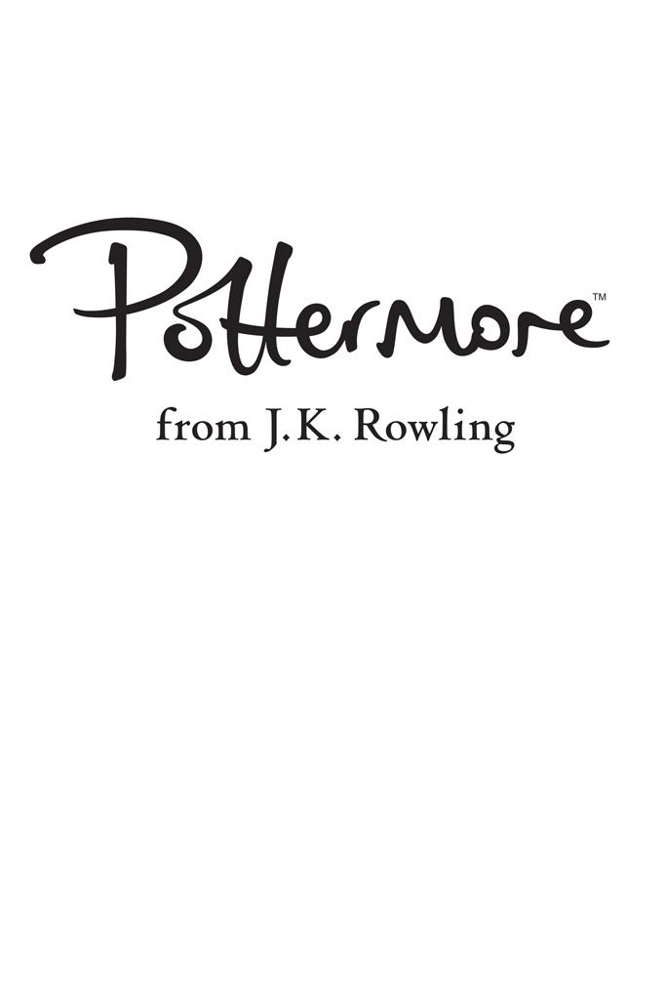
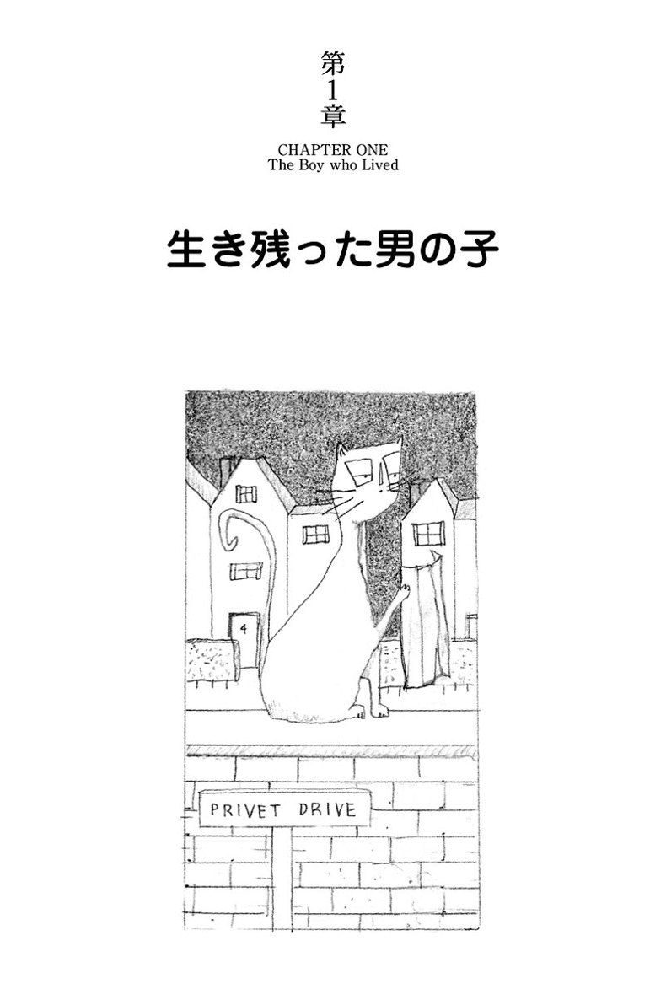
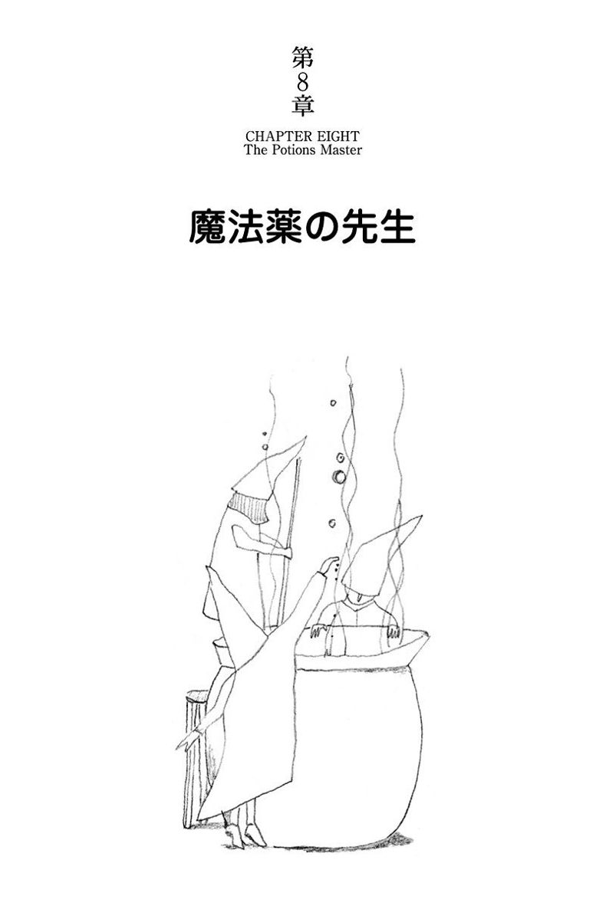
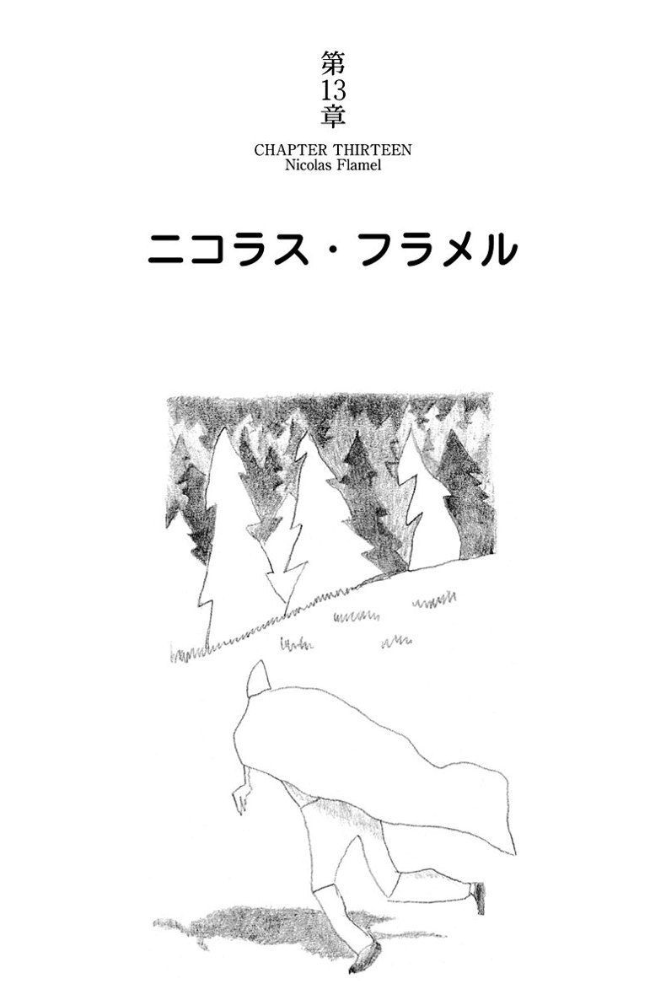

| ハリー・ポッターと賢者の石 - Harry Potter and the Philosopher's Stone (ハリー・ポッターシリーズ) | |
| J.K. Rowling | |
| Seizansha (2015) | |
ロンドン郊外の、どこにでもありそうな平凡な街角、ある晩不思議なことがおこる。そして額に稲妻の形をした傷を持つ赤ん坊が、一軒の家の前にそっと置かれる。生まれたばかりの男の子から両親を奪ったのは、暗黒の魔法使い、ヴォルデモート。平凡な俗物のおじ、おばに育てられ、同い年のいとこにいじめられながら、その子、ハリー・ポッターは何も知らずに11歳の誕生日を迎える。突然その誕生日に、ハリーに手紙が届く。魔法学校への入学許可証だった。キングズ・クロス駅の「9と3/4番線」から魔法学校行きの汽車が出る。ハリーを待ち受けていたのは、夢と、冒険、友情、そして自分の生い立ちをめぐるミステリー。ハリーはなぜ魔法界で知らぬものが無いほど有名なのか？額の傷はなぜか？自分でも気づかなかったハリーの魔法の力が次々と引き出されてゆく。そして邪悪な魔法使いヴォルデモートとの運命の対決。

生き残った男の子 The Boy who Lived
消えたガラス The Vanishing Glass
知らない人からの手紙 The Letters from No One
鍵の番人 The Keeper of the Keys
ダイアゴン横丁 Diagon Alley
９と番線からの旅 The Journey from Platform Nine and Three-Quarters
組分け帽子 The Sorting Hat
魔法薬の先生 The Potions Master
真夜中の決闘 The Midnight Duel
ハロウィーン Hallowe'en
クィディッチ Quidditch
みぞの鏡 The Mirror of Erised
ニコラス・フラメル Nicolas Flamel
ノルウェー・ドラゴンのノーバート Norbert the Norwegian Ridgeback
禁じられた森 The Forbidden Forest
仕掛けられた罠 Through the Trapdoor
二つの顔をもつ男 The Man with Two Faces

プリベット通り四番地の住人ダーズリー夫妻は、「おかげさまで、私どもはどこから見てもまともな人間です」というのが自慢だった。不思議とか神秘とかそんな非常識はまるっきり認めない人種で、まか不思議な出来事が彼らの周辺で起こるなんて、とうてい考えられなかった。
ダーズリー氏は、穴あけドリルを製造しているグラニングズ社の社長だ。ずんぐりと肉づきがよい体型のせいで、首がほとんどない。そのかわり巨大な口髭が目立っていた。奥さんの方はやせて、金髪で、なんと首の長さが普通の人の二倍はある。垣根越しにご近所の様子を詮索するのが趣味だったので、鶴のような首は実に便利だった。ダーズリー夫妻にはダドリーという男の子がいた。どこを探したってこんなにできのいい子はいやしない、というのが二人の親バカの意見だった。
そんな絵に描いたように満ち足りたダーズリー家にも、たった一つ秘密があった。なにより怖いのは、誰かにその秘密を嗅ぎつけられることだった。
――あのポッター一家のことが誰かに知られてしまったら一巻の終わりだ。
ポッター夫人はダーズリー夫人の実の妹だが、二人はここ数年一度も会ってはいなかった。それどころか、ダーズリー夫人は妹などいないというふりをしていた。なにしろ、妹もそのろくでなしの夫も、ダーズリー家の家風とはまるっきり正反対だったからだ。
――ポッター一家が不意にこのあたりに現れたら、ご近所の人たちがなんと言うか、考えただけでも身の毛がよだつ。
ポッター家にも小さな男の子がいることを、ダーズリー夫妻は知ってはいたが、ただの一度も会ったことがない。
――そんな子と、うちのダドリーがかかわり合いになるなんて......。
それもポッター一家を遠ざけている理由の一つだった。
さて、ある火曜日の朝のことだ。ダーズリー一家が目を覚ますと、外はどんよりとした灰色の空だった。物語はここから始まる。まか不思議なことがまもなくイギリス中で起ころうとしているなんて、そんな気配は曇り空のどこにもなかった。ダーズリー氏は鼻歌まじりで、仕事用の思いっきりありふれた柄のネクタイを選んだ。奥さんの方は大声で泣きわめいているダドリー坊やをやっとこさベビーチェアに座らせ、嬉々としてご近所の噂話を始めた。
窓の外を、大きなふくろうがバタバタと飛び去っていったが、二人とも気がつかなかった。八時半、ダーズリー氏は鞄を持ち、奥さんの頬にちょこっとキスして、それからダドリー坊やにもバイバイのキスをしようとしたが、しそこなった。坊やが癇癪を起こして、コーンフレークを皿ごと壁に投げつけている最中だったからだ。「わんぱく坊主め」ダーズリー氏は満足げに笑いながら家を出て、自家用車に乗り込み、四番地の路地をバックで出ていった。広い通りに出る前の角のところで、ダーズリー氏は、初めて何かおかしいぞと思った。
――なんと猫が地図を見ている――ダーズリー氏は一瞬、目を疑った。もう一度よく見ようと急いで振り返ると、たしかにプリベット通りの角にトラ猫が一匹立ち止まっていた。しかし、地図の方は見えなかった。ばかな、いったい何を考えているんだ。きっと光のいたずらだったに違いない。ダーズリー氏は瞬きをして、もう一度猫をよく見なおした。猫は見つめ返した。角を曲がり、広い通りに出た時、バックミラーに映っている猫が見えた。なんと、今度は「プリベット通り」と書かれた標識を読んでいる。――いや、「見て」いるだけだ。猫が地図やら標識やらを読めるはずがない。ダーズリー氏は体をブルッと振って気を取りなおし、猫のことを頭の中から振り払った。街に向かって車を走らせているうちに、彼の頭は、その日に取りたいと思っている穴あけドリルの大口注文のことでいっぱいになった。
ところが、街はずれまで来た時、穴あけドリルなど頭から吹っ飛ぶようなことが起こったのだ。いつもの朝の渋滞に巻き込まれ、車の中でじっとしていると、奇妙な服を着た人たちがうろうろしているのが、いやでも目についた。マントを着ている。
――おかしな服を着た連中には我慢がならん――近頃の若いやつらの格好ときたら！ マントも最近のバカげた流行なんだろう。
ハンドルを指でイライラと叩いていると、ふと、すぐそばに立っているおかしな連中が目に止まった。何やら興奮して囁き合っている。けしからんことに、とうてい若いとは言えないやつが数人混じっている。
――あいつなんか自分より年をとっているのに、エメラルド色のマントを着ている。どういう神経だ！
待てよ。ダーズリー氏は、はたと思いついた。
――くだらん芝居をしているに違いない――当然、連中は寄付集めをしているんだ......そうだ、それだ！
やっと車が流れはじめた。数分後、車はグラニングズ社の駐車場に着き、ダーズリー氏の頭は穴あけドリルに戻っていた。
ダーズリー氏のオフィスは十階で、いつも窓に背を向けて座っていた。そうでなかったら、今朝は穴あけドリルに集中できなかったかもしれない。真っ昼間からふくろうが空を飛び交うのを、ダーズリー氏は見ないですんだが、道行く多くの人はそれを目撃した。ふくろうが次から次へと飛んでゆくのを指さしては、いったいあれは何だと口をあんぐり開けて見つめていたのだ。ふくろうなんて、たいがいの人は夜にだって見たことがない。ダーズリー氏は昼まで、しごくまともに、ふくろうとは無縁で過ごした。五人の社員を怒鳴りつけ、何本か重要な電話をかけ、また少しガミガミ怒鳴った。おかげでお昼までは上機嫌だった。それから、少し手足を伸ばそうかと、道路の向かい側にあるパン屋まで歩いて買い物に行くことにした。
マントを着た連中のことはすっかり忘れていたのに、パン屋の手前でまたマント集団に出会ってしまった。そばを通り過ぎる時、ダーズリー氏は、けしからんとばかりに睨みつけた。なぜかこの連中は、ダーズリー氏を不安な気持にさせた。このマント集団も、何やら興奮して囁き合っていた。しかも寄付集めの空缶が一つも見当たらない。パン屋からの帰り道、大きなドーナツを入れた紙袋を握り、また連中のそばを通り過ぎようとしたその時、こんな言葉が耳に飛び込んできた。
「ポッターさんたちが、そう、わたしゃそう聞きました......」
「......そうそう、息子のハリーがね......」
ダーズリー氏はハッと立ち止まった。恐怖が湧き上がってきた。いったんはヒソヒソ声のする方を振り返って、何か言おうかと思ったが、待てよ、と考えなおした。
ダーズリー氏は猛スピードで道を横切り、オフィスに駆け戻るやいなや、秘書に「誰も取り継ぐな」と命令し、ドアをピシャッと閉めて電話をひっつかみ、家の番号を回しはじめた。しかし、ダイヤルし終わらないうちに気が変わった。受話器を置き、口髭をなでながら、ダーズリー氏は考えた。
――まさか、自分はなんて愚かなんだ。ポッターなんて珍しい名前じゃない。ハリーという名の男の子がいるポッター家なんて、山ほどあるに違いない。考えてみりゃ、甥の名前がハリーだったかどうかさえ確かじゃない。一度も会ったこともないし、ハービーという名だったかもしれない。いやハロルドかも。こんなことで妻に心配をかけてもしょうがない。妹の話がチラッとでも出ると、あれはいつも取り乱す。無理もない。もし自分の妹があんなふうだったら......それにしても、いったいあのマントを着た連中は......。
昼からは、どうも穴あけドリルに集中できなかった。五時に会社を出た時も、何かが気になり、外に出たとたん誰かと正面衝突してしまった。
「すみません」
ダーズリー氏は呻き声を出した。相手は小さな老人で、よろけて転びそうになった。数秒後、ダーズリー氏は老人がスミレ色のマントを着ているのに気づいた。地面にバッタリはいつくばりそうになったのに、まったく気にしていない様子だ。それどころか、顔が上下に割れるかと思ったほど大きくにっこりして、道行く人が振り返るほどのキーキー声でこう言った。
「旦那、すみませんなんてとんでもない。今日は何があったって気にしませんよ。万歳！『例のあの人』がとうとういなくなったんですよ！ あなたのようなマグルも、こんな幸せなめでたい日はお祝いすべきです」
小さな老人は、ダーズリー氏のおへそのあたりをやおらギュッと抱きしめると、立ち去っていった。ダーズリー氏はその場に根が生えたように突っ立っていた。まったく見ず知らずの人に抱きつかれた。マグルとかなんとか呼ばれたような気もする。クラクラしてきた。急いで車に乗り込むと、ダーズリー氏は家に向かって走り出した。どうか自分の幻想でありますように......幻想など決して認めないダーズリー氏にしてみれば、こんな願いを持つのは生まれて初めてだった。
やっとの思いで四番地に戻ると、真っ先に目に入ったのは――ああ、なんたることだ――今朝見かけた、あの、トラ猫だった。今度は庭の石垣の上に座り込んでいる。間違いなくあの猫だ。目のまわりの模様がおんなじだ。
「シッシッ！」
ダーズリー氏は大声を出した。
猫は動かない。じろりとダーズリー氏を見ただけだ。まともな猫がこんな態度を取るのだろうか、と彼は首をかしげた。それから気をシャンと取りなおし、家に入っていった。妻には何も言うまいという決心は変わっていなかった。奥さんは、すばらしくまともな一日を過ごしていた。夕食を食べながら、隣のミセス何とかが娘のことでさんざん困っているとか、ダドリー坊やが「イヤッ！」という新しい言葉を覚えたとかを夫に話して聞かせた。ダーズリー氏はなるべくふだんどおりに振る舞おうとした。ダドリー坊やが寝た後、居間に移ったが、ちょうどテレビの最後のニュースが始まったところだった。
「さて最後のニュースです。全国のバードウォッチャーによれば、今日はイギリス中のふくろうがおかしな行動を見せたとのことです。通常、ふくろうは夜に狩をするので、昼間に姿を見かけることはめったにありませんが、今日は夜明けとともに、何百というふくろうが四方八方に飛び交う光景が見られました。なぜふくろうの行動が急に夜昼逆になったのか、専門家たちは首をかしげています」
そこでアナウンサーはニヤリと苦笑いした。
「ミステリーですね。ではお天気です。ジム・マックガフィンさんどうぞ。ジム、今夜もふくろうが降ってきますか？」
「テッド、そのあたりはわかりませんが、今日おかしな行動をとったのはふくろうばかりではありませんよ。視聴者の皆さんが、遠くはケント、ヨークシャー、ダンディー州からお電話をくださいました。昨日私は雨の予報を出したのに、かわりに流れ星が土砂降りだったそうです。たぶん早々と『ガイ・フォークスの焚き火祭り』でもやったんじゃないでしょうか。皆さん、祭りの花火は来週ですよ！ いずれにせよ、今夜は間違いなく雨でしょう」
安楽椅子の中でダーズリー氏は体が凍りついたような気がした。イギリス中で流れ星だって？ 真っ昼間からふくろうが飛んだ？ マントを着た奇妙な連中がそこいら中にいた？ それに、あのヒソヒソ話。ポッター一家がどうしたとか......。
奥さんが紅茶を二つ持って居間に入ってきた。まずい。妻に何か言わなければなるまい。ダーズリー氏は落着かない咳払いをした。
「あー、ペチュニアや。ところで最近おまえの妹さんから便りはなかったろうね」
案の定、奥さんはビクッとして怒った顔をした。二人ともふだん、奥さんに妹はいないということにしているのだから当然だ。
「ありませんよ。どうして？」
とげとげしい返事だ。
「おかしなニュースを見たんでね」
ダーズリー氏はモゴモゴ言った。
「ふくろうとか......流れ星だとか......それに、今日街に変な格好をした連中がたくさんいたんでな」
「それで？」
「いや、ちょっと思っただけだがね......もしかしたら......何かかかわりがあるかと......その、なんだ......あれの仲間と」
奥さんは口をすぼめて紅茶をすすった。ダーズリー氏は「ポッター」という名前を耳にしたと思いきって打ち明けるべきかどうか迷ったが、やはりやめることにした。そのかわり、できるだけさりげなく聞いた。
「あそこの息子だが......たしかうちのダドリーと同じくらいの年じゃなかったかね？」
「そうかも」
「何という名前だったか......。たしかハワードだったね」
「ハリーよ。私に言わせりゃ、下品でありふれた名前ですよ」
「ああ、そうだった。おまえの言うとおりだよ」
ダーズリー氏はすっかり落ち込んでしまった。二人で二階の寝室に上がっていく時も、彼はまったくこの話題には触れなかった。
奥さんが洗面所に行ったすきに、こっそり寝室の窓に近寄り、家の前をのぞいてみた。あの猫はまだそこにいた。何かを待っているように、プリベット通りの奥の方をじっと見つめている。
――これも自分の幻想なのか？ これまでのことは何もかもポッター一家とかかわりがあるのだろうか？ もしそうなら......もし自分たちがあんな夫婦と関係があるなんてことが明るみに出たら......ああ、そんなことには耐えられない。
ベッドに入ると、奥さんはすぐに寝入ってしまったが、ダーズリー氏はあれこれ考えて寝つけなかった。
――しかし、万々が一ポッターたちがかかわっていたにせよ、あの連中が自分たちの近くにやってくるはずがない。あの二人やあの連中のことをわしらがどう思っているかポッター夫妻は知っているはずだ......何が起こっているかは知らんが、わしやペチュニアがかかわり合いになることなどあり得ない――そう思うと少しホッとして、ダーズリー氏は欠伸をして寝返りを打った。
――わしらにかぎって、絶対にかかわり合うことはない......。
――何という見当ちがい――
ダーズリー氏がトロトロと浅い眠りに落ちたころ、塀の上の猫は眠る気配さえ見せていなかった。銅像のようにじっと座ったまま、瞬きもせずプリベット通りの奥の曲り角を見つめていた。隣の道路で車のドアをバタンと閉める音がしても、二羽のふくろうが頭上を飛び交っても、毛一本動かさない。真夜中近くになって、初めて猫は動いた。
猫が見つめていたあたりの曲り角に、一人の男が現れた。あんまり突然、あんまりスーッと現れたので、地面から湧いて出たかと思えるぐらいだった。猫はしっぽをピクッとさせて、目を細めた。
プリベット通りでこんな人は絶対見かけるはずがない。ヒョロリと背が高く、髪や鬚の白さから見て相当の年寄りだ。髪も鬚もあまりに長いので、ベルトに挟み込んでいる。ゆったりと長いローブの上に、地面を引きずるほどの長い紫のマントをはおり、踵の高い、留め金飾りのついたブーツをはいている。淡いブルーの眼が、半月形のメガネの奥でキラキラ輝き、高い鼻が途中で少なくとも二回は折れたように曲っている。この人の名はアルバス・ダンブルドア。
名前も、ブーツも、何から何までプリベット通りらしくない。しかし、ダンブルドアはまったく気にしていないようだった。マントの中をせわしげに何かをガサゴソ探していたが、誰かの視線に気づいたらしく、ふっと顔を上げ、通りのむこうからこちらの様子をじっとうかがっている猫を見つけた。そこに猫がいるのが、なぜかおもしろいらしく、クスクスと笑うと、「やっぱりそうか」と呟いた。
探していたものが内ポケットから出てきた。銀のライターのようだ。ふたをパチンと開け、高くかざして、カチッと鳴らした。
一番近くの街灯が、ポッと小さな音を立てて消えた。
もう一度カチッといわせた。
次の街灯がゆらめいて闇の中に消えていった。「灯消しライター」を十二回カチカチ鳴らすと、十二個の街灯は次々と消え、残る灯りは、遠くの、針の先でつついたような二つの点だけになった。猫の目だ。まだこっちを見つめている。いま誰かが窓の外をのぞいても、ビーズのように光る目のダーズリー夫人でさえ、何が起こっているのか、この暗闇ではまったく見えなかっただろう。ダンブルドアは「灯消しライター」をマントの中にスルリとしまい、四番地の方へと歩いた。そして塀の上の猫の隣に腰掛けた。一息おくと、顔は向けずに、猫に向かって話しかけた。
「マクゴナガル先生、こんなところで奇遇じゃのう」
トラ猫の方に顔を向け、ほほえみかけると、猫はすでに消えていた。かわりに、厳格そうな女の人が、あの猫の目の周りにあった縞模様とそっくりの四角いメガネをかけて座っていた。やはりマントを、しかもエメラルド色のを着ている。黒い髪をひっつめて、小さな髷にしている。
「どうして私だとおわかりになりましたの？」
女の人は見破られて動揺していた。
「まあまあ、先生。あんなにコチコチな座り方をする猫なんていやしませんぞ」
「一日中レンガ塀の上に座っていればコチコチにもなります」
「一日中？ お祝いしていればよかったのに。ここに来る途中、お祭りやらパーティやら、ずいぶんたくさん見ましたよ」
マクゴナガル先生は怒ったようにフンと鼻を鳴らした。
「ええ、たしかにみんな浮かれていますね」
マクゴナガル先生はいらいらした口調だ。
「みんなもう少し慎重にすべきだとお思いになりませんか？ まったく......マグルたちでさえ、何かあったと感づきましたよ。何しろニュースになりましたから」
マクゴナガル先生は明かりの消えたダーズリー家の窓を顎でしゃくった。
「この耳で聞きましたよ。ふくろうの大群......流星群......そうなると、マグルの連中もまったくのおバカさんじゃありませんからね。何か感づかないはずはありません。ケント州の流星群だなんて――ディーダラス・ディグルの仕業だわ。あの人はいつだって軽はずみなんだから」
「みんなを責めるわけにはいかんでしょう」
ダンブルドアは優しく言った。
「この十一年間、お祝いごとなぞほとんどなかったのじゃから」
「それはわかっています」
マクゴナガル先生は腹立たしげに言った。
「だからといって、分別を失ってよいわけはありません。みんな、なんて不注意なんでしょう。真っ昼間から街に出るなんて。しかもマグルの服に着替えもせずに、あんな格好のままで噂話をし合うなんて」
ダンブルドアが何か言ってくれるのを期待しているかのように、マクゴナガル先生はチラリと横目でダンブルドアを見たが、何も反応がないので、話を続けた。
「よりによって、『例のあの人』がついに消え失せたちょうどその日に、今度はマグルが私たちに気づいてしまったらとんでもないことですわ。ダンブルドア先生、『あの人』は本当に消えてしまったのでしょうね？」
「たしかにそうらしいのう。我々は大いに感謝しなければ。レモン・キャンディーはいかがかな？」
「何ですって？」
「レモン・キャンディーじゃよ。マグルの食べる甘いものじゃが、わしゃ、これが好きでな」
「結構です」
レモン・キャンディーなど食べている場合ではないとばかりに、マクゴナガル先生は冷ややかに答えた。
「いま申し上げましたように、たとえ『例のあの人』が消えたにせよ......」
「まあまあ、先生、あなたのように見識のおありになる方が、彼を名指しで呼べないわけはないでしょう？ 『例のあの人』なんてまったくもってナンセンス。この十一年間、ちゃんと名前で呼ぶようみんなを説得し続けてきたのじゃが。『ヴォルデモート』とね」
マクゴナガル先生はギクリとしたが、ダンブルドアはくっついたレモン・キャンディーをはがすのに夢中で気づかないようだった。
「『例のあの人』なんて呼び続けたら、混乱するばかりじゃよ。ヴォルデモートの名前を言うのが恐ろしいなんて、理由がないじゃろうが」
「そりゃ、先生にとってはないかもしれませんが」
マクゴナガル先生は驚きと尊敬の入り交じった言い方をした。
「だって、先生はみんなとは違います。『例のあ』......いいでしょう、ヴォルデモートが恐れていたのはあなた一人だけだったということは、みんな知ってますよ」
「おだてないでおくれ」
ダンブルドアは静かに言った。
「ヴォルデモートには、わしには決して持つことができない力があったよ」
「それは、あなたがあまりに――そう......気高くて、そういう力を使おうとなさらなかったからですわ」
「あたりが暗くて幸いじゃよ。こんなに赤くなったのはマダム・ポンフリーがわしの新しい耳あてを誉めてくれた時以来じゃ」
マクゴナガル先生は鋭いまなざしでダンブルドアを見た。
「ふくろうが飛ぶのは、噂が飛ぶのに比べたらなんでもありませんよ。みんながどんな噂をしているか、ご存知ですか？ なぜ彼が消えたのだろうとか、何が彼にとどめを刺したのだろうかとか」
マクゴナガル先生はいよいよ核心に触れたようだ。一日中冷たい、固い塀の上で待っていた本当のわけはこれだ。猫に変身していた時にも、自分の姿に戻った時にも見せたことがない、射すようなまなざしで、ダンブルドアを見すえている。他の人がなんと言おうが、ダンブルドアの口から聞かないかぎり、絶対信じないという目つきだ。ダンブルドアは何も答えず、レモン・キャンディーをもう一個取り出そうとしていた。
「みんなが何と噂しているかですが......」
マクゴナガル先生はもう一押ししてきた。
「昨夜、ヴォルデモートがゴドリックの谷に現れた。ポッター一家が狙いだった。噂ではリリーとジェームズが......ポッター夫妻が......あの二人が......死んだ......とか」
ダンブルドアはうなだれた。マクゴナガル先生は息を呑んだ。
「リリーとジェームズが......信じられない......信じたくなかった......ああ、アルバス......」
ダンブルドアは手を伸ばしてマクゴナガル先生の肩をそっと叩いた。
「わかる......よーくわかるよ......」
沈痛な声だった。
マクゴナガル先生は声を震わせながら話し続けた。
「それだけじゃありませんわ。噂では、一人息子のハリーを殺そうとしたとか。でも――失敗した。その小さな男の子を殺すことはできなかった。なぜなのか、どうなったのかはわからないが、ハリー・ポッターを殺しそこねた時、ヴォルデモートの力が打ち砕かれた――だから彼は消えたのだと、そういう噂です」
ダンブルドアはむっつりとうなずいた。
「それじゃ......やはり本当なんですか？」
マクゴナガル先生は口ごもった。
「あれほどのことをやっておきながら......あんなにたくさん人を殺したのに......小さな子供を殺しそこねたっていうんですか？ 驚異ですわ......よりによって、彼にとどめを刺したのは子供......それにしても、一体全体ハリーはどうやって生き延びたんでしょう？」
「想像するしかないじゃろう。本当のことはわからずじまいかもしれん」
マクゴナガル先生はレースのハンカチを取り出し、メガネの下から眼に押し当てた。ダンブルドアは大きく鼻をすすると、ポケットから金時計を取り出して時間を見た。とてもおかしな時計だ。針は十二本もあるのに、数字が書いていない。そのかわり、小さな惑星がいくつも時計の縁を回っていた。ダンブルドアにはこれでわかるらしい。時計をポケットにしまうと、こう言った。
「ハグリッドは遅いのう。ところで、あの男じゃろう？ わしがここに来ると教えたのは」
「そうです。一体全体なぜこんなところにおいでになったのか、たぶん話してはくださらないのでしょうね？」
「ハリー・ポッターを、おばさん夫婦のところへ連れてくるためじゃよ。親戚はそれしかいないのでな」
「まさか――間違っても、ここに住んでいる連中のことじゃないでしょうね」
マクゴナガル先生は弾かれたように立ち上がり、四番地を指さしながら叫んだ。
「ダンブルドア、だめですよ。今日一日ここの住人を見ていましたが、ここの夫婦ほど私たちとかけ離れた連中はまたといませんよ。それにここの息子ときたら――母親がこの通りを歩いている時、お菓子が欲しいと泣きわめきながら母親を蹴り続けていましたよ。ハリー・ポッターがここに住むなんて！」
「ここがあの子にとって一番いいのじゃ」
ダンブルドアはきっぱりと言った。
「おじさんとおばさんが、あの子が大きくなったらすべてを話してくれるじゃろう。わしが手紙を書いておいたから」
「手紙ですって？」
マクゴナガル先生は力なくそう繰り返すと、また塀に座りなおした。
「ねえ、ダンブルドア。手紙で一切を説明できるとお考えですか？ 連中は絶対あの子のことを理解しやしません！ あの子は有名人です――伝説の人です――今日のこの日が、いつかハリー・ポッター記念日になるかもしれない――ハリーに関する本が書かれるでしょう――私たちの世界でハリーの名を知らない子供は一人もいなくなるでしょう！」
「そのとおり」
ダンブルドアは半月メガネの上から真面目な目つきをのぞかせた。
「そうなればどんな少年でも舞い上がってしまうじゃろう。歩いたりしゃべったりする前から有名だなんて！ 自分が覚えてもいないことのために有名だなんて！ あの子に受け入れる準備ができるまで、そうしたことから一切離れて育つ方がずっといいということがわからんかね？」
マクゴナガル先生は口を開きかけたが、思いなおして、喉まで出かかった言葉を呑み込んだ。
「そう、そうですね。おっしゃるとおりですわ。でもダンブルドア、どうやってあの子をここに連れてくるんですか？」
ダンブルドアがハリーをマントの下に隠しているとでも思ったのか、マクゴナガル先生はチラリとマントに目をやった。
「ハグリッドが連れてくるよ」
「こんな大事なことをハグリッドに任せて――あの......賢明なことでしょうか？」
「わしは自分の命でさえハグリッドに任せられるよ」
「何もあれの心根がまっすぐじゃないなんて申しませんが」
マクゴナガル先生はしぶしぶ認めた。
「でもご存知のように、うっかりしているでしょう。どうもあれときたら――おや、何かしら？」
低いゴロゴロという音があたりの静けさを破った。二人が通りの端から端まで、車のヘッドライトが見えはしないかと探している間に、音は確実に大きくなってきた。二人が同時に空を見上げた時には、音は爆音になっていた。――大きなオートバイが空からドーンと降ってきて、二人の目の前に着陸した。
巨大なオートバイだったが、それにまたがっている男に比べればちっぽけなものだ。男の背丈は普通の二倍、横幅は五倍はある。許しがたいほど大きすぎて、それになんて荒々しい――ボウボウとした黒い髪と髯が、長くモジャモジャと絡まり、ほとんど顔中を覆っている。手はゴミバケツのふたほど大きく、革ブーツをはいた足は赤ん坊イルカぐらいある。筋肉隆々の巨大な腕に、何か毛布にくるまったものを抱えていた。
「ハグリッドや」
ダンブルドアはほっとしたような声で呼びかけた。
「やっと来たね。いったいどこからオートバイを手に入れたね？」
「借りたんでさ。ダンブルドア先生様」
大男はそーっと注意深くバイクから降りた。
「ブラック家の息子のシリウスに借りたんでさ。先生、この子を連れてきました」
「問題はなかったろうね？」
「はい、先生。家はあらかた壊されっちまってたですが、マグルたちが群れ寄ってくる前に、無事に連れ出しました。ブリストルの上空を飛んどった時に、この子は眠っちまいました」
ダンブルドアとマクゴナガル先生は毛布の包みの中をのぞき込んだ。かすかに、男の赤ん坊が見えた。ぐっすり眠っている。漆黒のふさふさした前髪、そして額には不思議な形の傷が見えた。稲妻のような形だ。
「この傷があの......」マクゴナガル先生が囁いた。
「そうじゃ。一生残るじゃろう」
「ダンブルドア、なんとかしてやれないんですか？」
「たとえできたとしても、わしは何もせんよ。傷は結構役に立つもんじゃ。わしにも一つ左膝の上にあるがね、完全なロンドンの地下鉄地図になっておる......さてと、ハグリッドや、その子をこっちへ――早くすませたほうがよかろう」
ダンブルドアはハリーを腕に抱き、ダーズリー家の方に行こうとした。
「あの......先生、お別れのキスをさせてもらえねえでしょうか？」
ハグリッドが頼んだ。
大きな毛むくじゃらの顔をハリーに近づけ、ハグリッドはチクチク痛そうなキスをした。そして突然、傷ついた犬のような声でワオーンと泣き出した。
「シーッ！ マグルたちが目を覚ましてしまいますよ」
マクゴナガル先生が注意した。
「す、す、すまねえ」
しゃくり上げながらハグリッドは大きな水玉模様のハンカチを取り出し、その中に顔を埋めた。
「と、とってもがまんできねえ......リリーとジェームズは死んじまうし、かわいそうなちっちゃなハリーはマグルたちと暮さなきゃなんねえ......」
「そうよ、ほんとに悲しいことよ。でもハグリッド、自分を抑えなさい。さもないとみんなに見つかってしまいますよ」
マクゴナガル先生は小声でそう言いながら、ハグリッドの腕を優しくポンポンと叩いた。
ダンブルドアは庭の低い生垣をまたいで、玄関へと歩いていった。そっとハリーを戸口に置くと、マントから手紙を取り出し、ハリーをくるんだ毛布に挟み込み、二人のところに戻ってきた。三人は、まるまる一分間そこにたたずんで、小さな毛布の包みを見つめていた。ハグリッドは肩を震わせ、マクゴナガル先生は目をしばたかせ、ダンブルドアの目からはいつものキラキラした輝きが消えていた。
「さてと......」
ダンブルドアがやっと口を開いた。
「これですんだ。もうここにいる必要はない。帰ってお祝いに参加しようかの」
「へい」
ハグリッドの声はくぐもっている。
「バイクは片づけておきますだ。マクゴナガル先生、ダンブルドア先生様、おやすみなせえ」
ハグリッドは流れ落ちる涙を上着の袖でぬぐい、オートバイにさっとまたがり、エンジンをかけた。バイクは唸りをあげて空に舞い上がり、夜の闇へと消えていった。
「後ほどお会いしましょうぞ。マクゴナガル先生」
ダンブルドアはマクゴナガル先生の方に向かってうなずいた。マクゴナガル先生は答のかわりに鼻をかんだ。
ダンブルドアはくるりと背を向け、通りのむこうに向かって歩き出した。曲り角で立ち止まり、また銀の「灯消しライター」を取り出し、一回だけカチッといわせた。十二個の街灯がいっせいにともり、プリベット通りは急にオレンジ色に照らし出された。トラ猫が道のむこう側の角をしなやかに曲がっていくのが見えた。そして四番地の戸口のところには毛布の包みだけがポツンと見えた。
「幸運を祈るよ、ハリー」
ダンブルドアはそう呟くと、靴の踵でクルクルッと回転し、ヒュッというマントの音とともに消えた。
こぎれいに刈り込まれたプリベット通りの生垣を、静かな風が波立たせた。墨を流したような夜空の下で、通りはどこまでも静かで整然としていた。まか不思議な出来事が、ここで起こるとは誰も思ってもみなかったことだろう。赤ん坊は眠ったまま、毛布の中で寝返りを打った。片方の小さな手が、脇に置かれた手紙を握った。自分が特別だなんて知らずに、有名だなんて知らずに、ハリー・ポッターは眠り続けている。数時間もすれば、ダーズリー夫人が戸を開け、ミルクの空き瓶を外に出そうとしたとたん、悲鳴をあげるだろう。その声でハリーは目が覚めるだろう。それから数週間は、いとこのダドリーに小突かれ、つねられることになるだろうに......そんなことは何も知らずに、赤ん坊は眠り続けている......ハリーにはわかるはずもないが、こうして眠っているこの瞬間に、国中の人が、あちこちでこっそりと集まり、杯を挙げ、ヒソヒソ声で、こう言っているのだ。
「生き残った男の子、ハリー・ポッターに乾杯！」

ダーズリー夫妻が目を覚まし、戸口の石段に赤ん坊がいるのを見つけてから、十年近くがたった。プリベット通りは少しも変わっていない。太陽は、昔と同じこぎれいな庭のむこうから昇り、ダーズリー家の玄関の真鍮の「４」の数字を照らした。その光が、這うように居間に射し込んでゆく。ダーズリー氏があの運命的なふくろうのニュースを聞いた夜から、居間はまったく変わっていなかった。ただ暖炉の上の写真だけが、長い時間の経ったことを知らせている。十年前は、ぽんぽん飾りのついた色とりどりの帽子をかぶり、ピンクのビーチボールのような顔をした赤ん坊の写真がたくさんあった......ダドリー・ダーズリーはもう赤ん坊ではない。写真には金髪の大きな男の子が写っている。初めて自転車に乗った姿、お祭りの回転木馬の上、パパとコンピュータ・ゲーム、ママに抱きしめられてキスされる姿。この部屋のどこにも、少年がもう一人この家に住んでいる気配はない。
しかし、ハリー・ポッターはそこにいた。いまはまだ眠っているが、もう、そう長くは寝ていられないだろう。ペチュニアおばさんが目を覚ました。おばさんのかん高い声で、一日の騒音が始まるのだ。
「さあ、起きて！ 早く！」
ハリーは驚いて目を覚ました。おばさんが部屋の戸をドンドン叩いている。
「起きるんだよ！」と金切り声がした。
おばさんがキッチンの方に歩いていく音、それからフライパンをコンロにかける音がした。仰向けになったままで、ハリーはいままで見ていた夢を思い出そうとしていた。いい夢だったのに......。空飛ぶオートバイが出てきたっけ。ハリーは前にも同じ夢を見たような不思議な心地がした。
「まだ起きないのかい？」おばさんが戸のむこうに戻ってきて、きつい声を出した。
「もうすぐだよ」
「さあ、支度をおし。ベーコンの具合を見ておくれ。焦がしたら承知しないよ。今日はダドリーちゃんのお誕生日なんだから、間違いのないようにしなくちゃ」
ハリーは呻いた。
「何か言った？」
おばさんが戸の外から嚙みつくように言った。
「なんにも言わないよ。なんにも......」
ダドリーの誕生日――なんで忘れられようか。ハリーはのろのろと起き上がり、靴下を探した。ベッドの下で見つけた靴下の片方にはりついていたクモを引きはがしてから、ハリーは靴下をはいた。クモにはもう慣れっこだ。なにしろ階段下の物置はクモだらけだったし、そこがハリーの部屋だったのだから。
服を着ると、ハリーは廊下に出てキッチンに向かった。食卓はダドリーの誕生日のプレゼントの山に埋もれてほとんど見えなかった。欲しがっていた新しいコンピュータもあるようだし、二台目のテレビやレース用自転車ももちろんあった。ダドリーがなぜレース用自転車を欲しがるのか、ハリーにとってはまったくの謎だった。太って運動嫌いなのに――誰かにパンチを食らわせる運動だけは別だが......。ダドリーはハリーをお気に入りのサンドバッグにしていたが、よく空振りした。一見そうは見えなくても、ハリーはとてもすばしっこかったのだ。
暗い物置に住んでいるせいか、ハリーは年のわりには小柄でやせていた。その上、着るものはハリーの四倍も大きいダドリーのお古ばかりだったので、ますますやせて小さく見えた。
ハリーは、膝小僧が目立つような細い脚で、細面の顔に真っ黒な髪、明るい緑色の目をしていた。丸いメガネをかけていたが、ダドリーの顔面パンチがしょっちゅう飛んでくるので、セロハンテープであちこち貼りつけてあった。自分の顔でたった一つ気に入っていたのは、額にうっすらと見える稲妻形の傷だ。物心ついた時から傷があった。ハリーの記憶では、ペチュニアおばさんにまっさきに聞いた質問は「どうして傷があるの」だった。
「おまえの両親が自動車事故で死んだ時の傷だよ。質問は許さないよ」
これがおばさんの答えだった。質問は許さない――ダーズリー家で平穏無事に暮らすための第一の規則だった。
ハリーがベーコンを裏返していると、バーノンおじさんがキッチンに入ってきた。
「髪をとかせ！」
朝の挨拶がわりにおじさんは一喝した。
だいたい週に一度、おじさんは新聞越しにハリーを上目づかいに見ながら、髪を短く切れと大声を出すのだった。同級生の男の子を全部束にしてもかなわないほど頻繁にハリーは散髪させられたが、まったくムダだった。切っても切ってもすぐ元どおりに伸びるのだ。しかもありとあらゆる方向に。
ハリーが卵を焼いていると、ダドリーが母親に連れられてキッチンに入ってきた。父親そっくりだ。大きなピンクの顔で、首はほとんどなく、薄い水色の小さな目をして、たっぷりとしたブロンドの髪が、たてにも横にも大きい顔の上に載っかっている。おばさんはダドリーのことをよく、天使のようだわ、と言ったが、ハリーは豚がかつらをつけたみたいだ、といつも思っていた。
ハリーは食卓の上にベーコンと卵の皿を並べた。プレゼントのせいでほとんど隙間がないので、そう簡単には置けない。ダドリーの方は、プレゼントの数を数えていたが、突然顔色を変えてパパとママを見上げた。
「三十六だ。去年より二つ少ないや」
「坊や、マージおばさんの分を数えなかったでしょう。パパとママからの大きな包みの下にありますよ」
「わかったよ。でも三十七だ」
ダドリーの顔に血が上ってきた。ハリーはダドリーの癇癪玉が大爆発寸前なのを感じて、いつテーブルがひっくり返されてもいいように大急ぎでベーコンに食らいついた。
おばさんも明らかに危険を感じたらしく、慌てて言った。
「今日お出かけした時、あと二つ買ってあげましょう。どう？ かわいこちゃん。あと二個もよ。それでいい？」
ダドリーはちょっと考え込んだ。かなり難しい計算らしかったが、やがて、のろのろと言った。
「そうすると、ぼく、三十......三十......」
「三十九よ、かわいい坊や」
「そうか、そんならいいや」
ダドリーはドッカと座り込み、一番手近にあった包みを鷲づかみにした。
バーノンおじさんはクスクス笑った。
「やんちゃ君はパパと同じで、絶対損したくないってわけだ。なんてすごい子だ！ ダドリーや」
パパはダドリーの髪をクシャクシャッとなでた。
電話が鳴り、おばさんがキッチンを出ていった。おじさんもハリーも、ダドリーが包みを解くのを眺めていた。レース用自転車、８ミリカメラ、ラジコン飛行機、新しいコンピュータ・ゲーム十六本、ビデオ・レコーダー......おばさんが戻ってきた時は、金の腕時計の包みをビリビリ破っているところだった。おばさんは怒ったような困ったような顔で現れた。
「バーノン、大変だわ。フィッグさんが脚を折っちゃって、この子を預かれないって」
おばさんはハリーの方を顎でしゃくった。
ダドリーはショックで口をあんぐり開けたが、ハリーの心は躍った。毎年誕生日になると、ダドリーは友達と二人で、おじさんとおばさんに連れられ、アドベンチャー・パークやハンバーガー屋、映画などに出かけることになっていた。ハリーはいつも置いてけぼりで、二筋むこうに住んでいる変わり者のフィッグばあさんに預けられていた。ハリーはそこが大嫌いだった。家中キャベツの匂いがするし、おまけにばあさんがいままで飼った猫の写真を全部、無理やり見せるからだ。
「どうします？」
ペチュニアおばさんは、ハリーが仕組んだと言わんばかりに恐ろしい顔でハリーを睨んだ。ハリーは骨折したばあさんに同情すべきだと思ったが、あと一年間はティブルスやらスノーイー、ミスター・ポーズ、タフティーなどの猫の写真を見ないですむと思うと、同情しろという方が無理だった。
「マージに電話したらどうかね」とおじさんが提案した。
「バカなこと言わないで。マージはこの子を嫌ってるのよ」
ダーズリー夫妻はよくこんなふうに、ハリーの目の前で、本人をまるで無視して話をした。むしろ、ハリーは言葉の通じないけがらわしいナメクジのように無視された。
「それなら、ほれ、なんていう名前だったか、おまえの友達の――イボンヌ、どうかね」
「バケーションでマジョルカ島よ」
「僕をここに置いていったら」
そうなることを期待しながらハリーが口を挟んだ。（いつもと違うテレビ番組を自分で選んで見ることができるかもしれないし、ひょっとするとダドリーのコンピュータをいじったりできるかもしれない）
おばさんはレモンを丸ごと飲み込んだような顔をした。
「それで、帰ってきたら家がバラバラになってるってわけ？」
「僕、家を爆破したりしないよ」
誰もハリーの言うことを聞いていなかった。
「動物園まで連れて行ったらどうかしら......それで、車の中に残しておいたら......」
おばさんが気乗りのしない様子で言った。
「しかし新車だ。ハリーを一人で中に残しておくわけにはいかん......」
ダドリーはワンワン泣き出した。嘘泣きだ。ここ何年も本当に泣いたことなんてないが、顔をゆがめてメソメソすれば、母親が欲しいものは何でもくれることを知っているのだ。
「ダッドちゃん、ダドリーちゃん、泣かないで。ママがついているわ。おまえの特別な日を、あいつなんかに台無しにさせたりしやしないから！」
おばさんはダドリーを抱きしめた。
「ぼく......いやだ......あいつが......く、く、くるなんて！」
しゃくり上げるふりをしながらダドリーがわめいた。
「いつだって、あいつが、めちゃめちゃにするんだ！」
抱きしめている母親の腕の隙間から、ダドリーはハリーに向かって意地悪くニヤリと笑った。ちょうどその時玄関のベルが鳴った。
「ああ、なんてことでしょう。みんなが来てしまったわ！」
おばさんは大慌てだった。――やがてダドリーの一の子分、ピアーズ・ポルキスが母親に連れられて部屋に入ってきた。ねずみ顔のガリガリにやせた子だ。ダドリーが誰かを殴る時に、腕を後ろにねじ上げる役をするのはたいていこの子だ。ダドリーはたちまち嘘泣きをやめた。
三十分後、ハリーはダーズリー一家の車の後部座席にピアーズ、ダドリーと一緒に座り、生まれて初めて動物園に向かっていた。信じられないような幸運だった。おじさんもおばさんも、結局ハリーをどうしていいか他に思いつかなかった。ただし、出発前にバーノンおじさんはハリーをそばに呼んだ。
「言っておくがな......」
おじさんは大きな赤ら顔をハリーの目の前につきつけた。
「小僧、変なことをしてみろ。ちょっとでもだ、そしたらクリスマスまでずっと物置に閉じ込めてやる」
「僕、何もしないよ。ほんとだよ......」
しかしおじさんは信じていなかった。ハリーの言うことをいままで誰も信じてくれなかった。
困ったことに、ハリーの周りでよく不思議なことが起きたし、自分がやったんじゃないとダーズリー夫妻にいくら話してもムダだった。
ある時、床屋から帰ってきたハリーが、散髪する前と同じように髪が伸びているのを見て業を煮やしたペチュニアおばさんが、キッチンバサミでクリクリに刈り上げたことがあった。「醜い傷を隠すため」と前髪だけは残してくれたが、あとはほとんど丸坊主になった。ダドリーはハリーを見てバカ笑いしたし、ハリーは翌日の学校のことを思うと眠れなかった。ただでさえ、ダブダブの服を着てセロハンテープだらけのメガネをかけたハリーは物笑いの種だった。しかし、翌朝起きてみると、髪は刈り上げる前とまったく変わらなかった。おかげでハリーは一週間物置に閉じ込められた。どうしてこんなに早く髪が伸びたのかわからないと、ハリーがいくら言ってもだめだった。
またある時は、おばさんがダドリーのお古の吐き気がするようなセーター（茶色でオレンジ色の毛玉が浮き上がっていた）を無理にハリーに着せようとしたが、ハリーの頭からかぶせようと、おばさんが躍起になればなるほど服はどんどん小さくなった。とうとう、指人形ならいざ知らず、ハリーにはとうてい着られないほどに縮んでしまった。おばさんはきっと洗濯で縮んだのだと決めつけ、この時はハリーはお仕置を受けずにすんでほっとした。
反対にひどい目にあったのが、学校の屋根事件だった。いつものようにダドリー軍団に追いかけられ、気がついたらハリーは食堂の屋根の煙突の上に腰掛けていた。これには誰よりもハリー自身が驚いた。ダーズリー家には女校長先生から、ハリーが学校の建物によじ登った、とたいそうご立腹の手紙がきた。しかし、ハリーがやったことといえば（物置に閉じ込められた時、外にいるバーノンおじさんにも大声でそう言ったのだが）食堂の外にあった大きな容器の陰に飛び込もうとしただけだったのだ。ハリーはジャンプした拍子に風にさらわれたに違いないと思った。
しかし、今日は絶対おかしなことがあってはならない。学校でも、物置でも、キャベツ臭いフィッグばあさんの居間でもないところで一日を過ごせるのだから、ダドリーやピアーズと一緒だって文句は言えない。
運転をしながら、おじさんはおばさんを相手にブツブツ不平を言った。何しろ不平を言うのが好きなのだ。会社の人間のこと、ハリーのこと、市議会のこと、ハリーのこと、銀行のこと、ハリーのこと、ざっとこんなところがお気に入りのネタだった。今朝はオートバイがやり玉に上がった。
「......ムチャクチャな音を出して走りおって。チンピラどもが」
オートバイに追い抜かれた時におじさんが言った。
「僕、オートバイの夢を見た」ハリーは急に思い出した。「空を飛んでたよ」
バーノンおじさんはとたんに前の車にぶつかりそうになった。運転席からぐるっと振り向きざま、彼は口髭を生やした巨大な赤かぶのような顔でハリーを怒鳴りつけた。
「オートバイは空を飛ばん！」
ダドリーとピアーズがクスクス笑った。
「飛ばないことはわかってる。ただの夢だよ」
ハリーは何にも言わなきゃよかったと思った。ダーズリー夫妻はハリーが質問するのも嫌ったが、もっと嫌ったのは、夢だろうが漫画だろうが、何かがまともではない行動をする話だった。ハリーがそんな話をすると、まるで危険なことを考えているとでも思っているようだった。
その日は天気もよく、土曜日で、動物園は家族連れで混み合っていた。ダーズリー夫妻は入口でダドリーとピアーズに大きなチョコレート・アイスクリームを買い与えた。ハリーを急いでアイス・スタンドから遠ざけようとしたが、間に合わず、愛想のよい売り子のおばさんが、坊やは何がいいのと聞いたので、しかたなしにハリーにも安いレモン・アイスを買い与えた。これだってけっこういける、とアイスをなめながら、ハリーはみんなと一緒にゴリラの檻を眺めた。――ゴリラが頭を掻いている姿がダドリーそっくりだ。あれで金髪だったらな......。
こんなにすばらしい朝を過ごしたのは、ハリーにとって久しぶりだった。昼近くになると、ダドリーもピアーズも動物に飽きてきたので、かわりにお気に入りのハリー殴りを始めるかもしれないと思い、ハリーは慎重に二人から少し離れて歩くようにした。園内のレストランでお昼を食べたが、ダドリーはチョコレート・パフェが小さいと癇癪を起こし、おじさんがもう一つ買ってやるはめになり、ハリーはパフェのお下がりを食べることを許された。
後になって思えば、こんないいことばかりが続くはずがなかった。
昼食の後で、爬虫類館を見た。館内はヒヤッとして暗く、壁に沿ってガラスケースが並び、中には照明がついていた。ガラスのむこうにはいろいろなトカゲやヘビがいて、材木や石の上をスルスルと這い回っていた。ダドリーとピアーズは巨大な毒ヘビコブラと、人間でも絞め殺しそうな太いニシキヘビを見たがった。ダドリーはすぐに館内で一番大きなヘビを見つけた。バーノンおじさんの車を二巻きにして砕いてくずかごに放り込みそうな大蛇だ――ただし、いまはそういうムードではないらしい。それどころかぐっすり眠っている。
ダドリーは、ガラスに鼻を押しつけて、ツヤツヤと光る茶色のとぐろを見つめていた。
「動かしてよ」
ダドリーは父親にせがんだ。おじさんはガラスをトントンと叩いたが、ヘビは身じろぎもしない。
「もう一回やって」
ダドリーが命令した。おじさんは拳でドンドンとガラスを叩いたが、ヘビは眠り続けている。
「つまんないや」
ダドリーはブーブー言いながら行ってしまった。
ハリーはガラスの前に来て、じっとヘビを見つめた。ヘビの方こそ退屈のあまり死んでしまっても不思議はない。一日中、ガラスを叩いてチョッカイを出すバカな人間ども以外に友達もいない......物置で寝起きする方がまだましだ。ドアをドンドンやられるのはペチュニアおばさんが朝起こしにくる時だけだし、少なくともハリーは家の中を歩き回れる。
突然、ヘビはビーズのような目を開け、ゆっくり、とてもゆっくりとかま首をもたげ、ハリーの目線と同じ高さまで持ち上げた。
ヘビがウィンクした。
ハリーは目を見張った。慌てて誰か見ていないかと、周りを見回した。
大丈夫だ。ハリーはヘビに視線を戻し、ウィンクを返した。
ヘビはかま首をバーノンおじさんとダドリーの方に伸ばし、目を天井に向けた。その様子は、明らかにハリーにこう言っていた。
「いつもこうさ」
「わかるよ」
ヘビに聞こえるかどうかわからなかったが、ガラス越しにハリーはそう呟いた。
「ほんとにイライラするだろうね」
ヘビは激しくうなずいた。
「ところで、どこから来たの？」
ヘビはガラスケースの横にある掲示板を尾でツンツンとつついた。ハリーがのぞいてみると、
ブラジル産ボア・コンストリクター 大ニシキヘビ
と書いてある。
「いいところなの？」
ニシキヘビはもう一度尾で掲示板をつついた。
このヘビは動物園で生まれました
「そうなの......じゃ、ブラジルに行ったことがないんだね？」
ヘビがうなずいたとたん、ハリーの後ろで耳をつんざくような大声がして、ハリーもヘビも飛び上がりそうになった。
「ダドリー！ ダーズリーおじさん！ 早く来てヘビを見て。信じられないようなことやってるよ」
ダドリーがドタドタと、それなりに全速力でやってきた。
「どけよ、オイッ」
ダドリーがハリーの肋骨にパンチを食らわせた。不意を食らってハリーはコンクリートの床にひっくり返った。次の瞬間の出来事は、あっという間だったので、どんなふうに起こったのか誰にもわからなかった。最初、ダドリーとピアーズがガラスに寄りかかった。次の瞬間、二人は恐怖の叫びをあげて飛び退いた。
ハリーは起き上がり、息を呑んだ。ニシキヘビのケースのガラスが消えていた。大ヘビは素早くとぐろを解き、ズルズルと外に這い出した。館内にいた客たちは叫び声をあげ、出口に向かって駆け出した。
ヘビがスルスルとハリーのそばを通り過ぎた時、誓ってもいい、ハリーはたしかに、低い、シューシューという声を聞いたのだ。
「ブラジルへ、俺は行く――シュシュシュ、ありがとよ。アミーゴ」
爬虫類館の飼育係はショック状態だった。
「でも、ガラスは、ガラスはいったいどこに？」と言い続けていた。
園長は自らペチュニアおばさんに濃い甘い紅茶を入れ、ペコペコと謝った。ピアーズとダドリーはわけのわからないことを口走るばかりだった。ハリーが見ていたかぎりでは、ヘビは通りがかりざまに二人の踵に嚙みつくふりをしただけなのに、バーノンおじさんの車に全員が戻った時には、ダドリーは「ヘビに脚を食いちぎられそうになった」と言い、ピアーズは「うそじゃない、ヘビが絞め殺そうとした」と言った。しかしハリーにとって最悪だったのはだんだん落ち着いてきたピアーズが言った言葉だった。
「ハリーはヘビと話してた。ハリー、そうだろ？」
バーノンおじさんはまずピアーズを無事家から送り出すまで怒鳴るのを我慢し、それからハリーの処分に取りかかった。怒りのあまり、おじさんは声も出なかった。やっとのことで
「行け――物置――出るな――食事抜き」
と言うと、椅子に倒れ込んでしまった。おばさんは急いでおじさんに飲ませるブランデーの大瓶を取りに行った。
ハリーが暗い物置に入ってからだいぶ時間が経った。時計が欲しいと思った。どのぐらい時間が経ったのかわからないし、ダーズリー一家が眠ってしまったかどうかもわからない。みんなが寝静まるまではキッチンでこっそり盗み食いをすることもできない。
ダーズリー一家と暮らしてほぼ十年が......思い出すかぎり惨めな十年が過ぎた。赤ん坊の時から、両親が自動車事故で死んでからずっとだ。両親が死んだ時、自分が車の中にいたかどうかさえ思い出せない。時々、物置の中で長い時間を過ごしながら、一所懸命思い出をたぐっていると、不思議な光景が見えてくることがあった。目の眩むような緑の閃光と焼けつくような額の痛みだ。緑の光がどこから出ているのかは想像がつかなかったが、ハリーはきっと、これが自動車事故なんだ、と思った。両親のことはまったく思い出せなかった。おじさんもおばさんも一度も話してくれないし、もちろん質問は禁じられていた。この家のどこにも両親の写真はなかった。
小さかったころ、ハリーは誰か見知らぬ親戚が自分を迎えにやってくることを何度も何度も夢見た。しかし、そんなことは一度も起こらなかった。ダーズリー一家しか家族はなかった。それなのに、時々街で見知らぬ人がハリーのことを知っているのではないかと思うことがあった（そう思いたかったのかもしれない）。見知らぬばかりか、実に奇妙な人たちだった。一度は、おばさんやダドリーと一緒に買い物に出た時、店の中でスミレ色の三角帽子をかぶった小さな男の人がハリーにお辞儀をした。おばさんは、知っている人なのかと激しくハリーを問い詰め、何も買わずに二人を連れて店を飛び出した。一度はバスの中で、緑ずくめのとっぴな格好をしたおばあさんがハリーに向かってうれしそうに手を振った。つい先日も、ひどく長い紫のマントを着たハゲ頭の男が、街中でハリーとしっかり握手までしてそのまま一言も言わずに立ち去った。一番奇妙なのは、ハリーがもう一度よく見ようとしたとたん、こうした人たちが消えてしまうことだった。
学校でもハリーは一人ぼっちだった。ダブダブの服に壊れたメガネをかけたおかしなハリー・ポッターが、ダドリー軍団に憎まれていることをみんな知っていたし、誰一人ダドリー軍団に逆らおうとはしなかったのだ。
ブラジル産大ヘビの逃亡事件のおかげで、ハリーはいままでで一番長いお仕置きを受けた。やっとお許しが出て、物置から出してもらった時には、もう夏休みが始まっていた。ダドリーは、買ってもらったばかりの８ミリカメラをとっくに壊し、ラジコン飛行機も墜落させ、おまけに、レース用自転車に初めて乗ったその日に、プリベット通りを松葉杖で横切っていたフィッグばあさんにぶつかって、転倒させてしまうという事件も終わっていた。
休みが始まっていたのはうれしかったが、ハリーは毎日のように遊びにやってくるダドリーの悪友から逃れることはできなかった。ピアーズ、デニス、マルコム、ゴードン、みんな揃いもそろってデカくてウスノロばかりだったが、中でもとびきりデカで、ウスノロなのがダドリーだったので、軍団のリーダーはダドリーだった。あとの四人はダドリーのお気に入りのスポーツ「ハリー狩り」に参加できるだけで大満足だった。
そういうわけで、ハリーは、なるべく家の外でぶらぶらして過ごすことにした。夏休みさえ終われば、とハリーは思った。それだけがわずかな希望の光だった。九月になれば七年制の中等学校に入る。そうすれば生まれて初めてダドリーから離れられる。ダドリーはバーノンおじさんの母校、「名門」私立スメルティングズ男子校に行くことになっていた。ピアーズ・ポルキスもそこに入学する。ハリーは地元の普通の公立ストーンウォール校へ行くことになっていた。ダドリーにはこれが愉快でたまらない。
「ストーンウォールじゃ、最初の登校日に新入生の頭をトイレに突っ込むらしいぜ。二階に行って練習しようか？」
「遠慮しとくよ。トイレだって君の頭みたいに気味の悪いものを流したことはないよ。突っ込まれた方こそいい迷惑だ......トイレの方が吐き気がするだろうさ」
そう言うが早いか、ハリーは素早く駆け出した。ダドリーはハリーの言ったことの意味をまだ考えていた。
七月に入り、ペチュニアおばさんはダドリーを連れてロンドンまでスメルティングズ校の制服を買いに出かけた。ハリーはフィッグばあさんに預けられはしたが、いつもよりましだった。飼い猫の一匹につまずいて脚を骨折してからというもの、フィッグばあさんは前ほど猫好きではなくなったらしい。ハリーはテレビを見ることを許されたばかりか、チョコレート・ケーキを一切れもらった。何年もしまい込んであったような味がした。
その夜、ダドリーはピカピカの制服を着て居間を行進してみせた。スメルティングズ男子校では、みんな茶色のモーニングにオレンジ色のニッカーボッカーをはき、平ったい麦わらのカンカン帽をかぶる。てっぺんにこぶ状の握りのある杖を持つことになっていて、これはもっぱら先生が見ていないすきを狙って、生徒が互いに殴り合うために使われる。卒業後の人生に役立つ訓練らしい。
真新しいニッカーボッカー姿のダドリーを見て、バーノンおじさんは、人生で最も誇らしい瞬間だと声を詰まらせた。ペチュニアおばさんは、こんなに大きくなって、こんなにハンサムな子が、私のちっちゃなダドリー坊やだなんて、信じられないとうれし泣きした。ハリーはとても何か言うどころではなく、笑いを堪えるのに必死で、あばら骨が二本折れたかと思うほど苦しかった。
翌朝、朝食を食べにハリーがキッチンに入ると、ひどい悪臭が漂っていた。洗い場に置かれた大きなたらいから臭ってくる。近づいてのぞくと、灰色の液体に汚らしいボロ布がプカプカ浮いていた。
「これ、なに？」
してはいけないのにハリーは質問した。そういう時、ペチュニアおばさんは必ず唇をギュッと結ぶ。
「おまえの新しい制服だよ」
「そう。こんなにビショビショじゃないといけないなんて知らなかったな」
ハリーはあらためてたらいに目をやりながら言った。
「お黙り！ ダドリーのお古をわざわざおまえのために灰色に染めてあげてるんだ。仕上がればちゃーんとした制服になるよ」
とうていそうは思えなかった。でもハリーは何も言わない方がいいと思った。食卓について、ストーンウォール入学の第一日目の自分の姿を想像した......たぶん年とった象の皮を着たみたいに見えるだろうな......でもそれは考えないことにした。
ダドリーとバーノンおじさんが入ってきて、臭いに顔をしかめた。バーノンおじさんはいつものように朝刊を広げ、ダドリーは、片時も手放さないスメルティングズ校の杖で食卓をバンと叩いた。
その時、郵便受けが開き、郵便が玄関マットの上に落ちる音がした。
「ダドリーや。郵便を取っておいで」と新聞の陰からバーノンおじさんの声。
「ハリーに取らせろよ」
「ハリー、取ってこい」
「ダドリーに取らせてよ」
「ダドリー、スメルティングズの杖でつついてやれ」
ハリーはスメルティングズ杖をかわし、郵便を取りにいった。マットの上に三通落ちている。ワイト島でバケーションを過ごしているバーノンおじさんの妹、マージからの絵葉書。請求書らしい茶封筒。それに......ハリー宛の手紙。
ハリーは手紙を拾い上げてまじまじと見つめた。心臓は巨大なゴムひものようにビュンビュンと高鳴った。これまでの人生で、ただの一度もハリーに手紙をくれた人はいない。くれるはずの人もいない。友達も親戚もいない......。図書館に登録もしていないので、「すぐ返本せよ」などという無礼な手紙でさえもらったことはない。それなのに手紙が来た。正真正銘ハリー宛だ。
サレー州 リトル・ウインジング
プリベット通り４番地 階段下の物置内
ハリー・ポッター様
何やら分厚い、重い、黄色みがかった羊皮紙の封筒に入っている。宛名はエメラルド色のインクで書かれている。切手は貼ってない。
震える手で封筒を裏返してみると、紋章入りの紫色の蝋で封印がしてあった。真ん中に大きく〝Ｈ〟と書かれ、その周りをライオン、鷲、穴熊、ヘビが取り囲んでいる。
「小僧、早くせんか！」
キッチンからバーノンおじさんの怒鳴り声がする。
「何をやっとるんだ。手紙爆弾の検査でもしとるのか？」
自分のジョークでおじさんはケラケラ笑った。
ハリーは手紙を見つめたままでキッチンに戻った。バーノンおじさんに請求書と絵葉書を渡し、椅子に座ってゆっくりと黄色の封筒を開きはじめた。
バーノンおじさんは請求書の封筒をビリビリと開け、不機嫌にフンと鼻を鳴らし、次に絵葉書の裏を返して読んだ。
「マージが病気だよ。腐りかけた貝を食ったらしい......」
とペチュニアおばさんに伝えたその時、ダドリーが突然叫んだ。
「パパ！ ねえ！ ハリーが何か持ってるよ」
ハリーは、封筒と同じ厚手の羊皮紙に書かれた手紙をまさに広げようとしていた。が、バーノンおじさんがそれをひったくった。
「それ、僕のだよ！」
ハリーは奪い返そうとした。
「おまえに手紙なんぞ書くやつがいるか？」
とバーノンおじさんはせせら笑い、片手でパラっと手紙を開いてチラリと目をやった。とたんに、おじさんの顔が交差点の信号よりすばやく赤から青に変わった。それだけではない。数秒後には、腐りかけたお粥のような白っぽい灰色になった。
「ぺ、ペ、ペチュニア！」
おじさんは喘ぎながら言った。
ダドリーが手紙を奪って読もうとしたが、おじさんは手が届かないように高々と掲げていた。ペチュニアおばさんはいぶかしげに手紙を取り、最初の一行を読んだ。とたんに、喉に手をやり、窒息しそうな声をあげた。一瞬、気を失うかのように見えた。
「バーノン、どうしましょう......あなた！」
二人は顔を見合わせ、ハリーやダドリーがそこにいることなど忘れたかのようだった。ダドリーは無視されることに慣れていない。スメルティングズ杖で、父親の頭をコツンと叩いた。
「ぼく、読みたいよ」
ダドリーがわめいた。
「僕に読ませて。それ、僕のだよ」
ハリーは怒った。
「あっちへ行け！ 二人ともだ」
バーノンおじさんは、手紙を封筒に押し込みながら、嗄れた声でそう言った。
「僕の手紙を返して！」
ハリーはその場を動かなかった。
「ぼくが見るんだ！」
ダドリーも迫った。
「行けと言ったら行け！」
そう怒鳴るやいなや、バーノンおじさんは、二人の襟首をつかんで部屋の外に放り出し、ピシャリとキッチンのドアを閉めてしまった。どちらが鍵穴に耳をつけられるか、ハリーとダドリーの無言の激しい争奪戦はダドリーの勝ちに終わった。ハリーは争いでずり落ちたメガネを片耳からぶら下げたまま床に這いつくばり、ドアと床の間の隙間から漏れてくる声を聞こうとした。
「バーノン。住所をごらんなさい......どうしてあの子の寝ている場所がわかったのかしら。まさかこの家を見張っているんじゃないでしょうね？」
「見張っている......スパイだ......跡をつけられているのかもしれん」
バーノンおじさんの興奮した呟き声が聞こえた。
「あなた、どうしましょう。返事を書く？ お断りです......そう書いてよ」
ハリーの目に、キッチンを往ったり来たりするおじさんのピカピカに磨いた黒い靴が見えた。
「いや」
しばらくしておじさんはやっと口を開いた。
「いいや、ほっておこう。返事がなけりゃ......そうだ、それが一番だ......何もせん......」
「でも......」
「ペチュニア！ 我が家にはああいう連中はお断りだ。ハリーを拾ってやった時誓ったろう？ ああいう危険なナンセンスは絶対叩き出してやるって」
その夜、仕事から帰ったおじさんは、いままでただの一度もしなかったことをした。ハリーの物置にやってきたのだ。
「僕の手紙はどこ？」
バーノンおじさんの大きな図体が狭いドアから入ってきた時、ハリーはまっ先に聞いた。
「誰からの手紙なの？」
「知らない人からだ。間違えておまえに宛てたんだ。焼いてしまったよ」
おじさんはぶっきらぼうに答えた。
「絶対に間違いなんかじゃない。封筒に物置って書いてあったよ」
ハリーは怒った。
「だまらっしゃい！」
おじさんの大声で、天井からクモが数匹落ちてきた。おじさんは二、三回深呼吸して、無理に笑顔を取りつくろったが、相当苦しい笑顔だった。
「えー、ところで、ハリーや......この物置だがね。おばさんとも話したんだが......おまえもここに住むにはちょいと大きくなりすぎたことだし......ダドリーの二つ目の部屋に移ったらいいと思うんだがね」
「どうして？」
「質問しちゃいかん！ さっさと荷物をまとめて、すぐ二階へ行くんだ」
おじさんはまた怒鳴った。
ダーズリー家には寝室が四部屋ある。バーノンおじさんとペチュニアおばさんの部屋、来客用（おじさんの妹のマージが泊ることが多い）、ダドリーの寝る部屋、そこに入りきらないおもちゃやその他いろいろな物が、ダドリーの二つ目の部屋に置かれている。物置から全財産を二階の寝室に移すのに、ハリーはたった一回階段を上がればよかった。ベッドに腰掛けて周りを見回すと、ガラクタばかりが置いてあった。買ってからまだ一ヵ月しかたっていないのに８ミリカメラは小型戦車の上に転がされていた。ダドリーがその戦車に乗って隣の犬を轢いてしまったことがある。隅に置かれたダドリーの一台目のテレビは、お気に入りの番組が中止になったと言って蹴りつけて大穴を空けてしまった。大きな鳥籠にはオウムが入っていたこともあったが、ダドリーが学校で本物の空気銃と交換した。その銃は、ダドリーが尻に敷いて銃身をひどく曲げてしまい、いまは棚の上にほったらかしになっている。他の棚は本でいっぱいだが、これだけは手を触れた様子がない。
下からダドリーが母親に向かってわめいているのが聞こえた。
「あいつをあの部屋に入れるのはいやだ......あの部屋はぼくが使うんだ......あいつを追い出してよ......」
ハリーはフッとため息をつき、ベッドに体を横たえた。昨日までだったら、二階に住めるなら他には何もいらないと思っていた。今日のハリーは、手紙なしでこの部屋にいるより、手紙さえあれば物置にいてもいいと思った。
次の朝、みんな黙って朝食を食べた。ダドリーはショック状態だった。わめいたり、父親をスメルティングズ杖で叩いたり、わざと気分が悪くなってみせたり、母親を蹴飛ばしたり、温室の屋根をぶち破って亀を放り投げたり、それでも部屋は取り戻せなかったからだ。ハリーは昨日のいまごろのことを考え、玄関で手紙を開けてしまえばよかったと後悔していた。おじさんとおばさんは、暗い表情で始終顔を見合わせていた。
朝の郵便が届いた。バーノンおじさんは、努めてハリーに優しくしようとしているらしく、ダドリーに郵便を取りにいかせた。スメルティングズ杖でそこらじゅうを叩きまくりながら、ダドリーは玄関に行った。やがて、ダドリーの大声がした。
「また来たよ！ プリベット通り４番地 一番小さい寝室 ハリー・ポッター様――」
バーノンおじさんは首を締められたような叫び声をあげて椅子から跳び上がり、廊下を駆け出した。続いてハリー――バーノンおじさんはダドリーを組み伏せて手紙を奪い取ったが、ハリーが後ろからおじさんの首をつかんだので、三つ巴となった。取っ組み合いの大混戦がしばらく続き、みんないやというほどスメルティングズ杖を食らって、やがて息も絶え絶えに立ち上がったのはバーノンおじさんだった。ハリーへの手紙を鷲づかみにしている。
「物置に......じゃない、自分の部屋に行け」
おじさんはゼイゼイしながら命令した。
「ダドリー、おまえも行け......とにかく行け」
ハリーは移ってきたばかりの自分の部屋の中をぐるぐる歩き回った。物置から引っ越したことを誰かが知っている。最初の手紙を受け取らなかったことを知っている。だったら差出人は必ずもう一度出すのでは？ 今度こそ失敗しないようにするぞ。ハリーには名案があった。
壊れた時計を直しておいたので、目覚しは翌朝六時に鳴った。ハリーは目覚しを急いで止め、こっそり服を着た。ダーズリー一家を起こさないように、電気もつけず、ひっそりと階段を降りた。
プリベット通りの角のところで郵便配達を待てばよい。四番地宛の手紙を受け取るんだ。忍び足で暗い廊下を渡り、玄関へと向かうハリーの心臓は早鐘のように鳴った......。
「ウワーヮヮヮァァァァァ！」
ハリーは空中に跳び上がった――玄関マットの上で、何か大きくてグニャッとしたものを踏んだ......何だ？ 生き物だ！
二階の電気がついた。ハリーは度肝を抜かれた。大きくてグニャッとしたものは、なんと、バーノンおじさんの顔だった。おじさんは、まさにハリーのやろうとしたことを阻止するために、寝袋にくるまって玄関のドアの前で横になっていたのだ。それから三十分、おじさんは延々とハリーを怒鳴りつけ、最後に紅茶を入れてこいと命令した。ハリーはすごすごとキッチンに向かい、そこから玄関に戻ってきたちょうどその時、バーノンおじさんの膝の上に郵便が投げ込まれた。緑色で宛名が書かれた手紙が三通見えた。
「僕の...」
と言い終わらないうちに、おじさんはハリーの目の前で手紙をビリビリと破り捨てた。
バーノンおじさんは、その日会社を休み、家の郵便受けを釘づけにした。口一杯釘をくわえたまま、おじさんはペチュニアおばさんに理由を説明した。
「いいか、配達さえさせなけりゃ連中もあきらめるさ」
「でもあなた、そんなことでうまくいくかしら」
「ああ、連中の考えることときたらおまえ、まともじゃない。わしらとは人種が違う」
バーノンおじさんは、いましがたおばさんが持ってきたフルーツケーキで釘を打とうとしていた。
金曜には、十二通もの手紙が届いた。郵便受けに入らないので、ドアの下から押し込まれたり、横の隙間に差し込まれたり、一階のトイレの小窓からねじ込まれたものも数通あった。
バーノンおじさんはまた会社を休んだ。手紙を全部焼き捨て、釘と金槌を取り出すと、玄関と裏口のドアの隙間という隙間に板を打ちつけ、誰一人外に出られないようにした。釘を打ちながら、「チューリップ畑を忍び足」のせかせかした曲を鼻歌で歌い、ちょっとした物音にも跳び上がった。
土曜日。もう手がつけられなくなった。二十四通のハリー宛の手紙が家の中に忍び込んできた。牛乳配達が、一体何事だろうという顔つきで、卵を二ダース、居間の窓からペチュニアおばさんに手渡したが、その卵の一個一個に丸めた手紙が隠してあったのだ。バーノンおじさんは、誰かに文句を言わなければ気がすまず、郵便局と牛乳店に怒りの電話をかけた。ぺチュニアおばさんはミキサーで手紙を粉々にした。
「おまえなんかにこんなにメチャメチャに話したがっているのはいったい誰なんだ？」
ダドリーも驚いてハリーに聞いた。
日曜の朝、バーノンおじさんは疲れたやや青い顔で、しかしうれしそうに朝食の席に着いた。
「日曜は郵便は休みだ」
新聞にママレードを塗りたくりながら、おじさんは嬉々としてみんなに言った。
「今日はいまいましい手紙なんぞ――」
そう言い終わらないうちに、何かがキッチンの煙突を伝ってヒューッと落ちてきて、おじさんの後頭部にこつんとぶつかった。次の瞬間、三十枚も四十枚もの手紙が、暖炉から雨あられと降ってきた。ダーズリーたちはみんな身をかわしたが、ハリーは飛びついて手紙を捕まえようとした。
「出ていけ。出ていくんだ！」
バーノンおじさんはハリーの腰のあたりを捕まえて、廊下に放り出した。ペチュニアおばさんとダドリーは顔を腕でかばいながら部屋から逃げ出した。バーノンおじさんがドアをピシャリと閉めた後も、手紙が部屋の中に洪水のようにあふれ出て壁やら床やらではね返る音が聞こえてきた。
「これできまりだ」
バーノンおじさんは平静に話そうとしてはいたが、同時に口髭をしこたま引き抜いていた。
「みんな、出発の準備をして五分後にここに集合だ。家を離れることにする。着替えだけ持ってきなさい。問答無用だ！」
口髭を半分も引き抜いてしまったおじさんの形相はすさまじく、誰も問答する気になれなかった。十分後、板をガンガンに打ちつけたドアをこじ開け、一行は車に乗り込み、高速道路を目指して突っ走っていた。ダドリーは後ろの席でグスグス泣いていた。テレビやビデオやコンピュータをスポーツバッグに詰め込もうとしてみんなを待たせたので、父親からガツンと頭に一発食らったのだ。
一行を乗せて車は走った。どこまでも走った――ペチュニアおばさんさえ、どこに行くのかと質問もできない。バーノンおじさんは時々急カーブを切り、進行方向と反対の方向に車を走らせたりした。
「振り払うんだ......振り切るんだ」
そのたびにおじさんはぶつぶつ言った。
一行は一日中飲まず食わずで走りに走った。暗くなるころにはダドリーが泣きわめいていた。腹ぺコで、お気に入りのテレビ番組は五本も見逃したし、こんなに長時間コンピュータ・ゲームでエイリアンを一人もやっつけなかったなんて、ダドリーの人生最悪の一日だった。
バーノンおじさんは、どこか大きな町はずれの、陰気臭いホテルの前でやっと車を止めた。ダドリーとハリーはツイン・ベッドの部屋に泊った。湿っぽい、かび臭いシーツだった。ダドリーは高いびきだったが、ハリーは眠れないままに、窓辺に腰掛け、下を通り過ぎる車のライトを眺めながら物思いに沈んでいた......。
翌朝、かび臭いコーンフレークと、缶詰の冷たいトマトをのせたトーストの朝食をとった。ちょうど食べ終わった時、ホテルの女主人がやってきた。
「ごめんなさいまっし。ハリー・ポッターという人はいなさるかね？ いましがた、フロントにこれとおんなじもんがざっと百ほど届いたがね」
女主人は、みんなが宛名を読めるように手紙をかざして見せた。緑のインクだ。
コークワース州
レールヴューホテル
17号室
ハリー・ポッター様
ハリーは手紙を捕もうとしたが、バーノンおじさんがその手を払い退けた。女主人は目を丸くした。
「わしが引き取る」
バーノンおじさんは素早く立ち上がり、女主人について食堂を出ていった。
「ねえ、家に帰った方がいいんじゃないかしら？」
ペチュニアおばさんが恐る恐るそう言ったのはそれから数時間後だったが、車を走らせるバーノンおじさんにはまるで聞こえていない。いったいおじさんが何を探そうとしているのか、誰にも皆目わからなかった。ある時は森の奥深くまで入り、おじさんは降りてあたりを見回し、頭を振り、また車に戻り、また走り――ある時は耕された畑のど真ん中で、またある時は吊り橋の真ん中で、そしてまたある時は立体駐車場の屋上で、おじさんは同じことを繰り返した。
「パパ、気が変になったんじゃない？」
夕方近くになって、ダドリーがぐったりして母親に問いかけた。バーノンおじさんは海岸近くで車を止め、みんなを車に閉じ込めて鍵をかけ、姿を消した。
雨が降ってきた。大粒の雨が車のルーフを打った。
「今日は月曜だ」
ダドリーは母親に向かって哀れっぽい声を出した。
「今夜は『グレート・ハンベルト』があるんだ。テレビのある所に泊りたいよう」
月曜だ。ハリーは何か思い出しかけていた。もし月曜なら（曜日に関してはダドリーの言うことは信用できる......テレビのおかげで）もし本当にそうなら、明日は火曜日、そしてハリーの十一歳の誕生日だ。誕生日が楽しかったことは一度もない......去年のダーズリー一家からのプレゼントは、コートを掛けるハンガーとおじさんのお古の靴下だった。それでも、十一歳の誕生日は一生に一度しか来ない。
バーノンおじさんはにんまりしながら戻ってきた。長い、細い包みを抱えている。何を買ったのかとおばさんが聞いても、答えなかった。
「申し分のない場所を見つけたぞ。来るんだ。みんな降りろ！」
外はとても寒かった。バーノンおじさんは海のかなたに見える何やら大きな岩を指さしている。その岩のてっぺんに、途方もなくみすぼらしい小屋がちょこんと乗っている――テレビがないことだけは保証できる。
「今夜は嵐が来るぞ！」
バーノンおじさんは上機嫌で手を叩きながら言った。
「このご親切な方が、船を貸してくださることになった」
歯のすっかり抜けた老人がヨボヨボと近づいてきて、なにやら気味の悪い笑みを浮かべながら、鉛色の波打ち際に木の葉のように浮かぶボロ船を指さした。
「食料は手に入れた。一同、乗船！」
バーノンおじさんが号令をかけた。
船の中は凍えそうな寒さだった。氷のような波しぶきと雨が首筋を伝わり、刺すような風が顔を打った。何時間も経ったかと思われるころ、船は岩にたどり着き、バーノンおじさんは先頭を切って滑ったり転んだりしながらオンボロ小屋へと向かった。
小屋の中はひどかった。海草の匂いがツンと鼻を刺し、板壁の隙間からヒューヒューと風が吹き込んでいた。おまけに火の気のない暖炉は湿っていた。部屋は二つしかなかった。
バーノンおじさんの用意した食料は、ポテトチップ一人一袋、バナナ四本しかなかった。暖炉に火を入れようと、おじさんはポテトチップの空き袋に火をつけたが、くすぶってチリチリと縮んだだけだった。
「いまならあの手紙が役立つかもしれんな。え？」
おじさんは楽しそうに言った。
おじさんは上機嫌だった。こんな嵐の中、まさかここまで郵便を届けにくるやつはいまい、と思っているに違いない。ハリーもおじさんと同意見だったが、上機嫌にはなれなかった。
夜になると、予報どおり嵐が吹き荒れた。波は高く、しぶきがピシャピシャと小屋の壁を打った。風は猛り、汚れた窓をガタガタ言わせた。ペチュニアおばさんは奥の部屋からかび臭い毛布を二、三枚見つけてきて、ダドリーのために虫食いだらけのソファの上にベッドをこしらえた。おじさんとおばさんは、奥の部屋のデコボコしたベッドに収まった。ハリーは床の柔らかそうな所を探して、一番薄い、一番ボロの毛布にくるまって体を丸くした。
夜がふけるにつれて、嵐はますます激しさを増した。ハリーは眠れなかった。ガタガタ震えながら、何とか楽な姿勢になろうと何度も寝返りを打った。空腹でお腹が鳴った。ダドリーの大いびきも、真夜中近くに始まった雷のゴロゴロという低い音にかき消されていった。ソファからはみ出してブラブラしているダドリーの太った手首に、蛍光文字盤つきの腕時計があった。あと十分でハリーは十一歳になる。横になったまま、ハリーは自分の誕生日が刻一刻と近づくのを見ていた。おじさんやおばさんたちは覚えているのだろうか。手紙をくれた人はいまどこにいるのだろう。
――あと五分。ハリーは外で何かが軋むのを聞いた。屋根が落ちてきませんように。いや、落ちた方が暖かいかもしれない。あと四分。プリベット通りの家は手紙であふれているかもしれない。帰ったら一つぐらいはなんとか抜き取ることができるかもしれない。
――あと三分。あんなに強く岩を打つのは荒海なのか？ それに――あと二分――あの奇妙なガリガリという音は何なのだろう？ 岩が崩れて海に落ちる音か？
――十一歳まで、あと一分。三十秒......二十......十......九......嫌がらせにダドリーを起こしてやろうか。......三......二......一......。
ドーン
小屋中が震えた。ハリーはビクッと跳び起きてドアを見つめた。誰か外にいる。ドアをノックしている。
ドーン。もう一度、誰かがノックしている。ダドリーが跳び起きて、寝ぼけた声をあげた。
「何？ 大砲？ どこ？」
むこうの部屋でガラガラガッシャンと音がしたかと思うと、バーノンおじさんがライフル銃を手に、すっとんできた――あの細長い包みが何だったのか、いまわかった。
「誰だ。そこにいるのは。言っとくが、こっちには銃があるぞ！」
おじさんは叫んだ。
一瞬の空白があった。そして......、
バターン！
蝶番も吹っ飛ぶほどの力でドアが開けられ、扉が轟音をあげて床に落ちた。
戸口には大男が突っ立っていた。ボウボウと長い髪、モジャモジャの荒々しい髯に隠れて、顔はほとんど見えない。でも、毛むくじゃらの中から、真っ黒な黄金虫のような目がキラキラ輝いているのが見える。
大男は窮屈そうに部屋に入ってきた。身を屈めても、髪が天井をこすった。男は腰を折ってドアを拾い上げると、いとも簡単に元の枠にバチンと戻した。外の嵐の音がやや薄らいで聞こえた。大男は振り返ってぐるりとみんなを見渡した。
「お茶でも入れてくれんかね？ いやはや、ここまで来るのは骨だったぞ......」
男は大股でソファに近づき、恐怖で凍りついているダドリーに言った。
「少し空けてくれや、太っちょ」
ダドリーは金切り声をあげて逃げ出し、母親の陰に隠れた。おばさんは震えながらおじさんの陰にうずくまっていた。
「オーッ、ハリーだ！」と大男が言った。
ハリーは恐ろしげな、荒々しい黒い影のような男の顔を見上げ、黄金虫のような目がクシャクシャになって笑いかけているのを見つけた。
「最後におまえさんを見た時にゃ、まだほんの赤ん坊だったなあ。あんた父さんそっくりだ。でも目は母さんの目だなあ」と大男は言った。
バーノンおじさんは奇妙な嗄れ声を出した。
「いますぐお引き取りを願いたい。家宅侵入罪ですぞ！」
「黙れ、ダーズリー。腐った大すももめ」
と言うやいなや、大男はソファの背越しに手を伸ばして、おじさんの手から銃をひったくり、まるでゴム細工の銃をひねるかのようにやすやすと丸めて一結びにし、部屋の隅に放り投げてしまった。
バーノンおじさんはまたまた奇妙な声をあげた。今度は踏みつけられたねずみのような声だった。
「なにはともあれ......ハリーや」
大男はダーズリーに背を向けてハリーに話しかけた。
「誕生日おめでとう。おまえさんにちょいとあげたいモンがある......どっかで俺が尻に敷いちまったかもしれんが、まあ味は変わらんだろ」
黒いコートの内ポケットから、ややひしゃげた箱が出てきた。ハリーは震える指で箱を開けた。中は大きなとろりとしたチョコレート・ケーキで、上には緑色の砂糖で、「ハリー 誕生日おめでとう」と書いてあった。
ハリーは大男を見上げた。ありがとうと言うつもりだったのに、言葉が途中で迷子になって、かわりに「あなたは誰？」と言ってしまった。
大男はクスクス笑いながら答えた。
「さよう、まだ自己紹介をしとらんかった。俺はルビウス・ハグリッド。ホグワーツの鍵と領地を守る番人だ」
男は巨大な手を差し出し、ハリーの腕をブンブン振って握手した。
「さあて、お茶にしようじゃないか。え？」
男はもみ手しながら言った。
「紅茶よりちょいと強い液体だってかまわんぞ。まあ、あればの話だがな」
大男は、チリチリに縮んだポテトチップの空き袋が転がっているだけの、火の気のない暖炉に目をやると、フンと鼻を鳴らしながら、暖炉に覆いかぶさるようにして何やら始めた。次の瞬間、大男が身を引くと、暖炉には轟々と火が起こっていた。
火は湿った小屋をチラチラ揺らめく明かりで満たし、ハリーは暖かい湯にトップリとつかったような温もりが体中を包むのを感じた。
大男はソファにドッカと座った。ソファが重みで沈み込んだ。男はコートのポケットから次々にいろいろなものを取り出しはじめた。銅のヤカン、ひしゃげたソーセージ一袋、火掻き棒、ティーポット、口の欠けたマグカップ数個、琥珀色の液体が入った瓶。その液体を一杯ひっかけてから、大男はお茶の準備を始めた。やがて、ソーセージがジュージュー焼ける音と匂いで小屋中がいっぱいになった。誰も声を出すものはいなかった。太くて軟らかそうな、少し焦げめのついたソーセージが六本、焼串からはずされた時、ダドリーがそわそわしはじめたので、おじさんは一喝した。
「ダドリー、この男のくれるものに、一切触ってはいかん」
大男はクックッと低く笑いながら言った。
「おまえのデブチン息子はこれ以上太らんでいい。ダーズリーとっつあん、余計な心配じゃ」
男はソーセージをハリーに渡した。お腹が空いていたので、ハリーはこんなにおいしいものは食べたことがないと思った。それでも、目だけは大男に釘づけになっていた。誰も説明してくれないので、とうとうハリーは口を開いた。
「あの、僕、まだあなたが誰だかわからないんですけど」
大男はお茶をガブリと飲んで、手の甲で口をぬぐった。
「ハグリッドって呼んでおくれ。みんなそう呼ぶんだ。さっき言ったように、ホグワーツの番人だ――ホグワーツのことはもちろん知っとろうな？」
「あの......、いいえ」
ハグリッドはショックを受けたような顔をした。
「ごめんなさい」ハリーは慌てて言った。
「ごめんなさいだと？」
ハグリッドは吠えるような大声を出すと、ダーズリーたちを睨みつけた。ダーズリー親子は薄暗い所で、小さくなっていた。
「ごめんなさいはこいつらのセリフだ。おまえさんが手紙を受け取ってないのは知っとったが、まさかホグワーツのことも知らんとは、思ってもみなかったぞ。なんてこった！ おまえの両親がいったいどこであんなにいろんなことを学んだのか、不思議に思わなんだのか？」
「いろんなことって？」ハリーが尋ねた。
「いろんなことって、だと？」
ハグリッドの雷のような声が響く。
「ちょっとまった！」
ハグリッドは仁王立ちになった。怒りでハグリッドの体が小屋いっぱいに膨れ上がったかのようだった。ダーズリー親子はすくみ上がって壁に張りついていた。
ハグリッドは、ダーズリーたちに詰め寄って、噛みつくように言った。
「この子が......この子ともあろうものが......何も知らんというのか......まったくなんにも？」
ハリーは、ちょっと言いすぎじゃないかと思った。学校にも行ったし、成績だってそう悪くなかったんだから。
「僕、少しなら知ってるよ。算数とか、そんなのだったら」
ハグリッドは首を横に振った。
「我々の世界のことだよ。つまり、おまえさんの世界だ。俺の世界。おまえさんの両親の世界のことだ」
「なんの世界？」
ハグリッドはいまや爆発寸前の形相だ。
「ダーズリー！」
ドッカーンときた。
バーノンおじさんは真っ青な顔で、何やら「ムニャムニャ」と意味のないことを言うばかりだった。ハグリッドはハリーを燃えるような目で見つめた。
「じゃが、おまえさんの父さん母さんのことは知っとるだろうな。両親は有名なんだ。おまえさんも有名なんだよ」
「えっ？ 僕の......父さんと母さんが有名だったなんて、ほんとに？」
「知らんのか......おまえは、知らんのか......」
ハグリッドは髪を掻きむしり、当惑したまなざしでハリーを見つめた。
「おまえは自分が何者なのか知らんのだな？」
しばらくしてハグリッドはそう言った。
バーノンおじさんが急に声を取り戻して、命令口調で言った。
「やめろ！ 客人。いますぐやめろ！ その子にこれ以上何も言ってはいかん！」
ハグリッドはすさまじい形相でおじさんを睨みつけた。そのものすごさときたら、たとえいまのダーズリー氏より勇敢な人がいたってしっぽを巻いただろう。ハグリッドの言葉は、一言一言怒りでワナワナと震えていた。
「きさまは何も話してやらなかったんだな？ ダンブルドアがこの子のために残した手紙の中身を、一度も？ 俺はあの場にいたんだ。ダンブルドアが手紙を置くのを見ていたんだぞ！ それなのに、きさまはずーっとこの子に隠していたんだな？」
「いったい何を隠してたの？」ハリーは急き込んで聞いた。
「やめろ。絶対言うな！」
おじさんは狂ったように叫び、ペチュニアおばさんは、恐怖で引きつった声をあげた。
「二人とも勝手にわめいていろ。ハリー――おまえは魔法使いだ」
小屋の中が、シーンとした。聞こえるのはただ、波の音とヒューヒューという風の音......。
「僕が何だって？」ハリーは息を呑んだ。
「魔法使いだよ、いま言ったとおり」
ハグリッドはまたソファにドシンと座った。ソファがギシギシと呻き声をあげて、前より深く沈み込んだ。
「しかも、訓練さえ受けりゃ、そんじょそこらの魔法使いよりすごくなる。なんせ、ああいう父さんと母さんの子だ。おまえは魔法使いに決まってる。そうじゃないか？ さて、手紙を読む時がきたようだ」
ハリーはついに黄色味がかった封筒に手を伸ばした。エメラルド色で宛名が書いてある。
海の上、
岩の上の小屋、
床
ハリー・ポッター様
中から手紙を取り出し、読んだ。
ホグワーツ魔法魔術学校
校長 アルバズ・ダンブルドア
マーリン勲章、勲一等、大魔法使い、魔法戦士隊長、
最上級独立魔法使い、国際魔法使い連盟会員
親愛なるポッター殿
このたびホグワーツ魔法魔術学校にめでたく入学を許可されましたこと、心よりお喜び申し上げます。教科書並びに必要な教材のリストを同封いたします。
新学期は九月一日に始まります。七月三十一日必着でふくろう便にてのお返事をお待ちしております。
敬具
副校長ミネルバ・マクゴナガル
ハリーの頭で、まるで花火のように次々と疑問がはじけた。何から先に聞いてよいのかわからない。しばらくしてやっと、つっかえながら聞いた。
「これどういう意味ですか？ ふくろう便を待つって」
「おっとどっこい。忘れるとこだった」
ハグリッドは「しまった」というふうにおでこを手でパチンと叩いたが、その力の強いこと、馬車馬でも吹っ飛んでしまいそうだ。そして、コートのポケットから今度はふくろうを引っ張り出した......少しもみくちゃになってはいたが、生きてる本物だ......それから、長い羽根ペンと......羊皮紙の巻紙を取り出した。ハグリッドが歯の間から舌を少しのぞかせながら走り書きするのを、ハリーは逆さまから読んだ。
ダンブルドア先生。
ハリーに手紙を渡しました。明日は入学に必要なものを買いに連れてゆきます。
ひどい天気です。お元気で。
ハグリッドより
ハグリッドは手紙をクルクルッと丸めてふくろうの嘴にくわえさせ、戸を開けて嵐の中に放った。そして、まるで電話でもかけたかのようにあたりまえの顔で、ソファに戻った。
ハリーはポカンと口を開けていることに気づいて慌てて閉じた。
「どこまで話したかな？」
とハグリッドが言った時、おじさんが灰色の顔に怒りの表情をあらわにし、暖炉の火の明るみにグイと進み出た。
「ハリーは行かせんぞ」
「おまえのようなコチコチのマグルに、この子を引き止められるもんなら、拝見しようじゃないか」とハグリッドは唸った。
「マグ――何ていったの？」気になってハリーは聞いた。
「マグルだよ。連中のような魔法族ではない者を俺らはそう呼ぶ。よりによって、俺の見た中でも最悪の、極めつきの大マグルの家で育てられるなんて、おまえさんも不運だったなあ」
「ハリーを引き取った時、くだらんゴチャゴチャはおしまいにするとわしらは誓った。この子の中からそんなものは叩き出してやると誓ったんだ！ 魔法使いなんて、まったく！」
「知ってたの？ おじさん、僕があの、ま、魔法使いだってこと、知ってたの？」
突然ペチュニアおばさんがかん高い声をあげた。
「知ってたかですって？ ああ、知ってたわ。知ってましたとも！ あの癪な妹がそうだったんだから、おまえだってそうに決まってる。妹にもちょうどこれと同じような手紙が来て、さっさと行っちまった......その学校とやらへね。休みで帰ってくる時にゃ、ポケットはカエルの卵でいっぱいだし、コップをねずみに変えちまうし。私だけは、妹の本当の姿を見てたんだよ......奇人だって。ところがどうだい、父も母も、やれリリー、それリリーって、わが家に魔女がいるのが自慢だったんだ」
おばさんはここで大きく息を吸い込むと、何年も我慢していたものを吐き出すように一気にまくしたてた。
「そのうち学校であのポッターに出会って、二人ともどっかへ行って結婚した。そしておまえが生まれたんだ。ええ、ええ、知ってましたとも。おまえも同じだろうってね。同じように変てこりんで、同じように......まともじゃないってね。それから妹は、自業自得で吹っ飛んじまった。おかげで私たちゃ、おまえを押しつけられたってわけさ！」
ハリーは真っ青で声も出ない。やっと口がきけるようになった時、叫ぶように言った。
「吹っ飛んだ？ 自動車事故で死んだって言ったじゃない！」
「自動車事故！」
ハグリッドはソファからいきなり立ち上がり、怒りの唸り声をあげた。ダーズリー親子は慌ててまた隅っこの暗がりに逃げ戻った。
「自動車事故なんぞで、リリーやジェームズ・ポッターが死ぬわけがなかろう。何たる屈辱！ 何たる恥！ 魔法界の子どもは一人残らずハリーの名前を知っているというのに、ハリー・ポッターが自分のことを知らんとは！」
「でも、どうしてなの？ いったい何があったの？」ハリーは急き込んで尋ねた。
ハグリッドの顔から怒りが消え、急に気づかわしげな表情になった。
「こんなことになろうとは」ハグリッドの声は低く、物憂げだった。
「ダンブルドアが、おまえさんを捕まえるのに苦労するかもしれん、と言いなさったが、まさか、おまえさんがこれほど知らんとはなあ。ハリーや、おまえに話して聞かせるのは、俺には荷が重すぎるかもしれん......だが、誰かがやらにゃ......何も知らずにホグワーツに行くわけにはいくまいて」
ハグリッドはダーズリー親子をジロッと見た。
「さあ、俺が知ってることをおまえさんに話すのが一番いいじゃろう......ただし、すべてを話すことはできん。まだ謎に包まれたままのところがあるんでな......」
ハグリッドは腰を下ろし、しばらくはじーっと火を見つめていたが、やがて語り出した。
「事の起こりは、ある人からだと言える。名前は......こりゃいかん。おまえはその名を知らん。我々の世界じゃみんな知っとるのに......」
「誰なの？」
「さて......できれば名前を口にしたくないもんだ。誰もがそうなんじゃが」
「どうしてなの？」
「どうもこうも、ハリーや。みんな、いまだに恐れとるんだよ。いやはや、こりゃ困った。いいかな、ある魔法使いがおってな、悪の道に走ってしまったわけだ......悪も悪、とことん悪、悪よりも悪とな。その名は......」ハグリッドは一瞬息を詰めた、が、言葉にならなかった。
「名前を書いてみたら？」ハリーが促した。
「うんにゃ、名前の綴りがわからん。言うぞ、それっ！ ヴォルデモート」
ハグリッドは身震いした。
「二度と口にさせんでくれ。そういうこった。もう二十年も前になるが、この魔法使いは仲間を集めはじめた。何人かは仲間に入った......恐れて入った者もいたし、そいつがどんどん力をつけていたので、おこぼれにあずかろうとした者もいた。暗黒の日々じゃよ、ハリー。誰を信じていいかわからん。知らない連中とはとても友達になろうなんて考えられん......恐ろしいことがいろいろ起こった。我々の世界をそいつが支配するようになった。もちろん、立ち向かう者もいた......だが、みんな殺された。恐ろしや......残された数少ない安全な場所がホグワーツだった。ダンブルドアだけは、『例のあの人』も一目置いていた。学校にだけはさすがに手出しができんかった。その時はな。そういうこった。
おまえの父さん、母さんはな、おれの知っとる中で一番すぐれた魔法使いと魔女だったよ。在学中は、二人ともホグワーツの首席だった！ 『あの人』が、何でもっと前に二人を味方に引き入れようとしなかったのか、謎じゃて......だが二人はダンブルドアと親しいし、闇の世界とはかかわるはずがないと知っとったんだろうな。
あやつは二人を説得できると思ったか......それとも邪魔者として片づけようと思ったのかもしれん。ただわかっているのは、十年前のハロウィーンに、おまえさんたち三人が住んでいた村にあやつが現れたってことだけだ。おまえさんは一歳になったばかりだったよ。やつがおまえさんたちの家にやってきた。そして......そして......」
ハグリッドは突然水玉模様の汚いハンカチを取り出し、ボアーッと霧笛のような音を響かせて鼻をかんだ。
「すまん。だが、ほんとに悲しかった......おまえの父さん母さんのようないい人はどこを探したっていやしない......そういうこった。
『あの人』は二人を殺した。そしてだ、そしてこれがまったくの謎なんだが......やつはおまえさんも殺そうとした。きれいさっぱりやってしまおうというつもりだったんだろうな。もしかしたら、殺すこと自体が楽しみになっていたのかもしれん。ところができんかった。おまえの額の傷痕がどうしてできたか不思議に思ったことはありゃせんか？ 並みの切り傷じゃない。強力な悪の呪いにかけられた時にできる傷だ。おまえの父さん母さんを殺し、家までメチャメチャにした呪いが、おまえにだけは効かんかった。ハリーや、だからおまえさんは有名なんだよ。あやつが目をつけた者で生き残ったのは一人もいない......おまえさん以外はな。当時最も力のあった魔法使いや魔女が何人も殺された......マッキノン家、ボーン家、プルウェット家......なのに、まだほんの赤ん坊のおまえさんだけが生き残った」
ハリーの心に言い知れぬ痛みが走った。ハグリッドが語り終わった時、ハリーはあの目も眩むような緑の閃光を見た。これまでに思い出した時よりずっと鮮烈に......そして、これまで一度も思い出さなかったことまで、初めて思い出した。冷たい、残忍な高笑いを。
ハグリッドは沈んだ目でハリーを見ながら話を続けた。
「ダンブルドアの言いつけで、この俺が、おまえさんを壊れた家から連れ出した。この連中のところへおまえさんを連れてきた......」
「バカバカしい」
バーノンおじさんの声がした。ハリーは飛び上がった。ダーズリー親子がいることをすっかり忘れていた。おじさんはどうやら勇気を取り戻したらしい。拳を握りしめ、ハグリッドをはたと睨みつけた。
「いいか、よく聞け、小僧」おじさんが唸った。
「たしかにおまえは少々おかしい。だが、おそらく、みっちり叩きなおせば治るだろう......おまえの両親の話だが、間違いなく、妙ちくりんな変人だ。連中のようなのはいない方が、世の中が少しはましになったとわしは思う。――あいつらは身から出た錆、魔法使いなんて変な仲間と交わるからだ......思ったとおり、常々ろくな死に方はせんと思っておったわ......」
その時、ハグリッドがソファからガバッと立ち上がり、コートから使い古したピンクの傘を取り出した。傘を刀のようにバーノンおじさんに突きつけながら言った。
「それ以上一言でも言ってみろ、ダーズリー。ただじゃすまんぞ」
髯モジャの大男に傘で串刺しにされる危険を感じ、バーノンおじさんの勇気はまたもやくじけ、壁に張りついて黙ってしまった。
「それでいいんだ」
ハグリッドは息を荒げてそう言うと、ソファに座り直した。ソファはついに床まで沈み込んでしまった。
ハリーはまだまだ聞きたいことが山のようにあった。
「でもヴォル......あ、ごめんなさい......『あの人』はどうなったの？」
「それがわからんのだ。ハリー。消えたんだ。消滅だ。おまえさんを殺そうとしたその夜にな。だからおまえはいっそう有名なんだよ。最大の謎だ。なぁ......あやつはますます強くなっていた......なのに、なんで消えなきゃならん？
あやつが死んだという者もいる。俺に言わせりゃ、くそくらえだ。やつに人間らしさのかけらでも残っていれば死ぬこともあろうさ。まだどこかにいて、時の来るのを待っているという者もいるな。俺はそうは思わん。やつに従っていた連中は我々の方に戻ってきた。夢から覚めたように戻ってきた者もいる。やつが戻ってくるなら、そんなことはできまい。
やつはまだどこかにいるが、力を失ってしまった、そう考えている者が大多数だ。もう何もできないぐらい弱っているとな。ハリーや、おまえさんの何かが、あやつを降参させたからだよ。あの晩、あやつが考えてもみなかった何かが起きたんだ......俺には何かはわからんが。誰にもわからんが......しかし、おまえさんの何かがやつに参ったと言わせたのだけは確かだ」
ハグリッドは優しさと敬意に輝く眼差しでハリーを見た。ハリーは喜ぶ気にも、誇る気にもなれなかった。むしろ、とんでもない間違いだという思いの方が強かった。魔法使いだって？ この僕が？ そんなことがありえるだろうか。ダドリーに殴られ、バーノンおじさんとペチュニアおばさんにいじめられてきたんだもの。もし本当に魔法使いなら、物置に閉じ込められそうになるたび、どうして連中をいぼいぼヒキガエルに変えられなかったんだろう？ 昔、世界一強い魔法使いをやっつけたなら、どうしてダドリーなんかが、おもしろがって僕をサッカーボールのように蹴っていじめることができるんだろう？
「ハグリッド」ハリーは静かに言った。
「きっと間違いだよ。僕が魔法使いだなんてありえないよ」
驚いたことに、ハグリッドはクスクス笑った。
「魔法使いじゃないって？ えっ？ おまえが怖かった時、怒った時、何も起こらなかったか？」
ハリーは暖炉の火を見つめた。そう言えば......おじさんやおばさんをカンカンに怒らせたおかしな出来事は、ハリーが困った時、腹を立てた時に起こった......ダドリー軍団に追いかけられた時、どうやったのかわからないが、連中の手の届かないところに逃げられたし......ちんちくりんな髪に刈り上げられて学校に行くのがとてもいやだった時、髪は、あっという間に元どおりに伸びたし......最後にダドリーに殴られた時、自分でもそうとは気づかず、仕返しをしたんじゃないか？ 大ニシキヘビにダドリーを襲わせたじゃないか。
ハリーはハグリッドに向かってほほえんだ。ハグリッドも、そうだろうという顔でニッコリした。
「なぁ？ ハリー・ポッターが魔法使いじゃないなんて、そんなことはないぞ......見ておれ。おまえさんはホグワーツですごく有名になるぞ」
だが、おじさんはおとなしく引き下がりはしなかった。
「行かせん、と言ったはずだぞ」食いしばった歯の間から声が漏れた。
「こいつはストーンウォール校に行くんだ。そして、やがてはそれを感謝するだろう。わしは手紙を読んだぞ。準備するのはバカバカしいものばかりだ......呪文の本だの魔法の杖だの、それに......」
「この子が行きたいと言うなら、おまえのようなコチコチのマグルに止められるものか」
ハグリッドが唸った。
「リリーとジェームズの息子、ハリー・ポッターがホグワーツに行くのを止めるだと。たわけが。ハリーの名前は生まれた時から入学名簿に載っておる。世界一の魔法使いと魔女の名門校に入るんだ。七年経てば、見違えるようになろう。これまでと違って、同じ仲間の子供たちと共に過ごすんだ。しかも、ホグワーツの歴代の校長の中で最も偉大なアルバス・ダンブルドア校長の下でな」
「変人のまぬけじじいが小僧に魔法を教えるのに、わしは金なんか払わんぞ！」とバーノンおじさんが叫んだ。
ついに言葉が過ぎたようだ。ハグリッドは傘をつかんで、頭の上でぐるぐる回した。
「絶対に」
雷のような声だった。
「おれの......前で......アルバス......ダンブルドアを......侮辱するな！」
ハグリッドはヒューッと傘を振り下ろし、ダドリーにその先端を向けた。一瞬、紫色の光が走り、爆竹のような音がしたかと思うと、鋭い悲鳴がして、次の瞬間、ダドリーは太ったお尻を両手で押さえ、痛みでわめきながら床の上を飛び跳ねていた。ダドリーが後ろ向きになった時、ハリーは見た。ズボンの穴から突き出しているのは、くるりと丸まった豚のしっぽだった。
バーノンおじさんは叫び声をあげ、ペチュニアおばさんとダドリーを隣の部屋に引っぱっていった。最後にもう一度恐々ハグリッドを見ると、おじさんはドアをバタンと閉めた。
ハグリッドは傘を見下ろし、髯をなでた。
「癇癪を起こすんじゃなかった」
ハグリッドは悔やんでいた。
「じゃが、いずれにしてもうまくいかんかった。豚にしてやろうと思ったんだが、もともとあんまりにも豚にそっくりなんで、変えるところがなかった」
ボサボサ眉毛の下からハリーを横目で見ながら、ハグリッドが言った。
「ホグワーツではいまのことを誰にも言わんでくれるとありがたい。俺は......その......厳密に言えば、魔法を使っちゃならんことになっとるんで。おまえさんを追いかけて、手紙を渡したりいろいろするのに、少しは使ってもいいとお許しが出た......この役目をすすんで引き受けたのも、一つにはそれがあったからだが......」
「どうして魔法を使っちゃいけないの？」とハリーが聞いた。
「ふむ、まあ――俺もホグワーツ出身で、ただ、俺は......その......実は退学処分になったんだ。三年生の時にな、杖を真っ二つに折られた。だが、ダンブルドアが、俺を森の番人としてホグワーツにいられるようにしてくださった。偉大なお方じゃ。ダンブルドアは」
「どうして退学になったの？」
「もう夜も遅い。明日は忙しいぞ」ハグリッドは大きな声で言った。
「町へ行って、教科書やら何やら買わんとな」
ハグリッドは分厚いコートを脱いで、ハリーに放ってよこした。
「それを掛けて寝るといい。ちいとばかりモゴモゴ動いても気にするなよ。どっかのポケットにヤマネが二、三匹入っているはずだ」
翌朝、ハリーは早々と目を覚ました。朝の光だとわかったが、ハリーは目を固く閉じたままでいた。
「夢だったんだ」
ハリーはきっぱりと自分に言い聞かせた。
「ハグリッドっていう大男がやってきて、僕が魔法使いの学校に入るって言ったけど、あれは夢だったんだ。目を開けたら、きっとあの物置の中にいるんだ」
その時、戸を叩く大きな音がした。
「ほら、ペチュニアおばさんが戸を叩いている」
ハリーの心は沈んだ。それでもまだ目を開けなかった。いい夢だったのに......。
トン、トン、トン、
「わかったよ。起きるよ」ハリーはモゴモゴと言った。
起き上がると、ハグリッドの分厚いコートがハリーの体から滑り落ちた。小屋の中はこぼれるような陽の光だった。嵐は過ぎた。ハグリッドはペチャンコになったソファで眠っていた。ふくろうが足の爪で窓ガラスを叩いている。嘴に新聞をくわえている。
ハリーは急いで立ち上がった。うれしくて、胸の中で風船が大きく膨らんだ。まっすぐ窓辺まで行って、窓を開け放った。ふくろうが窓からスイーッと入ってきて、新聞をハグリッドの上にポトリと落とした。ハグリッドはそれでも起きない。ふくろうはヒラヒラと床に舞い降り、ハグリッドのコートを激しく突っつきはじめた。
「だめだよ」
ハリーがふくろうを追い払おうとすると、ふくろうは鋭い嘴をハリーに向かってカチカチ言わせ、獰猛にコートを襲い続けた。
「ハグリッド、ふくろうが......」
ハリーは大声で呼んだ。
「金を払ってやれ」
ハグリッドはソファーに顔を埋めたままモゴモゴ言った。
「えっ？」
「新聞配達料だよ。ポケットの中を見てくれ」
ハグリッドのコートは、ポケットをつないで作ったみたいにポケットだらけだ......鍵束、ナメクジ駆除剤、紐の玉、ハッカ・キャンディー、ティーバッグ......そしてやっと、ハリーは奇妙なコインを一つかみ引っ張り出した。
「五クヌートやってくれ」
ハグリッドの眠そうな声がした。
「クヌート？」
「小さい銅貨だよ」
ハリーは小さい銅貨を五枚数えた。ふくろうは足を差し出した。小さい革の袋が括りつけてある。お金を入れるとふくろうは開けっ放しになっていた窓から飛び去った。
ハグリッドは大声で欠伸をして起き上がり、もう一度伸びをした。
「出かけようか、ハリー。今日は忙しいぞ。ロンドンまで行って、おまえさんの入学用品を揃えんとな」
ハリーは魔法使いのコインを、いじりながらしげしげと見つめていた。そしてその瞬間、あることに気がついた。とたんに、幸福の風船が胸の中でパチンとはじけたような気持がした。
「あのね......ハグリッド」
「ん？」
ハグリッドはどでかいブーツをはきながら聞き返した。
「僕、お金がないんだ......それに、きのうバーノンおじさんから聞いたでしょう。僕が魔法の勉強をしにいくのにはお金は出さないって」
「そんなことは心配いらん」
ハグリッドは立ち上がって頭をボソボソ掻きながら言った。
「父さん母さんがおまえさんになんにも残していかなかったと思うのか？」
「でも、家が壊されて......」
「まさか！ 家の中に金なんぞ置いておくものか。さあ、まずは魔法使いの銀行、グリンゴッツへ行くぞ。ソーセージをお食べ。冷めてもなかなかいける。......それに、おまえさんのバースデーケーキを一口、なんてのも悪くないね」
「魔法使いの世界には銀行まであるの？」
「一つしかないがね。グリンゴッツだ。小鬼が経営しとる」
「こ・お・に？」
ハリーは持っていた食べかけソーセージを落としてしまった。
「そうだ......だから、銀行強盗なんて狂気の沙汰だ、ほんに。小鬼ともめ事を起こすべからずだよ、ハリー。何かを安全にしまっておくには、グリンゴッツが世界一安全な場所だ。たぶんホグワーツ以外ではな。実は、他にもグリンゴッツに行かにゃならん用事があってな。ダンブルドアに頼まれて、ホグワーツの仕事だ」
ハグリッドは誇らしげに反り返った。
「ダンブルドア先生は大切な用事をいつも俺に任せてくださる。おまえさんを迎えにきたり、グリンゴッツから何か持ってきたり......俺を信用していなさる。な？」
「忘れ物はないかな。そんじゃ、出かけるとするか」
ハリーはハグリッドについて岩の上に出た。空は晴れわたり、海は陽の光に輝いていた。バーノンおじさんが借りた船は、まだそこにあったが、嵐で船底は水浸しだった。
「どうやってここに来たの？」
もう一艘船があるかと見回しながらハリーが聞いた。
「飛んで来た」
「飛んで？」
「そうだ......だが、帰り道はこの船だな。おまえさんを連れ出したから、もう魔法は使えないことになっとる」
二人は船に乗り込んだ。ハリーはこの大男がどんなふうに飛ぶんだろうと想像しながら、ハグリッドをまじまじと見つめていた。
「しかし、漕ぐっちゅうのも癪だな」
ハグリッドはハリーにチラッと目配せした。
「まあ、なんだな、ちょっくら......エー、急ぐことにするが、ホグワーツではバラさんでくれるか？」
「もちろんだよ」
ハリーは魔法が見たくてウズウズしていた。ハグリッドはまたしてもピンクの傘を取り出して、船べりを傘で二度叩いた。すると、船は滑るように岸に向かった。
「グリンゴッツを襲うのはどうして狂気の沙汰なの？」
「呪い......呪縛だな」
ハグリッドは新聞を広げながら答えた。
「噂では、重要な金庫はドラゴンが守っているということだ。それに、道に迷うさ――グリンゴッツはロンドンの地下数百キロのところにある。な？ 地下鉄より深い。何とか欲しいものを手に入れたにしても、迷って出てこられなけりゃ、餓死するわな」
ハグリッドが「日刊予言者新聞」を読む間、ハリーは黙っていま聞いたことを考えていた。新聞を読む間は邪魔されたくないものということを、バーノンおじさんから学んではいたが、黙っているのは辛かった。生まれてこのかた、こんなにたくさん質問したかったことはない。
「魔法省がまた問題を起こした」
ハグリッドがページをめくりながら呟いた。
「魔法省なんてあるの？」
ハリーは思わず質問してしまった。
「さよう。当然、ダンブルドアを大臣にと請われたんだがな、ホグワーツを離れなさるわけがない。そこでコーネリウス・ファッジなんてのが大臣になってな。あんなにドジなやつも珍しい。毎朝ふくろう便を何羽も出してダンブルドアにしつこくお伺いをたてとるよ」
「でも、魔法省って、いったい何するの？」
「そうさな、一番の仕事は魔法使いや魔女があちこちにいるんだってことを、マグルに秘密にしておくことだ」
「どうして？」
「どうしてってかって？ そりゃあおまえ、みんなすぐ魔法で物事を解決したがるようになろうが。うんにゃ、我々はかかわり合いにならんのが一番いい」
その時、船は港の岸壁にコツンと当たった。ハグリッドは新聞をたたみ、二人は石段を登って道に出た。
小さな町を駅に向かって歩く途中、道行く人がハグリッドをじろじろ見た。無理もない。ハグリッドときたら、並みの人の二倍も大きいというだけでなく、パーキングメーターのようなごくあたり前の物を指さしては、大声で、「あれを見たか、ハリー。マグルの連中が考えることときたら、え？」などと言うのだから。
ハリーはハグリッドに遅れまいと小走りで、息を弾ませながら尋ねた。
「ねえ、ハグリッド。グリンゴッツにドラゴンがいるって言ったね」
「ああ、そう言われとる。俺はドラゴンが欲しい。いやまったく」
「欲しい？」
「ガキのころからずーっと欲しかった。......ほい、着いたぞ」
駅に着いた。あと五分でロンドン行きの電車が出る。ハグリッドは「マグルの金」はわからんと、ハリーに紙幣を渡し、二人分の切符を買わせた。
電車の中で、ハグリッドはますます人目をひいた。二人分の席を占領して、カナリア色のサーカスのテントのようなものを編みはじめたのだ。
「ハリー、手紙を持っとるか？」
編み目を数えながらハグリッドが聞いた。
ハリーは羊皮紙の封筒をポケットから取り出した。
「よし、よし。そこに必要なもののリストがある」
ハリーは、昨夜は気づかなかった二枚目の紙を広げて読みあげた。
ホグワーツ魔法魔術学校
制服
一年生は次の物が必要です。
一、普段着のローブ 三着（黒）
二、普段着の三角帽（黒） 一個 昼用
三、安全手袋（ドラゴンの革またはそれに類するもの） 一組
四、冬用マント 一着（黒。銀ボタン）
衣類にはすべて名前をつけておくこと。
教科書
全生徒は次の本を各一冊準備すること。
「基本呪文集（一学年用）」 ミランダ・ゴズホーク著
「魔法史」 バチルダ・バグショット著
「魔法論」 アドルバート・ワフリング著
「変身術入門」 エメリック・スィッチ著
「薬草ときのこ千種」 フィリダ・スポア著
「魔法薬調合法」 アージニウス・ジガー著
「幻の動物とその生息地」 ニュート・スキャマンダー著
「闇の力――護身術入門」 クエンティン・トリンブル著
その他学用品
杖（一）
大鍋（錫製、標準２型）（一）
ガラス製またはクリスタル製の薬瓶（一組）
望遠鏡（一）
真鍮製秤（一組）
ふくろう、または猫、またはヒキガエルを持ってきてもよい。
一年生は個人用箒の持参は許されていないことを、保護者はご確認ください。
「こんなのが全部ロンドンで買えるの？」
思ったことがつい声に出てしまった。
「どこで買うか知ってればな」とハグリッドが答えた。
ハリーにとって初めてのロンドンだった。ハグリッドはどこに行くのかだけはわかっているらしかったが、そこへ向かう途中の行動は、普通の人とはまったくかけ離れたものだった。地下鉄の改札口が小さすぎてつっかえたり、席が狭いの、電車がのろいのと大声で文句を言ったりした。
「マグルの連中は魔法なしでよくやっていけるもんだ」
故障して動かないエスカレーターを上りながらもハグリッドは文句を言う。外に出ると、そこは店が建ち並ぶにぎやかな通りだった。
ハグリッドは大きな体で悠々と人込みを掻き分け、ハリーは後ろにくっついて行きさえすればよかった。本屋の前を通り、楽器店、ハンバーガー屋、映画館を通り過ぎたが、どこにも魔法の杖を売っていそうな店はなかった。ごく普通の人でにぎわう、ごく普通の街だ。この足の下、何キロもの地下に、魔法使いの金貨の山が本当に埋められているのだろうか。呪文の本や魔法の箒を売る店が本当にあるのだろうか。みんなダーズリー親子がでっち上げた悪い冗談じゃないのか。でもダーズリー親子にはユーモアのかけらもない。だから冗談なんかじゃない。ハグリッドの話は始めから終りまで信じられないようなことばかりだったが、なぜかハリーはハグリッドなら信用できた。
「ここだ」
ハグリッドは立ち止まった。
「『漏れ鍋』――有名なところだ」
ちっぽけな薄汚れたパブだった。ハグリッドに言われなかったら、きっと見落としてしまっただろう。足早に道を歩いてゆく人たちも、パブの隣にある本屋から反対隣にあるレコード店へと目を移し、真ん中の「漏れ鍋」にはまったく目もくれない。――変だな、ハグリッドと自分だけにしか見えないんじゃないか、とハリーは思ったが、そう口にする前に、ハグリッドがハリーを中へと促した。
有名なところにしては、暗くてみすぼらしい。隅の方におばあさんが二、三人腰掛けて小さなグラスでシェリー酒を飲んでいた。一人は長いパイプをくゆらしている。小柄な、シルクハットをかぶった男がバーテンのじいさんと話している。じいさんはハゲていて、歯の抜けたクルミのような顔をしている。二人が店に入ると、低いガヤガヤ声が止まった。みんなハグリッドを知っているようだった。手を振ったり、笑いかけたりしている。バーテンはグラスに手を伸ばし、「大将、いつものやつかい？」と聞いた。
「トム、だめなんだ。ホグワーツの仕事中でね」
ハグリッドは大きな手でハリーの肩をパンパン叩きながらそう言った。ハリーは膝がカクンとなった。
「なんと。こちらが......いやこの方が......」
バーテンはハリーの方をじっと見た。「漏れ鍋」は急に水を打ったように静かになった。
「やれうれしや！」
バーテンのじいさんは囁くように言った。
「ハリー・ポッター......何たる光栄......」
バーテンは急いでカウンターから出てきてハリーに駆け寄ると、涙を浮かべてハリーの手を握った。
「お帰りなさい。ポッターさん。本当にようこそお帰りで」
ハリーは何と言っていいかわからなかった。みんながこっちを見ている。パイプのおばあさんは火が消えているのにも気づかず、吹かし続けている。ハグリッドは誇らしげにニッコリしている。
やがてあちらこちらで椅子を動かす音がして、パブにいた全員がハリーに握手を求めてきた。
「ドリス・クロックフォードです。ポッターさん。お会いできるなんて、信じられないぐらいです」
「なんて光栄な。ポッターさん。光栄です」
「あなたと握手したいと願い続けてきました......舞い上がっています」
「ポッターさん。どんなにうれしいか、うまく言えません。ディグルです。ディーダラス・ディグルと言います」
「僕、あなたに会ったことがあるよ。お店で一度僕にお辞儀してくれたよね」
ハリーがそう言うと、ディーダラス・ディグルは興奮のあまりシルクハットを取り落とした。
「覚えていてくださった！ みんな聞いたかい？ 覚えていてくださったんだ」
ディーダラス・ディグルはみんなを見回して叫んだ。
ハリーは次から次と握手した。ドリス・クロックフォードなど何度も握手を求めてきた。青白い顔の若い男がいかにも神経質そうに進み出た。片方の目がピクピク痙攣している。
「クィレル教授！」
ハグリッドが言った。
「ハリー、クィレル先生はホグワーツの先生だよ」
「ポ、ポ、ポッター君」
クィレル先生はハリーの手を握り、どもりながら言った。
「お会いできて、ど、どんなにう、うれしいか」
「クィレル先生、どんな魔法を教えていらっしゃるんですか？」
「や、や、闇の魔術に対するぼ、ぼ、防衛です」
教授は、まるでそのことは考えたくないとでもいうようにボソボソ言った。
「君にそれがひ、必要だというわけではな、ないがね。え？ ポ、ポ、ポッター君」
教授は神経質そうに笑った。
「学用品をそ、揃えにきたんだね？ わ、私も、吸血鬼の新しいほ、本をか、買いにいく、ひ、必要がある」
教授は自分の言ったことにさえ脅えているようだった。
みんなが寄ってくるので、教授がハリーを独り占めにはできなかった。それから十分ほどかかって、ハリーはやっとみんなから離れることができた。ガヤガヤ大騒ぎの中で、ハグリッドの声がやっとみんなの耳に届いた。
「もう行かんと......買い物がごまんとあるぞ。ハリー、おいで」
ドリス・クロックフォードがまたまた最後の握手を求めてきた。
ハグリッドはパブを通り抜け、壁に囲まれた小さな中庭にハリーを連れ出した。ゴミ箱と雑草が二、三本生えているだけの庭だ。
ハグリッドはハリーに向かって、うれしそうに笑いかけながら言った。
「ほら、言ったとおりだろ？ おまえさんは有名だって。クィレル先生まで、おまえに会った時は震えてたじゃないか......もっとも、あの人はいっつも震えてるがな」
「あの人、いつもあんなに神経質なの？」
「ああ、そうだ。哀れなものよ。秀才なんだが。本を読んで研究しとった時はよかったんだが、一年間実地に経験を積むちゅうことで休暇を取ってな......どうやら黒い森で吸血鬼に出会ったらしい。その上鬼婆といやーなことがあったらしい......それ以来じゃ、人が変わってしもた。生徒を怖がるわ、自分の教えてる科目にもビクつくわ......さてと、俺の傘はどこかな？」
吸血鬼？ 鬼婆？ ハリーは頭がクラクラした。ハグリッドはといえば、ゴミ箱の上の壁のレンガを数えている。
「三つ上がって......横に二つ......」
ブツブツ言っている。
「よしと。ハリー下がってろよ」
ハグリッドは傘の先で壁を三度叩いた。すると叩いたレンガが震え、次にクネクネと揺れた。そして真ん中に小さな穴が現れたかと思ったらそれはどんどん広がり、次の瞬間、目の前に、ハグリッドでさえ十分に通れるほどのアーチ形の入口ができた。そのむこうには石畳の通りが曲がりくねって先が見えなくなるまで続いていた。
「ダイアゴン横丁にようこそ」
ハリーが驚いているのを見て、ハグリッドがニコーッと笑った。二人はアーチをくぐり抜けた。ハリーが急いで振り返った時には、アーチは見る見る縮んで、固いレンガ壁に戻るところだった。
そばの店の外に積み上げられた大鍋に、陽の光がキラキラと反射している。上には看板がぶら下がっている。
鍋屋―大小いろいろあります―銅、真鋳、錫、銀―自動かき混ぜ鍋―折畳み式
「一つ買わにゃならんが、まずは金を取ってこんとな」とハグリッドが言った。
目玉があと八つぐらい欲しい、とハリーは思った。いろんな物を一度に見ようと、四方八方キョロキョロしながら横丁を歩いた。お店、その外に並んでいるもの、買い物客も見たい。薬問屋の前で、小太りのおばさんが首を振り振り呟いていた。
「ドラゴンの肝、三十グラムが十七シックルですって。ばかばかしい......」
薄暗い店から、低い、静かなホーホーという鳴き声が聞こえてきた。看板が出ている。
イーロップのふくろう百貨店―森ふくろう、このはずく、めんふくろう、茶ふくろう、白ふくろう
ハリーと同い年ぐらいの男の子が数人、箒のショーウィンドウに鼻をくっつけて眺めている。誰かが何か言っているのが聞こえる。
「見ろよ。ニンバス２０００新型だ......超高速だぜ」
マントの店、望遠鏡の店、ハリーが見たこともない不思議な銀の道具を売っている店もある。
こうもりの脾臓やうなぎの目玉の樽をうずたかく積み上げたショーウィンドウ。いまにも崩れてきそうな呪文の本の山。羽根ペンや羊皮紙、薬瓶、月球儀......。
「グリンゴッツだ」ハグリッドの声がした。
小さな店の立ち並ぶ中、ひときわ高くそびえる真っ白な建物だった。磨き上げられたブロンズの観音開きの扉の両脇に、真紅と金色の制服を着て立っているのは......。
「さよう、あれが小鬼だ」
そちらに向かって白い石段を登りながら、ハグリッドがヒソヒソ声で言った。小鬼はハリーより頭一つ小さい。浅黒い賢そうな顔つきに、先の尖った顎鬚、それに、なんと手の指と足の先の長いこと。二人が入口に進むと、小鬼がお辞儀した。中には二番目の扉がある。今度は銀色の扉で、何か言葉が刻まれている。
見知らぬ者よ 入るがよい
欲のむくいを 知るがよい
奪うばかりで 稼がぬものは
やがてはつけを 払うべし
おのれのものに あらざる宝
わが床下に 求める者よ
盗人よ 気をつけよ
宝のほかに 潜むものあり
「言ったろうが。ここから盗もうなんて、狂気の沙汰だわい」
とハグリッドが言った。
左右の小鬼が、銀色の扉を入る二人にお辞儀をした。中は広々とした大理石のホールだった。
百人を超える小鬼が、細長いカウンターのむこう側で、脚高の丸椅子に座り、大きな帳簿に書き込みをしたり、真鍮の秤でコインの重さを計ったり、片眼鏡で宝石を吟味したりしていた。ホールに通じる扉は無数にあって、これまた無数の小鬼が、出入りする人々を案内している。ハグリッドとハリーはカウンターに近づいた。
「おはよう」
ハグリッドが手のすいている小鬼に声をかけた。
「ハリー・ポッターさんの金庫から金を取りに来たんだが」
「鍵はお持ちでいらっしゃいますか？」
「どっかにあるはずだが」
ハグリッドはポケットをひっくり返し、中身をカウンターに出しはじめた。かびの生えたような犬用ビスケットが一つかみ、小鬼の経理帳簿にバラバラと散らばった。小鬼は鼻にしわを寄せた。ハリーは右側の方にいる小鬼が、まるで真っ赤に燃える石炭のような大きいルビーを山と積んで、次々に秤にかけているのを眺めていた。
「あった」
ハグリッドはやっと出てきた小さな黄金の鍵をつまみ上げた。
小鬼は、慎重に鍵を調べてから、「承知いたしました」と言った。
「それと、ダンブルドア教授からの手紙を預ってきとる」
ハグリッドは胸を張って、重々しく言った。
「七一三番金庫にある、例の物についてだが」
小鬼は手紙を丁寧に読むと、「了解しました」とハグリッドに返した。
「誰かに両方の金庫へ案内させましょう。グリップフック！」
グリップフックも小鬼だった。ハグリッドが犬用ビスケットを全部ポケットに詰め込み終えてから、二人はグリップフックについて、ホールから外に続く無数の扉の一つへと向かった。
「七一三番金庫の例の物って、何？」ハリーが聞いた。
「それは言えん」
ハグリッドは曰くありげに言った。
「極秘じゃ。ホグワーツの仕事でな。ダンブルドアは俺を信頼してくださる。おまえさんにしゃべったりしたら、俺がクビになるだけではすまんよ」
グリップフックが扉を開けてくれた。ハリーはずっと大理石が続くと思っていたので驚いた。そこは松明に照らされた細い石造りの通路だった。急な傾斜が下の方に続き、床に小さな線路がついている。グリップフックが口笛を吹くと、小さなトロッコがこちらに向かって元気よく線路を上がってきた。三人は乗り込んだ......ハグリッドもなんとか収まった――発車。
クネクネ曲がる迷路をトロッコはビュンビュン走った。ハリーは道を覚えようとした。左、右、右、左、三叉路を直進、右、左、いや、とてもとうてい無理だ。グリップフックが舵取りをしていないのに、トロッコは行き先を知っているかのように勝手にビュンビュン走っていく。
冷たい空気の中を風を切って走るので、ハリーは、目がチクチクしたが、大きく見開いたままでいた。一度は、行く手に火が吹き出したような気がして、もしかしたらドラゴンじゃないかと身をよじって見てみたが、遅かった――トロッコはさらに深く潜っていった。地下湖のそばを通ると、巨大な鍾乳石と石筍が天井と床からせり出していた。
「僕、いつもわからなくなるんだけど」
トロッコの音に負けないよう、ハリーはハグリッドに大声で呼びかけた。
「鍾乳石と石筍って、どう違うの？」
「三文字と二文字の違いだろ。たのむ、いまはなんにも聞いてくれるな。吐きそうだ」
たしかに、ハグリッドは真っ青だ。小さな扉の前でトロッコはやっと止まり、ハグリッドは降りたが、膝の震えの止まるまで通路の壁にもたれかかっていた。
グリップフックが扉の鍵を開けた。緑色の煙がモクモクと吹き出してきた。それが消えたとき、ハリーはあっと息を呑んだ。中には金貨の山また山。高く積まれた銀貨の山。そして小さなクヌート銅貨までザックザクだ。
「みーんなおまえさんのだ」ハグリッドはほほえんだ。
全部僕のもの......信じられない。ダーズリー一家はこのことを知らなかったに違いない。知っていたら、瞬く間にかっさらっていっただろう。僕を養うのにお金がかかってしょうがないとあんなに愚痴を言っていたんだもの。ロンドンの地下深くに、こんなにたくさんの僕の財産がずーっと埋められていたなんて。
ハグリッドはハリーがバッグにお金を詰め込むのを手伝った。
「金貨はガリオンだ。銀貨がシックルで、十七シックルが一ガリオン、一シックルは二十九クヌートだ。簡単だろうが。よーしと。これで、二、三学期分は大丈夫だろう。残りはここにちゃーんとしまっといてやるからな」
ハグリッドはグリップフックの方に向き直った。
「次は七一三番金庫を頼む。ところでもうちーっとゆっくり行けんか？」
「速度は一定となっております」
一行はさらに深く、さらにスピードを増して潜っていった。狭い角を素早く回り込むたび、空気はますます冷えびえとしてきた。トロッコは地下渓谷の上をビュンビュン走った。ハリーは身を乗り出して暗い谷底に何があるのかとのぞき込んだが、ハグリッドは呻き声をあげてハリーの襟首をつかみ引き戻した。
七一三番金庫には鍵穴がなかった。
「下がってください」
グリップフックがもったいぶって言い、長い指の一本でそっとなでると、扉は溶けるように消え去った。
「グリンゴッツの小鬼以外の者がこれをやりますと、扉に吸い込まれて、中に閉じ込められてしまいます」とグリップフックが言った。
「中に誰か閉じ込められていないかどうか、時々調べるの？」とハリーが聞いた。
「十年に一度ぐらいでございます」
グリップフックはニヤリと笑った。こんなに厳重に警護された金庫だもの、きっと特別なすごいものがあるに違いない。ハリーは期待して身を乗り出した。少なくとも眩い宝石か何かが......。中を見た......なんだ、空っぽじゃないか、とはじめは思った。次に目に入ったのは、茶色の紙でくるまれた薄汚れた小さな包みだ。床に転がっている。ハグリッドはそれを拾い上げ、コートの奥深くしまい込んだ。ハリーはそれがいったい何なのか知りたくてたまらなかったが、聞かない方がよいのだとわかっていた。
「行くぞ。地獄のトロッコへ。帰り道は話しかけんでくれよ。俺は口を閉じているのが一番よさそうだからな」
もう一度猛烈なトロッコを乗りこなして、陽の光にパチクリしながら二人はグリンゴッツの外に出た。バッグいっぱいのお金を持って、まず最初にどこに行こうかとハリーは迷った。ポンドに直したらいくらになるかなんて、計算しなくとも、ハリーはこれまでの人生で持ったことがないほどたくさんのお金を持っている......ダドリーでさえ持ったことがないほどの額だ。
「制服を買った方がいいな」
ハグリッドはマダムマルキンの洋装店――普段着から式服まで の看板を顎で指した。
「なあ、ハリー。『漏れ鍋』でちょっとだけ元気薬をひっかけてきてもいいかな？ グリンゴッツのトロッコにはまいった」
ハグリッドは、まだ青い顔をしていた。ハグリッドといったんそこで別れ、ハリーはどぎまぎしながらマダム・マルキンの店に一人で入っていった。
マダム・マルキンは、藤色ずくめの服を着た、愛想のよい、ずんぐりした魔女だった。
「坊ちゃん。ホグワーツなの？」
ハリーが口を開きかけたとたん、声をかけてきた。
「全部ここで揃いますよ......もう一人お若い方が丈を合わせているところよ」
店の奥の方で、青白い、顎の尖がった男の子が踏台の上に立ち、もう一人の魔女が長い黒いローブをピンで留めていた。マダム・マルキンはハリーをその隣の踏台に立たせ、頭から長いローブを着せかけ、丈を合わせてピンで留めはじめた。
「やあ、君もホグワーツかい？」男の子が声をかけた。
「うん」とハリーが答えた。
「僕の父は隣で教科書を買ってるし、母はどこかその先で杖を見てる」
男の子は気だるそうな、気取った話し方をする。
「これから、二人を引っぱって競技用の箒を見にいくんだ。一年生が自分の箒を持っちゃいけないなんて、理由がわからないね。父を脅して一本買わせて、こっそり持ち込んでやる」
ダドリーにそっくりだ、とハリーは思った。
「君は自分の箒を持ってるのかい？」
男の子はしゃべり続けている。
「ううん」
「クィディッチはやるの？」
「ううん」
クィディッチ？ 一体全体何だろうと思いながらハリーは答えた。
「僕はやるよ――父は僕が寮の代表選手に選ばれなかったらそれこそ犯罪だって言うんだ。僕もそう思うね。君はどの寮に入るかもう知ってるの？」
「ううん」
だんだん情けなくなりながら、ハリーは答えた。
「まあ、ほんとのところは、行ってみないとわからないけど。そうだろう？ だけど僕はスリザリンに決まってるよ。僕の家族はみんなそうだったんだから......ハッフルパフなんかに入れられてみろよ。僕なら退学するな。そうだろう？」
「ウーン」
もうちょっとましな答えができたらいいのにとハリーは思った。
「ほら、あの男を見てごらん！」
急に男の子は窓の方を顎でしゃくった。ハグリッドが店の外に立っていた。ハリーの方を見てニッコリしながら、手に持った二本の大きなアイスクリームを指さし、これがあるから店の中には入れないよ、という手振りをしていた。
「あれ、ハグリッドだよ」
この子が知らないことを自分が知っている、とハリーはうれしくなった。
「ホグワーツで働いてるんだ」
「ああ、聞いたことがある。一種の召使いだろ？」
「森の番人だよ」
時間が経てばたつほど、ハリーはこの子が嫌いになっていた。
「そう、それだ。言うなれば野蛮人だって聞いたよ......学校の領地内のほったて小屋に住んでいて、しょっちゅう酔っ払って、魔法を使おうとして、自分のベッドに火をつけるんだそうだ」
「彼って最高だと思うよ」ハリーは冷たく言い放った。
「へえ？」
男の子は鼻先でせせら笑った。
「どうして君と一緒なの？ 君の両親はどうしたの？」
「死んだよ」
ハリーはそれしか言わなかった。この子に詳しく話す気にはなれない。
「おや、ごめんなさい」
謝っているような口振りではなかった。
「でも、君の両親も僕らと同族なんだろう？」
「魔法使いと魔女だよ。そういう意味で聞いてるんなら」
「他の連中は入学させるべきじゃないと思うよ。そう思わないか？ 連中は僕らと同じじゃないんだ。僕らのやり方がわかるような育ち方をしてないんだ。手紙をもらうまではホグワーツのことだって聞いたこともなかった、なんてやつもいるんだ。考えられないようなことだよ。入学は昔からの魔法使い名門家族にかぎるべきだと思うよ。君、家族の姓は何て言うの？」
ハリーが答える前に、マダム・マルキンが「さあ、終わりましたよ、坊ちゃん」と言ってくれたのを幸いに、ハリーは踏台からポンと跳び降りた。この子との会話をやめる口実ができて好都合だ。
「じゃ、ホグワーツでまた会おう。たぶんね」と気取った男の子が言った。
店を出て、ハグリッドが持ってきたアイスクリームを食べながら（ナッツ入りのチョコレートとラズベリーアイスだ）、ハリーは黙りこくっていた。
「どうした？」ハグリッドが聞いた。
「なんでもないよ」
ハリーは嘘をついた。
次は羊皮紙と羽根ペンを買った。書いているうちに色が変わるインクを見つけて、ハリーはちょっと元気が出た。店を出てから、ハリーが聞いた。
「ねえ、ハグリッド。クィディッチってなあに？」
「なんと、ハリー。おまえさんがなんにも知らんということを忘れとった......クィディッチを知らんとは！」
「これ以上落ち込ませないでよ」
ハリーはマダム・マルキンの店で出会った青白い子の話をした。
「......その子が言うんだ。マグルの家の子はいっさい入学させるべきじゃないって......」
「おまえはマグルの家の子じゃない。おまえが何者なのかその子がわかっていたらなあ......その子だって、親が魔法使いなら、おまえさんの名前を聞きながら育ったはずだ......魔法使いなら誰だって、『漏れ鍋』でおまえさんが見たとおりなんだよ。とにかくだ、そのガキに何がわかる。俺の知ってる最高の魔法使いの中には、長いことマグルの家系が続いて、急にその子だけが魔法の力を持ったという者もおるぞ......おまえの母さんを見ろ！ 母さんの姉がどんな人間か見てみろ！」
「それで、クィディッチって？」
「俺たちのスポーツだ。魔法族のスポーツだよ。マグルの世界じゃ、そう、サッカーだな――誰でもクィディッチの試合に夢中だ。箒に乗って空中でゲームをやる。ボールは四つあって......ルールを説明するのはちと難しいなあ」
「じゃ、スリザリンとハッフルパフって？」
「学校の寮の名前だ。四つあってな。ハッフルパフには劣等生が多いとみんなは言うが、しかし......」
「僕、きっとハッフルパフだ」ハリーは落ち込んだ。
「スリザリンよりはハッフルパフの方がましだ」ハグリッドの表情が暗くなった。
「悪の道に走った魔法使いや魔女は、みんなスリザリン出身だ。『例のあの人』もそうだ」
「ヴォル......あ、ごめん......『あの人』もホグワーツだったの？」
「昔々のことさ」
次に教科書を買った。「フローリシュ・アンド・ブロッツ書店」の棚は、天井まで本がぎっしり積み上げられていた。敷石ぐらいの大きな革製本、シルクの表紙で切手くらいの大きさの本もあり、奇妙な記号ばかりの本があるかと思えば、何にも書いてない本もあった。本など読んだことがないダドリーでさえ、夢中で触ったに違いないと思う本もいくつかあった。ハグリッドは、ヴィンディクタス・ヴェリディアン著「呪いのかけ方、解き方（友人をうっとりさせ、最新の復讐方法で敵を困らせよう――ハゲ、クラゲ脚、舌もつれ、その他あの手この手――）」を読み耽っているハリーを、引きずるようにして連れ出さなければならなかった。
「僕、どうやってダドリーに呪いをかけたらいいか調べてたんだよ」
「それが悪いちゅうわけではないが、マグルの世界ではよっぽど特別な場合でないと魔法を使えんことになっておる。それにな、呪いなんておまえさんにはまだどれも無理だ。そのレベルになるにはもっとたーぁくさん勉強せんとな」
ハグリッドは「リストに錫の鍋と書いてあるだろが」と言って純金の大鍋も買わせてくれなかった。そのかわり、魔法薬の材料を計る秤は上等なのを一揃い買ったし、真鍮製の折畳み式望遠鏡も買った。次は薬問屋に入った。悪くなった卵と腐ったキャベツの混じったようなひどい臭いがしたが、そんなことは気にならないほどおもしろいところだった。ヌメヌメしたものが入った樽詰が床に立ち並び、壁には薬草や乾燥させた根、鮮やかな色の粉末などが入った瓶が並べられ、天井からは羽根の束、牙やねじ曲がった爪が糸に通してぶら下げられている。カウンター越しにハグリッドが基本的な材料を注文している間、ハリーは、一本二十一ガリオンの銀色の一角獣の角や、小さな、黒いキラキラした黄金虫の目玉（一さじ五クヌート）をしげしげと眺めていた。
薬問屋から出て、ハグリッドはもう一度ハリーのリストを調べた。
「あとは杖だけだな......おお、そうだ、まだ誕生祝いを買ってやってなかったな」
ハリーは顔が赤くなるのを感じた。
「そんなことしなくていいのに......」
「しなくていいのはわかってるよ。そうだ。動物をやろう。ヒキガエルはだめだ。だいぶ前から流行遅れになっちょる。笑われっちまうからな......猫、俺は猫は好かん。くしゃみが出るんでな。ふくろうを買ってやろう。子どもはみんなふくろうを欲しがるもんだ。なんちゅったって役に立つ。郵便とかを運んでくれるし」
イーロップふくろう百貨店は、暗くてバタバタと羽音がし、宝石のように輝く目があちらこちらでパチクリしていた。二十分後、二人は店から出てきた。ハリーは大きな鳥籠を下げている。籠の中では、雪のように白い美しいふくろうが、羽に頭を突っ込んでぐっすり眠っている。ハリーは、まるでクィレル教授のようにどもりながら何度もお礼を言った。
「礼はいらん」ハグリッドはぶっきらぼうに言った。
「ダーズリーの家ではほとんどプレゼントをもらうことはなかったんだろうな。あとはオリバンダーの店だけだ......杖はここにかぎる。杖のオリバンダーだ。最高の杖を持たにゃいかん」
魔法の杖......これこそハリーが本当に欲しかった物だ。
最後の買い物の店は狭くてみすぼらしかった。剥がれかかった金色の文字で、扉にオリバンダーの店――紀元前三八二年創業 高級杖メーカー と書いてある。埃っぽいショーウィンドウには、色褪せた紫色のクッションに、杖が一本だけ置かれていた。
中に入るとどこか奥の方でチリンチリンとベルが鳴った。小さな店内に古くさい椅子が一つだけ置かれていて、ハグリッドはそれに腰掛けて待った。ハリーは妙なことに、規律の厳しい図書館にいるような気がした。ハリーは、新たに湧いてきたたくさんの質問をグッと呑み込んで、天井近くまで整然と積み重ねられた何千という細長い箱の山を見ていた。なぜか背中がぞくぞくした。埃と静けさそのものが、密かな魔力を秘めているようだった。
「いらっしゃいませ」
柔らかな声がした。ハリーは跳び上がった。ハグリッドも跳び上がったに違いない。古い椅子がバキバキと大きな音をたて、ハグリッドは慌てて華奢な椅子から立ち上がった。
目の前に老人が立っていた。店の薄明かりの中で、大きな薄い色の目が、二つの月のように輝いている。
「こんにちは」ハリーがぎごちなく挨拶した。
「おお、そうじゃ」と老人が言った。
「そうじゃとも、そうじゃとも。まもなくお目にかかれると思ってましたよ、ハリー・ポッターさん」
ハリーのことをもう知っている。
「お母さんと同じ目をしていなさる。あの子がここに来て、最初の杖を買っていったのがほんの昨日のことのようじゃ。あの杖は二十六センチの長さ。柳の木でできていて、振りやすい、妖精の呪文にはぴったりの杖じゃった」
オリバンダー老人はさらにハリーに近寄った。ハリーは老人が瞬きしてくれたらいいのにと思った。銀色に光る目が少し気味悪かったのだ。
「お父さんの方はマホガニーの杖が気に入られてな。二十八センチのよくしなる杖じゃった。どれより力があって変身術には最高じゃ。いや、父上が気に入ったと言うたが......実はもちろん、杖の方が持ち主の魔法使いを選ぶのじゃよ」
オリバンダー老人が、ほとんど鼻と鼻がくっつくほどに近寄ってきたので、ハリーには自分の姿が老人の霧のような瞳の中に映っているのが見えた。
「それで、これが例の......」
老人は白く長い指で、ハリーの額の稲妻形の傷痕に触れた。
「悲しいことに、この傷をつけたのも、わしの店で売った杖じゃ」静かな言い方だった。
「三十四センチもあってな。イチイの木でできた強力な杖じゃ。とても強いが、間違った者の手に......そう、もしあの杖が世の中に出て、何をするのかわしが知っておればのう......」
老人は頭を振り、そして、ハグリッドに気づいたので、ハリーはほっとした。
「ルビウス！ ルビウス・ハグリッドじゃないか！ また会えてうれしいよ......四十一センチの樫の木。よく曲がる。そうじゃったな」
「ああ、じいさま。そのとおりです」
「いい杖じゃった。あれは。じゃが、おまえさんが退学になった時、真っ二つに折られてしもうたのじゃったな？」
オリバンダー老人は急に険しい口調になった。
「いや......あの、折られました。はい」
ハグリッドは足をモジモジさせながら答えた。
「でも、まだ折れた杖を持ってます」
ハグリッドは威勢よく言った。
「じゃが、まさか使ってはおるまいの？」オリバンダー老人はピシャリと言った。
「とんでもない」
ハグリッドは慌てて答えたが、そう言いながらピンクの傘の柄をギュッと強く握りしめたのをハリーは見逃さなかった。
「ふーむ」
オリバンダー老人は探るような目でハグリッドを見た。
「さて、それではポッターさん。拝見しましょうか」
老人は銀色の目盛りの入った長い巻尺をポケットから取り出した。
「どちらが杖腕ですかな？」
「あ、あの、僕、右利きです」
「腕を伸ばして。そうそう」
老人はハリーの肩から指先、手首から肘、肩から床、膝から腋の下、頭の周り、と寸法を採った。測りながら老人は話を続けた。
「ポッターさん。オリバンダーの杖は一本一本、強力な魔力を持った物を芯に使っております。一角獣のたてがみ、不死鳥の尾の羽根、ドラゴンの心臓の琴線。一角獣も、ドラゴンも、不死鳥も皆それぞれに違うのじゃから、オリバンダーの杖には一つとして同じ杖はない。もちろん、他の魔法使いの杖を使っても、決して自分の杖ほどの力は出せないわけじゃ」
ハリーは巻尺が勝手に鼻の穴の間を測っているのにハッと気がついた。オリバンダー老人は棚の間を飛び回って、箱を取り出していた。
「もうよい」と言うと、巻尺は床の上に落ちて、クシャクシャと丸まった。
「では、ポッターさん。これをお試しください。ぶなの木にドラゴンの心臓の琴線。二十三センチ、良質でしなりがよい。手に取って、振ってごらんなさい」
ハリーは杖を取り、なんだか気恥ずかしく思いながら杖をちょっと振ってみた。オリバンダー老人は、あっと言う間にハリーの手からその杖をもぎ取ってしまった。
「楓に不死鳥の羽根。十八センチ、振り応えがある。どうぞ」
ハリーは試してみた......しかし、振り上げるか上げないうちに、老人がひったくってしまった。
「だめだ。いかん――次は黒檀と一角獣のたてがみ。二十二センチ、バネのよう。さあ、どうぞ試してください」
ハリーは、次々と試してみた。いったいオリバンダー老人は何を期待しているのかさっぱりわからない。試し終わった杖の山が古い椅子の上にだんだん高く積み上げられてゆく。それなのに、棚から新しい杖を下ろすたびに、老人はますますうれしそうな顔をした。
「難しい客じゃの。え？ 心配なさるな。必ずピッタリ合うのをお探ししますでな。......さて、次はどうするかな......おお、そうじゃ......めったにない組み合わせじゃが、柊と不死鳥の羽根、二十八センチ、良質でしなやか」
ハリーは杖を手に取った。急に指先が暖かくなった。杖を頭の上まで振り上げ、埃っぽい店内の空気を切るようにヒュッと振り下ろした。すると、杖の先から赤と金色の火花が花火のように流れ出し、光の玉が踊りながら壁に反射した。ハグリッドは「オーッ」と声をあげて手を叩き、オリバンダー老人は「ブラボー！」と叫んだ。
「すばらしい。いや、よかった。さて、さて、さて......不思議なこともあるものよ......まったくもって不思議な......」
老人はハリーの杖を箱に戻し、茶色の紙で包みながら、まだブツブツと繰り返していた。
「不思議じゃ......不思議じゃ......」
「あのう。何がそんなに不思議なんですか」とハリーが聞いた。
オリバンダー老人は淡い色の目でハリーをじっと見た。
「ポッターさん。わしは自分の売った杖はすべて覚えておる。全部じゃ。あなたの杖に入っている不死鳥の羽根はな、同じ不死鳥が尾羽根をもう一枚だけ提供した......たった一枚だけじゃが。あなたがこの杖を持つ運命にあったとは、不思議なことじゃ。兄弟羽が......なんと、兄弟杖がその傷を負わせたというのに......」
ハリーは息を呑んだ。
「さよう。三十四センチのイチイの木じゃった。こういうことが起こるとは、不思議なものじゃ。杖は持ち主の魔法使いを選ぶ。そういうことじゃ......。ポッターさん、あなたはきっと偉大なことをなさるに違いない......。『名前を言ってはいけないあの人』もある意味では、偉大なことをしたわけじゃ......恐ろしいことじゃったが、偉大には違いない」
ハリーは身震いした。オリバンダー老人があまり好きになれない気がした。杖の代金に七ガリオンを支払い、オリバンダー老人のお辞儀に送られて二人は店を出た。
夕暮近くの太陽が空に低くかかっていた。ハリーとハグリッドはダイアゴン横丁を、元来た道へと歩き、壁を抜けて、もう人気のなくなった「漏れ鍋」に戻った。ハリーは黙りこくっていた。変な形の荷物をどっさり抱え、膝の上で雪のように白いふくろうが眠っている格好のせいで、地下鉄の乗客が唖然として自分のことを見つめていることにハリーはまったく気づかなかった。パディントン駅で地下鉄を降り、エスカレーターで駅の構内に出た。ハグリッドに肩を叩かれて、ハリーはやっと自分がどこにいるのかに気づいた。
「電車が出るまで何か食べる時間があるぞ」
ハグリッドが言った。
ハグリッドはハリーにハンバーガーを買ってやり、二人はプラスチックの椅子に座って食べた。ハリーは周りを眺めた。なぜかすべてがちぐはぐに見える。
「大丈夫か？ なんだかずいぶん静かだが」とハグリッドが声をかけた。
ハリーは何と説明すればよいかわからなかった。こんなにすばらしい誕生日は初めてだった......それなのに......ハリーは言葉を探すようにハンバーガーをかじった。
「みんなが僕のことを特別だって思ってる」
ハリーはやっと口を開いた。
「『漏れ鍋』のみんな、クィレル先生も、オリバンダーさんも......でも、僕、魔法のことは何も知らない。それなのに、どうして僕に偉大なことを期待できる？ 有名だって言うけれど、何が僕を有名にしたかさえ覚えていないんだよ。ヴォル......あ、ごめん......僕の両親が死んだ夜だけど、僕、何が起こったのかも覚えていない」
ハグリッドはテーブルのむこう側から身を乗り出した。モジャモジャの髯と眉毛の奥に、優しい笑顔があった。
「ハリー、心配するな。すぐに様子がわかってくる。みんながホグワーツで一から始めるんだよ。大丈夫。ありのままでええ。そりゃ大変なのはわかる。おまえさんは選ばれたんだ。大変なことだ。だがな、ホグワーツは、楽しい。俺も楽しかった。いまも実は楽しいよ」
ハグリッドは、ハリーがダーズリー家に戻る電車に乗り込むのを手伝った。
「ホグワーツ行きの切符だ」
ハグリッドは封筒を手渡した。
「九月一日――キングズ・クロス駅発――全部切符に書いてある。ダーズリーのとこでまずいことがあったら、おまえさんのふくろうに手紙を持たせてよこしな。ふくろうが俺のいるところを探し出してくれる。......じゃあな。ハリー。またすぐ会おう」
電車が走り出した。ハリーはハグリッドの姿が見えなくなるまで見ていたかった。座席から立ち上がり、窓に鼻を押しつけて見ていたが、瞬きをしたとたん、ハグリッドの姿は消えていた。
ダーズリー家に戻って過ごした出発までの一ヵ月間は、ハリーにとって楽しいものではなかった。たしかにダドリーはハリーを恐がって一緒の部屋にいようとはせず、ペチュニアおばさんもバーノンおじさんもハリーを物置に閉じ込めたり、嫌なことを無理強いしたり、怒鳴りつけたりもしなかった......それ以上に、ハリーとは一言も口をきかなかった。恐さ半分と怒り半分で、ダーズリー親子はハリーがどの椅子に座っていても、まるで誰もいないかのように振る舞った。たいていはその方が好都合だったが、それもしばらく続くと少し気が滅入ってきた。
ハリーは買ってもらったばかりのふくろうと一緒に部屋に閉じこもっていた。ふくろうの名はヘドウィグに決めた。「魔法史」で見つけた名だ。教科書はとてもおもしろかった。ハリーはベッドに横になって、夜遅くまで読みふけった。ヘドウィグは開け放した窓から自由に出入りした。しょっちゅう死んだねずみをくわえてきたので、ペチュニアおばさんが掃除機をかけに来なくなったのはかえって幸いだった。毎晩、寝る前に、ハリーは壁に貼った暦の日付を一日ずつバツ印で消し、九月一日まであと何日かを数えた。
八月の最後の日、ハリーはおじさん、おばさんに、明日、キングズ・クロス駅に行くと話さなければならなかった。居間に行くと、みんなテレビのクイズ番組を見ているところだった。自分がそこにいることを知らせるのに、ハリーが咳払いすると、ダドリーは悲鳴をあげて部屋から飛び出していった。
「あの――バーノンおじさん」
おじさんは返事のかわりにウームと唸った。
「あの......あしたキングズ・クロスに行って......そこから、あの、ホグワーツに出発なんだけど」
おじさんはまたウームと唸った。
「車で送っていただけますか？」
またまたウーム。ハリーはイエスの意味だと思った。
「ありがとう」
二階に戻ろうとした時、やっとおじさんが口をきいた。
「魔法学校に行くにしちゃ、おかしなやり方じゃないか。汽車なんて。空飛ぶ絨毯はみんなパンクかい？」
ハリーは黙っていた。
「いったい、その学校とやらはどこにあるんだい？」
「僕、知りません」
ハリーも初めてそのことに気がついた。ポケットからハグリッドのくれた切符を引っ張り出してみた。
「ただ、汽車に乗るようにって。九と四分の三番線から、十一時発」
ハリーは切符を読みあげた。
おじさん、おばさんが目を丸くした。
「何番線だって？」
「九と四分の三」
「バカバカしい。九と四分の三番線なんてあるわけがない」
「僕の切符にそう書いてあるんだ」
「あほう。連中は大バカのコンコンチキだ。まあ、そのうちわかるだろうよ。よかろう。キングズ・クロスに連れていってやろう。どうせ明日はロンドンに出かけることになっていたし。そうでなけりゃわざわざ出かけんがな」
「どうしてロンドンに行くの？」
なるべくいい雰囲気にしようとしてハリーが尋ねた。
「ダドリーを病院へ連れていって、あのいまいましいしっぽを、スメルティングズに入学する前に取ってもらわにゃ」
バーノンおじさんは唸るように言った。
次の朝、ハリーは五時に目が覚めた。興奮と緊張で目が冴えてしまったので、起き出してジーンズをはいた。魔法使いのマントを着て駅に入る気にはなれない......汽車の中で着替えよう。必要なものが揃っているかどうか、ホグワーツの「準備するもの」リストをもう一度チェックし、ヘドウィグがちゃんと鳥籠に入っていることを確かめ、ダーズリー親子が起き出すまで部屋の中を往ったり来たりして待っていた。二時間後、ハリーの大きな重いトランクは車に乗せられ、ペチュニアおばさんに言い含められたダドリーはハリーの隣に座り、一行は出発した。
キングズ・クロス駅に着いたのは十時半だった。バーノンおじさんは、ハリーのトランクをカートに放り込んで駅の中まで運んでいった。ハリーはなんだか親切すぎると思った。案の定、おじさんはプラットホームの前でピタリと止まると、ニターッと意地悪く笑った。
「そーれ、着いたぞ、小僧。九番線と......ほれ、十番線だ。おまえのプラットホームはその中間らしいが、まだできてないようだな、え？」
まさにそのとおりだった。「９」と書いた大きな札が下がったプラットホームの隣には、「10」と書いた大きな札が下がっている。そして、その間には、何もない。
「新学期をせいぜい楽しめよ」
バーノンおじさんはさっきよりもっとにんまりした。そしてさっさと、ものも言わずに行ってしまった。ハリーが振り向くと、ダーズリー親子が車で走り去るところだった。三人とも大笑いしている。ハリーは喉がカラカラになった。いったい自分は何をしようとしているのだろう？ ヘドウィグを連れているので、周りからはジロジロ見られるし......。誰かに尋ねなければ......。
ハリーは、ちょうど通りかかった駅員を呼び止めて尋ねたが、さすがに九と四分の三番線とは言えなかった。駅員はホグワーツなんて聞いたことがないと言うし、どのへんにあるのかハリーが説明できないとわかると、わざといいかげんなことを言っているんじゃないかと、胡散臭そうな顔をした。ハリーはいよいよ困り果てて、十一時に出る列車はないかと聞いてみたが、駅員はそんなものはないと答えた。とうとう駅員は、時間のムダ使いだとブツクサ言いながら行ってしまった。ハリーはパニックしないようにグッと堪えた。列車到着案内板の上にある大きな時計が、ホグワーツ行きの列車があと十分で出てしまうことを告げていた。それなのに、ハリーはどうしていいのかさっぱりわからない。駅のど真ん中で、一人では持ち上げられないようなトランクと、ポケットいっぱいの魔法使いのお金と、大きなふくろうを持って途方に暮れるばかりだった。
ハグリッドは何か言い忘れたに違いない。ダイアゴン横丁に入るには左側の三番目のレンガをコツコツと叩いたではないか。魔法の杖を取り出して、九番と十番の間にある改札口を叩いてみようか。
その時、ハリーの後ろを通り過ぎた一団があった。ハリーの耳にこんな言葉が飛び込んできた。
「......マグルで混み合ってるわね。当然だけど......」
ハリーは急いで後ろを振り返った。ふっくらしたおばさんが、揃いもそろって燃えるような赤毛の四人の男の子に話しかけていた。みんなハリーと同じようなトランクを押しながら歩いている......それに、「ふくろう」が一羽いる。
胸をドキドキさせ、ハリーはカートを押してみんなにくっついて行き、みんなが立ち止まったので、ハリーもみんなの話が聞こえるぐらいのところで止まった。
「さて、何番線だったかしら」とお母さんが聞いた。
「九と四分の三よ」
小さな女の子がかん高い声を出した。この子も赤毛だ。お母さんの手を握って「ママ、あたしも行きたい......」と言った。
「ジニー、あなたはまだ小さいからね。ちょっとおとなしくしてね。はい、パーシー、先に行ってね」
一番年上らしい男の子がプラットホームの「９」と「10」に向かって進んでいった。ハリーは目を凝らして見ていた。見過ごさないよう、瞬きしないように気をつけた......ところが、男の子がちょうど二本のプラットホームの分かれ目にさしかかった時、ハリーの前にわんさかと旅行者の群れがあふれてきて、その最後のリュックサックが消えたころには、男の子も消え去っていた。
「フレッド、次はあなたよ」とふっくらおばさんが言った。
「僕フレッドじゃないよ。ジョージだよ。まったく、この人ときたら、これでも僕たちの母親だってよく言えるな。僕がジョージだってわからないの？」
「あら、ごめんなさい、ジョージちゃん」
「冗談だよ。僕フレッドさ」
と言うと、男の子は歩き出した。双子の片方が後ろから「急げ」と声をかけた。一瞬のうちにフレッドの姿は消えていた......でも、いったいどうやったんだろう？
今度は三番目の男の子が改札口の柵に向かってキビキビと歩きだした――そのあたりに着いた――と思ったら、またしても急に影も形もない。
こうなったら他に手はない。
「すみません」
ハリーはふっくらおばさんに話しかけた。
「あら、こんにちは。坊や、ホグワーツへは初めて？ ロンもそうなのよ」
おばさんは最後に残った男の子を指さした。背が高く、やせて、ひょろっとした子で、そばかすだらけで、手足が大きく、鼻が高かった。
「はい。でも......あの、僕、わからなくて。どうやって......」
「どうやってプラットホームに行くかってことね？」
おばさんが優しく言った。ハリーはうなずいた。
「心配しなくていいのよ。九番と十番の間の柵に向かってまっすぐに歩けばいいの。立ち止まったり、ぶつかるんじゃないかって怖がったりしないこと、これが大切よ。怖かったら少し走るといいわ。さあ、ロンの前に行って」
「うーん......オーケー」
ハリーはカートをくるりと回して、柵を睨んだ。頑丈そうだった。
ハリーは歩きはじめた。九番線と十番線に向かう乗客が、ハリーをあっちへ、こっちへと押すので、ハリーはますます早足になった。改札口に正面衝突しそうだ。そうなったら、やっかいなことになるぞ......カートにしがみつくようにして、ハリーは突進した――柵がグングン近づいてくる。もう止められない――カートが言うことをきかない――あと三十センチ――ハリーは目を閉じた。
ぶつかる――スーッ......おや、まだ走っている......ハリーは目を開けた。
紅色の蒸気機関車が、乗客でごったがえすプラットホームに停車していた。ホームの上には『ホグワーツ行特急11時発』と書いてある。振り返ると、改札口のあったところに「」と書いた鉄のアーチが見えた。やったぞ。
機関車の煙がおしゃべりな人込みの上に漂い、色とりどりの猫が足下を縫うように歩いている。おしゃべりの声と、重いトランクの擦れ合う音をくぐって、ふくろうがホーホーと不機嫌そうに鳴き交している。
先頭の二、三両はもう生徒でいっぱいだった。窓から身を乗り出して家族と話したり、席の取り合いでけんかをしたりしていた。ハリーは空いた席を探して、カートを押しながらホームを歩いた。丸顔の男の子のそばを通り過ぎる時、男の子の声が聞こえた。
「ばあちゃん。またヒキガエルがいなくなっちゃった」
「まあ、ネビル」
おばあさんのため息が聞こえた。
細かい三つ編みを縮らせた髪型の男の子の周りに小さな人垣ができていた。
「リー、見せて。さあ」
その子が腕に抱えた箱のふたを開けると、得体の知れない長い毛むくじゃらの肢が中から突き出し、周りの人が悲鳴をあげた。
ハリーは人込みを掻き分け、やっと最後尾の車両近くに空いているコンパートメントの席を見つけた。ヘドウィグを先に入れ、列車の戸口の階段から重いトランクを押し上げようとしたが、トランクの片側さえ持ち上がらず、二回も足の上に落として痛い目にあった。
「手伝おうか？」
さっき、先に改札口を通過していった、赤毛の双子のどちらかだった。
「うん。お願い」ハリーはゼイゼイしていた。
「おい、フレッド！ こっち来て手伝えよ」
双子のおかげでハリーのトランクはやっと客室の隅に収まった。
「ありがとう」と言いながら、ハリーは目にかぶさった汗びっしょりの髪を掻き上げた。
「それ、なんだい？」
双子の一人が急にハリーの稲妻形の傷痕を指さして言った。
「驚いたな。君は......？」もう一人が言った。
「彼だ。君、違うかい？」最初の一人が言った。
「何が？」とハリー。
「ハリー・ポッターさ」双子が同時に言った。
「ああ、そのこと。うん、そうだよ。僕はハリー・ポッターだ」
双子がポカンとハリーに見とれているので、ハリーは顔が赤らむのを感じた。その時、ありがたいことに、開け放たれた汽車の窓から声が流れ込んできた。
「フレッド？ ジョージ？ どこにいるの？」
「ママ、いま行くよ」
もう一度ハリーを見つめると、双子は列車から飛び降りた。
ハリーは窓際に座った。そこからだと、半分隠れて、プラットホームの赤毛一家を眺めることができたし、話し声も聞こえた。お母さんがハンカチを取り出したところだった。
「ロン。お鼻になんかついてるわよ」
すっ飛んで逃げようとする末息子を、母親ががっちり捕まえて、鼻の先を擦りはじめた。
「ママ、やめて」
ロンはもがいて逃れた。
「あらあら、ロニー坊や、お鼻になんかちゅいてまちゅか？」と双子の一人がはやしたてた。
「うるさい！」とロン。
「パーシーはどこ？」とママが聞いた。
「こっちに歩いてくるよ」
一番年上の少年が大股で歩いてきた。もう黒いひらひらするホグワーツの制服に着替えていた。ハリーは、少年の胸にＰの字が入った銀色のバッジが輝いているのに気づいた。
「母さん、あんまり長くはいられないよ。僕、前の方なんだ。Ｐバッジの監督生はコンパートメント二つ、指定席になってるんだ......」
「おお、パーシー、君、監督生になったのかい？」
双子の一人がわざと驚いたように言った。
「そう言ってくれればいいのに。知らなかったじゃないか」
「まてよ、そういえば、なんか以前に一回、そんなことを言ってたな」ともう一人の双子。
「二回かな......」
「一分間に一、二回かな......」
「夏中言っていたような......」
「だまれ」と監督生パーシーが言った。
「どうして、パーシーは新しい洋服着てるんだろう？」双子の一人が聞いた。
「監督生だからよ」母親がうれしそうに言った。
「さあ、みんな。楽しく過ごしなさいね。着いたらふくろう便をちょうだいね」
母親はパーシーの頬にさよならのキスをした。パーシーがいなくなると、次に母親は双子に言った。
「さて、あなたたち......今年はお行儀よくするんですよ。もしも、またふくろう便が来て、あなたたちが......あなたたちがトイレを吹き飛ばしたとか何とかいったら......」
「トイレを吹っ飛ばすだって？ 僕たちそんなことしたことないよ」
「すげえアイデアだぜ。ママ、ありがとさん」
「バカなこと言わないで。ロンの面倒見てあげてね」
「心配御無用。はなたれロニー坊やは、僕たちにまかせて」
「うるさい」
とロンがまた言った。もう双子と同じぐらい背が高いのに、お母さんに擦られたロンの鼻先はまだピンク色だった。
「ねえ、ママ。誰に会ったと思う？ いま列車の中で会った人、だーれだ？」
ハリーは自分が見ていることにみんなが気がつかないよう、慌てて身を引いた。
「駅でそばにいた黒い髪の子、覚えてる？ あの子はだーれだ？」
「だあれ？」
「ハリー・ポッター！」
ハリーの耳に女の子の声が聞こえた。
「ねえ、ママ。汽車に乗って、見てきてもいい？ ねえ、ママ、お願い......」
「ジニー、もうあの子を見たでしょ？ 動物園じゃないんだから、じろじろ見たらかわいそうでしょう。でも、フレッド、ほんとなの？ なぜそうだとわかったの？」
「本人に聞いた。傷痕を見たんだ。ほんとにあったんだよ......稲妻のようなのが」
「かわいそうな子......どうりで一人だったんだわ。どうしてかしらって思ったのよ。どうやってプラットホームに行くのかって聞いた時、本当にお行儀がよかった」
「そんなことはどうでもいいよ。『例のあの人』がどんなだったか覚えてると思う？」
母親は急に厳しい顔をした。
「フレッド、聞いたりしてはだめよ、絶対にいけません。入学の最初の日にそのことを思い出させるなんて、かわいそうでしょう」
「大丈夫だよ。そんなにムキにならないでよ」
笛が鳴った。
「急いで！」
母親に急かされて、三人の男の子は汽車によじ登って乗り込んだ。みんな窓から身を乗り出して母親のお別れのキスを受けた。妹のジニーが泣き出した。
「泣くなよ、ジニー。ふくろう便をドッサリ送ってあげるよ」
「ホグワーツのトイレの便座を送ってやるよ」
「ジョージったら！」
「冗談だよ、ママ」
汽車が滑り出した。母親が子供たちに手を振っているのをハリーは見ていた。妹は半べその泣き笑い顔で、汽車を追いかけて走ってきたが、追いつけない速度になった時、立ち止まって手を振るのが見えた。
汽車がカーブを曲がって、女の子と母親の姿が見えなくなるまでハリーは見ていた。家々が窓の外を飛ぶように過ぎていった。ハリーの心は躍った。何が待ち構えているかはわからない......でも、置いてきたこれまでの暮らしよりは絶対ましに違いない。
コンパートメントの戸が開いて、一番年下の赤毛の男の子が入ってきた。
「ここ空いてる？」
ハリーの向かい側の席を指さして尋ねた。
「他はどこもいっぱいなんだ」
ハリーがうなずいたので、男の子は席に腰掛け、チラリとハリーを見たが、何も見なかったような振りをして、すぐに窓の外に目を移した。ハリーはその子の鼻の頭がまだ汚れたままなのに気づいた。
「おい、ロン」
双子が戻ってきた。
「なあ、俺たち、真ん中の車両あたりまで行くぜ......リー・ジョーダンがでっかいタランチュラを持ってるんだ」
「わかった」ロンはモゴモゴ言った。
「ハリー」双子のもう一人が言った。
「自己紹介したっけ？ 僕たち、フレッドとジョージ・ウィーズリーだ。こいつは弟のロン。じゃ、またあとでな」
「バイバイ」ハリーとロンが答えた。
双子はコンパートメントの戸を閉めて出ていった。
「君、ほんとにハリー・ポッターなの？」ロンがポロリと言った。
ハリーはこっくりした。
「ふーん......そう。僕、フレッドとジョージがまたふざけてるんだと思った。じゃ、君、ほんとうにあるの......ほら......」
ロンはハリーの額を指さした。
ハリーは前髪を掻き上げて稲妻の傷痕を見せた。ロンはじーっと見た。
「それじゃ、これが『例のあの人』の......？」
「うん。でもなんにも覚えてないんだ」
「なんにも？」ロンが熱っぽく聞いた。
「そうだな......緑色の光がいっぱいだったのを覚えてるけど、それだけ」
「うわーっ」
ロンはじっと座ったまま、しばらくハリーを見つめていたが、ハッと我にかえって慌てて窓の外に目をやった。
「君の家族はみんな魔法使いなの？」
ロンがハリーに興味を持ったと同じぐらい、ハリーもロンに関心を持った。
「あぁ......うん、そうだと思う」ロンが答えた。
「ママのはとこだけが会計士だけど、僕たちその人のことを話題にしないことにしてるし」
「じゃ、君なんか、もう魔法をいっぱい知ってるんだろうな」
ウィーズリー家が、ダイアゴン横丁であの青白い男の子が話していた由緒正しい「魔法使いの旧家」の一つであることは明らかだった。
「君はマグルと暮らしてたって聞いたよ。どんな感じなんだい？」とロン。
「ひどいもんさ......みんながそうだってわけじゃないけど。おじさん、おばさん、僕のいとこはそうだった。僕にも魔法使いの兄弟が三人もいればいいのにな」
「五人だよ」ロンの顔がなぜか曇った。
「ホグワーツに入学するのは僕が六人めなんだ。期待に沿うのは大変だよ。ビルとチャーリーはもう卒業したんだけど......ビルは首席だったし、チャーリーはクィディッチのキャプテンだった。今度はパーシーが監督生だ。フレッドとジョージはいたずらばっかりやってるけど成績はいいんだ。みんな二人はおもしろいやつだって思ってる。僕もみんなと同じように優秀だって期待されてるんだけど、もし僕が期待に応えるようなことをしたって、みんなと同じことをしただけだから、たいしたことじゃないってことになっちまう。それに、五人も上にいるもんだから、なんにも新しい物がもらえないんだ。僕の制服のローブはビルのお古だし、杖はチャーリーのだし、ペットだってパーシーのお下がりのねずみをもらったんだよ」
ロンは上着のポケットに手を突っ込んで太ったねずみを引っ張り出した。ねずみはぐっすり眠っている。
「スキャバーズって名前だけど、役立たずなんだ。寝てばっかりいるし。パーシーは監督生になったから、パパにふくろうを買ってもらった。だけど、僕んちはそれ以上の余裕が......だから、僕にはお下がりのスキャバーズさ」
ロンは耳元を赤らめた。しゃべりすぎたと思ったらしく、また窓の外に目を移した。
ふくろうを買う余裕がなくたって、何も恥ずかしいことはない。自分だって一ヵ月前までは文無しだった。ハリーはロンにその話をした。ダドリーのお古を着せられて、誕生日にはろくなプレゼントをもらったことがない......などなど。ロンはそれで少し元気になったようだった。
「――それに、ハグリッドが教えてくれるまでは、僕、自分が魔法使いだってこと全然知らなかったし、両親のことも、ヴォルデモートのことも......」
ロンが息を呑んだ。
「どうしたの？」
「君、『例のあの人』の名前を言った！」
ロンは驚きと称賛の入り交じった声をあげた。
「君の、君の口からその名を......」
「僕、名前を口にすることで、勇敢なとこを見せようっていうつもりじゃないんだ。名前を言っちゃいけないなんて知らなかっただけなんだ。わかる？ 僕、学ばなくちゃいけないことばっかりなんだ――きっと......」
ハリーは、ずっと気にかかっていたことを初めて口にした。
「きっと、僕、クラスでビリだよ」
「そんなことはないさ。マグル出身の子はたくさんいるし、そういう子でもちゃんとやってるよ」
話しているうちに汽車はロンドンを後にして、スピードを上げ、牛や羊のいる牧場のそばを走り抜けていった。二人はしばらく黙って、通り過ぎてゆく野原や小道を眺めていた。
十二時半ごろ、通路でガチャガチャと大きな音がして、えくぼのおばさんがニコニコ顔で戸を開けた。
「車内販売よ。何かいりませんか？」
ハリーは朝食がまだだったので、勢いよく立ち上がったが、ロンはまた耳元をポッと赤らめて、サンドイッチを持ってきたからと口ごもった。ハリーは通路に出た。
ダーズリー家では甘い物を買うお金なんか持ったことがなかった。でもいまはポケットの中で金貨や銀貨がジャラジャラ鳴っている。持ちきれないほどのマーズ・バー・チョコレートが買える......でも、チョコ・バーは売っていなかった。そのかわり、バーティー・ボッツの百味ビーンズだの、ドルーブルの風船ガムだの、蛙チョコレート、かぼちゃパイ、大鍋ケーキ、杖形甘草あめ、それにいままでハリーが一度も見たことがないような不思議な物がたくさんあった。一つも買いそこねたくない、とばかりにハリーはどれも少しずつ買って、おばさんに銀貨十一シックルと銅貨七クヌートを払った。
ハリーが両腕いっぱいの買い物を空いている座席にドサッと置くのをロンは目を皿のようにして眺めていた。
「お腹空いてるの？」
「ペコペコだよ」
ハリーはかぼちゃパイにかぶりつきながら答えた。
ロンはデコボコの包みを取り出して、開いた。サンドイッチが四切れ入っていた。一切れつまみ上げ、パンをめくってロンが言った。
「ママったら僕がコンビーフは嫌いだって言っているのに、いっつも忘れちゃうんだ」
「僕のと換えようよ。これ、食べて......」
ハリーがパイを差し出しながら言った。
「でも、これ、パサパサでおいしくないよ」とロンが言った。そして慌ててつけ加えた。
「ママは時間がないんだ。五人も子供がいるんだもの」
「いいから、パイ食べてよ」
ハリーはいままで誰かと分け合うような物を持ったことがなかったし、分け合う人もいなかった。ロンと一緒にパイやらケーキやらを夢中で食べるのはすてきなことだった（サンドイッチはほったらかしのままだった）。
「これなんだい？」
ハリーは蛙チョコレートの包みを取り上げて聞いた。
「まさか、本物のカエルじゃないよね？」
もう何があっても驚かないぞという気分だった。
「まさか。でも、カードを見てごらん。僕、アグリッパがないんだ」
「なんだって？」
「そうか、君、知らないよね......チョコを買うと、中にカードが入ってるんだ。ほら、みんなが集めるやつさ――有名な魔法使いとか魔女とかの写真だよ。僕、五百枚ぐらい持ってるけど、アグリッパとプトレマイオスがまだないんだ」
ハリーは蛙チョコの包みを開けてカードを取り出した。男の顔だ。半月形のメガネをかけ、高い鼻は鉤鼻で、流れるような銀色の髪、顎鬚、口髭を蓄えている。写真の下に「アルバス・ダンブルドア」と書いてある。
「この人がダンブルドアなんだ！」
ハリーが声をあげた。
「ダンブルドアのことを知らなかったの！ 僕にも蛙一つくれる？ アグリッパが当たるかもしれない......ありがとう......」
ハリーはカードの裏を読んだ。
アルバス・ダンブルドア
現在ホグワーツ校校長。近代の魔法使いの中で最も偉大な魔法使いと言われている。特に、一九四五年、闇の魔法使い、グリンデルバルドを破ったこと、ドラゴンの血液の十二種類の利用法の発見、パートナーであるニコラス・フラメルとの錬金術の共同研究などで有名。趣味は、室内楽とボウリング。
ハリーがまたカードの表を返してみると、驚いたことにダンブルドアの顔が消えていた。
「いなくなっちゃったよ！」
「そりゃ、一日中その中にいるはずないよ」とロンが言った。
「また帰ってくるよ。あ、だめだ、また魔女モルガナだ。もう六枚も持ってるよ......君、欲しい？ これから集めるといいよ」
ロンは、蛙チョコの山を開けたそうに、チラチラと見ている。
「開けていいよ」ハリーは促した。
「でもね、ほら、何て言ったっけ、そう、マグルの世界では、ずーっと写真の中にいるよ」
「そう？ じゃ、全然動かないの？ 変なの！」ロンは驚いたように言った。
ダンブルドアが写真の中にそーっと戻ってきて、ちょっと笑いかけたのを見て、ハリーは目を丸くした。ロンは有名な魔法使いや魔女の写真より、チョコを食べる方に夢中だったが、ハリーはカードから目が離せなかった。しばらくすると、ダンブルドアやモルガナの他に、ウッドクロフトのヘンギストやら、アルベリック・グラニオン、キルケ、パラセルサス、マーリンと、カードが集まった。ドルイド教女祭司のクリオドナが鼻の頭を掻いているのを見た後で、やっとハリーはカードから目を離し、バーティー・ボッツの百味ビーンズの袋を開けた。
「気をつけたほうがいいよ」ロンが注意した。
「百味って、ほんとになんでもありなんだよ――そりゃ、普通のもあるよ。チョコ味、ハッカ味、マーマレード味なんか。でも、ほうれんそう味とか、レバー味とか、臓物味なんてのがあるんだ。ジョージが言ってたけど、鼻くそ味に違いないってのに当たったことがあるって」
ロンは緑色のビーンズをつまんで、よーく見てから、ちょっとだけかじった。
「ウエー、ほらね？ 芽キャベツだよ」
二人はしばらく百味ビーンズを楽しんだ。ハリーが食べたのはトースト味、ココナッツ、煎り豆、イチゴ、カレー、草、コーヒー、いわし、それに大胆にも、ロンが手をつけようともしなかったへんてこりんな灰色のビーンズの端をかじってみたら胡椒味だった。
車窓には荒涼とした風景が広がってきた。整然とした畑はもうない。森や曲がりくねった川、鬱蒼とした暗緑色の丘が過ぎていく。
コンパートメントをノックして、丸顔の男の子が泣きべそをかいて入ってきた。九と四分の三番線ホームでハリーが見かけた子だった。
「ごめんね。僕のヒキガエルを見かけなかった？」
二人が首を横に振ると、男の子はメソメソ泣き出した。
「いなくなっちゃった。僕から逃げてばっかりいるんだ！」
「きっと出てくるよ」ハリーが言った。
「うん。もし見かけたら......」男の子はしょげ返ってそう言うと出ていった。
「どうしてそんなこと気にするのかなあ。僕がヒキガエルなんか持ってたら、なるべく早くなくしちゃいたいけどな。もっとも、僕だってスキャバーズを持ってきたんだから人のことは言えないけどね」
ねずみはロンの膝の上でグーグー眠り続けている。
「死んでたって、きっと見分けがつかないよ」ロンはうんざりした口調だ。
「きのう、少しはおもしろくしてやろうと思って、黄色に変えようとしたんだ。でも呪文が効かなかった。やって見せようか――見てて......」
ロンはトランクをガサゴソ引っ掻き回して、くたびれたような杖を取り出した。あちこちボロボロと欠けていて、端からなにやら白いキラキラするものがのぞいている。
「一角獣のたてがみがはみ出してるけど。まあ、いいか......」
杖を振り上げたとたん、またコンパートメントの戸が開いた。カエルに逃げられた子が、今度は女の子を連れて現れた。女の子はもう新調のホグワーツ・ローブに着替えている。
「誰かヒキガエルを見なかった？ ネビルのがいなくなったの」
なんとなく威張った話し方をする女の子だ。栗色の髪がフサフサして、前歯がちょっと大きかった。
「見なかったって、さっきそう言ったよ」とロンが答えたが、女の子は聞いてもいない。むしろ杖に気を取られていた。
「あら、魔法をかけるの？ それじゃ、見せてもらうわ」と女の子が座り込み、ロンはたじろいだ。
「あー......いいよ」
ロンは咳払いをした。
「お陽さま、雛菊、溶ろけたバター。デブで間抜けなねずみを黄色に変えよ」
ロンは杖を振った。でも何も起こらない。スキャバーズは相変わらずねずみ色でグッスリ眠っていた。
「その呪文、間違ってないの？」と女の子が言った。
「まあ、あんまりうまくいかなかったわね。私も練習のつもりで簡単な呪文を試してみたことがあるけど、みんなうまくいったわ。私の家族に魔法族は誰もいないの。だから、手紙をもらった時、驚いたわ。でももちろんうれしかったわ。だって、最高の魔法学校だって聞いているもの......教科書はもちろん、全部暗記したわ。それだけで足りるといいんだけど......私、ハーマイオニー・グレンジャー。あなた方は？」女の子は一気にこれだけを言ってのけた。
ハリーはロンの顔を見てホッとした。ロンも、ハリーと同じく教科書を暗記していないらしく、唖然としていた。
「僕、ロン・ウィーズリー」ロンはモゴモゴ言った。
「ハリー・ポッター」
「ほんとに？ 私、もちろんあなたのこと全部知ってるわ。――参考書を二、三冊読んだの。あなたのこと、『近代魔法史』『闇の魔術の興亡』『二十世紀の魔法大事件』なんかに出てるわ」
「僕が？」ハリーは呆然とした。
「まあ、知らなかったの。私があなただったら、できるだけ全部調べるけど。二人とも、どの寮に入るかわかってる？ 私、いろんな人に聞いて調べたけど、グリフィンドールに入りたいわ。絶対一番いいみたい。ダンブルドアもそこ出身だって聞いたわ。でもレイブンクローも悪くないかもね......とにかく、もう行くわ。ネビルのヒキガエルを探さなきゃ。二人とも着替えた方がいいわ。もうすぐ着くはずだから」
「ヒキガエル探しの子」を引き連れて、女の子は出ていった。
「どの寮でもいいけど、あの子のいないとこがいいな」
杖をトランクに投げ入れながら、ロンが言った。
「へぼ呪文め......ジョージから習ったんだ。ダメ呪文だってあいつは知ってたのに違いない」
「君の兄さんたちってどこの寮なの？」とハリーが聞いた。
「グリフィンドール」ロンはまた落ち込んだようだった。
「ママもパパもそうだった。もし僕がそうじゃなかったら、なんて言われるか。レイブンクローだったらそれほど悪くないかもしれないけど、スリザリンなんかに入れられたら、それこそ最悪だ」
「そこって、ヴォル......つまり、『例のあの人』がいたところ？」
「あぁ」
ロンはそう言うと、ガックリと席に座り込んだ。
「あのね、スキャバーズのひげの端っこの方が少し黄色っぽくなってきたみたい」
ハリーはロンが寮のことを考えないように話しかけた。
「それで、大きい兄さんたちは卒業してから何してるの？」
魔法使いって卒業してからいったい何をするんだろうと、ハリーは思った。
「チャーリーはルーマニアでドラゴンの研究。ビルはアフリカで何かグリンゴッツの仕事をしてる」とロンが答えた。
「グリンゴッツのこと、聞いた？『日刊予言者新聞』にベタベタ出てるよ。でもマグルの方には配達されないね......誰かが、特別警戒の金庫を荒らそうとしたらしいよ」
ハリーは目を丸くした。
「ほんと？ それで、どうなったの？」
「なーんも。だから大ニュースなのさ。捕まらなかったんだよ。グリンゴッツに忍び込むなんて、きっと強力な闇の魔法使いだろうって、パパが言うんだ。でも、なんにも盗っていかなかった。そこが変なんだよな。当然、こんなことが起きると、陰に『例のあの人』がいるんじゃないかって、みんな恐がるんだよ」
ハリーはこのニュースを頭の中で反芻していた。「例のあの人」と聞くたびに、恐怖がチクチクとハリーの胸を刺すようになっていた。これも、「これが魔法界に入るってことなんだ」とは思ったが、何も恐れずに「ヴォルデモート」と言っていたころの方が気楽だった。
「君、クィディッチはどこのチームのファン？」ロンが尋ねた。
「うーん、僕、どこのチームも知らない」ハリーは白状した。
「ひえー！」
ロンはものも言えないほど驚いた。
「まあ、そのうちわかると思うけど、これ、世界一おもしろいスポーツだぜ......」
と言うなり、ロンは詳しく説明しだした。ボールは四個、七人の選手のポジションはどこ、兄貴たちと見にいった有名な試合がどうだったか、お金があればこんな箒を買いたい......ロンが、まさにこれからがおもしろいと、専門的な話に入ろうとしていた時、またコンパートメントの戸が開いた。今度は、「ヒキガエル探し」のネビルでもハーマイオニーでもなかった。
男の子が三人入ってきた。ハリーは真ん中の一人が誰であるか一目でわかった。あのマダム・マルキン洋装店にいた、青白い子だ。ダイアゴン横丁の時よりずっと強い関心を示してハリーを見ている。
「ほんとかい？ このコンパートメントにハリー・ポッターがいるって、汽車の中じゃその話で持ち切りなんだけど。それじゃ、君なのか？」
「そうだよ」とハリーが答えた。
ハリーはあとの二人に目をやった。二人ともガッチリとして、この上なく意地悪そうだった。青白い男の子の両脇に立っていると、ボディガードのようだ。
「ああ、こいつはクラッブで、こっちがゴイルさ」
ハリーの視線に気づいた青白い子が、無造作に言った。
「そして、僕がマルフォイだ。ドラコ・マルフォイ」
ロンは、クスクス笑いをごまかすかのように軽く咳払いをした。ドラコ・マルフォイが目ざとくそれを見咎めた。
「僕の名前が変だとでも言うのかい？ 君が誰だか聞く必要もないね。パパが言ってたよ。ウィーズリー家はみんな赤毛で、そばかすで、育てきれないほどたくさん子どもがいるってね」
それからハリーに向かって言った。
「ポッター君。そのうち家柄のいい魔法族とそうでないのとがわかってくるよ。間違ったのとはつき合わないことだね。そのへんは僕が教えてあげよう」
男の子はハリーに手を差し出して握手を求めたが、ハリーは応じなかった。
「間違ったのかどうかを見分けるのは自分でもできると思うよ。どうもご親切さま」ハリーは冷たく言った。
ドラコ・マルフォイは真っ赤にはならなかったが、青白い頬にピンク色がさした。
「ポッター君。僕ならもう少し気をつけるがね」からみつくような言い方だ。「もう少し礼儀を心得ないと、君の両親と同じ道をたどることになるぞ。君の両親も、何が自分の身のためになるかを知らなかったようだ。ウィーズリー家やハグリッドみたいな下等な連中と一緒にいると、君も同類になるだろうよ」
ハリーもロンも立ち上がった。ロンの顔は髪の毛と同じぐらい赤くなった。
「もう一ぺん言ってみろ」ロンが叫んだ。
「へえ、僕たちとやるつもりかい？」マルフォイはせせら笑った。
「いますぐ出ていかないならね」ハリーはきっぱり言った。
クラッブもゴイルも、ハリーやロンよりずっと大きかったので、内心は言葉ほど勇敢ではなかった。
「出ていく気分じゃないな。君たちもそうだろう？ 僕たち、自分の食べ物は全部食べちゃったし、ここにはまだあるようだし」
ゴイルはロンのそばにある蛙チョコに手を伸ばした......ロンは跳びかかった、が、ゴイルに触わるか触わらないうちに、ゴイルが恐ろしい悲鳴をあげた。
ねずみのスキャバーズが指に食らいついている。鋭い小さい歯がゴイルの指にガップリと食い込んでいる......ゴイルはスキャバーズをぐるぐる振り回し、わめき、クラッブとマルフォイは後ずさりした。やっと振りきって、スキャバーズは窓に叩きつけられ、三人とも足早に消え去った。もしかしたら、菓子にもっとねずみが隠れていると思ったのかもしれないし、誰かの足音が聞こえたのかもしれない。
ハーマイオニー・グレンジャーがまもなく顔を出した。
「いったい何やってたの？」
床いっぱいに菓子は散らばっているし、ロンはスキャバーズのしっぽをつかんでぶら下げていた。
「こいつ、ノックアウトされちゃったみたい」ロンはハリーにそう言いながら、もう一度よくスキャバーズを見た。
「ちがう......驚いたなあ......また眠っちゃってるよ」
本当に眠っていた。
「マルフォイに会ったことあるの？」
ハリーはダイアゴン横丁での出会いを話した。
「僕、あの家族のことを聞いたことがある」
ロンが暗い顔をした。
「『例のあの人』が消えた時、まっ先にこっち側に戻ってきた家族の一つなんだ。魔法をかけられてたって言ったんだって。パパは信じないって言ってた。マルフォイの父親なら、闇の陣営に味方するのに特別な口実はいらなかったろうって」
ロンはハーマイオニーの方を振り向いて、いまさらながら尋ねた。
「何かご用？」
「二人とも急いだ方がいいわ。ローブを着て。私、前の方にいって運転手に聞いてきたんだけど、もうまもなく着くって。二人とも、けんかしてたんじゃないでしょうね？ まだ着いてもいないうちから問題になるわよ！」
「スキャバーズがけんかしてたんだ。僕たちじゃないよ」
ロンはしかめっ面でハーマイオニーを睨みながら言った。
「よろしければ、着替えるから出てってくれないかな？」
「いいわよ――みんなが通路で駆けっこしたりして、あんまり子供っぽい振る舞いをするもんだから、様子を見にきてみただけよ」
ハーマイオニーはツンと小バカにしたような声を出した。
「ついでだけど、あなたの鼻、泥がついてるわよ。気がついてた？」
ロンはハーマイオニーが出ていくのを睨みつけていた。ハリーが窓からのぞくと、外は暗くなっていた。深い紫色の空の下に山や森が見えた。汽車はたしかに徐々に速度を落としているようだ。
二人は上着を脱ぎ、黒い長いローブを着た。ロンのはちょっと短すぎて、下からスニーカーがのぞいている。
車内に響き渡る声が聞こえた。
「あと五分でホグワーツに到着します。荷物は別に学校に届けますので、車内に置いていってください」
ハリーは緊張で胃がひっくり返りそうだったし、ロンはそばかすだらけの顔が青白く見えた。二人は残った菓子を急いでポケットに詰め込み、通路にあふれる人の群れに加わった。
汽車はますます速度を落とし、完全に停車した。押し合いへし合いしながら列車の戸を開けて外に出ると、小さな、暗いプラットホームだった。夜の冷たい空気にハリーは身震いした。やがて生徒たちの頭上にゆらゆらとランプが近づいてきて、ハリーの耳に懐かしい声が聞こえた。
「イッチ（一）年生！ イッチ年生はこっち！ ハリー、元気か？」
ハグリッドの大きな髯面が、ずらりと揃った生徒の頭のむこうから笑いかけた。
「さあ、ついてこいよ――あとイッチ年生はいないかな？ 足下に気をつけろ。いいか！ イッチ年生、ついてこい！」
滑ったり、つまずいたりしながら、険しくて狭い小道を、みんなはハグリッドに続いて降りていった。右も左も真っ暗だったので、木が鬱蒼と生い茂っているのだろうとハリーは思った。みんな黙々と歩いた。ヒキガエルに逃げられてばかりいた少年、ネビルが、一、二回鼻をすすった。
「みんな、ホグワーツがまもなく見えるぞ」
ハグリッドが振り返りながら言った。
「この角を曲がったらだ」
「うぉーっ！」
一斉に声が湧き起こった。
狭い道が急に開け、大きな黒い湖のほとりに出た。むこう岸に高い山がそびえ、そのてっぺんに壮大な城が見えた。大小さまざまな塔が立ち並び、キラキラと輝く窓が星空に浮かび上がっていた。
「四人ずつボートに乗って！」
ハグリッドは岸辺につながれた小船を指さした。ハリーとロンが乗り、ネビルとハーマイオニーが続いて乗った。
「みんな乗ったか？」
ハグリッドが大声を出した。一人でボートに乗っている。
「よーし、では、進めえ！」
ボート船団は一斉に動き出し、鏡のような湖面を滑るように進んだ。みんな黙って、そびえ立つ巨大な城を見上げていた。むこう岸の崖に近づくにつれて、城が頭上にのしかかってきた。
「頭、下げぇー！」
先頭の何艘かが崖下に到着した時、ハグリッドが掛け声をかけた。一斉に頭を下げると、ボート船団は蔦のカーテンをくぐり、その陰に隠れてポッカリと空いている崖の入口へと進んだ。城の真下と思われる暗いトンネルをくぐると、地下の船着き場に到着した。全員が岩と小石の上に降り立った。
「ホイ、おまえさん！ これ、おまえのヒキガエルかい？」
みんなが下船した後、ボートを調べていたハグリッドが声をあげた。
「トレバー！」
ネビルは大喜びで手を差し出した。生徒たちはハグリッドのランプの後に従ってゴツゴツした岩の路を登り、湿った滑らかな草むらの城影の中にたどり着いた。
みんなは石段を登り、巨大な樫の木の扉の前に集まった。
「みんな、いるか？ おまえさん、ちゃんとヒキガエル持っとるな？」
ハグリッドは大きな握り拳を振り上げ、城の扉を三回叩いた。
扉がパッと開いて、エメラルド色のローブを着た背の高い黒髪の魔女が現れた。とても厳格な顔つきをしている。この人には逆らってはいけない、とハリーは直感した。
「マクゴナガル教授、イッチ（一）年生の皆さんです」ハグリッドが報告した。
「ご苦労様、ハグリッド。ここからは私が預かりましょう」
マクゴナガル先生は扉を大きく開けた。玄関ホールはダーズリーの家がまるまる入りそうなほど広かった。石壁が、グリンゴッツと同じような松明の炎に照らされ、天井はどこまで続くかわからないほど高い。壮大な大理石の階段が正面から上へと続いている。
マクゴナガル先生について生徒たちは石畳のホールを横切っていった。入口の右手の方から、何百人ものざわめきが聞こえた――学校中がもうそこに集まっているに違いない――しかし、マクゴナガル先生はホールの脇にある小さな空き部屋に一年生を案内した。生徒たちは窮屈な部屋に詰め込まれ、不安そうにキョロキョロしながら互いに寄りそって立っていた。
「ホグワーツ入学おめでとう」マクゴナガル先生が挨拶をした。
「新入生の歓迎会がまもなく始まりますが、大広間の席につく前に、皆さんが入る寮を決めなくてはなりません。寮の組分けはとても大事な儀式です。ホグワーツにいる間、寮生が学校での皆さんの家族のようなものです。教室でも寮生と一緒に勉強し、寝るのも寮、自由時間は寮の談話室で過ごすことになります。
寮は四つあります。グリフィンドール、ハッフルパフ、レイブンクロー、スリザリンです。それぞれ輝かしい歴史があって、偉大な魔女や魔法使いが卒業しました。ホグワーツにいる間、皆さんのよい行いは、自分の属する寮の得点になりますし、反対に規則に違反した時は寮の減点になります。学年末には、最高得点の寮に大変名誉ある寮杯が与えられます。どの寮に入るにしても、皆さん一人一人が寮にとって誇りとなるよう望みます」
「まもなく全校列席の前で組分けの儀式が始まります。待っている間、できるだけ身なりを整えておきなさい」
マクゴナガル先生は一瞬、ネビルのマントの結び目が左耳の下の方にズレているのに目をやり、ロンの鼻の頭が汚れているのに目を止めた。ハリーはそわそわと髪をなでつけた。
「学校側の準備ができたら戻ってきますから、静かに待っていてください」
先生が部屋を出ていった。ハリーはゴクリと生唾を飲み込んだ。
「いったいどうやって寮を決めるんだろう」
ハリーはロンに尋ねた。
「試験のようなものだと思う。すごく痛いってフレッドが言ってたけど、きっと冗談だ」
ハリーはドキドキしてきた。試験？ 全校生徒がいる前で？ でも魔法なんてまだ一つも知らないし――一体全体僕は何をしなくちゃいけないんだろう。ホグワーツに着いたとたんにこんなことがあるなんて思ってもみなかった。ハリーは不安げにあたりを見わたしたが、ほかの生徒も怖がっているようだった。みんなあまり話もしなかったが、ハーマイオニー・グレンジャーだけは、どの呪文が試験に出るんだろうと、いままでに覚えた全部の呪文について早口で呟いていた。ハリーはハーマイオニーの声を聞くまいと必死だった。これまでこんなに緊張したことはない。以前、いったいどうやったのかはわからないが、ハリーが先生のかつらの色を青くしてしまった、という学校からの手紙をダーズリー家に持って帰った時でさえ、こんなにビクビクはしなかった。ハリーはドアをじっと見続けた。いまにもドアが開き、マクゴナガル先生が戻ってきてハリーの暗い運命が決まるかもしれない。
突然不思議なことが起こった。ハリーは驚いて三十センチも宙に跳び上がってしまったし、ハリーの後ろにいた生徒たちは悲鳴をあげた。
「いったい......？」
ハリーは息を呑んだ。周りの生徒も息を呑んだ。後ろの壁からゴーストが二十人ぐらい現れたのだ。真珠のように白く、少し透き通っている。みんな一年生の方にはほとんど見向きもせず、互いに話をしながらスルスルと部屋を横切っていった。なにやら議論しているようだ。太った小柄な修道士らしいゴーストが言う。
「もう許して忘れなされ。彼にもう一度だけチャンスを与えましょうぞ」
「修道士さん。ピーブズには、あいつにとって十分過ぎるくらいのチャンスをやったじゃないか。我々の面汚しですよ。しかも、ご存知のように、やつは本当のゴーストじゃない――おや、君たち、ここで何してるんだい」
ひだがある襟のついた服を着て、タイツをはいたゴーストが、急に一年生たちに気づいて声をかけた。誰も答えなかった。
「新入生じゃな。これから組分けされるところか？」
太った修道士が一年生にほほえみかけた。二、三人が黙ってうなずいた。
「ハッフルパフで会えるとよいな。わしはそこの卒業生じゃからの」と修道士が言った。
「さあ行きますよ」厳しい声がした。
「組分け儀式がまもなく始まります」
マクゴナガル先生が戻ってきたのだ。ゴーストが一人ずつ壁を抜けてフワフワ出ていった。
「さあ、一列になって。ついてきてください」マクゴナガル先生が言った。
足が鉛になったように妙に重かった。ハリーは黄土色の髪の少年の後ろに並び、ハリーの後にはロンが続いた。一年生は部屋を出て再び玄関ホールに戻り、そこから二重扉を通って大広間に入った。
そこには、ハリーが夢にも見たことのない、不思議ですばらしい光景が広がっていた。何千という蝋燭が空中に浮かび、四つの長テーブルを照らしていた。テーブルには上級生たちが着席し、キラキラ輝く金色の皿とゴブレットが置いてあった。広間の上座にはもう一つ長テーブルがあって、先生方が座っていた。マクゴナガル先生は上座のテーブルのところまで一年生を引率し、上級生の方に顔を向け、先生方に背を向ける恰好で一列に並ばせた。一年生を見つめる何百という顔が、蝋燭のチラチラする明かりで青白い提灯のように見えた。その中に点々と、ゴーストが銀色の霞のように光っていた。みんなが見つめる視線から逃れるように、ハリーが天井を見上げると、ビロードのような黒い空に星が点々と光っていた。
「本当の空に見えるように魔法がかけられているのよ。『ホグワーツの歴史』に書いてあったわ」ハーマイオニーがそう言うのが聞こえた。
そこに天井があるなんてとても思えない。大広間はまさに天空に向かって開いているように感じられた。
マクゴナガル先生が一年生の前に黙って四本足のスツールを置いたので、ハリーは慌てて視線を戻した。椅子の上には魔法使いのかぶるとんがり帽子が置かれた。この帽子ときたら、つぎはぎの、ボロボロで、とても汚らしかった。ペチュニアおばさんならこんな帽子は家の中に置いておかないだろう。
もしかしたら帽子からウサギを出すのかな。あてずっぽうにハリーはそんなことを考えていたが、みんなが帽子をじっと見つめているのに気づいて、ハリーも帽子を見た。一瞬、広間は水を打ったように静かになった。すると、帽子がピクピク動いた。つばの縁の破れ目が、まるで口のように開いて、帽子が歌いだした。
私はきれいじゃないけれど
人は見かけによらぬもの
私をしのぐ賢い帽子
あるなら私は身を引こう
山高帽子は真っ黒だ
シルクハットはすらりと高い
私はホグワーツ組分け帽子
私は彼らの上を行く
君の頭に隠れたものを
組分け帽子はお見通し
かぶれば君に教えよう
君が行くべき寮の名を
グリフィンドールに行くならば
勇気ある者が住う寮
勇猛果敢な騎士道で
他とは違うグリフィンドール
ハッフルパフに行くならば
君は正しく忠実で
忍耐強く真実で
苦労を苦労と思わない
古き賢きレイブンクロー
君に意欲があるならば
機知と学びの友人を
ここで必ず得るだろう
スリザリンではもしかして
君はまことの友を得る
どんな手段を使っても
目的遂げる狡猾さ
かぶってごらん！ 恐れずに！
興奮せずに、お任せを！
君を私の手にゆだね（私は手なんかないけれど）
だって私は考える帽子！
歌が終わると広間にいた全員が拍手喝采をした。四つのテーブルにそれぞれお辞儀して、帽子は再び静かになった。
「僕たちはただ帽子をかぶればいいんだ！ フレッドのやつ、やっつけてやる。トロールと取っ組み合いさせられるなんて言って」ロンがハリーに囁いた。
ハリーは弱々しくほほえんだ。
――そりゃ、呪文よりも帽子をかぶる方がずっといい。だけど、誰も見ていないところでかぶるんだったらもっといいのに。
帽子はかなり要求が多いように思えた。いまのところハリーは勇敢でもないし、機知があるわけでもないし、どの要求にも当てはまらないような気がした。帽子が、「少し気分が悪い生徒の寮」と歌ってくれていたなら、まさにそれがいまのハリーだった。
マクゴナガル先生が長い羊皮紙の巻紙を手にして前に進み出た。
「ＡＢＣ順に名前を呼ばれたら、帽子をかぶって椅子に座り、組分けを受けてください」
「アボット、ハンナ！」
ピンクの頬をした、金髪のおさげの少女が、転がるように前に出てきた。帽子をかぶると目が隠れるほどだった。腰掛けた。一瞬の沈黙......。
「ハッフルパフ！」と帽子が叫んだ。
右側のテーブルから歓声と拍手があがり、ハンナはハッフルパフのテーブルに着いた。ハリーは太った修道士のゴーストがハンナに向かってうれしそうに手を振るのを見た。
「ボーンズ、スーザン！」
帽子がまた「ハッフルパフ！」と叫び、スーザンは小走りでハンナの隣に座った。
「ブート、テリー！」
「レイブンクロー！」
今度は左端から二番目のテーブルに拍手が湧き、テリーが行くと何人かが立って握手で迎えた。
次の「ブロックルハースト、マンディ」もレイブンクローだったが、その次に呼ばれた「ブラウン、ラベンダー」が初めてグリフィンドールになった。一番左端のテーブルから弾けるような歓声があがった。ハリーはロンの双子の兄弟がヒューッと口笛を吹くのを見た。
そして「ブルストロード、ミリセント」はスリザリンになった。スリザリンについてあれこれ聞かされたので、ハリーの思い込みなのかもしれないが、この寮の連中はどうも感じが悪いとハリーは思った。
ハリーはいよいよ決定的に気分が悪くなってきた。学校で体育の時間にチームを組んだ時のことを思い出した。ハリーが下手だからというわけではなく、ハリーを誘うとダドリーに目をつけられるので、みんないつも最後までハリーを除け者にした。
「フィンチ‐フレッチリー、ジャスティン！」
「ハッフルパフ！」
帽子がすぐに寮名を呼びあげる時と、決定にしばらくかかる時があることにハリーは気づいた。ハリーの前に並んでいた黄土色の髪をした少年、「フィネガン、シェーマス」など、まるまる一分間椅子に座っていた。それからやっと帽子は「グリフィンドール」と宣言した。
「グレンジャー、ハーマイオニー！」
ハーマイオニーは走るようにして椅子に座り、待ちきれないようにグイッと帽子をかぶった。
「グリフィンドール！」
帽子が叫んだ。ロンが呻いた。
ハリーは急に恐ろしい考えにとらわれた。ドキドキしているから、そんな考えが浮かんでくるのだ。どの寮にも選ばれなかったらどうしよう。帽子を目の上までかぶったまま永遠に座り続けている――ついにマクゴナガル先生がやってきて帽子をぐいと頭から取り上げ、何かの間違いだったから汽車に乗ってお帰りなさい、と言う――もしそうなったらどうしよう？
ヒキガエルに逃げられてばかりいた「ロングボトム、ネビル」が呼ばれた。ネビルは椅子まで行く途中で転んでしまった。決定にしばらくかかったが、帽子はやっと「グリフィンドール！」と叫んだ。
ネビルは帽子をかぶったままかけ出してしまい、爆笑の中をトボトボ戻って、次の「マクドゥガル、モラグ」に渡した。
マルフォイは名前を呼ばれるとふんぞり返って前に進み出た。望みはあっという間にかなった。帽子はマルフォイの頭に触れるか触れないうちに「スリザリン！」と叫んだ。
マルフォイは満足げに仲間のクラッブやゴイルのいる席に着いた。残っている生徒は少なくなってきた。
「ムーン」......「ノット」......「パーキンソン」......、双子の「パチル」姉妹......、「パークス、サリー‐アン」......、そして、ついに――。
「ポッター、ハリー！」
ハリーが前に進み出ると、突然広間中にシーッという囁きが波のように広がった。
「ポッターって、そう言った？」
「あのハリー・ポッターなの？」
帽子がハリーの目の上に落ちる直前までハリーが見ていたのは、広間中の人たちが首を伸ばしてハリーをよく見ようとしている様子だった。次の瞬間、ハリーは帽子の内側の闇を見ていた。ハリーはじっと待った。
「フーム」低い声がハリーの耳の中で聞こえた。
「難しい。非常に難しい。ふむ、勇気に満ちている。頭も悪くない。才能もある。おう、なんと、なるほど......自分の力を試したいというすばらしい欲望もある。いや、おもしろい......さて、どこに入れたものかな？」
ハリーは椅子の縁を握りしめ、「スリザリンはダメ、スリザリンはダメ」と思い続けた。
「スリザリンは嫌なのかね？」小さな声が言った。
「たしかかね？ 君は偉大になれる可能性があるんだよ。そのすべては君の頭の中にある。スリザリンに入れば間違いなく偉大になる道が開ける。嫌かね？ よろしい、君がそう確信しているなら......むしろ、グリフィンドール！」
ハリーは帽子が最後の言葉を広間全体に向かって叫ぶのを聞いた。帽子を脱ぎ、ハリーはふらふらとグリフィンドールのテーブルに向かった。選んでもらえた、しかもスリザリンではなかった、その安堵感でハリーは頭がいっぱいで、最高の割れるような歓声に迎えられていることにもまったく気づかなかった。監督生パーシーも立ち上がり、力強くハリーと握手した。双子のウィーズリー兄弟は、「ポッターを取った！ ポッターを取った！」と歓声をあげていた。
ハリーはさっき出会ったひだ襟服のゴーストと向かい合って座った。ゴーストはハリーの腕を軽く叩いた。とたんにハリーは冷水の入ったバケツに腕を突っ込んだようにゾーッとした。
寮生のテーブルに着いたので、ハリーははじめて上座の来賓席を見ることができた。ハリーに近い方の端にハグリッドが座っていて、ハリーと目が合うと親指を上げて「よかった」という合図をした。ハリーも笑顔を返した。来賓席の真ん中で、大きな金色の椅子にアルバス・ダンブルドアが座っていた。汽車の中で食べた蛙チョコレートのカードに写真があったので、すぐにその人だとわかった。広間の中では、ゴーストとダンブルドアの白髪だけが同じようにキラキラ輝いているだけだった。「漏れ鍋」にいた若い神経質なクィレル先生もいた。大きな紫のターバンをつけた姿がひときわへんてこりんだった。
まだ組分けがすんでいないのはあと三人だけになった。「ターピン、リサ」はレイブンクローになった。次はロンの番だ。ロンは青ざめていた。ハリーはテーブルの下で手を組んで祈った。帽子はすぐに「グリフィンドール！」と叫んだ。
ハリーはみんなと一緒に大きな拍手をした。ロンはハリーの隣の椅子に崩れるように座った。
「ロン、よくやったぞ。えらい」
ハリーの隣から、パーシー・ウィーズリーがもったいぶって声をかけた。「ザビニ、ブレーズ」はスリザリンに決まった。マクゴナガル先生はくるくると巻紙をしまい、帽子を片づけた。
ハリーは空っぽの金の皿を眺めた。急にお腹がペコペコなのに気がついた。かぼちゃパイを食べたのが大昔のような気がした。
アルバス・ダンブルドアが立ち上がった。腕を大きく広げ、みんなに会えるのがこの上もない喜びだというようにニッコリ笑った。
「おめでとう！ ホグワーツの新入生、おめでとう！ 歓迎会を始める前に、二言、三言、言わせていただきたい。では、いきますぞ。そーれ！ わっしょい！ こらしょい！ どっこらしょい！ 以上！」ダンブルドアは席につき、出席者全員が拍手し歓声をあげた。ハリーは笑っていいのか悪いのかわからなかった。
「あの人......ちょっぴりおかしくない？」ハリーはパーシーに聞いた。
「おかしいだって？」
パーシーはうきうきしていた。
「あの人は天才だ！ 世界一の魔法使いさ！ でも少しおかしいかな、うん。君、ポテト食べるかい？」
ハリーは呆気にとられた。目の前にある大皿が食べ物でいっぱいになっている。こんなにたくさん、ハリーの食べたい物ばかり並んでいるテーブルは見たことがない。ローストビーフ、ローストチキン、ポークチョップ、ラムチョップ、ソーセージ、ベーコン、ステーキ、茹でたポテト、グリルポテト、フレンチフライ、ヨークシャープディング、豆、にんじん、グレービー、ケチャップ、そしてなぜか、ハッカ入りキャンディ。
ダーズリー家では飢え死にこそしなかったが、一度もお腹いっぱい食べさせてはもらえなかった。ハリーが食べたいものは、たとえ食べすぎて気持が悪くなっても、みんなダドリーが取り上げてしまった。ハリーは、ハッカ入りキャンディ以外は全部少しずつ皿に取って食べはじめた。どれもこれもおいしかった。
「おいしそうですね」
ハリーがステーキを切っていると、ひだ襟服のゴーストが悲しげに言った。
「食べられないの？」
「かれこれ五百年、食べておりません。もちろん食べる必要はないのですが、でもなつかしくて。まだ自己紹介しておりませんでしたね。ニコラス・ド・ミムジー‐ポーピントン卿と言います。お見知りおきを。グリフィンドール塔に住むゴーストです」
「僕、君のこと知ってる！」ロンが突然口を挟んだ。
「兄さんたちから君のこと聞いてるよ。『ほとんど首無しニック』だ！」
「むしろ、呼んでいただくのであれば、ニコラス・ド・ミムジー......」
とゴーストがあらたまった調子で言いかけたが、黄土色の髪のシェーマス・フィネガンが割り込んできた。
「ほとんど首無し？ どうしてほとんど首無しになれるの？」
ニコラス卿は会話がどうも自分の思う方向には進んでいかないので、ひどく気に障ったようだった。
「ほら、このとおり」
ニコラス卿は腹立たしげに自分の左耳をつかみ引っ張った。頭が首からグラッとはずれ、蝶番で開くように肩の上に落ちた。誰かが首を切ろうとして、やりそこねたらしい。生徒たちが驚くので「ほとんど首無しニック」はうれしそうな顔をして頭をヒョイと元に戻し、咳払いをしてからこう言った。
「さて、グリフィンドール新入生諸君、今年こそ寮対抗優勝カップを獲得できるようがんばってくださるでしょうな？ グリフィンドールがこんなに長い間負け続けたことはない。スリザリンが六年連続で寮杯を取っているのですぞ！ 『血みどろ男爵』はもう鼻持ちならない状態です......スリザリンのゴーストですがね」
ハリーがスリザリンのテーブルを見ると、身の毛のよだつようなゴーストが座っていた。虚ろな目、げっそりとした顔、衣服は銀色の血でべっとり汚れている。マルフォイのすぐ隣に座っている。マルフォイはその席がお気に召さない様子なのでハリーはなんだかうれしかった。
「どうして血みどろになったの」と興味津々のシェーマスが聞いた。
「私、聞いてみたこともありません」と「ほとんど首無しニック」が言葉を濁した。
全員がお腹いっぱいになったところで食べ物は消え去り、お皿は前と同じようにピカピカになった。まもなくしてデザートが現れた。ありとあらゆる味のアイスクリーム、アップルパイ、糖蜜パイ、エクレア、ジャムドーナツ、トライフル、いちご、ゼリー、ライスプディングなどなど......。
ハリーが糖蜜パイを食べていると、家族の話題になった。
「僕はハーフなんだ。僕のパパはマグルで、ママは結婚するまで魔女だと言わなかったんだ。パパはずいぶんドッキリしたみたいだよ」とシェーマスが言った。
みんな笑った。
「ネビルはどうだい」ロンが聞いた。
「僕、ばあちゃんに育てられたんだけど、ばあちゃんが魔女なんだ」
ネビルが話し出した。
「でも僕の家族はずーっと僕が純粋マグルだと思ってたみたい。アルジー大おじさんときたら、僕に不意打ちを食わせてなんとか僕から魔法の力を引き出そうとしたの――僕をブラックプールの桟橋の端から突き落としたりして、もう少しで溺れるところだった。でも八歳になるまでなんにも起こらなかった。八歳の時、アルジー大おじさんがうちにお茶にきた時、ぼくの足首をつかんで二階の窓からぶら下げたんだ。ちょうどその時エニド大おばさんがメレンゲ菓子を持ってきて、大おじさんたらうっかり手を離してしまったんだ。だけど、僕はまりみたいに弾んだんだ――庭に落ちて道路までね。それを見てみんな大喜びだった。ばあちゃんなんか、うれし泣きだよ。この学校に入学することになった時のみんなの顔を見せたかったよ。みんな僕の魔法力じゃ無理だと思ってたらしい。アルジー大おじさんなんかとても喜んでヒキガエルを買ってくれたんだ」
テーブルの反対側では、パーシーとハーマイオニーが授業について話していた。
（「ほんとに、早く始まればいいと思うわ。勉強することがいっぱいあるんですもの。私、特に変身術に興味があるの。ほら、何かをほかのものに変えるっていう術。もちろんすごく難しいって言われてるけど......」「はじめは小さなものから試すんだよ。マッチを針に変えるとか......」）
ハリーは体が暖かくなり、眠くなってきた。来賓席を見上げると、ハグリッドはゴブレットでグイグイ飲んでいた。マクゴナガル先生はダンブルドア先生と話している。バカバカしいターバンを巻いたクィレル先生は、ねっとりした黒髪、鉤鼻、土気色の顔をした先生と話していた。
突然何かが起こった。鉤鼻の先生がクィレル先生のターバン越しにハリーと目を合わせたとたん、ハリーの額の傷に痛みが走った。
「イタッ！」ハリーはとっさに手でパシリと額を覆った。
「どうした？」パーシーが尋ねた。
「な、なんでもないです」
痛みは急に走り、同じように急に消えた。しかしあの目つきから受けた感触は簡単には振り払えなかった。あの目はハリーが大嫌いだと言っていた......。
「あそこでクィレル先生と話しているのはどなたですか」とパーシーに聞いてみた。
「おや、クィレル先生はもう知ってるんだね。あれはスネイプ先生だ。どうりでクィレル先生がオドオドしてるわけだ。スネイプ先生は魔法薬学を教えているんだが、本当はその学科は教えたくないらしい。クィレルの席を狙ってるって、みんな知ってるよ。闇の魔術にすごく詳しいんだ、スネイプって」
ハリーはスネイプをしばらく見つめていたが、スネイプは二度とハリーの方を見なかった。
とうとうデザートも消えてしまい、ダンブルドア先生がまた立ち上がった。広間中がシーンとなった。
「エヘン――全員よく食べ、よく飲んだことじゃろうから、また二言、三言。新学期を迎えるにあたり、いくつかお知らせがある。一年生に注意しておくが、構内にある森に入ってはいけません。これは上級生にも、何人かの生徒たちに特に注意しておきます」
ダンブルドアはキラキラッとした目で双子のウィーズリー兄弟を見た。
「管理人のフィルチさんから授業の合間に廊下で魔法を使わないようにという注意がありました」
「今学期は二週目にクィディッチの予選があります。寮のチームに参加したい人はマダム・フーチに連絡してください」
「最後ですが、とても痛い死に方をしたくない人は、今年いっぱい四階の右側の廊下に入ってはいけません」
ハリーは笑ってしまったが、笑った生徒はほんの少数だった。
「まじめに言ってるんじゃないよね？」
ハリーはパーシーに向かって呟いた。
「いや、まじめだよ」
パーシーがしかめ面でダンブルドアを見ながら言った。
「へんだな、どこか立入禁止の場所がある時は必ず理由を説明してくれるのに......森には危険な動物がたくさんいるし、それは誰でも知っている。せめて僕たち監督生にはわけを言ってくれてもよかったのに」
「では、寝る前に校歌を歌いましょう！」
ダンブルドアが声を張りあげた。ハリーには他の先生方の笑顔が急にこわばったように見えた。
ダンブルドアが魔法の杖をまるで杖先に止まった蝿を振り払うようにヒョイと動かすと、金色のりぼんが長々と流れ出て、テーブルの上高く昇り、ヘビのようにクネクネと曲がって文字を書いた。
「みんな自分の好きなメロディーで。では、さん、し、はい！」
学校中が大声で唸った。
ホグワーツ ホグワーツ
ホグホグ ワツワツ ホグワーツ
教えて どうぞ 僕たちに
老いても ハゲても 青二才でも
頭にゃなんとか詰め込める
おもしろいものを詰め込める
いまはからっぽ 空気詰め
死んだハエやら がらくた詰め
教えて 価値のあるものを
教えて 忘れてしまったものを
ベストを尽せば あとはお任せ
学べよ脳みそ 腐るまで
みんなバラバラに歌い終えた。とびきり遅い葬送行進曲で歌っていた双子のウィーズリー兄弟が最後まで残った。ダンブルドアはそれに合わせて最後の何小節かを魔法の杖で指揮し、二人が歌い終わった時には、誰にも負けないぐらい大きな拍手をした。
「ああ、音楽とは何にもまさる魔法じゃ」
感激の涙を拭いながらダンブルドアが言った。
「さあ、諸君、就寝時間。駆け足！」
グリフィンドールの一年生はパーシーに続いてペチャクチャと騒がしい人込みの中を通り、大広間を出て大理石の階段を上がった。ハリーの足はまた鉛のように重くなったが、今度は疲れと満腹のせいだった。とても眠かったので、廊下を通る時、壁にかけてある肖像画の人物が囁いたり生徒を指さしたりしても、気にならず、パーシーが引き戸の陰とタペストリーの裏の隠しドアを二度も通り抜けたのになんとも思わなかった。欠伸をし、足を引きずりながら、階段また階段を上り、ハリーがいったいあとどのくらいかかるんだろうと思ったとたん、突然みんなが止まった。
前方に杖が一束、空中に浮いていた。パーシーが一歩前進すると杖がバラバラと飛びかかってきた。
「ピーブズだ」
とパーシーが一年生に囁いた。
「ポルターガイストのピーブズだよ」
パーシーは大声を出した。
「ピーブズ、姿を見せろ」
風船から空気が抜けるような、大きい無作法な音がそれに応えた。
「『血みどろ男爵』を呼んできてもいいのか？」
ポンと音がして、意地悪そうな暗い目の、大きな口をした小男が現れた。あぐらをかき、杖の束をつかんで空中に漂っている。
「おおぉぉぉぉぉ！ かーわいい一年生ちゃん！ なんて愉快なんだ！」
小男は意地悪なかん高い笑い声をあげ、一年生めがけて急降下した。みんなはひょいと身を屈めた。
「ピーブズ、行ってしまえ。そうしないと男爵に言いつけるぞ。本気だぞ」
パーシーが怒鳴った。
ピーブズは舌をベーッと出し、杖をネビルの頭の上に落とすと消えてしまった。ついでにそこにあった鎧をガラガラ言わせながら遠退いていくのが聞こえた。
「ピーブズには気をつけたほうがいい」
再び歩き出しながらパーシーが言った。
「ピーブズをコントロールできるのは『血みどろ男爵』だけなんだ。僕ら監督生の言うことでさえ聞きゃしない。さあ、着いた」
廊下のつきあたりには、ピンクの絹のドレスを着たとても太った婦人の肖像画がかかっていた。
「合言葉は？」とその婦人が聞いた。
「カプート ドラコニス」
パーシーがそう唱えると、肖像画がパッと前に開き、その後ろの壁に丸い穴があるのが見えた。みんなやっとその高い穴に這い登った――ネビルは足を持ち上げてもらわなければならなかった――穴はグリフィンドールの談話室につながっていた。心地よい円形の部屋で、ふかふかした肘掛椅子がたくさん置いてあった。
パーシーの指示で、女子は女子寮に続くドアから、男子は男子寮に続くドアからそれぞれの部屋に入った。螺旋階段のてっぺんに――そこは、いくつかある塔の一つに違いない――やっとベッドが見つかった。深紅のビロードのカーテンがかかった、四本柱の天蓋つきベッドが五つ置いてあった。トランクはもう届いていた。くたくたに疲れてしゃべる元気もなく、みんなパジャマに着替えてベッドに潜り込んだ。
「すごいごちそうだったね」
ロンがカーテン越しにハリーに話しかけた。
「スキャバーズ、やめろ！ こいつ、僕のシーツを噛んでいる」
ハリーはロンに糖蜜パイを食べたかどうか聞こうとしたが、あっという間に眠り込んでしまった。
ちょっと食べすぎたせいか、ハリーはとても奇妙な夢を見た。ハリーがクィレル先生のターバンをかぶっていて、そのターバンがハリーに絶え間なく話しかけ、
「すぐスリザリンに移らなくてはならない。それが運命なのだから」
と言うのだ。
「スリザリンには行きたくない」
と言うと、ターバンはだんだん重くなり、脱ごうとしても、痛いほどに締めつけてくる――そして、マルフォイがいる。ハリーがターバンと格闘しているのを笑いながら見ている――突然マルフォイの顔が鉤鼻のスネイプに変わり、その高笑いが冷たく響く――緑色の光が炸裂し、ハリーは汗びっしょりになって震えながら目を覚ました。
ハリーは寝返りを打ち、再び眠りに落ちた。翌朝目覚めた時には、その夢をまったく覚えていなかった。

「見て、見て」
「どこ？」
「赤毛ののっぽの隣」
「メガネをかけてるやつ？」
「顔見た？」
「あの傷を見た？」
翌日ハリーが寮を出たとたん、囁き声がつきまとってきた。教室が空くのを外で行列して待っている生徒たちが、爪先立ちでハリーを見ようとしたり、廊下ですれ違った後でわざわざ逆戻りしてきてじろじろ見たりした。ハリーにとっては迷惑だった。教室を探すだけでも精一杯だったからだ。
ホグワーツには一四二もの階段があった。広い壮大な階段、狭いガタガタの階段、金曜日にはいつもと違うところへつながる階段、真ん中あたりで毎回一段消えてしまうので、忘れずにジャンプしなければならない階段......。扉もいろいろあった。丁寧にお願いしないと開かない扉、正確に一定の場所をくすぐらないと開かない扉、扉のように見えるけれど実は硬い壁が扉のふりをしている扉。物という物が動いてしまうので、どこに何があるのかを覚えるのも大変だった。肖像画の人物もしょっちゅう訪問し合っているし、鎧だってきっと歩けるに違いないとハリーは確信していた。
ゴーストも問題だった。扉を開けようとしている時に、突然ゴーストがするりと扉を通り抜けたりするとそのたびにヒヤッとした。「ほとんど首無しニック」はいつも喜んでグリフィンドールの新入生に道を教えてくれたが、授業に遅れそうになった時にポルターガイストのピーブズにでくわすと、二回も鍵のかかった扉にぶつかり、仕掛け階段を通るはめに陥った時と同じぐらい時間がかかったこともあった。ピーブズときたら、ゴミ箱を頭の上でぶちまけたり、足下の絨毯を引っ張ったり、チョークのかけらを次々とぶっつけたり、姿を隠したまま後ろからそーっと忍びよって、鼻をつまんで「釣れたぞ！」とキーキー声をあげたりした。
ピーブズよりやっかいなのは......そんなのがいるとすればの話だが......管理人のアーガス・フィルチだった。一日目の朝から、ハリーとロンは根性悪のフィルチに見事に大当たりしてしまった。無理やり開けようとした扉が、運の悪いことに四階の立ち入り禁止廊下の入口で、その現場をフィルチに見つかってしまったのだ。道に迷ったと言っても信用しない。わざと押し入ろうとしたに違いない、地下牢に閉じ込めると脅された。その時はちょうど通りかかったクィレル先生のおかげで二人は救われた。
フィルチはミセス・ノリスという猫を飼っていた。やせこけて、ほこりっぽい色をして、目はフィルチそっくりのランプみたいな出目金だった。ミセス・ノリスは一人で廊下の見廻りをしていた。彼女の目の前で規則違反をしようものなら、たとえ足の指一本が境界線を越えただけでも、あっという間にフィルチにご注進だ。二秒後にはフィルチが息を切らして飛んでくる。フィルチは秘密の階段を誰よりもよく知っていたので（双子のウィーズリーには負けるかもしれないが）、ゴーストと同じくらい突然ヒョイと現れた。生徒たちはみんなフィルチが大嫌いで、ミセス・ノリスを一度しこたま蹴飛ばしたいというのが、密かな熱い願いだった。
やっとクラスへの道がわかったら、次はクラスでの授業そのものが大変だった。魔法とは、ただ杖を振っておかしな呪いを言うだけではないと、ハリーはたちまち思い知らされた。
水曜日の真夜中には、望遠鏡で夜空を観察し、星の名前や惑星の動きを勉強しなくてはならなかった。週三回、ずんぐりした小柄なスプラウト先生と城の裏にある温室に行き、「薬草学」を学んだ。不思議な植物やきのこの育て方、どんな用途に使われるかなどを勉強した。
なんといっても一番退屈なのは「魔法史」で、これは唯一、ゴーストが教えるクラスだった。ビンズ先生は昔教員室の暖炉の前で居眠りをしてしまい、その時にはすでに相当の歳だったのだが、翌朝起きてクラスに行く時に、生身の体を教員室に置き去りにしてきてしまったのだ。先生が物憂げに一本調子で講義をする間、生徒たちは名前や年号をノートに採ったが、悪人エメリックと奇人ウリックを取り違えてしまったりするのだった。
「妖精の呪文」はフリットウィック先生の担当だった。ちっちゃな魔法使いで、本を積み上げた上に立ってやっと机越しに顔が出るほどだった。最初の授業で出席を取っていた時、ハリーの名前までくると興奮してキャッと言ったとたん、転んで姿が見えなくなってしまった。
マクゴナガル先生はやはり他の先生とは違っていた。逆らってはいけない先生だというハリーの勘は当たっていた。厳格で聡明そのものの先生は、最初のクラスにみんなが着席するなりお説教を始めた。
「変身術は、ホグワーツで学ぶ魔法の中で最も複雑で危険なものの一つです。いいかげんな態度で私の授業を受ける生徒は出ていってもらいますし、二度とクラスには入れません。初めから警告しておきます」
それから先生は机を豚に変え、また元の姿に戻してみせた。生徒たちは感激して、早く試したくてウズウズした。しかし、家具を動物に変えるようになるまでには、まだまだ時間がかかることがすぐわかった。さんざん複雑なノートを採った後、一人一人にマッチ棒が配られ、それを針に変える練習が始まった。授業が終わるまでにマッチ棒をわずかでも変身させることができたのは、ハーマイオニー・グレンジャーただ一人だった。マクゴナガル先生は、クラス全員に、彼女のマッチ棒がどんなに銀色で、どんなに尖っているかを見せた後、ハーマイオニーの方にめったに見せないほほえみを見せた。
みんなが一番待ち望んでいた授業は、「闇の魔術に対する防衛術」だったが、クィレルの授業は肩すかしだった。教室にはにんにくの強烈な匂いがプンプン漂っていた。噂では、これは先生がルーマニアで出会った吸血鬼を寄せつけないためで、いつまた襲れるかもしれないとビクビクしているらしい。クィレルの話では、ターバンはやっかいなゾンビをやっつけた時にアフリカの王子様がお礼にくれたものだということだった。生徒たちはどうも怪しいと思っていた。というのは、シェーマス・フィネガンが、はりきって、どうやってゾンビをやっつけたのかと質問すると、クィレルは赤くなって話をそらし、お天気について話しはじめたからだ。それに、ターバンがいつも変な匂いを漂わせているのにみんなは気がついた。双子のウィーズリーは、クィレルがどこにいても安全なように、ターバンにもにんにくを詰め込んでいるに違いないと言い張った。
ハリーは、他の生徒に比べて自分が大して遅れを取っていないことがわかって、ほっとしていた。マグルの家から来た子もたくさんいて、彼らもハリーと同じように、ここに来るまでは自分が魔法使いや魔女であるとは夢にも思っていなかった。学ぶことがありすぎて、ロンのような魔法家族の子でさえ、初めから優位なスタートを切ったわけではなかった。
ハリーとロンにとって金曜日は記念すべき日になった。大広間に朝食に下りて行くのに初めて一度も迷わずにたどりついたのだ。
「今日はなんの授業だっけ？」オートミールに砂糖をかけながら、ハリーがロンに尋ねた。
「スリザリンの連中と一緒に、魔法薬学さ。スネイプはスリザリンの寮監だ。いつもスリザリンを贔屓するってみんなが言ってる――本当かどうか今日わかるだろう」
とロンが答えた。
「マクゴナガルが僕たちを贔屓してくれたらいいのに」
とハリーが言った。マクゴナガル先生はグリフィンドールの寮監だが、だからといって、昨日も、山ほど宿題を出すのをためらうわけではなかった。
ちょうどその時郵便が届いた。ハリーはもう慣れっこになったが、一番最初の朝食の時、何百羽というふくろうが突然大広間になだれ込んできて、テーブルの上を旋回し、飼い主を見つけると手紙や小包をその膝に落としていくのを見て唖然としたものだった。
ヘドウィグはいままで一度も何も物を運んできたことはなかった。でも時々、飛んできてはハリーの耳をかじったりトーストをかじったりしてから、ほかのふくろうと一緒に学校のふくろう小屋に戻って眠るのだった。ところが今朝は、マーマレードと砂糖入れの間にパタパタと降りてきて、ハリーの皿に手紙を置いていった。ハリーは急いで封を破るようにして開けた。
下手な字で走り書きがしてあった。
親愛なるハリー
金曜日の午後は授業がないはずだね。よかったら三時ごろお茶に来ませんか。
君の最初の一週間がどんなだったかいろいろ聞きたいです。ヘドウィグに返事を持たせてください。
ハグリッド
ハリーはロンの羽根ペンを借りて手紙の裏に「はい。喜んで。ではまた、後で」と書いてヘドウィグを飛ばせた。
ハグリッドとのお茶という楽しみがあったのはラッキーだった。なにしろ魔法薬学の授業が、最悪のクラスになってしまったからだ。
新入生の歓迎会の時から、スネイプ先生が自分のことを嫌っているとハリーは感じていた。魔法薬学の最初の授業で、ハリーは自分の考えが間違いだったと悟った。スネイプはハリーのことを嫌っているのではなかった――憎んでいるのだった。
魔法薬学の授業は地下牢で行われた。ここは城の中にある教室より寒く、壁にずらりと並んだガラス瓶の中でアルコール漬けの動物がプカプカ浮いていなかったとしても、十分気味が悪かった。
フリットウィックと同じく、スネイプもまず出席を取った。そして、フリットウィックと同じく、ハリーの名前まできてちょっと止まった。
「あぁ、さよう」猫なで声だ。「ハリー・ポッター。われらが新しい――スターだね」
ドラコ・マルフォイは仲間のクラッブやゴイルとクスクス冷やかし笑いをした。出席を取り終わると、先生は生徒を見わたした。ハグリッドと同じ黒い目なのに、ハグリッドの目のような温かみは一かけらもない。冷たくて、虚ろで、暗いトンネルを思わせた。
「このクラスでは、魔法薬調剤の微妙な科学と、厳密な芸術を学ぶ」
スネイプが話しはじめた。まるで呟くような話し方なのに、生徒たちは一言も聞き漏らさなかった――マクゴナガル先生と同じように、スネイプも何もしなくともクラスをシーンとさせる能力を持っていた。
「このクラスでは杖を振り回すようなバカげたことはやらん。そこで、これでも魔法かと思う諸君が多いかもしれん。フツフツと沸く大釜、ユラユラと立ち昇る湯気、人の血管の中を這い巡る液体の繊細な力、心を惑わせ、感覚を狂わせる魔力......諸君がこの見事さを真に理解するとは期待しておらん。我輩が教えるのは、名声を瓶詰めにし、栄光を醸造し、死にさえふたをする方法である――ただし、我輩がこれまでに教えてきたウスノロたちより諸君がまだましであればの話だが」
大演説の後はクラス中が一層シーンとなった。ハリーとロンは眉根をちょっと吊り上げて互いに目配せした。ハーマイオニー・グレンジャーは椅子の端に座り、身を乗り出すようにして、自分がウスノロではないと一刻も早く証明したくてウズウズしていた。
スネイプが突然、「ポッター！」と呼んだ。
「アスフォデルの球根の粉末にニガヨモギを煎じたものを加えると何になるか？」
なんの球根の粉末を、なにを煎じたものに加えるって？？？
ハリーはロンをチラッと見たが、ハリーと同じように「降参だ」という顔をしていた。ハーマイオニーが空中に高々と手を挙げた。
「わかりません」ハリーが答えた。
スネイプは口元でせせら笑った。
「チッ、チッ、チ――有名なだけではどうにもならんらしい」
ハーマイオニーの手は無視された。
「ポッター、もう一つ聞こう。ベゾアール石を見つけてこいといわれたら、どこを探すかね？」
ハーマイオニーが思いっきり高く、椅子に座ったままで挙げられる限界まで高く手を伸ばした。ハリーにはベゾアール石がいったいなんなのか見当もつかない。マルフォイ、クラッブ、ゴイルが身をよじって笑っているのを、ハリーはなるべく見ないようにした。
「わかりません」
「クラスに来る前に教科書を開いて見ようとは思わなかったわけだな、ポッター、え？」
ハリーはがんばって、冷たい目をまっすぐに見つめ続けた。ダーズリーの家にいた時、教科書に目を通しはした。スネイプは、「薬草ときのこ千種」を隅から隅までハリーが覚えたと思っているのだろうか。
スネイプはハーマイオニーの手がプルプル震えているのをまだ無視していた。
「ポッター、モンクスフードとウルフスベーンとの違いはなんだね？」
この質問でとうとうハーマイオニーは椅子から立ち上がり、地下牢の天井に届かんばかりに手を伸ばした。
「わかりません」ハリーは落ち着いた口調で言った。
「ハーマイオニーがわかっていると思いますから、彼女に質問してみたらどうでしょう？」
生徒が数人笑い声をあげた。ハリーとシェーマスの目が合い、シェーマスがウィンクした。しかし、スネイプは不快そうだった。
「座りなさい」スネイプがピシャリとハーマイオニーに言った。
「教えてやろう、ポッター。アスフォデルとニガヨモギを合わせると、眠り薬となる。あまりに強力なため、『生ける屍の水薬』と言われている。ベゾアール石は山羊の胃から取り出す石で、たいていの薬に対する解毒剤となる。モンクスフードとウルフスベーンは同じ植物で、別名をアコナイトとも言うが、とりかぶとのことだ。どうだ？ 諸君、なぜいまのを全部ノートに書き取らんのだ？」
いっせいに羽根ペンと羊皮紙を取り出す音がした。その音にかぶせるように、スネイプが言った。
「ポッター、君の無礼な態度で、グリフィンドールは一点減点」
その後も魔法薬の授業中、グリフィンドールの状況はよくなるどころではなかった。スネイプは生徒を二人ずつ組にして、おできを治す簡単な薬を調合させた。長い黒マントを翻しながら、スネイプは生徒たちが干イラクサを計り、ヘビの牙を砕くのを見回った。どうもお気に入りらしいマルフォイを除いて、ほとんど全員が注意を受けた。マルフォイが角ナメクジを完璧に茹でたからみんな見るように、とスネイプがそう言った時、地下牢いっぱいに強烈な緑色の煙が上がり、シューシューという大きな音が広がった。ネビルが、どういうわけかシェーマスの大鍋を溶かして、ねじれた小さな塊にしてしまい、こぼれた薬が石の床を伝って広がり、生徒たちの靴に焼けこげ穴を空けていた。たちまちクラス中の生徒が椅子の上に避難したが、ネビルは大鍋が割れた時にグッショリ薬をかぶってしまい、腕や足のそこら中に真っ赤なおできが容赦なく噴き出し、痛くて呻き声をあげていた。
「バカ者！」
スネイプが怒鳴り、魔法の杖を一振りして、こぼれた薬を取り除いた。
「おおかた、大鍋を火から降ろさないうちに、山嵐の針を入れたんだな？」
ネビルはおできが鼻にまで広がってきて、シクシク泣きだした。
「医務室へ連れていきなさい」苦々しげにスネイプがシェーマスに言いつけた。それから出し抜けに、ネビルの隣で作業をしていたハリーとロンに鉾先を向けた。
「君、ポッター、針を入れてはいけないとなぜ言わなかった？ 彼が間違えば、自分の方がよく見えると考えたな？ グリフィンドールはもう一点減点」
あまりに理不尽なので、ハリーは言い返そうと口を開きかけたが、ロンが大鍋の陰でスネイプに見えないようにハリーを小突いた。
「やめたほうがいい」とロンが小声で言った。
「スネイプはものすごく意地悪になるってみんなが言ってるよ」
一時間後、地下牢の階段を上がりながらハリーは頭が混乱し、滅入っていた。最初の一週間でグリフィンドールの点数を二点も減らしてしまった――いったいどうしてスネイプは僕のことをあんなに嫌いなんだろう？
「元気出せよ」ロンが言った。
「フレッドもジョージもスネイプにはしょっちゅう減点されてるんだ。ねえ、一緒にハグリッドに会いにいってもいい？」
三時五分前に城を出て、二人は校庭を横切った。ハグリッドは「禁じられた森」の端にある木の小屋に住んでいる。戸口に石弓と防寒用長靴が置いてあった。ノックすると、中からメチャメチャに戸を引っ掻く音と、ブーンと唸るような吠え声が数回聞こえてきた。
「退がれ、ファング、退がれ」ハグリッドの大声が響いた。
戸が少し開いて、隙間からハグリッドの大きな髯モジャの顔が現れた。
「待て、待て、退がれ、ファング」とハグリッドが言った。
ハグリッドは巨大な黒いボアーハウンド犬の首輪を押さえるのに苦労しながら、ハリーたちを招き入れた。
中は一部屋だけだった。ハムやきじ鳥が天井からぶら下がり、焚き火にかけられた銅のヤカンにはお湯が沸いている。部屋の隅にはとてつもなく大きなベッドがあり、パッチワーク・キルトのカバーがかかっていた。
「くつろいでくれや」
ハグリッドがファングを離すと、ファングは一直線にロンに飛びかかり、ロンの耳をなめはじめた。ハグリッドと同じように、ファングも見た目と違って、まったく恐くなかった。
「ロンです」とハリーが紹介した。
ハグリッドは大きなティーポットに熱いお湯を注ぎ、ロックケーキを皿に乗せた。
「ウィーズリー家の子かい。え？」
ロンのそばかすをチラッと見ながらハグリッドが言った。
「おまえさんの双子の兄貴たちを森から追っ払うのに、俺は人生の半分を費やしてるようなもんだ」
ロックケーキは歯が折れるくらい固かったけれど、二人ともおいしそうなふりをして、初めての授業についてハグリッドに話して聞かせた。ファングは頭をハリーの膝に載せ、服をよだれでダラダラにしていた。
ハグリッドがフィルチのことを「あの老いぼれ」と呼んだのでハリーとロンは大喜びした。
「あの猫だがな、ミセス・ノリスだ。いつかファングを引き合わせなくちゃな。俺が学校に行くとな、知っとるか？ いつでもずーっと俺をつけ回す。どうしても追い払えん――フィルチのやつがそうさせとるんだ」
ハリーはスネイプの授業のことを話した。ハグリッドはロンと同じように、気にするな、スネイプは生徒という生徒はみんな嫌いなんだから、と言った。
「でも僕のこと本当に憎んでるみたい」
「ばかな。なんで憎まなきゃならん？」
そう言いながら、ハグリッドはまともにハリーの目を見なかった、と、ハリーにはそう思えてならなかった。
「チャーリー兄貴はどうしてる？」とハグリッドがロンに尋ねた。
「俺は奴さんが気に入っとった――動物にかけてはすごかった」
ハグリッドがわざと話題を変えたんじゃないか、とハリーは勘ぐった。ロンがハグリッドに、チャーリーのドラゴンの仕事のことをいろいろ話している間、ハリーはテーブルの上のティーポット・カバーの下から、一枚の紙切れを見つけた。「日刊予言者新聞」の切り抜きだった。
グリンゴッツ侵入さる
七月三十一日に起きたグリンゴッツ侵入事件については、知られざる闇の魔法使い、または魔女の仕業とされているが、捜査は依然として続いている。
グリンゴッツの小鬼たちは、今日になって、何も盗られたものはなかったと主張した。荒された金庫は、実は侵入されたその日に、すでに空になっていた。
「そこに何が入っていたかについては申し上げられません。詮索しない方が皆さんの身のためです」と、今日午後、グリンゴッツの報道官は述べた。
汽車の中でロンが、グリンゴッツ強盗事件について話してくれたことをハリーは思い出した。ロンはいつ起きたかという日付までは言わなかった。
「ハグリッド！ グリンゴッツ侵入があったのは僕の誕生日だ！ 僕たちがあそこにいる間に起きたのかもしれないよ！」とハリーが言った。
今度は間違いない。ハグリッドはハリーからはっきり目をそらした。ハグリッドはウーッと言いながらハリーにまたロックケーキをすすめた。ハリーは記事を読み返した。
「荒された金庫は、実は侵入されたその日に、すでに空になっていた」
ハグリッドは七一三番金庫を空にした。汚い小さな包みを取り出すことが「空にする」と言えるなら。泥棒が探していたのはあの包みだったのか？
夕食に遅れないよう、ハリーとロンは城に向かって歩きだした。ハグリッドの親切を断りきれなかったため、ロックケーキでポケットが重かった。これまでのどんな授業よりもハグリッドとのお茶の方がいろいろ考えさせられた。ハグリッドはあの包みを危機一髪で引き取ったのだろうか？ いま、あれはどこにあるんだろう？ スネイプについて、ハグリッドはハリーには言いたくない何事かを知っているのだろうか？
ダドリーより嫌なヤツがこの世の中にいるなんて、ハリーは思ってもみなかった。でもそれはドラコ・マルフォイと出会うまでの話だ。一年生ではグリフィンドールとスリザリンが一緒のクラスになるのは魔法薬学の授業だけだったので、グリフィンドール寮生もマルフォイのことでそれほど嫌な思いをせずにすんだ。少なくとも、グリフィンドールの談話室に「お知らせ」が出るまではそうだった。掲示を読んでみんながっくりした。
――飛行訓練は木曜日に始まります。グリフィンドールとスリザリンとの合同授業です――
「そらきた。お望みどおりだ。マルフォイの目の前で箒に乗って、物笑いの種になるのさ」
何よりも空を飛ぶ授業を楽しみにしていたハリーは、失望した。
「そうなるとはかぎらないよ。あいつ、クィディッチがうまいっていつも自慢してるけど、口先だけだよ」
ロンの言うことはもっともだった。
マルフォイはたしかによく飛行の話をしたし、一年生がクィディッチ・チームの寮代表選手になれないなんて残念だとみんなの前で聞こえよがしに不満を言った。マルフォイの長ったらしい自慢話は、なぜかいつも、マグルの乗ったヘリコプターを危うくかわしたところで話が終わる。自慢するのはマルフォイばかりではない。シェーマス・フィネガンは、子供のころいつも箒に乗って、田舎の上空を飛び回っていたと言う。ロンでさえ、聞いてくれる人がいれば、チャーリーのお古の箒に乗って、ハンググライダーにぶつかりそうになった時の話をしただろう。魔法使いの家の子はみんなひっきりなしにクィディッチの話をした。ロンも同室のディーン・トーマスとサッカーについて、大論争をやらかしていた。ロンにしてみれば、ボールがたった一つしかなくて、しかも選手が飛べないゲームなんてどこがおもしろいのかわからない、というわけだ。ディーンの好きなウエストハム・サッカーチームのポスターの前で、ロンが選手を指でつついて動かそうとしているのをハリーは見たことがある。
ネビルはいままで一度も箒に乗ったことがなかった。おばあさんが決して近づかせなかったからで、ハリーも密かにおばあさんが正しいと思った。だいたいネビルは両足が地面に着いていたって、ひっきりなしに事故を起こすのだから。
ハーマイオニー・グレンジャーも飛ぶことに関してはネビルと同じぐらいピリピリしていた。こればっかりは、本を読んで暗記すればすむものではない――だからといって彼女が飛行の本を読まなかったわけではない。木曜日の朝食の時ハーマイオニーは図書館で借りた「クィディッチ今昔」で仕入れた飛行のコツをウンザリするほど話しまくった。ネビルだけは、ハーマイオニーの話にいましがみついていれば、後で箒にもしがみついていられると思ったのか、必死で一言も聞き漏らすまいとした。その時ふくろう便が届き、ハーマイオニーの講義がさえぎられたのでみんなホッとした。
ハグリッドの手紙の後、ハリーにはただの一通も手紙が来ていない。もちろんマルフォイはすぐにそれに気がついた。マルフォイのワシミミズクは、いつも家から菓子の包みを運んできたし、マルフォイはスリザリンのテーブルでいつも得意げにそれを広げてみせた。
めんふくろうがネビルにおばあさんからの小さな包みを持ってきた。ネビルはうきうきとそれを開けて、白い煙のようなものが詰まっているように見える大きなビー玉ぐらいのガラス玉をみんなに見せた。
「『思い出し玉』だ！ ばあちゃんは僕が忘れっぽいこと知ってるから――何か忘れてると、この玉が教えてくれるんだ。見ててごらん。こういうふうにギュッと握るんだよ。もし赤くなったら――あれれ......」
思い出し玉が突然真っ赤に光りだしたので、ネビルは愕然とした。
「......何かを忘れてるってことなんだけど......」
ネビルが何を忘れたのか思い出そうとしている時、マルフォイがグリフィンドールのテーブルのそばを通りかかり、玉をひったくった。
ハリーとロンは弾けるように立ち上がった。二人ともマルフォイと喧嘩する口実を心のどこかで待っていた。ところがマクゴナガル先生がサッと現れた。いざこざを目ざとく見つけるのはいつもマクゴナガル先生だった。
「どうしたんですか？」
「先生、マルフォイが僕の『思い出し玉』を取ったんです」
マルフォイはしかめ面で、素早く玉をテーブルに戻した。
「見てただけですよ」
そう言うと、マルフォイはクラッブとゴイルを従えてするりと逃げた。
その日の午後三時半、ハリーもロンも、グリフィンドール寮生と一緒に、初めての飛行訓練を受けるため、正面階段から校庭へと急いだ。よく晴れた少し風のある日で、足下の草がサワサワと波立っていた。傾斜のある芝生を下り、校庭を横切って平坦な芝生まで歩いていくと、校庭の反対側には「禁じられた森」が見え、遠くの方に暗い森の木々が揺れていた。
スリザリン寮生はすでに到着していて、二十本の箒が地面に整然と並べられていた。ハリーは双子のフレッドとジョージが、学校の箒のことをこぼしていたのを思い出した。高い所に行くと震えだす箒とか、どうしても少し左に行ってしまうくせがあるものとか。
マダム・フーチが来た。白髪を短く切り、鷹のような黄色い目をしている。
「なにをボヤボヤしてるんですか」開口一番ガミガミだ。「みんな箒のそばに立って。さあ、早く」
ハリーは自分の箒をチラリと見下ろした。古ぼけて、小枝が何本かとんでもない方向に飛び出している。
「右手を箒の上に突き出して」マダム・フーチが掛け声をかけた。
「そして、『上がれ！』と言う」
みんなが「上がれ！」と叫んだ。
ハリーの箒はすぐさま飛び上がってハリーの手に収まったが、飛び上った箒は少なかった。ハーマイオニーの箒は地面をコロリと転がっただけで、ネビルの箒ときたらピクリともしない。たぶん箒も馬と同じで、乗り手が怖がっているのがわかるんだ、とハリーは思った。ネビルの震え声じゃ、地面に両足を着けていたい、と言っているのが見え見えだ。
次にマダム・フーチは、箒の端から滑り落ちないように箒にまたがる方法をやって見せ、生徒たちの列の間を回って、箒の握り方を直した。マルフォイがずっと間違った握り方をしていたと先生に指摘されたので、ハリーとロンは大喜びだった。
「さあ、私が笛を吹いたら、地面を強く蹴ってください。箒はぐらつかないように押さえ、二メートルぐらい浮上して、それから少し前屈みになってすぐに降りてきてください。笛を吹いたらですよ――一、二の――」
ところが、ネビルは、緊張するやら怖気づくやら、一人だけ地上に置いてきぼりを食いたくないのやらで、先生の唇が笛に触れる前に思いきり地面を蹴ってしまった。
「こら、戻ってきなさい！」先生の大声をよそに、ネビルはシャンペンのコルク栓が抜けたようにヒューッと飛んでいった――四メートル――六メートル――ハリーはネビルが真っ青な顔でグングン離れていく地面を見下ろしているのを見た。声にならない悲鳴をあげ、ネビルは箒から真っ逆さまに落ちた。そして......。
ガーン――ドサッ、ポキッといういやな音をたてて、ネビルは草の上にうつ伏せに墜落し、草地にこぶができたように突っ伏した。箒だけはさらに高く高く昇り続け、「禁じられた森」の方へゆらゆら漂いはじめ、やがて見えなくなってしまった。
マダム・フーチは、ネビルと同じくらい真っ青になって、ネビルの上に屈み込んだ。
「手首が折れてるわ」
ハリーは先生がそう呟くのを聞いた。
「さあさあ、ネビル、大丈夫。立って」
先生は他の生徒のほうに向き直った。
「私がこの子を医務室に連れていきますから、その間誰も動いてはいけません。箒もそのままにして置いておくように。さもないと、クィディッチの『ク』を言う前にホグワーツから出ていってもらいますよ」
「さあ、行きましょう」
涙でグチャグチャの顔をしたネビルは、手首を押さえ、先生に抱きかかえられるようにして、ヨレヨレになって歩いていった。
二人がもう声の届かないところまで行ったとたん、マルフォイは大声で笑い出した。
「あいつの顔を見たか？ あの大まぬけの」
他のスリザリン寮生たちもはやしたてた。
「やめてよ、マルフォイ」パーバティ・パチルが咎めた。
「へー、ロングボトムの肩を持つの？」
「パーバティったら、まさかあなたが、チビデブの泣き虫小僧に気があるなんて知らなかったわ」
気の強そうなスリザリンの女の子、パンジー・パーキンソンが冷やかした。
「ごらんよ！」
マルフォイが飛び出して草むらの中から何かを拾い出した。
「ロングボトムのばあさんが送ってきたバカ玉だ」
マルフォイが高々とさし上げると、『思い出し玉』はキラキラと陽に輝いた。
「マルフォイ、こっちへ渡してもらおう」
ハリーの静かな声に、みんなはおしゃべりをやめ、二人に注目した。
マルフォイはニヤリと笑った。
「それじゃ、ロングボトムが後で取りにこられる所に置いておくよ。そうだな――木の上なんてどうだい？」
「こっちに渡せったら！」
ハリーは強い口調で言った。マルフォイはヒラリと箒に乗り、飛び上がった。上手に飛べると言っていたのはたしかに嘘ではなかった――マルフォイは樫の木の梢と同じ高さまで舞い上がり、そこに浮いたまま呼びかけた。
「ここまで取りにこいよ、ポッター」
ハリーは箒をつかんだ。
「ダメ！ フーチ先生がおっしゃったでしょう、動いちゃいけないって。私たちみんなが迷惑するのよ」
ハーマイオニーが叫んだ。
ハリーは無視した。ドクン、ドクンと血が騒ぐのを感じた。箒にまたがり地面を強く蹴ると、ハリーは急上昇した。高く高く、風を切り、髪がなびく。マントがはためく。強く激しい喜びが押し寄せてくる。
――僕には教えてもらわなくてもできることがあったんだ――簡単だよ。飛ぶってなんてすばらしいんだ！ もっと高い所に行こう。
ハリーは箒を上向きに引っ張った。下で女の子たちが息を呑み、キャーキャー言う声や、ロンが感心して歓声をあげているのが聞こえた。
ハリーはくるりと箒の向きを変え、空中でマルフォイと向き合った。マルフォイは呆然としている。
「こっちへ渡せよ。でないと箒から突き落としてやる」
「へえ、そうかい？」
マルフォイはせせら笑おうとしたが、顔がこわばっていた。
不思議なことに、どうすればいいかハリーにはわかっていた。前屈みになる。そして箒を両手でしっかりとつかむ。すると箒は槍のようにマルフォイめがけて飛び出した。マルフォイは危うくかわした。ハリーは鋭く一回転して、箒をしっかりつかみなおした。下では何人か拍手をしている。
「クラッブもゴイルもここまでは助けにこないぞ。ピンチだな、マルフォイ」
マルフォイもちょうど同じことを考えたらしい。
「取れるものなら取るがいい、ほら！」
と叫んで、マルフォイはガラス玉を空中高く放り投げ、稲妻のように地面に戻っていった。
ハリーには高く上がった玉が次に落下しはじめるのが、まるでスローモーションで見ているようによく見えた。ハリーは前屈みになって箒の柄を下に向けた。次の瞬間、ハリーは一直線に急降下し、見る見るスピードを上げて玉と競走していた。下で見ている人の悲鳴と交じり合って、風が耳元でヒューヒュー鳴った――ハリーは手を伸ばす――地面スレスレの所で玉をつかんだ。間一髪でハリーは箒を引き上げ、水平に立てなおし、草の上に転がるように軟着陸した。「思い出し玉」をしっかりと手のひらに握りしめたまま。
「ハリー・ポッター......！」
マクゴナガル先生が走ってきた。ハリーの気持は、いましがたのダイビングよりなお速いスピードでしぼんでいった。ハリーはブルブル震えながら立ち上った。
「まさか――こんなことはホグワーツで一度も......」マクゴナガル先生はショックで言葉も出なかった。メガネが激しく光っている。
「......よくもまあ、そんな大それたことを......首の骨を折ったかもしれないのに――」
「先生、ハリーが悪いんじゃないんです......」
「お黙りなさい。ミス・パチル――」
「でも、マルフォイが......」
「くどいですよ。ミスター・ウィーズリー。ポッター、さあ、一緒にいらっしゃい」
マクゴナガル先生は大股に城に向かって歩き出し、ハリーは麻痺したようにとぼとぼとついていった。マルフォイ、クラッブ、ゴイルの勝ち誇った顔がチラリと目に入った。僕は退学になるんだ。わかってる。弁解したかったが、どういうわけか声が出ない。マクゴナガル先生は、ハリーには目もくれず飛ぶように歩いた。ハリーはほとんど駆け足にならないとついていけなかった。
――とうとうやってしまった。二週間ももたなかった。きっと十分後には荷物をまとめるハメになっている。僕が玄関に姿を現したら、ダーズリー一家はなんて言うだろう？
正面階段を上がり、大理石の階段を上がり、それでもマクゴナガル先生はハリーに一言も口をきかない。先生はドアをグイッとひねるように開け、廊下を突き進む。ハリーは惨めな姿で早足でついていく......たぶん、ダンブルドアのところに連れていくんだろうな。ハリーはハグリッドのことを考えた。彼も退学にはなったけど、森の番人としてここにいる。もしかしたらハグリッドの助手になれるかもしれない。ロンや他の子が魔法使いになっていくのをそばで見ながら、僕はハグリッドの荷物をかついで、校庭を這いずり回っているんだ......想像するだけで胃がよじれる思いだった。
マクゴナガル先生は教室の前で立ち止まり、ドアを開けて中に首を突っ込んだ。
「フリットウィック先生。申し訳ありませんが、ちょっとウッドをお借りできませんか」
ウッド？ ウッドって、木のこと？ 僕を叩くための棒のことかな。ハリーはわけがわからなかった。
ウッドは人間だった。フリットウィック先生のクラスから出てきたのはたくましい五年生で、何事だろうという顔をしていた。
「二人とも私についていらっしゃい」
そう言うなりマクゴナガル先生はどんどん廊下を歩き出した。ウッドは珍しいものでも見るようにハリーを見ている。
「お入りなさい」
マクゴナガル先生は人気のない教室を指し示した。中でピーブズが黒板に下品な言葉を書きなぐっていた。
「出ていきなさい、ピーブズ！」
先生に一喝されてピーブズの投げたチョークがゴミ箱に当たり、大きな音をたてた。ピーブズは捨てぜりふを吐きながらスイーッと出ていった。マクゴナガル先生はその後ろからドアをピシャリと閉めて、二人の方に向きなおった。
「ポッター、こちら、オリバー・ウッドです。ウッド、シーカーを見つけましたよ」
狐につままれたようだったウッドの表情がほころんだ。
「本当ですか？」
「間違いありません」先生はきっぱりと言った。
「この子は生まれつきそうなんです。あんなものを私は初めて見ました。ポッター、初めてなんでしょう？ 箒に乗ったのは」
ハリーは黙ってうなずいた。事態がどうなっているのか、さっぱりわからなかったが、退学処分だけは免れそうだ。ようやく足にも感覚が戻ってきた。マクゴナガル先生がウッドに説明している。
「この子は、いま手に持っている玉を、十六メートルもダイビングしてつかみました。かすり傷ひとつ負わずに。チャーリー・ウィーズリーだってそんなことできませんでしたよ」
ウッドは夢が一挙に実現したという顔をした。
「ポッター、クィディッチの試合を見たことあるかい？」ウッドの声が興奮している。
「ウッドはグリフィンドール・チームのキャプテンです」先生が説明してくれた。
「体格もシーカーにぴったりだ」
ウッドはハリーの周りを歩きながらしげしげ観察している。
「身軽だし......すばしこいし......ふさわしい箒を持たせないといけませんね、先生――ニンバス２０００とか、クリーンスイープの７番なんかがいいですね」
「私からダンブルドア先生に話してみましょう。一年生の規則を曲げられるかどうか。是が非でも去年よりは強いチームにしなければ。あの最終試合でスリザリンにペシャンコにされて、私はそれから何週間もセブルス・スネイプの顔をまともに見られませんでしたよ......」
マクゴナガル先生はメガネ越しに厳格な目つきでハリーを見た。
「ポッター、あなたが厳しい練習を積んでいるという報告を聞きたいものです。さもないと処罰について考えなおすかもしれませんよ」
それから突然先生はにっこりした。
「あなたのお父様がどんなにお喜びになったことか。お父様もすばらしい選手でした」
「まさか」
夕食時だった。マクゴナガル先生に連れられてグラウンドを離れてから何があったか、ハリーはロンに話して聞かせた。ロンはステーキ・キドニーパイを口に入れようとしたところだったが、そんなことはすっかり忘れて叫んだ。
「シーカーだって？ だけど一年生は絶対ダメだと......なら、君は最年少の寮代表選手だよ。ここ何年来かな......」
「......百年ぶりだって。ウッドがそう言ってたよ」
ハリーはパイを掻き込むように食べていた。大興奮の午後だったので、ひどくお腹が空いていた。
あまりに驚いて、感動して、ロンはただぼーっとハリーを見つめるばかりだった。
「来週から練習が始まるんだ。でも誰にも言うなよ。ウッドは秘密にしておきたいんだって」
その時、双子のウィーズリーがホールに入ってきて、ハリーを見つけると足早にやってきた。
「すごいな」ジョージが低い声で言った。「ウッドから聞いたよ。僕たちも選手だ――ビーターだ」
「今年のクィディッチ・カップはいただきだぜ」とフレッドが言った。「チャーリーがいなくなってから、一度も取ってないんだよ。だけど今年は抜群のチームになりそうだ。ハリー、君はよっぽどすごいんだね。ウッドときたら小躍りしてたぜ」
「じゃあな、僕たち行かなくちゃ。リー・ジョーダンが学校を出る秘密の抜け道を見つけたって言うんだ」
「それって僕たちが最初の週に見つけちまったやつだと思うけどね。きっと『おべんちゃらのグレゴリー』の銅像の裏にあるやつさ。じゃ、またな」
フレッドとジョージが消えるやいなや、会いたくもない顔が現れた。クラッブとゴイルを従えたマルフォイだ。
「ポッター、最後の食事かい？ マグルのところに帰る汽車にいつ乗るんだい？」
「地上ではやけに元気だね。小さなお友達もいるしね」
ハリーは冷ややかに言った。クラッブもゴイルもどう見たって小さくはないが、上座のテーブルには先生がズラリと座っているので、二人とも握り拳をボキボキ鳴らし、睨みつけることしかできなかった。
「僕一人でいつだって相手になろうじゃないか。ご所望なら今夜だっていい。魔法使いの決闘だ。杖だけだ――相手には触れない。どうしたんだい？ 魔法使いの決闘なんて聞いたこともないんじゃないの？」マルフォイが言った。
「もちろんあるさ。僕が介添人をする。おまえのは誰だい？」ロンが口を挟んだ。
マルフォイはクラッブとゴイルの大きさを比べるように二人を見た。
「クラッブだ。真夜中でいいね？ トロフィー室にしよう。いつも鍵が開いてるんでね」
マルフォイがいなくなると、二人は顔を見合わせた。
「魔法使いの決闘って何だい？ 君が僕の介添人ってどういうこと？」
「介添人っていうのは、君が死んだらかわりに僕が戦うという意味さ」
すっかり冷めてしまった食べかけのパイをようやく口に入れながら、ロンは気軽に言った。ハリーの顔色が変わったのを見て、ロンは慌ててつけ加えた。
「死ぬのは、本当の魔法使い同士の本格的な決闘の場合だけだよ。君とマルフォイだったらせいぜい火花をぶつけ合う程度だよ。二人とも、まだ相手に本当のダメージを与えるような魔法なんて使えない。マルフォイはきっと君が断ると思っていたんだよ」
「もし僕が杖を振っても何も起こらなかったら？」
「杖なんか捨てちゃえ。鼻にパンチを食らわせろ」ロンの意見だ。
「ちょっと、失礼」
二人が見上げると、今度はハーマイオニー・グレンジャーだった。
「まったく、ここじゃ落ち着いて食べることもできないんですかね？」とロンが言う。
ハーマイオニーはロンを無視して、ハリーに話しかけた。
「聞くつもりはなかったんだけど、あなたとマルフォイの話が聞こえちゃったの......」
「聞くつもりがあったんじゃないの」ロンが呟いた。
「......夜、校内をウロウロするのは絶対ダメ。もし捕まったらグリフィンドールが何点減点されるか考えてよ。それに捕まるに決まってるわ。まったくなんて自分勝手なの」
「まったく大きなお世話だよ」ハリーが言い返した。
「バイバイ」ロンがとどめを刺した。
いずれにしても、「終わりよければすべてよし」の一日にはならなかったなと考えながら、ハリーはその夜遅く、ベッドに横になり、ディーンとシェーマスの寝息を聞いていた（ネビルはまだ医務室から帰ってきていない）。ロンは夕食後つききりでハリーに知恵をつけてくれた。「呪いを防ぐ方法は忘れちゃったから、もし呪いをかけられたら身をかわせ」などなど。フィルチやミセス・ノリスに見つかる恐れも大いにあった。同じ日に二度も校則を破るなんて、危ない運試しだという気がした。しかし、せせら笑うようなマルフォイの顔が暗闇の中に浮かび上がってくる――いまこそマルフォイを一対一でやっつけるまたとないチャンスだ。逃してなるものか。
「十一時半だ。そろそろ行くか」ロンが囁いた。
二人はパジャマの上にガウンを引っ掛け、杖を手に、寝室を這って横切り、塔の螺旋階段を下り、グリフィンドールの談話室に下りてきた。暖炉にはまだわずかに残り火が燃え、肘掛椅子が弓なりの黒い影に見えた。出口の肖像画の穴に入ろうとした時、一番近くの椅子から声がした。
「ハリー、まさかあなたがこんなことするとは思わなかったわ」
ランプがポッと現れた。ハーマイオニーだ。ピンクのガウンを着てしかめ面をしている。
「また君か！ ベッドに戻れよ！」ロンがカンカンになって言った。
「本当はあんたのお兄さんに言おうかと思ったのよ。パーシーに。監督生だから、絶対にやめさせるわ」ハーマイオニーは容赦なく言った。
ハリーはここまでお節介なのが世の中にいるなんて信じられなかった。
「行くぞ」とロンに声をかけると、ハリーは「太った婦人の肖像画」を押し開け、その穴を乗り越えた。
そんなことであきらめるハーマイオニーではない。ロンに続いて肖像画の穴を乗り越え、二人に向かって怒ったアヒルのように、ガーガー言い続けた。
「グリフィンドールがどうなるか気にならないの？ 自分のことばっかり気にして。スリザリンが寮杯を取るなんて私はいやよ。私が変身呪文を知ってたおかげでマクゴナガル先生がくださった点数を、あなたたちがご破算にするんだわ」
「あっちへ行けよ」
「いいわ。ちゃんと忠告しましたからね。明日家に帰る汽車の中で私の言ったことを思い出すでしょうよ。あなたたちは本当に......」
本当に何なのか、そのあとは聞けずじまいだった。ハーマイオニーが中に戻ろうと後ろを向くと、肖像画がなかった。太った婦人は夜のお出かけで、ハーマイオニーはグリフィンドール塔から締め出されてしまったのだ。
「さあ、どうしてくれるの？」ハーマイオニーはけたたましい声で問い詰めた。
「知ったことか」とロンが言った。「僕たちはもう行かなきゃ。遅れちゃうよ」
廊下の入口にさえたどり着かないうちに、ハーマイオニーが追いついた。
「一緒に行くわ」
「ダメ。来るなよ」
「ここに突っ立ってフィルチに捕まるのを待ってろって言うの？ 三人とも見つかったら、私、フィルチに本当のことを言うわ。私はあなたたちを止めようとしたって。あなたたち、私の証人になるのよ」
「君、相当の神経してるぜ......」ロンが大声を出した。
「シッ。二人とも静かに。なんか聞こえるぞ」
ハリーが短く言った。嗅ぎ回っているような音だ。
「ミセス・ノリスか？」
暗がりを透かし見ながら、ロンがヒソヒソ声で言った。
ミセス・ノリスではない。ネビルだった。床に丸まってグッスリと眠っていたが、三人が忍び寄るとビクッと目を覚ました。
「ああよかった！ 見つけてくれて。もう何時間もここにいるんだよ。ベッドに行こうとしたら新しい合言葉を忘れちゃったんだ」
「小さい声で話せよ、ネビル。合言葉は『豚の鼻』だけど、いまは役に立ちゃしない。太った婦人はどっかへ行っちまった」
「腕の具合はどう？」とハリーが聞いた。
「大丈夫。マダム・ポンフリーがあっという間に治してくれたよ」
「よかったね――悪いけど、ネビル、僕たちはこれから行くところがあるんだ。また後でね」
「そんな、置いていかないで！」ネビルは慌てて立ち上がった。
「ここに一人でいるのは嫌だよ。『血みどろ男爵』がもう二度もここを通ったんだよ」
ロンは腕時計に目をやり、それからものすごい顔でネビルとハーマイオニーを睨んだ。
「もし君たちのせいで、僕たちが捕まるようなことになったら、クィレルが言ってた『悪霊の呪い』を覚えて君たちにかけるまでは、僕、絶対に許さない」
ハーマイオニーは口を開きかけた。「悪霊の呪い」の使い方をきっちりロンに教えようとしたのかもしれない。でもハリーはシーッと黙らせ、目配せでみんなに進めと言った。
高窓からの月の光が廊下に縞模様を作っていた。その中を四人は素早く移動した。曲がり角に来るたび、ハリーはフィルチかミセス・ノリスにでくわすような気がしたが、出会わずにすんだのはラッキーだった。大急ぎで四階への階段を上がり、抜き足差し足でトロフィー室に向かった。
マルフォイもクラッブもまだ来ていなかった。トロフィー棚のガラスがところどころ月の光を受けてキラキラと輝き、カップ、盾、賞杯、像などが、暗がりの中で時々瞬くように金銀にきらめいた。
四人は部屋の両端にあるドアから目を離さないようにしながら、壁を伝って歩いた。マルフォイが飛び込んできて不意打ちを食らわすかもしれないと、ハリーは杖を取り出した。数分の時間なのに長く感じられる。
「遅いな、たぶん怖気づいたんだよ」とロンが囁いた。
その時、隣の部屋で物音がして、四人は飛び上がった。ハリーが杖を振り上げようとした時、誰かの声が聞こえた――マルフォイではない。
「いい子だ。しっかり嗅ぐんだぞ。隅の方に潜んでいるかもしれないからな」
フィルチがミセス・ノリスに話しかけている。心臓が凍る思いで、ハリーはメチャメチャに三人を手招きし、急いで自分についてくるよう合図した。四人は音を立てずに、フィルチの声とは反対側のドアへと急いだ。ネビルの服が曲り角からヒョイと消えたとたん、間一髪、フィルチがトロフィー室に入ってくるのが聞こえた。
「どこかこのへんにいるぞ。隠れているに違いない」フィルチがブツブツ言う声がする。
「こっちだよ！」
ハリーが他の三人に耳打ちした。鎧がたくさん飾ってある長い回廊を、四人は石のようにこわばって這い進んだ。フィルチがどんどん近づいてくるのがわかる。ネビルが恐怖のあまり突然悲鳴をあげ、やみくもに走り出した――つまずいてロンの腰に抱きつき、二人揃ってまともに鎧にぶつかって倒れ込んだ。
ガラガラガッシャーン、城中の人を起こしてしまいそうなすさまじい音がした。
「逃げろ！」
ハリーが声を張りあげ、四人は回廊を疾走した。フィルチが追いかけてくるかどうか振り向きもせず――全速力でドアを通り、次から次へと廊下を駆け抜け、いまどこなのか、どこへ向かっているか、先頭を走っているハリーにも全然わからない――タペストリーの裂け目から隠れた抜け道を見つけ、矢のようにそこを抜け、出てきたところが「妖精の呪文」の教室の近くだった。そこはトロフィー室からだいぶ離れていることがわかっていた。
「フィルチを巻いたと思うよ」
冷たい壁に寄りかかり、額の汗を拭いながらハリーは息を弾ませていた。ネビルは体を二つ折りにしてゼイゼイ咳き込んでいた。
「だから――そう――言ったじゃない」
ハーマイオニーは胸を押さえて、喘ぎ喘ぎ言った。
「グリフィンドール塔に戻らなくちゃ、できるだけ早く」とロン。
「マルフォイにはめられたのよ。ハリー、あなたもわかってるんでしょう？ はじめから来る気なんかなかったんだわ――マルフォイが告げ口したのよね。だからフィルチは誰かがトロフィー室に来るって知ってたのよ」
ハリーもたぶんそうだと思ったが、ハーマイオニーの前ではそうだと言いたくなかった。
「行こう」
そうは問屋がおろさなかった。ほんの十歩と進まないうちに、ドアの取っ手がガチャガチャ鳴り、教室から何かが飛びだしてきた。
ピーブズだ。四人を見ると歓声をあげた。
「黙れ、ピーブズ......お願いだから――じゃないと僕たち退学になっちゃう」
ピーブズはケラケラ笑っている。
「真夜中にフラフラしてるのかい？ 一年生ちゃん。チッ、チッ、チッ、悪い子、悪い子、捕まるぞ」
「黙っててくれたら捕まらずにすむよ。お願いだ。ピーブズ」
「フィルチに言おう。言わなくちゃ。君たちのためになることだものね」
ピーブズは聖人君子のような声を出したが、目は意地悪く光っていた。
「どいてくれよ」
とロンが怒鳴ってピーブズを払い退けようとした――これが大間違いだった。
「生徒がベッドから抜け出した！――「妖精の呪文」教室の廊下にいるぞ！」
ピーブズは大声で叫んだ。
ピーブズの下をすり抜け、四人は命からがら逃げ出した。廊下の突き当たりでドアにぶち当たった――鍵が掛かっている。
「もうダメだ！」とロンが呻いた。みんなでドアを押したがどうにもならない。
「おしまいだ！ 一巻の終わりだ！」
足音が聞こえた。ピーブズの声を聞きつけ、フィルチが全速力で走ってくる。
「ちょっとどいて」
ハーマイオニーは押し殺したような声でそう言うと、ハリーの杖をひったくり、鍵を杖で軽く叩き、呟いた。
「アロホモラ！」
カチッと鍵が開き、ドアがパッと開いた――四人は折り重なってなだれ込み、急いでドアを閉めた。みんなドアに耳をピッタリつけて、耳を澄ました。
「どっちに行った？ 早く言え、ピーブズ」フィルチの声だ。
「『どうぞ』と言いな」
「ゴチャゴチャ言うな。さあ連中はどっちに行った？」
「どうぞと言わないなーら、なーんにも言わないよ」
ピーブズはいつもの変な抑揚のある癇にさわる声で言った。
「しかたがない――どうぞ」
「なーんにも！ ははは。言っただろう。『どうぞ』と言わなけりゃ『なーんにも』言わないって。はっはのはーだ！」
ピーブズがヒューッと消える音と、フィルチが怒り狂って悪態をつく声が聞こえた。
「フィルチはこのドアに鍵が掛かってると思ってる。もうオーケーだ――ネビル、離してくれよ！」
ハリーがヒソヒソ声で言った。ネビルはさっきからハリーのガウンの袖を引っ張っていたのだ。
「え？ なに？」
ハリーは振り返った――そしてはっきりと見た。「なに」を。しばらくの間、ハリーは自分が悪夢にうなされているに違いないと思った――あんまりだ。今日はもう、いやというほどいろいろあったのに。
そこはハリーが思っていたような部屋ではなく、廊下だった。しかも四階の『禁じられた廊下』だ。いまこそ、なぜ立ち入り禁止なのか納得した。
四人が真正面に見たのは、怪獣のような犬の目だった――床から天井までの空間全部がその犬で埋まっている。頭が三つ。血走った三組のギョロ目。三つの鼻がそれぞれの方向にヒクヒク、ピクピクしている。三つの口から黄色い牙をむき出し、その間からヌメヌメとした縄のように、ダラリとよだれが垂れ下がっていた。
怪物犬はじっと立ったまま、その六つの目全部でハリーたちをじっと見ている。まだ四人の命があったのは、ハリーたちが急に現れたので怪物犬が不意を突かれて戸惑ったからだ。もうその戸惑いも消えたらしい。雷のような唸り声が間違いなくそう言っている。
ハリーはドアの取っ手をまさぐった――フィルチか死か――フィルチの方がましだ。
四人はさっきとは反対方向に倒れ込んだ。ハリーはドアを後ろでバタンと閉め、みんな飛ぶようにさっき来た廊下を走った。フィルチの姿はない。急いで別の場所を探しにいっているらしい。そんなことはもうどうでもよかった――とにかくあの怪獣犬から少しでも遠くに離れたい一心だ。駆けに駆け続けて、やっと八階の太った婦人の肖像画までたどり着いた。
「まあいったいどこに行ってたの？」
ガウンは肩からズレ落ちそうだし、顔は紅潮して汗だくだし、婦人はその様子を見て驚いた。
「何でもないよ――豚の鼻、豚の鼻」
息も絶え絶えにハリーがそう言うと、肖像画がパッと前に開いた。四人はやっとの思いで談話室に入り、ワナワナ震えながら肘掛椅子にへたり込んだ。口がきけるようになるまでにしばらくかかった。ネビルときたら二度と口がきけないんじゃないかとさえ思えた。
「あんな怪物を学校の中に閉じ込めておくなんて、連中はいったい何を考えているんだろう」
やっとロンが口を開いた。「世の中に運動不足の犬がいるとしたら、まさにあの犬だね」
ハーマイオニーは息も不機嫌さも同時に戻ってきた。
「あなたたち、どこに目をつけてるの？」ハーマイオニーがつっかかるように言った。
「あの犬が何の上に立ってたか、見なかったの？」
「床の上じゃない？」ハリーが一応意見を述べた。「僕、足なんか見てなかった。頭を三つ見るだけで精一杯だったよ」
ハーマイオニーは立ち上がってみんなを睨みつけた。
「ちがう。床じゃない。仕掛け扉の上に立ってたのよ。何かを守ってるのに違いないわ」
「あなたたち、さぞかしご満足でしょうよ。もしかしたらみんな殺されてたかもしれないのに――もっと悪いことに、退学になったかもしれないのよ。では、皆さん、お差し支えなければ、休ませていただくわ」
ロンはポカンと口を開けてハーマイオニーを見送った。
「おさしつかえなんかあるわけないよな。あれじゃ、まるで僕たちがあいつを引っ張り込んだみたいに聞こえるじゃないか、ねえ？」
ハーマイオニーの言ったことがハリーには別の意味でひっかかった。ベッドに入ってからそれを考えていた。犬が何かを守っている......ハグリッドは何て言ったっけ？
「グリンゴッツは、何かを隠すには世界で一番安全な場所だ――たぶんホグワーツ以外ではな......」
七一三番金庫から持ってきたあの汚い小さな包みが、いまどこにあるのか、ハリーはそれがわかったような気がした。
次の日、ハリーとロンが疲れた様子で、でも上機嫌で、まだホグワーツにいるのを見てマルフォイは自分の目を疑った。朝になってみるとハリーもロンも、あの三つ頭の犬に出会ったことがすばらしい冒険に思えたし、次の冒険が待ち遠しい気持になっていた。とりあえず、ハリーはロンに例の包みのこと、それがグリンゴッツからホグワーツに移されたのではないかということを話した。あんなに厳重な警備が必要な物っていったいなんだろうと、二人はあれこれ話した。
「ものすごく大切か、ものすごく危険な物だな」とロン。
「その両方かも」とハリー。
謎の包みについては、五センチぐらいの長さのものだろうということしかヒントがないので、それ以上なんの推測もできなかった。
三頭犬と仕掛け扉の下に何が隠されているのか、ネビルとハーマイオニーはまったく興味を示さなかった。ネビルにとっては、二度とあの犬に近づかないということだけが重要だった。ハーマイオニーはハリーとロンとはあれから口もきかなかったが、偉そうな知ったかぶり屋に指図されないですむのは二人にとってかえっておまけをもらったような気分だった。ハリーとロンの思いは、いまや、どうやってマルフォイに仕返しするかだけだった。一週間ほど後に、なんと、そのチャンスが郵便とともにやってきた。
いつものようにふくろうが群れをなして大広間に飛んできた。六羽の大コノハズクがくわえた細長い包みがすぐにみんなの気を引いた。ハリーも興味津々で、あの大きな包みはなんだろうと見ていた。驚いたことに、コノハズクはハリーの真ん前に舞い降りて、その大きな包みを落とし、ハリーの食べていたベーコンがはねて床に落ちた。六羽がまだ飛び去るか去らないうちに、もう一羽が包みの上に手紙を落とした。
ハリーは急いで手紙を開けた。それが正解だった。手紙にはこう書いてあった。
包みをここで開けないように。
中身は新品のニンバス２０００です。
あなたが箒を持ったとわかると、みんなが欲しがるので、気づかれないように。
今夜七時、クィディッチ競技場でウッドが待っています。最初の練習です。
Ｍ・マクゴナガル教授
手紙をロンに渡しながら、ハリーは喜びを隠しきれなかった。
「ニンバス２０００だって！ 僕、触ったことさえないよ」
ロンはうらやましそうに唸った。
一時間目が始まる前に二人だけで箒を見ようと、急いで大広間を出たが、玄関ホールの途中で、クラッブとゴイルが寮に上がる階段の前に立ちふさがっているのに気づいた。マルフォイがハリーの包みをひったくって、中身を確かめるように触った。
「箒だ」
マルフォイは妬ましさと苦々しさの入り交じった顔つきで、ハリーに包みを投げ返した。
「今度こそおしまいだな、ポッター。一年生は箒を持っちゃいけないんだ」
ロンは我慢しきれずに言い返した。
「ただの箒なんかじゃないぞ。なんてったって、ニンバス２０００だぜ。君、家に何持ってるって言った？ コメット２６０かい？」
ロンはハリーに向かってニヤッと笑いかけた。
「コメットって見かけは派手だけどニンバスとは格が違うんだよ」
「君に何がわかる、ウィーズリー。柄の半分も買えないくせに。君と兄貴たちとで小枝を一本ずつ貯めなきゃならないくせに」
マルフォイが嚙みついてきた。ロンが応戦しようとした時に、フリットウィック先生がマルフォイの肘のあたりに現れた。
「君たち、言い争いじゃないだろうね？」先生がキーキー声で言った。
「先生、ポッターのところに箒が送られてきたんですよ」マルフォイが早速言いつけた。
「いやー、いやー、そうらしいね」先生はハリーに笑いかけた。
「マクゴナガル先生が特別措置について話してくれたよ。ところでポッター、箒は何型かね？」
「ニンバス２０００です」
マルフォイのひきつった顔を見て、笑いを必死で堪えながらハリーは答えた。
「実は、マルフォイのおかげで買っていただきました」
マルフォイは怒りと当惑をむき出しにした顔をした。二人は笑いを押し殺しながら階段を上がった。
大理石の階段の上まで来た時、ハリーは思う存分笑った。
「だって本当だもの。もしマルフォイがネビルの『思い出し玉』を掠めていかなかったら、僕はチームには入れなかったし......」
「それじゃ、校則を破ってご褒美をもらったと思ってるのね」
背後から怒った声がした。ハーマイオニーだった。ハリーが持っている包みを、けしからんと言わんばかりに睨みつけ、階段を一段一段踏みしめて登ってくる。
「あれっ、僕たちとは口をきかないんじゃなかったの？」とハリー。
「そうだよ。いまさら変えないでよ。僕たちにとっちゃありがたいんだから」とロン。
ハーマイオニーは、ツンとそっぽを向いて行ってしまった。
ハリーは一日中授業に集中できなかった。気がつくと寮のベッドの下に置いてきた箒のことを考えていたり、今夜練習することになっているクィディッチ競技場の方に気持がそれてしまっていた。夕食は何を食べたのかもわからないまま飲み込んで、ロンと一緒に寮に駆け戻り、ようやくニンバス２０００の包みを解いた。
ベッドカバーの上に転がり出た箒を見て、ロンは「ワオー」とため息をついた。箒のことは何も知らないハリーでさえ、すばらしい箒だと思った。すらりとして艶があり、マホガニーの柄の先に、長くまっすぐな小枝がすっきりと束ねられ、柄の先端近くに金文字で「ニンバス２０００」と書かれていた。
七時近く、夕暮れの薄明かりの中、ハリーは城を出てクィディッチ競技場へ急いだ。スタジアムの中に入るのは初めてだった。競技場のグラウンド周りには、何百という座席が高々とせり上げられていて、観客が高いところから観戦できるようになっていた。グラウンドの両端には、各々十五メートルの金の柱が三本ずつ立っていて、先端には輪がついていた。マグルの子供がシャボン玉を作るのに使うプラスチックの輪にそっくりだとハリーは思った。
ウッドが来るまでに、どうしてもまた飛んでみたくなり、ハリーは箒にまたがり、地面を蹴った。何ていい気分なんだろう――ハリーはゴールポストの間を出たり入ったり、グラウンドに急降下したり急上昇したりしてみた。ニンバス２０００はちょっと触れるだけで、ハリーの思いのままに飛んだ。
「おーい、ポッター、降りてこい！」
オリバー・ウッドがやって来た。大きな木製の箱を小脇に抱えている。ウッドのすぐ隣に、ハリーはピタリと着陸した。
「お見事」ウッドは目をキラキラさせていた。
「マクゴナガル先生の言っていた意味がわかった......君はまさに生まれつきの才能がある。今夜はルールを教えよう。それから週三回チーム練習に参加だ」
箱を開けると、大きさの違うボールが四個あった。
「いいかい、クィディッチは覚えるのは簡単だ。プレイするのはそう簡単じゃないけどね。両チームそれぞれ七人の選手がいる。そのうち三人はチェイサーだ」
「三人のチェイサー」とハリーが繰り返した。
ウッドはサッカーボールぐらいの大きさの真っ赤なボールを取り出した。
「このボールがクアッフルだ。チェイサーはこのクアッフルを投げ合って、相手ゴールの輪の中に入れる。そしたら得点。輪に入るたびに一〇点だ。ここまではいいかい？」
「チェイサーがクアッフルを投げ、輪を通ると得点」ハリーはまた繰り返した。
「それじゃ、六つゴールがあって箒に乗ってプレイするバスケットボールのようなものじゃないかなあ？」
「バスケットボールってなんだい？」ウッドが不思議そうに聞いた。
「ううん、気にしないで」ハリーは慌てて言った。
「さてと、各チームにはキーパーと呼ばれる選手がいる。僕はグリフィンドールのキーパーだ。味方の輪の周りを飛び回って、敵が点を入れないようにするんだ」
「チェイサーが三人、キーパーが一人、クアッフルでプレイする。オーケー、わかった」
ハリーは全部覚え込もうと意気込んでいた。
「それは何するの？」
ハリーは箱の中に残っている三つのボールを指さした。
「いま見せるよ。ちょっとこれを持って」
ウッドが野球のバットに似た短い棍棒をハリーに渡した。
「ブラッジャーが何なのか、いまから見せてあげよう。この二つがブラッジャーだ」
ウッドは赤いクアッフルより少し小さい、真っ黒なボールを二つハリーに見せた。二つともまったく同じようなボールで、箱の中に紐で留めてあったが、紐を振り切って飛び出そうとしているように見えた。
「さがって」とハリーに注意してから、ウッドは腰を屈め、ブラッジャーを一つだけ紐からはずした。
とたんに黒いボールは空中高く飛び上がり、まっすぐにハリーの顔めがけてぶつかってきた。鼻を折られちゃ大変と、ハリーがバットでボールを打つと、ボールはジグザグに舞い上がった。そして二人の頭上をぐるぐる回り、今度はウッドにぶつかってきた。ウッドはボールを上から押さえ込むように飛びかかり、地面に押しつけた。
「わかったろう？」
ウッドは、はぁはぁ言いながら、じたばたするブラッジャーを力ずくで箱に戻し、紐で押さえつけておとなしくさせた。
「ブラッジャーはロケットのように飛び回って、プレーヤーを箒から叩き落とそうとするんだ。そこで各チーム二人のビーターがいる――双子のウィーズリーがそれだ――味方の陣地をブラッジャーから守って、敵の陣地へ打ち返す役だよ。さあ、ここまでのところわかった？」
「チェイサーが三人、クアッフルで得点する。キーパーはゴールポストを守る。ビーターはブラッジャーを味方の陣地から追い払う」ハリーはすらすら言った。
「よくできた」
「えーと......ブラッジャーが誰か殺しちゃったことあるの？」
ハリーは気にしていないふりをして質問した。
「ホグワーツでは一度もないよ。あごの骨を折ったヤツは二、三人いたけど、その程度だよ。さて、残るメンバーはシーカーだ。君のポジション。クアッフルもブラッジャーも気にしなくていい......」
「......僕の頭を割りさえしなきゃね」
「心配するな。双子のウィーズリーにはブラッジャーもかなわないさ――つまり、二人は人間ブラッジャーみたいなものだな」
ウッドは箱に手を突っ込んで、四つ目の、最後のボールを取り出した。クアッフルやブラッジャーに比べるとずいぶん小さく、大きめの胡桃ぐらいだった。眩い金色で、小さな銀色の羽をヒラヒラさせている。
「これが、いいかい、『金のスニッチ』だ。一番重要なボールだよ。とにかく速いし見えにくいから、捕まえるのが非常に難しい。シーカーの役目はこれを捕ることだ。君はチェイサー、ビーター、ブラッジャー、クアッフルの間を縫うように飛び回って、敵のシーカーより先にこれを捕らないといけない。なにしろシーカーがスニッチを捕ると一五〇点入る。勝利はほとんど決まったようなものだ。だから何としてでもシーカーを妨害しようとする。スニッチが捕まらないかぎりクィディッチの試合は終わらない。いつまでも続く――たしか最長記録は三ヵ月だったと思う。交代選手を次々投入して、正選手は交代で眠ったということだ。ま、こんなとこかな。質問あるかい？」
ハリーは首を横に振った。やるべきことはしっかりとわかった。それができるかどうかが問題だ。
「スニッチを使った練習はまだやらない」
ウッドはスニッチを慎重に箱にしまい込んだ。
「もう暗いから、なくすといけないし。かわりにこれで練習しよう」
ウッドはポケットからゴルフボールの袋を取り出した。数分後、二人は空中にいた。ウッドはゴルフボールをありとあらゆる方向に思いきり強く投げ、ハリーにキャッチさせた。
ハリーは一つも逃さなかったので、ウッドは大喜びだった。三十分もするとすっかり暗くなり、もう続けるのは無理だった。
「あのクィディッチ・カップに、今年こそは僕たちの寮の名前が入るぞ」
城に向かって疲れた足取りで歩きながらウッドはうれしそうに言った。
「君はチャーリーよりうまくなるかもしれないな。チャーリーだって、ドラゴンを追っかける仕事を始めなかったら、いまごろイギリスのナショナル・チームでプレーしてたろうに」
毎日たっぷり宿題がある上、週三回のクィディッチの練習で忙しくなった。そのせいか、気がつくと、なんとホグワーツに来てからもう二ヵ月も経っていた。いまではプリベット通りよりも城の方が自分の家だという気がしていた。授業の方も、基礎がだいぶわかってきたのでおもしろくなってきた。
ハロウィーンの朝、パンプキンパイを焼くおいしそうな匂いが廊下に漂ってきて、みんな目を覚ました。もっとうれしいことに、「妖精の呪文」の授業でフリットウィック先生が、そろそろ物を飛ばす練習をしましょうと言った。先生がネビルのヒキガエルをブンブン飛び回らせるのを見てからというもの、みんなやってみたくてたまらなかった。先生は生徒を二人ずつ組ませて練習させた。ハリーはシェーマス・フィネガンと組んだ（ネビルがハリーと組みたくてじっとこっちを見ていたので、これでほっとした）。ロンは、なんと、ハーマイオニーと組むことになった。二人ともこれにはカンカンだった。ハリーが箒を受け取って以来、ハーマイオニーは一度も二人と口をきいていなかった。
「さあ、いままで練習してきたしなやかな手首の動かし方を思い出して」
いつものように積み重ねた本の上に立って、フリットウィック先生はキーキー声で言った。
「ビューン、ヒョイ、ですよ。いいですか、ビューン、ヒョイ。呪文を正確に、これもまた大切ですよ。覚えてますね、あの魔法使いバルッフィオは、『ｆ』でなく『ｓ』の発音をしたため、気がついたら、自分が床に寝転んでバッファローが自分の胸に乗っかっていましたね」
これはとても難しかった。ハリーもシェーマスもビューン、ヒョイ、とやったのに、空中高く浮くはずの羽は机の上にはりついたままだ。シェーマスが癇癪を起こして、杖で羽を小突いて火をつけてしまったので、ハリーは帽子で火を消すはめになった。隣のロンも、似たり寄ったりの惨めさだった。
「ウィンガディアム レヴィオーサ！」
長い腕を風車のように振り回してロンが叫んでいる。ハーマイオニーのとんがった声が聞こえる。
「言い方が間違ってるわ。ウィン・ガー・ディアム レヴィ・オー・サ。『ガー』と長ーくきれいに言わなくちゃ」
「そんなによくご存知なら、君がやってみろよ」とロンが怒鳴っている。
ハーマイオニーはガウンの袖をまくり上げて杖をビューンと振り、呪文を唱えた。
「ウィンガーディアム レヴィオーサ！」
すると、羽は机を離れ、頭上一・二メートルぐらいの所に浮いたではないか。
「オーッ、よくできました！」先生が拍手をして叫んだ。「皆さん、見てください。グレンジャーさんがやりました！」
クラスが終わった時、ロンは最悪の機嫌だった。
「だから、誰だってあいつには我慢できないっていうんだ。まったく悪夢みたいなやつさ」
廊下の人込みを押し分けながら、ロンがハリーに言った。
誰かがハリーにぶつかり、急いで追い越していった。ハーマイオニーだ。ハリーが顔をチラッと見ると――驚いたことに、泣いている！
「いまの、聞こえたみたい」とハリー。
「それがどうした？」
ロンも少し気にしていたが、「誰も友達がいないってことはとっくに気がついているだろうさ」と言った。
ハーマイオニーは次のクラスに出てこなかったし、その日の午後は一度も見かけなかった。ハロウィーンのごちそうを食べに大広間に向かう途中、パーバティ・パチルがラベンダーに話しているのをハリーたちは小耳に挟んだ。ハーマイオニーがトイレで泣いていて、独人にしてくれと言ったらしい。ロンはまた少しバツの悪そうな顔をしたが、大広間でハロウィーンの飾りつけを見た瞬間、ハーマイオニーのことなど二人の頭から吹っ飛んでしまった。
千匹ものこうもりが壁や天井で羽をばたつかせ、もう千匹が低くたれこめた黒雲のようにテーブルのすぐ上まで急降下し、くり抜いたかぼちゃの中の蝋燭の炎をちらつかせた。新学期の始まりの時と同じように、突如金色の皿に乗ったごちそうが現れた。
ハリーが皮つきポテトを皿によそっていたちょうどその時、クィレル先生が全速力で部屋に駆け込んできた。ターバンはゆがみ、顔は恐怖で引きつっている。みんなが見つめる中を、クィレル先生はダンブルドア先生の席までたどり着き、テーブルにもたれかかり、喘ぎ喘ぎ言った。
「トロールが......地下室に......お知らせしなくてはと思って」
クィレル先生はその場でバッタリと気を失ってしまった。
大混乱になった。ダンブルドア先生が杖の先から紫色の爆竹を何度か爆発させて、やっと静かにさせた。
「監督生よ」
重々しいダンブルドア先生の声が轟いた。
「すぐさま自分の寮の生徒を引率して寮に帰るように」
パーシーは水を得た魚だ。
「僕について来て！ 一年生はみんな一緒に固まって！ 僕の言うとおりにしていれば、トロールは恐るるに足らず！ さあ、僕の後ろについて離れないで！ 道を開けてくれ。一年生を通してくれ！ 道を開けて。僕は監督生です！」
「いったいどうやってトロールは入ってきたんだろう」
階段を上がりながらハリーはロンに聞いた。
「僕に聞いたって知らないよ。トロールって、とってもバカなヤツらしいよ。もしかしたらハロウィーンの冗談のつもりで、ピーブズが入れたのかな」とロンが答えた。
みんながあっちこっちの方向に急いでいた。いろいろなグループとすれ違い、右往左往しているハッフルパフの一団を掻き分けて進もうとしていたちょうどその時、ハリーが突然ロンの腕をつかんだ。
「ちょっと待って......ハーマイオニーだ」
「あいつがどうかしたかい？」
「トロールのこと知らないよ」
ロンが唇を嚙んだ。
「わかった。だけどパーシーに気づかれないようにしなきゃ」
ヒョイと屈んで、二人は反対方向に行くハッフルパフ寮生にまぎれ込み、誰もいなくなった方の廊下をすり抜け、女子用トイレへと急いだ。角を曲がったとたん、後ろから急ぎ足でやってくる音が聞こえた。
「パーシーだ！」
ロンが囁き、怪獣グリフィンの大きな石像の後ろにハリーを引っ張り込んだ。
石像の陰から目を凝らして見ると、パーシーではなくスネイプだった。廊下を渡り、視界から消えていった。
「何してるんだろう。どうして他の先生と一緒に地下室に行かないんだろう」
ハリーが呟いた。
「知るもんか」
スネイプの足音がだんだん消えていく方を耳で追って、二人はできるだけ音を立てないように身を屈めて廊下を歩いていった。
「スネイプは四階の方に向かってるよ」と言うハリーをロンが手を上げて制した。
「なにか臭わないか？」
ハリーがクンクンと鼻を使うと、汚れた靴下と、掃除をしたことがない公衆トイレの臭いを混ぜたような悪臭が鼻をついた。
次に音が聞こえた......低いブァーブァーという唸り声、巨大な足を引きずるように歩く音。ロンが指さした......廊下のむこう側左手から何か大きな物がこっちに近づいて来る。二人が物影に隠れて身を縮めていると、月明かりに照らされた場所にその大きな物がヌーッと姿を現した。
恐ろしい光景だった。背は四メートルもあり、墓石のような鈍い灰色の肌、岩石のようにゴツゴツのずんぐりした巨体、ハゲた頭は小さく、ココナッツがちょこんと載っているようだ。短い脚は木の幹ほど太く、コブだらけの平たい足がついている。ものすごい悪臭を放っている。腕が異常に長いので、手にした巨大な棍棒は床を引きずっている。
トロールはドアの前で立ち止まり、中をじっと見た。長い耳をピクつかせ、中身のない頭で考えていたが、やがて前屈みにノロノロと中に入った。
「鍵穴に鍵がついたままだ。あいつを閉じ込められる」ハリーが声を殺して言った。
「名案だ」ロンの声はビクビクしている。
トロールが出てきませんようにと祈りながら、二人は開けっ放しのドアの方にじりじりと進んだ。喉がカラカラだった。最後の一歩は大きくジャンプして、ハリーは鍵をつかみドアをぴしゃりと閉めて鍵をかけた。
「やった！」
勝利に意気揚々、二人はもと来た廊下を走ったが、曲り角まで来た時、心臓が止まりそうな声を聞いた――かん高い、恐怖で立ちすくんだような悲鳴――いま、鍵をかけたばかりの部屋の中からだ。
「しまった」ロンの顔は「血みどろ男爵」ぐらい真っ青だった。
「女子用トイレだ！」ハリーも息を呑んだ。
「ハーマイオニーだ！」二人が同時に叫んだ。
これだけは絶対やりたくなかったが、他に手段があるだろうか？ 回れ右をして二人はドアへと全力疾走した。気が動転して鍵がうまく回せない――開いた――ハリーがドアを開けた ――二人は突入した。ハーマイオニー・グレンジャーは奥の壁に張りついて縮み上がっていた。いまにも気を失わんばかりだった。トロールは洗面台を次々となぎ倒しながら、ハーマイオニーに近づいていく。
「こっちに引きつけろ！」
ハリーは無我夢中でロンにそう言うと、蛇口を拾って力いっぱい壁に投げつけた。
トロールはハーマイオニーの一メートル手前で立ち止まった。ドシンドシンとこっちに向きを変え、鈍そうな目をパチクリさせながら何の音だろうとこっちを見た。卑しい、小さな目がハリーを捕らえた。一瞬迷ったようだったが、今度はハリーの方に棍棒を振り上げて近づいてきた。
「やーい、ウスノロ！」
ロンが反対側から叫んで、金属パイプを投げつけた。トロールはパイプが肩にあたっても何も感じないようだったが、それでも叫び声は聞こえたらしく、また立ち止まった。醜い鼻面を今度はロンの方に向けたので、ハリーはその後ろに回り込む余裕ができた。
「早く、走れ、走るんだ！」
ハリーはハーマイオニーに向かって叫びながらドアの方に引っぱろうとしたが、ハーマイオニーは動けなかった。恐怖で口を開けたまま、壁にピッタリと貼りついてしまったようだ。
叫び声とそのこだまがトロールを逆上させてしまったようだ。再び唸り声をあげて、一番近くにいたもはや逃げ場のないロンの方に向かってきた。
その時ハリーは、勇敢とも、間抜けとも言えるような行動に出た。走っていって後ろからトロールに飛びつき、腕をトロールの首ねっこに巻きつけた。トロールにとってハリーが首にぶら下がってることなど感じもしないが、さすがに長い棒切れが鼻に突き刺されば気にはなる。ハリーが飛びついた時、杖は持ったままだった――杖はトロールの鼻の穴を突き上げた。
痛みに唸り声をあげながらトロールは棍棒をメチャメチャに振り回したが、ハリーは渾身の力でピッタリとしがみついていた。トロールはしがみついてるハリーを振り払おうともがき、いまにも棍棒でハリーに強烈な一撃を食らわしそうだった。
ハーマイオニーは恐ろしさのあまり床に座り込んでいる。ロンは自分の杖を取り出した――自分でも何をしようとしているのかわからずに、最初に頭に浮かんだ呪文を唱えた。
「ウィンガーディアム レヴィオーサ！」
突然棍棒がトロールの手から飛び出し、空中を高く高く上がって、ゆっくり一回転してからボクッといういやな音を立てて持ち主の頭の上に落ちた。トロールはふらふらしたかと思うと、ドサッと音を立ててその場にうつ伏せに伸びてしまった。倒れた衝撃が部屋中を揺すぶった。
ハリーは立ち上がった。ブルブル震え、息も絶え絶えだ。ロンはまだ杖を振り上げたまま突っ立って、自分のやったことをぼーっと見ている。
ハーマイオニーがやっと口をきいた。
「これ......死んだの？」
「いや、ノックアウトされただけだと思う」
ハリーは屈み込んで、トロールの鼻から自分の杖を引っ張り出した。灰色の糊の塊のような物がベットリとついていた。
「ウエー、トロールの鼻くそだ」
ハリーはそれをトロールのズボンで拭き取った。
急にバタンという音がして、バタバタと足音が聞こえ、三人は顔を上げた。どんなに大騒動だったか三人は気づきもしなかったが、物が壊れる音や、トロールの唸り声を階下の誰かが聞きつけたに違いない。まもなくマクゴナガル先生が飛び込んできた。そのすぐ後にスネイプ、最後はクィレルだった。
クィレルはトロールを一目見たとたん、ヒーヒーと弱々しい声をあげ、胸を押さえてトイレに座り込んでしまった。
スネイプはトロールをのぞき込んだ。マクゴナガル先生はハリーとロンを見すえた。ハリーはこんなに怒った先生の顔を初めて見た。唇が蒼白だ。グリフィンドールのために五〇点もらえるかなというハリーの望みは、あっという間に消え去った。
「一体全体あなた方はどういうつもりなんですか」
マクゴナガル先生の声は冷静だが怒りに満ちていた。ハリーはロンを見た。まだ杖を振り上げたままの格好で立っている。
「殺されなかったのは運がよかった。寮にいるべきあなた方がどうしてここにいるんですか？」
スネイプはハリーに素早く、鋭い視線を投げかけた。ハリーはうつむいた。ロンが杖を降ろせばいいのにと思った。
その時暗がりから小さな声がした。
「マクゴナガル先生。聞いてください――二人とも私を探しに来たんです」
「ミス・グレンジャー！」
ハーマイオニーはやっと立ち上がった。
「私がトロールを探しに来たんです。私......私一人でやっつけられると思いました――あの、本で読んでトロールについてはいろんなことを知ってたので」
ロンは杖を取り落とした。ハーマイオニー・グレンジャーが先生に真っ赤な嘘をついている？
「もし二人が見つけてくれなかったら、私、いまごろ死んでいました。ハリーは杖をトロールの鼻に刺し込んでくれ、ロンはトロールの棍棒でノックアウトしてくれました。二人とも誰かを呼びにいく時間がなかったんです。二人が来てくれた時は、私、もう殺される寸前で......」
ハリーもロンも、そのとおりです、という顔を装った。
「まあ、そういうことでしたら......」マクゴナガル先生は三人をじっと見た。
「ミス・グレンジャー、なんと愚かしいことを。たった一人で野生のトロールを捕まえようなんて、そんなことをどうして考えたのですか？」
ハーマイオニーはうなだれた。ハリーは言葉も出なかった。規則を破るなんて、ハーマイオニーは絶対そんなことをしない人間だ。その彼女が規則を破ったふりをしている。僕たちをかばうために。まるでスネイプが菓子をみんなに配りはじめたようなものだ。
「ミス・グレンジャー、グリフィンドールから五点減点です。あなたには失望しました。怪我がないならグリフィンドール塔に帰った方がよいでしょう。生徒たちが、さっき中断したパーティーの続きを寮でやっています」
ハーマイオニーは帰っていった。
マクゴナガル先生は今度はハリーとロンの方に向きなおった。
「先ほども言いましたが、あなたたちは運がよかった。でも大人の野生トロールと対決できる一年生はそうざらにはいません。一人五点ずつあげましょう。ダンブルドア先生にご報告しておきます。帰ってよろしい」
急いで部屋を出て、二つ上の階に上がるまで二人は何も話さなかった。何はともあれ、トロールのあの臭いから逃れられたのはうれしかった。
「二人で一〇点は少ないよな」
とロンがぶつくさ言った。
「二人で五点だろ。ハーマイオニーの五点を引くと」とハリーが訂正した。
「ああやって彼女が僕たちを助けてくれたのはたしかにありがたかったよ。だけど、僕たちがあいつを助けたのも確かなんだぜ」
「僕たちが鍵をかけてヤツをハーマイオニーと一緒に閉じ込めたりしなかったら、助けは要らなかったかもしれないよ」ハリーはロンに正確な事実を思い出させた。
二人は太った婦人の肖像画の前に着いた。
「豚の鼻」の合言葉で二人は中に入っていった。
談話室は人がいっぱいでガヤガヤしていた。みんな談話室に運ばれてきた食べ物を食べていた。ハーマイオニーだけが一人ポツンと扉のそばに立って二人を待っていた。互いに気まずい一瞬が流れた。そして、三人とも顔を見もせず、互いに「ありがとう」と言ってから、急いで食べ物を取りにいった。
それ以来、ハーマイオニー・グレンジャーは二人の友人になった。共通の経験をすることで互いを好きになる、そんな特別な経験があるものだ。四メートルもあるトロールをノックアウトしたという経験もまさしくそれだった。
十一月に入ると、とても寒くなった。学校を囲む山々は灰色に凍りつき、湖は冷たい鋼のように張りつめていた。校庭には毎朝霜が降りた。窓から見下ろすと、クィディッチ競技場のグラウンドで箒の霜取りをするハグリッドの姿が見えた。丈長のモールスキン・コートにくるまり、うさぎの毛の手袋をはめ、ビーバー皮のどでかいブーツをはいていた。
クィディッチ・シーズンの到来だ。何週間もの練習が終わり、土曜日は、いよいよハリーの初試合になる。グリフィンドール対スリザリンだ。グリフィンドールが勝てば、寮対抗総合の二位に浮上する。
寮チームの秘密兵器として、ハリーのことは、一応、「極秘」というのがウッドの作戦だったので、ハリーが練習しているところを見た者はいなかった。ところがハリーがシーカーだという「極秘」はなぜかとっくに漏れていた。きっとすばらしいプレーをするだろうね、と期待されたり、みんながマットレスを持ってハリーの下を右往左往するだろうよ、とけなされたり――ハリーにとってはどっちもどっちでありがたくなかった。
ハーマイオニーと友達になれたのは、ハリーにとってありがたいことだった。クィディッチの練習が追い込みに入ってからのウッドのしごきの中で、ハーマイオニーがいなかったら、あれだけの宿題を全部こなすのはとうてい無理だったろう。それに「クィディッチ今昔」という本も貸してくれた。これがまたおもしろい本だった。
ハリーはこの本でいろんなことを学んだ。クィディッチには七百もの反則があり、その全部が一四七三年の世界選手権で起きたこと、シーカーは普通一番小さくて速い選手がなり、大きな事故といえばシーカーに起きやすいこと、試合中の死亡事故はまずないが、何人かの審判が試合中に消えてしまい、数ヵ月後にサハラ砂漠で見つかったこと、などが知られている。
ハーマイオニーは、野生トロールから助けてもらって以来、規則を破ることに少しは寛大になり、おかげでずいぶん優しくなっていた。ハリーのデビュー戦の前日のこと、三人は休み時間に凍りつくような中庭に出ていた。ハーマイオニーは魔法で鮮やかなブルーの火を出してくれた。ジャムの空き瓶に入れて持ち運びできる火だった。背中を火にあてて暖まっていると、スネイプがやってきた。片脚を引きずっていることにハリーはすぐ気づいた。火は禁止されているに違いないと思い、スネイプから見えないように三人はピッタリくっついた。だが不覚にも、さも悪さをしているような顔つきが、スネイプの目に止まってしまった。スネイプが脚を引きずりながら近づいてきた。火は見つからなかったが、何か小言を言う口実を探しているようだった。
「ポッター、そこに持っているのは何かね？」
ハリーは「クィディッチ今昔」を差し出した。
「図書館の本は校外に持ち出してはならん。よこしなさい。グリフィンドール五点減点」
スネイプが行ってしまうと、「規則をでっち上げたんだ」とハリーは怒ってブツブツ言った。
「だけど、あの脚はどうしたんだろう？」
「知るもんか、でもものすごく痛いといいよな」とロンも悔しがった。
その夜、グリフィンドールの談話室は騒々しかった。ハリー、ロン、ハーマイオニーは一緒に窓際に座って、ハーマイオニーがハリーとロンの呪文の宿題をチェックしていた。答えを丸写しはさせてくれなかったが（それじゃ覚えないでしょ？）、宿題に目を通してくれるよう頼めば、結局は正しい答えを教えてもらうことになった。
ハリーは落ち着かなかった。「クィディッチ今昔」を返してもらい、試合のことで高ぶる神経を本を読んで紛らわしたかった。なんでスネイプをそんなに怖がらなくちゃいけないんだ？ ハリーは立ち上がり、本を返してもらってくる、と二人に宣言した。
「一人で大丈夫？」
あとの二人が口を揃えて言った。ハリーには勝算があった。他の先生がそばにいたら、スネイプも断れないだろう。
ハリーは職員室のドアをノックした。答えがない。もう一度ノックする。反応がない。
スネイプが中に本を置きっぱなしにしているかな？ のぞいてみる価値ありだ。ドアを少し開けて中をうかがうと、とんでもない光景が目に飛び込んできた。
中にはスネイプとフィルチだけしかいない。スネイプはガウンを膝までたくし上げている。片方の脚がズタズタになって血だらけだ。フィルチがスネイプに包帯を渡していた。
「いまいましいヤツだ。三つの頭に同時に注意するなんてできるか？」
スネイプがそう言うのが聞こえた。
ハリーはそっとドアを閉めようとした。だが......、
「ポッター！」
スネイプは怒りに顔をゆがめ、急いでガウンを降ろして脚を隠した。
「本を返してもらえたらと思って」
ハリーはゴクリと唾を飲んだ。
「出ていけ、失せろ！」
スネイプがグリフィンドールを減点しないうちに、ハリーは寮まで全速力で駆け戻った。
「返してもらった？ どうかしたのかい」
戻ってきたハリーにロンが声をかけた。ハリーはいま見てきたことをヒソヒソ声で二人に話した。
「わかるだろう、どういう意味か」
ハリーは息もつかずに話した。
「ハロウィーンの日、三頭犬の裏をかこうとしたんだ。僕たちが見たのはそこへ行く途中だったんだよ――あの犬が守っているものを狙ってるんだ。トロールは絶対あいつが入れたんだ。みんなの注目をそらすために......箒を賭けてもいい」
「違う。そんなはずないわ」ハーマイオニーは目を見開いて言った。「たしかに意地悪だけど、ダンブルドアが守っているものを盗もうとする人ではないわ」
「おめでたいよ、君は。先生はみんな聖人だと思っているんだろう」ロンは手厳しく言った。
「僕はハリーとおんなじ考えだな。スネイプならやりかねないよ。だけど何を狙ってるんだろう？ あの犬、何を守ってるんだろう？」
ハリーはベッドに入ってもロンと同じ疑問が頭の中でぐるぐる回っていた。ネビルは大いびきをかいていたが、ハリーは眠れなかった。何も考えないようにしよう――眠らなくちゃ、あと数時間でクィディッチの初試合なんだから――しかし、ハリーに脚を見られた時のスネイプのあの表情は、そう簡単に忘れられはしなかった。
夜が明けて、晴れ渡った寒い朝が来た。大広間はこんがり焼けたソーセージのおいしそうな匂いと、クィディッチの好試合を期待するうきうきしたざわめきで満たされていた。
「朝食、しっかり食べないと」
「何も食べたくないよ」
「トーストをちょっとだけでも」ハーマイオニーが優しく言った。
「お腹空いてないんだよ」
あと一時間もすればグラウンドに入場すると思うと、最悪の気分だった。
「ハリー、力をつけておけよ。シーカーはまっ先に敵に狙われるぞ」
シェーマス・フィネガンが忠告した。
「わざわざご親切に」
シェーマスが自分の皿のソーセージにケチャップを山盛りにしぼり出すのを眺めながらハリーが答えた。
十一時には学校中がクィディッチ競技場の観客席に詰めかけていた。双眼鏡を持っている生徒もたくさんいる。観客席は空中高くに設けられていたが、それでも試合の動きが見にくいこともあった。
ロンとハーマイオニーはネビル、シェーマス、ウエストハム・サッカーチームのファンのディーンたちと一緒に最上段に陣取った。ハリーをびっくりさせてやろうと、スキャバーズがかじってボロボロにしたシーツで大きな旗を作り、「ポッターを大統領に」と書いて、その下に絵のうまいディーンがグリフィンドール寮のシンボルのライオンを描いた。ハーマイオニーがちょっと複雑な魔法をかけて、絵がいろいろな色に光るようになっていた。
一方、更衣室では、選手たちがクィディッチ用の真紅のローブに着替えていた（スリザリンは緑色を着た）。
ウッドが咳払いをしてみんなを静かにさせた。
「いいか、野郎ども」
「あら女性もいるのよ」
チェイサーのアンジェリーナ・ジョンソンがつけ加えた。
「そして女性諸君」ウッドが訂正する。「いよいよだ」
「大試合だぞ」フレッド・ウィーズリーが声を張りあげた。
「待ち望んでいた試合だ」ジョージ・ウィーズリーが続けた。
「オリバーのスピーチなら空で言えるよ。僕らは去年もチームにいたからね」
フレッドがハリーに話しかけた。
「黙れよ。そこの二人」とウッドがたしなめた。
「今年は、ここ何年ぶりかの最高のグリフィンドール・チームだ。この試合は間違いなくいただきだ」
そしてウッドは「負けたら承知しないぞ」とでも言うように全員を睨みつけた。
「よーし。さあ時間だ。全員、がんばれよ」
ハリーはフレッドとジョージの後について更衣室を出た。膝が震えませんようにと祈りながら、大歓声に迎えられてグラウンドに出た。
マダム・フーチが審判だ。競技場の真ん中に立ち、箒を手に両チームを待っていた。
「さあ、皆さん、正々堂々戦いましょう」
全選手が周りに集まるのを待って先生が言った。どうもスリザリンのキャプテン、五年生のマーカス・フリントに向かって言っているらしいことにハリーは気づいた。フリントって、トロールの血が流れているみたいだ、とハリーは思った。ふと旗が目に入った。「ポッターを大統領に」と点滅しながら、大観衆の頭上に高々とはためいている。ハリーは心が躍り、勇気が湧いてきた。
「よーい、箒に乗って」
ハリーはニンバス２０００にまたがった。
フーチ審判の銀の笛が高らかに鳴った。
十五本の箒が空へ舞い上がる。高く、さらに高く。試合開始だ。
「さて、クアッフルはたちまちグリフィンドールのアンジェリーナ・ジョンソンが取りました――何てすばらしいチェイサーでしょう。その上かなり魅力的であります」
「ジョーダン！」
「失礼しました、先生」
双子のウィーズリーの仲間、リー・ジョーダンが、マクゴナガル先生の厳しい監視を受けながら実況放送している。
「ジョンソン選手、突っ走っております。アリシア・スピネットにきれいなパス。オリバー・ウッドはよい選手を見つけたものです。去年はまだ補欠でした――ジョンソンにクアッフルが返る、そして――あ、ダメです。スリザリンがクアッフルを奪いました。キャプテンのマーカス・フリントが取って走る――鷲のように舞い上がっております――ゴールを決めるか――いや、グリフィンドールのキーパー、ウッドがすばらしい動きで、ストップしました。クアッフルは再びグリフィンドールへ――あ、あれはグリフィンドールのチェイサー、ケイティ・ベルです。フリントの周りですばらしい急降下。ゴールに向かって飛びます――あいたっ！――これは痛かった。ブラッジャーが後頭部にぶつかりました――クアッフルはスリザリンに取られました――今度はエイドリアン・ピュシーがゴールに向かってダッシュしています。しかし、これは別のブラッジャーに阻まれました――フレッドなのかジョージなのか見分けはつきませんが、ウィーズリーのどちらかが狙い撃ちをかけました――グリフィンドール、ビーターのファインプレイですね。そしてクアッフルは再びジョンソンの手に。前方には誰もいません。さあ飛び出しました――ジョンソン選手――ブラッジャーがものすごいスピードで襲うのをかわします――ゴールは目の前だ――がんばれ、いまだ、アンジェリーナ――キーパーのブレッチリーが飛びつく――が、ミスした――グリフィンドール 先取点！」
グリフィンドールの大歓声が寒空いっぱいに広がった。スリザリン側からヤジとため息があがった。
「ちょいと詰めてくれや」
「ハグリッド！」
ロンとハーマイオニーはギュッと詰めて、ハグリッドが一緒に座れるよう広く場所を空けた。
「俺も小屋から見ておったんだが......」
首からぶら下げた大きな双眼鏡をポンポン叩きながらハグリッドが言った。
「やっぱり、観客の中で見るのとはまた違うのでな。スニッチはまだ現れんか、え？」
「まだだよ。いまのところハリーはあんまりすることがないよ」ロンが答えた。
「トラブルに巻き込まれんようにしておるんだろうが。それだけでもええ」
ハグリッドは双眼鏡を上に向けて豆粒のような点をじっと見た。それがハリーだった。
はるか上空で、ハリーはスニッチを探して目を凝らしながら、試合を下に見てスイスイ飛び回っていた。これがハリーとウッドの立てた作戦だった。
「スニッチが目に入るまでは、みんなから離れてるんだ。後でどうしたって攻撃される。それまでは攻撃されるな」
とウッドから言われていた。
アンジェリーナが点を入れた時、ハリーは二、三回宙返りをしてうれしさを発散させたが、いまはまたスニッチ探しに戻っている。一度パッと金色に光るものが見えたが、ウィーズリーの腕時計が反射しただけだった。また一度はブラッジャーがまるで大砲の弾のような勢いで襲ってきたが、ハリーはヒラリとかわし、そのあとでフレッド・ウィーズリーが玉を追いかけてやってきた。
「ハリー、大丈夫か？」
そう叫ぶなりフレッドは、ブラッジャーをマーカス・フリントめがけて勢いよく叩きつけた。
リー・ジョーダンの実況放送は続く。
「さて今度はスリザリンの攻撃です。チェイサーのピュシーはブラッジャーを二つかわし、双子のウィーズリーをかわし、チェイサーのベルをかわして、ものすごい勢いでゴ......ちょっと待ってください――あれはスニッチか？」
エイドリアン・ピュシーは、左耳をかすめた金色の閃光を振り返るのに気を取られて、クアッフルを落としてしまった。観客席がザワザワとなった。
ハリーはスニッチを見た。興奮の波が一挙に押し寄せてくる。ハリーは金色の光線を追って急降下した。スリザリンのシーカー、テレンス・ヒッグズも見つけた。スニッチを追って二人は追いつ追われつの大接戦だ。チェイサーたちも自分の役目を忘れてしまったように、宙に浮いたまま眺めている。
ハリーの方がヒッグズより速かった――小さなボールが羽をパタパタさせて目の前を矢のように飛んでいくのがはっきり見えた――ハリーは一段とスパートをかけた。
グヮーン！ グリフィンドール席から怒りの声が沸きあがった。マーカス・フリントがわざとハリーの邪魔をしたのだ。ハリーの箒ははじき出されてコースを外れ、ハリーは辛うじて箒にしがみついていた。
「反則だ！」
とグリフィンドール寮生が口々に叫んだ。フーチ先生はフリントに厳重注意を与え、グリフィンドールにゴール・ポストに向けてのフリー・シュートを与えた。ゴタゴタしているうちに、スニッチはまた見えなくなってしまった。
下の観客席ではディーン・トーマスが大声で叫んでいる。
「退場させろ。審判！ レッドカードだ！」
「サッカーじゃないんだよ、ディーン」ロンがなだめた。「クィディッチに退場はないんだよ。ところで、レッドカードって何？」
ハグリッドはディーンに味方した。
「ルールを変えるべきだわい。フリントはもうちっとでハリーを地上に突き落とすとこだった」
リー・ジョーダンの中継も中立を保つのが難しくなった。
「えー、誰が見てもはっきりと、胸くその悪くなるようなインチキの後......」
「ジョーダン！」
マクゴナガル先生が凄味を利かせた。
「えーと、おおっぴらで不快なファールの後......」
「ジョーダン、いいかげんにしないと――」
「はい、はい、了解。フリントはグリフィンドールのシーカーを殺しそうになりました。誰にでもあり得るようなミスですね、きっと。そこでグリフィンドールのペナルティー・シュートです。スピネットが投げました。決まりました。さあ、ゲーム続行。クアッフルはグリフィンドールが持ったままです」
二度目のブラッジャーをハリーがかわし、玉が獰猛に回転しながらハリーの頭上をすれすれに通り過ぎたちょうどその時......箒が急に肝を冷やすような揺れ方をした。一瞬、落ちると思った。ハリーは両手と膝で箒をしっかり押さえた。こんなのは初めてだ。
また来た。箒がハリーを振り落とそうとしているみたいだ。しかし、ニンバス２０００が急に乗り手を振り落とそうとしたりするわけがない。ハリーは向きを変えてグリフィンドールのゴール・ポストの方に行こうとした。ウッドにタイムを取ってもらおうか、どうしようか、ハリーは決めかねていた。ところが気がつくと箒はまったく言うことを聞かなくなっていた。方向転換ができない。全然方向が指示できない。空中をジグザグに飛び、時々シューッと激しく揺れ動いて、ハリーはあわや振り落とされるところだった。
リーは実況放送を続けている。
「スリザリンの攻撃です――クアッフルはフリントが持っています――スピネットが抜かれた――ベルが抜かれた――あ、ブラッジャーがフリントの顔にぶつかりました。鼻をへし折るといいんですが――ほんの冗談です、先生――スリザリン得点です――あーあ......」
スリザリンは大歓声だった。ハリーの箒が変な動きをしていることに誰も気づかないようだ。ハリーを乗せたまま、グイッと動いたり、ピクピクッと動いたりしながら、上へ、上へ、ゆっくりとハリーを試合から引き離していった。
「いったいハリーは何をしとるんだ」
双眼鏡でハリーを見ていたハグリッドがブツブツ言った。
「あれがハリーじゃなけりゃ、箒のコントロールを失ったんじゃないかと思うわな......しかしハリーにかぎってそんなこたぁ......」
突然、観客があちこちでいっせいにハリーの方を指さした。箒がぐるぐる回りはじめたのだ。ハリーは辛うじてしがみついている。次の瞬間、全員が息を呑んだ。箒は荒々しく揺れ、ハリーを振り飛ばしそうだ。いまやハリーは片手だけで箒の柄にぶら下がっている。
「フリントがぶつかった時、どうかしちゃったのかな？」
シェーマスが呟いた。
「そんなこたぁない。強力な闇の魔術以外、箒に悪さはできん。チビどもなんぞ、ニンバス２０００にはそんな手出しはできん」
ハグリッドの声はブルブル震えていた。
その言葉を聞くやハーマイオニーはハグリッドの双眼鏡をひったくり、ハリーの方ではなく、観客席の方を気が狂ったように見回した。
「何してるんだよ」真っ青な顔でロンが呻いた。
「思ったとおりだわ」ハーマイオニーは息を呑んだ。
「スネイプよ......見てごらんなさい」
ロンが双眼鏡をもぎ取った。むかい側の観客席の真ん中にスネイプが立っていた。ハリーから目を離さず絶え間なくブツブツ呟いている。
「何かしてる――箒に呪いをかけてる」ハーマイオニーが言った。
「僕たち、どうすりゃいいんだ？」
「私に任せて」
ロンが次の言葉を言う前に、ハーマイオニーの姿は消えていた。ロンは双眼鏡をハリーに向けた。箒は激しく震え、ハリーもこれ以上つかまっていられないようだった。観客は総立ちだ。恐怖で顔を引きつらせて見ている。双子のウィーズリーがハリーに近づいていった。自分たちの箒に乗り移らせようとしたが、ダメだ。近づくたび、ハリーの箒はさらに高く飛び上がってしまう。双子はハリーの下で輪を描くように飛びはじめた。落ちてきたら下でキャッチするつもりらしい。マーカス・フリントはクアッフルを奪い、誰にも気づかれず、五回も点を入れた。
「早くしてくれ、ハーマイオニー」ロンは必死で呟いた。
ハーマイオニーは観衆を掻き分け、スネイプが立っているスタンドにたどり着き、スネイプの一つ後ろの列を疾走していた。途中でクィレルとぶつかってなぎ倒し、クィレルは頭からつんのめるように前の列に落ちたが、ハーマイオニーは、立ち止まりも謝りもしなかった。スネイプの背後に回ったハーマイオニーはそっとうずくまり、杖を取り出し、二言三言しっかり言葉を選んで呟いた。杖から明るいブルーの炎が飛び出し、スネイプのマントの裾に燃え移った。三十秒もすると、スネイプは自分に火がついているのに気づいた。鋭い悲鳴があがったので、ハーマイオニーはこれでうまくいったとわかった。火をすくい取り、小さな空き瓶に納め、ポケットに入れると、人込みに紛れ込んだ――スネイプは何が起こったのかわからずじまいだろう。
それで充分だった。空中のハリーは再び箒にまたがれるようになっていた。
「ネビル、もう見ても怖くないよ！」
ロンが呼びかけた。ネビルはこの五分間、ハグリッドのジャケットに顔を埋めて泣きっぱなしだった。
ハリーは急降下した。観衆が見たのは、ハリーが手で口をパチンと押さえたところだった。まるで吐こうとしているようだ――四つん這いになって着地した――コホン――何か金色の物がハリーの手のひらに落ちた。
「スニッチを取ったぞ！」
頭上高くスニッチを振りかざし、ハリーが叫んだ。大混乱の中で試合は終わった。
「あいつは取ったんじゃない。飲み込んだんだ」
二十分たってもフリントはまだわめいていたが、結果は変わらなかった。ハリーはルールを破ってはいない。リー・ジョーダンは大喜びで、まだ試合結果を叫び続けていた。
「グリフィンドール、一七〇対六〇で勝ちました！」
一方、ハリーは試合の後も続いた騒ぎの渦中にはいなかった。ロン、ハーマイオニーと一緒にハグリッドの小屋で、濃い紅茶を入れてもらっていたのだ。
「スネイプだったんだよ」とロンが説明した。
「ハーマイオニーも僕も見たんだ。君の箒にブツブツ呪いをかけていた。ずっと君から目を離さずにね」
「バカな」
ハグリッドは自分のすぐそばの観客席でのやりとりを、試合中一言も聞いていなかったのだ。
「なんでスネイプがそんなことをする必要があるんだ？」
三人は互いに顔を見合わせ、どう言おうかと迷っていたが、ハリーは本当のことを言おうと決めた。
「僕、スネイプについて知ってることがあるんだ。あいつ、ハロウィーンの日、三頭犬の裏をかこうとして噛まれたんだよ。何か知らないけど、あの犬が守ってるものをスネイプが盗ろうとしたんじゃないかと思うんだ」
ハグリッドはティーポットを落とした。
「なんでフラッフィーを知ってるんだ？」
「フラッフィー？」
「そう、あいつの名前だ――去年パブで会ったギリシャ人のやつから買ったんだ――俺がダンブルドアに貸した。守るため......」
「何を？」ハリーが身を乗り出した。
「もう、これ以上聞かんでくれ。重大秘密なんだ、これは」
ハグリッドがぶっきらぼうに言った。
「だけど、スネイプが盗もうとしたんだよ」
ハグリッドはまた「バカな」を繰り返した。
「スネイプはホグワーツの教師だ。そんなことするわけなかろう」
「ならどうしてハリーを殺そうとしたの？」ハーマイオニーが叫んだ。
午後の出来事が、スネイプに対するハーマイオニーの考えを変えさせたようだ。
「ハグリッド。私、呪いをかけてるかどうか、一目でわかるわ。たくさん本を読んだんだから！ じーっと目をそらさずに見続けるの。スネイプは瞬き一つしなかったわ。この目で見たんだから！」
「おまえさんは間違っとる！ 俺が断言する」
ハグリッドも譲らない。
「ハリーの箒が何であんな動きをしたんか、俺にはわからん。だがスネイプは生徒を殺そうとしたりはせん。三人ともよく聞け。おまえさんたちは関係のないことに首を突っ込んどる。危険だ。あの犬のことも、犬が守ってる物のことも忘れるんだ。あれはダンブルドア先生とニコラス・フラメルの......」
「あっ！」ハリーは聞き逃さなかった。「ニコラス・フラメルっていう人が関係してるんだね？」
ハグリッドは口が滑った自分自身に強烈に腹を立てているようだった。
もうすぐクリスマス。十二月も半ばのある朝、目を覚ますとホグワーツは深い雪に覆われ、湖はカチカチに凍りついていた。双子のウィーズリーは雪玉に魔法をかけて、クィレルにつきまとわせて、ターバンの後ろでポンポンはね返るようにしたという理由で、罰を受けた。猛吹雪をくぐってやっと郵便を届けた数少ないふくろうは、元気を回復して飛べるようになるまで、ハグリッドの世話を受けていた。
みんなクリスマス休暇が待ち遠しかった。グリフィンドールの談話室や大広間には轟々と火が燃えていたが、廊下は隙間風で氷のように冷たく、身を切るような風が教室の窓をガタガタ言わせた。最悪なのはスネイプ教授の地下牢教室だった。吐く息が白い霧のように立ち上り、生徒たちはできるだけ熱い釜に近づいて暖を取った。
「かわいそうに」
魔法薬の授業の時、ドラコ・マルフォイが言った。
「家に帰ってくるなと言われて、クリスマスなのにホグワーツに居残る子がいるんだね」
そう言いながらハリーの様子をうかがっている。クラッブとゴイルがクスクス笑った。ハリーはカサゴの脊椎の粉末を計っていたが、三人を無視した。この間のクィディッチの試合以来、マルフォイはますます嫌なやつになっていた。スリザリンが負けたことを根に持って、ハリーを笑い者にしようと、「次の試合には大きな口の『木登り蛙』がシーカーになるぞ」とはやしたてた。
誰も笑わなかった。乗り手を振り落とそうとした箒に見事にしがみついていたハリーにみんなはとても感心していたからだ。妬ましいやら、腹立たしいやらで、マルフォイは、また古い手に切り替え、ハリーにちゃんとした家族がないことを嘲けった。
クリスマスにプリベット通りに帰るつもりはなかった。先週、マクゴナガル先生が、クリスマスに寮に残る生徒のリストを作った時、ハリーはすぐに名前を書いた。自分が哀れだとは全然考えなかったし、むしろいままでで最高のクリスマスになるだろうと期待していた。ロンもウィーズリー三兄弟も、両親がチャーリーに会いにルーマニアに行くので学校に残ることになっていた。
魔法薬のクラスを終えて地下牢を出ると、行く手の廊下を大きな樅の木がふさいでいた。木の下から二本の巨大な足が突き出して、フゥフゥ言う大きな音が聞こえたのでハグリッドが木をかついでいることがすぐにわかった。
「やぁ、ハグリッド、手伝おうか」
とロンが枝の間から頭を突き出して尋ねた。
「いんや、大丈夫。ありがとうよ、ロン」
「すみませんが、そこどいてもらえませんか」
後ろからマルフォイの気取った声が聞こえた。
「ウィーズリー、お小遣い稼ぎですかね？ 君もホグワーツを出たら森の番人になりたいんだろう――ハグリッドの小屋だって君たちの家に比べたら宮殿みたいなんだろうねぇ」
ロンがまさにマルフォイに飛びかかろうとした瞬間、スネイプが階段を上がってきた。
「ウィーズリー！」
ロンはマルフォイの胸ぐらをつかんでいた手を離した。
「スネイプ先生、けんかを売られたんですよ」
ハグリッドが髯モジャの大きな顔を木の間から突き出してかばった。
「マルフォイがロンの家族を侮辱したんでね」
「そうだとしても、喧嘩はホグワーツの校則違反だろう、ハグリッド。ウィーズリー、グリフィンドールは五点減点。これだけですんでありがたいと思いたまえ。さあ諸君、行きなさい」スネイプがよどみなく言い放った。
マルフォイ、クラッブ、ゴイルの三人はにやにやしながら乱暴に木の脇を通り抜け、針のような樅の葉をそこら中にまき散らした。
「覚えてろ」
ロンはマルフォイの背中に向かって歯ぎしりした。
「いつか、やっつけてやる......」
「マルフォイもスネイプも、二人とも大嫌いだ」とハリーが言った。
「さあさあ、元気出せ。もうすぐクリスマスだ」
ハグリッドが励ました。
「ほれ、一緒においで。大広間がすごいから」
三人はハグリッドと樅の木の後について大広間に行った。マクゴナガル先生とフリットウィック先生が忙しくクリスマスの飾りつけをしているところだった。
「あぁ、ハグリッド、最後の樅の木ね――あそこの角に置いてちょうだい」
広間はすばらしい眺めだった。柊や宿木が綱のように編まれて壁に飾られ、クリスマスツリーが十二本もそびえ立っていた。小さな氷柱でキラキラ光るツリーもあれば、何百という蝋燭で輝いているツリーもあった。
「休みまであと何日だ？」ハグリッドが尋ねた。
「あと一日よ」ハーマイオニーが答えた。
「そう言えば――ハリー、ロン、昼食まで三十分あるから、図書館に行かなくちゃ」
「ああそうだった」
フリットウィック先生が魔法の杖からふわふわした金色の泡を出して、新しいツリーを飾りつけているのに見とれていたロンが、こちらに目を向けた。
ハグリッドは三人について大広間を出た。
「図書館？ 休み前なのに？ おまえさんたち、ちぃっと勉強しすぎじゃないか？」
「勉強じゃないんだよ。ハグリッドがニコラス・フラメルって言ってからずっと、どんな人物か調べているんだよ」
ハリーが明るく答えた。
「なんだって？」
ハグリッドは驚いて言った。
「まあ、聞け――俺が言っただろうが――ほっとけ。あの犬が何を守っているかなんて、おまえさんたちには関係ねぇ」
「私たち、ニコラス・フラメルが誰なのかを知りたいだけなのよ」
「ハグリッドが教えてくれる？ そしたらこんな苦労はしないんだけど。僕たち、もう何百冊も本を調べたけど、どこにも出ていなかった――何かヒントをくれないかなあ。僕、どっかでこの名前を見た覚えがあるんだ」とハリーが言った。
「俺はなんも言わんぞ」
ハグリッドはきっぱり言った。
「それなら、自分たちで見つけなくちゃ」とロンが言った。
三人はムッツリしているハグリッドを残して図書館に急いだ。
ハグリッドがうっかりフラメルの名前を漏らして以来、三人は本気でフラメルの名前を調べ続けていた。スネイプが何を盗もうとしているかを知るのに、本を調べる以外に方法はない。やっかいなのは、フラメルが本に載る理由がわからないので、どこから探しはじめていいかわからないことだった。「二十世紀の偉大な魔法使い」にも載っていなかったし、「現代の著名な魔法使い」にも「近代魔法界の主要な発見」、「魔法界における最近の進歩に関する研究」にも載っていなかった。図書館があまりに大きいのも問題だった。何万冊もの蔵書、何千もの書棚、何百もの細い通路があった。
ハーマイオニーは調べる予定の内容と表題のリストを取り出し、ロンは通路を大股に歩きながら、並べてある本を書棚から手当たり次第に引っ張り出した。ハリーは「閲覧禁止」の書棚になんとなく近づいた。もしかしたらフラメルの名はこの中にあるんじゃないかと、ハリーはここしばらくそう考えていた。残念ながら、ここの本を見るには先生のサイン入りの特別許可が必要だったし、絶対に許可はもらえないとわかっていた。ここにはホグワーツでは決して教えない「強力な闇の魔法」に関する本があり、上級生が「闇の魔術に対する上級防衛法」を勉強する時だけ読むことを許された。
「君、何を探しているの？」司書のマダム・ピンスだ。
「いえ、別に」
「それなら、ここから出た方がいいわね。さあ、出て――出なさい！」
マダム・ピンスは毛ばたきをハリーに向けて振った。
もっと気の利いた言い訳をとっさに考えたらよかったのに、と思いながらハリーは図書館を出た。ハリー、ロン、ハーマイオニーの間では、フラメルがどの本に出ているかマダム・ピンスには聞かない、という了解ができていた。聞けば教えてくれただろうが、三人の考えがスネイプの耳に入るような危険を犯すわけにはいかない。
図書館の外に出て、廊下で二人を待った。二人が何か見つけてくることを、ハリーはあまり期待していなかった。もう二週間も収穫なしだった。もっとも、授業の合間の短い時間にしか探せなかったので、見つからなくても無理はない。できるなら、マダム・ピンスのしつこい監視を受けずに、ゆっくり探す必要があった。
五分後、ロンとハーマイオニーも首を横に振り振り出てきた。三人は昼食に向かった。
「私が家に帰っている間も続けて探すでしょう？ 見つけたら、ふくろうで知らせてね」
「君の方は、家に帰ってフラメルについて聞いてみて。パパやママなら聞いても安全だろう？」とロンが言った。
「ええ、安全よ。二人とも歯医者だから」
ハーマイオニーは答えた。
クリスマス休暇になると、楽しいことがいっぱいで、ロンもハリーもフラメルのことを忘れた。寝室には二人しかいなかったし、談話室もいつもより閑散として、暖炉のそばの心地よい肘掛椅子に座ることができた。何時間も座り込んで、串に刺せるものはおよそ何でも刺して火であぶって食べた――パン、トースト用のクランペット、マシュマロ――そして、マルフォイを退学させる策を練った。実際にはうまくいくはずはなくとも、話すだけで楽しかった。
ロンはハリーに魔法使いのチェスを手ほどきした。マグルのチェスとまったく同じだったが、駒が生きているところが違っていて、まるで戦争で軍隊を指揮しているようだった。ロンのチェスは古くてよれよれだった。ロンの持ち物はみんな家族の誰かのお下がりなのだが、チェスはおじいさんのお古だった。しかし、古い駒だからといってまったく弱みにはならなかった。ロンは駒を知り尽していて、命令のままに駒は動いた。
ハリーはシェーマス・フィネガンから借りた駒を使っていたが、駒はハリーをまったく信用していなかった。新米プレーヤーのハリーに向かって駒が勝手なことを叫び、ハリーを混乱させた。
「私をそこに進めないで。あそこに敵のナイトがいるのが見えないのかい？ あっちの駒を進めてよ。あの駒なら取られてもかまわないから」
クリスマス・イブの夜、ハリーは明日のおいしいごちそうと楽しい催しを楽しみにベッドに入った。クリスマス・プレゼントのことはまったく期待していなかったが、翌朝早く目を覚ますと、真っ先に、ベッドの足下に置かれた小さなプレゼントの山が目に入った。
「メリークリスマス」
ハリーが急いでベッドから起きだし、ガウンを着ていると、ロンが寝ぼけまなこで挨拶した。
「メリークリスマス」
ハリーも挨拶を返した。
「ねぇ、これ見てくれる？ プレゼントがある」
「ほかに何があるっていうの。大根なんて置いてあったってしょうがないだろ？」
そう言いながらロンは、ハリーのより高く積まれた自分のプレゼントの山を開けはじめた。
ハリーは一番上の包みを取り上げた。分厚い茶色の包紙に「ハリーへ ハグリッドより」と走り書きしてあった。中には荒削りな木の横笛が入っていた。ハグリッドが自分で削ったのがすぐわかった。吹いてみると、ふくろうの鳴き声のような音がした。
次のはとても小さな包みでメモが入っていた。
おまえの言付けを受け取った。クリスマス・プレゼントを同封する。
バーノンおじさんとペチュニアおばさんより
メモ用紙に五十ペンス硬貨がセロハンテープで貼りつけてあった。
「どうもご親切に」とハリーが呟いた。
ロンは五十ペンス硬貨に夢中になった。
「へんなの！――おかしな形。これ、ほんとにお金？」
「あげるよ」
ロンがあんまり喜ぶのでハリーは笑った。
「ハグリッドの分、おじさんとおばさんの分――それじゃこれは誰からだろう？」
「僕、誰からだかわかるよ」
ロンが少し顔を赤らめて、大きなモッコリした包みを指さした。
「それ、ママからだよ。君がプレゼントをもらう当てがないって知らせたんだ。でも、――あーあ、まさか『ウィーズリー家特製セーター』を君に贈るなんて」ロンが呻いた。
ハリーが急いで包み紙を破ると、中から厚い手編みのエメラルドグリーンのセーターと大きな箱に入ったホームメイドのファッジが出てきた。
「ママは毎年僕たちのセーターを編むんだ」
ロンは自分の包みを開けた。
「僕のはいつだって栗色なんだ」
「君のママって本当に優しいね」
とハリーはファッジをかじりながら言った。とてもおいしかった。
次のプレゼントも菓子だった――ハーマイオニーからの蛙チョコレートの大きな箱だ。
もう一つ包みが残っていた。手に持ってみると、とても軽い。開けてみた。
銀ねず色の液体のようなものがスルスルと床に滑り落ちて、キラキラと折り重なった。ロンがはっと息を呑んだ。
「僕、これがなんなのか聞いたことがある」
ロンはハーマイオニーから送られた百味ビーンズの箱を思わず落とし、声を潜めた。
「もし僕の考えているものだったら――とても珍しくて、とっても貴重なものなんだ」
「なんだい？」
ハリーは輝く銀色の布を床から拾い上げた。水を織物にしたような不思議な手触りだった。
「これは透明マントだ」
ロンは貴いものを畏れ敬うような表情で言った。
「きっとそうだ――ちょっと着てみて」
ハリーはマントを肩からかけた。ロンが叫び声をあげた。
「そうだよ！ 下を見てごらん！」
下を見ると足がなくなっていた。ハリーは鏡の前に走っていった。鏡に映ったハリーがこっちを見ていた。首だけが宙に浮いて、体はまったく見えなかった。マントを頭まで引き上げると、ハリーの姿は鏡から消えていた。
「手紙があるよ！ マントから手紙が落ちたよ！」ロンが叫んだ。
ハリーはマントを脱いで手紙をつかんだ。ハリーには見覚えのない、風変わりな細長い文字でこう書いてあった。
君のお父さんが亡くなる前にこれを私に預けた。
君に返す時が来たようだ。
上手に使いなさい。
メリークリスマス
名前が書いてない。ハリーは手紙を見つめ、ロンの方はマントに見とれていた。
「こういうマントを手に入れるためだったら、僕、なんだってあげちゃう。ほんとになんでもだよ。どうしたんだい？」
「うぅん、なんでもない」
奇妙な感じだった。誰がこのマントを送ってくれたんだろう。本当にお父さんのものだったんだろうか。
ハリーがそれ以上何か言ったり考えたりする間も与えずに、寝室のドアが勢いよく開いて双子のフレッドとジョージが入ってきた。ハリーは急いでマントを隠した。まだ、他の人には知られたくなかった。
「メリークリスマス！」
「おい、見ろよ――ハリーもウィーズリー家のセーターを持ってるぜ！」
フレッドとジョージも青いセーターを着ていた。片方には黄色の大きな文字でフレッドのＦが、もう一つにはジョージのＧがついていた。
「でもハリーの方が上等だな」
ハリーのセーターを手に取ってフレッドが言った。
「ママは身内じゃないとますます力が入るんだよ」
「ロン、どうして着ないんだい？ 着ろよ。とっても暖かいじゃないか」
とジョージが急かした。
「僕、栗色は嫌いなんだ」
気乗りしない様子でセーターを頭からかぶりながらロンが呻くように言った。
「イニシャルがついてないな」
ジョージが気づいた。
「ママはおまえなら自分の名前を忘れないと思ったんだろう。でも僕たちだってバカじゃないさ――自分の名前ぐらい覚えているよ。グレッドとフォージさ」
「この騒ぎはなんだい？」
パーシー・ウィーズリーがたしなめるような顔でドアからのぞいた。プレゼントを開ける途中だったらしく、腕にはもっこりしたセーターを抱えていた。フレッドが目ざとく気づいた。
「監督生のＰ！ パーシー、着ろよ。僕たちも着てるし、ハリーのもあるんだ」
「ぼく......いやだ......着たくない」
パーシーのメガネがずれるのもかまわず、双子が無理やり頭からセーターをかぶせたので、パーシーはセーターの中でもごもご言った。
「いいかい、君はいつも監督生たちと一緒のテーブルにつくんだろうけど、今日だけはダメだぞ。だってクリスマスは家族が一緒になって祝うものだろ」ジョージが言った。
双子はパーシーの腕をセーターで押さえつけるようにして、ジタバタするパーシーを一緒に連れていった。
こんなすばらしいクリスマスのごちそうは、ハリーにとって初めてだった。丸々太った七面鳥のロースト百羽、山盛りのローストポテトと茹でポテト、大皿に盛った太いチポラータ・ソーセージ、深皿いっぱいのバター煮の豆、銀の器に入ったコッテリとした肉汁とクランベリーソース。テーブルのあちこちに魔法のクラッカーが山のように置いてあった。ダーズリー家ではプラスチックのおもちゃや薄いペラペラの紙帽子が入っているクラッカーを買ってきたが、そんなちゃちなマグルのクラッカーとはものが違う。ハリーはフレッドと一緒にクラッカーの紐を引っぱった。パーンと破裂するどころではない。大砲のような音を立てて爆発し、青い煙がもくもくと周り中に立ち込め、中から海軍少将の帽子と生きた二十日ねずみが数匹飛び出した。上座のテーブルではダンブルドア先生が自分の三角帽子と花飾りのついた婦人用の帽子とを交換してかぶり、クラッカーに入っていたジョークの紙をフリットウィック先生が読みあげるのを聞いて、愉快そうにクスクス笑っていた。
七面鳥の次はブランデーでフランベしたプディングが出てきた。パーシーの取った一切れにシックル銀貨が入っていたので、あやうく歯が折れるところだった。ハグリッドはハリーが見ている間に何杯もワインをおかわりして、見る見る赤くなり、しまいにはマクゴナガル先生の頬にキスをした。マクゴナガル先生は、三角帽子が横っちょにずれるのもかまわず、頬を赤らめてクスクス笑ったので、ハリーは驚いた。
ハリーが食事のテーブルを離れた時には、クラッカーから出てきたおまけをたくさん抱えていた。破裂しない光る風船、自分でできるいぼ作りのキット、新品のチェスセットなどだった。二十日ねずみはどこかへ消えてしまったが、結局ミセス・ノリスのクリスマスのごちそうになるんじゃないかと、ハリーにはいやな予感がした。
昼過ぎ、ハリーはウィーズリー四兄弟と猛烈な雪合戦を楽しんだ。その後はビッショリ濡れて寒くて、ゼイゼイ息を弾ませながらグリフィンドールの談話室に戻り、暖炉の前に座った。新しいチェスセットを使ったデビュー戦で、ハリーはものの見事にロンに負けた。パーシーがお節介をしなかったら、こんなにも大負けはしなかったのにとハリーは思った。
夕食は七面鳥のサンドイッチ、マフィン、トライフル、クリスマスケーキを食べ、みんな満腹で眠くなり、それからベッドに入るまで何をする気にもならず、フレッドとジョージに監督生バッジを取られたパーシーが、二人を追いかけてグリフィンドール中を走り回っているのを眺めていただけだった。
ハリーにとってはいままでで最高のクリスマスだった。それなのに何か一日中、心の中に引っかかるものがあった。ベッドに潜り込んでやっとそれが何だったのかに気づいた――透明マントとその贈り主のことだ。
ロンは七面鳥とケーキで満腹になり、悩むような不可解なこともないので、天蓋つきベッドのカーテンを引くとたちまち寝入ってしまった。ハリーはベッドの端に寄り、下から透明マントを取り出した。
お父さんのもの......これはお父さんのものだったんだ。手に持つと、布はさらさらと絹よりも滑らかに、空気よりも軽やかに流れた。「上手に使いなさい」そう書いてあったっけ。
いま、試してみなければ。ハリーはベッドから抜け出し、マントを体に巻きつけた。足下を見ると月の光と影だけだ。とても奇妙な感じだった。
――上手に使いなさい――
ハリーは急に眠気が吹っ飛んだ。このマントを着ていればホグワーツ中を自由に歩ける。シーンとした闇の中に立つと、興奮が体中に湧き上がってきた。これを着ればどこでも、どんなところでも、フィルチにも知られずに行くことができる。
ロンがブツブツ寝言を言っている。起こした方がいいかな？ いや、何かがハリーを引き止めた――お父さんのマントだ......ハリーはいまそれを感じた――初めて使うんだ......僕一人でマントを使いたい。
寮を抜け出し、階段を降り、談話室を横切り、肖像画の裏の穴を登った。
「そこにいるのは誰なの？」
太った婦人が素っ頓狂な声をあげた。ハリーは答えずに、急いで廊下を歩いた。
どこに行こう？ ハリーは立ち止まり、ドキドキしながら考えた。そうだ。図書館の閲覧禁止の棚に行こう。好きなだけ、フラメルが誰かわかるまで調べられる。透明マントをぴっちりと体に巻きつけながら、ハリーは図書館に向かって歩いた。
図書館は真っ暗で気味が悪かった。ランプをかざして書棚の間を歩くと、ランプは宙に浮いているように見えた。自分の手でランプを持っているのはわかっていても、ぞっとするような光景だった。
閲覧禁止の棚は奥の方にあった。ロープで他の棚と仕切られている。ハリーは慎重にロープをまたぎ、ランプを高くかかげて書名を見た。
書名を見てもよくわからなかった。背表紙の金文字がはがれたり色褪せたり、ハリーにはわからない外国語で書いてあったりした。書名のないものもあった。血のような不気味な黒いしみのついた本が一冊あった。ハリーは首筋がゾクゾクした。気のせいなのか――いや、そうではないかもしれない――本の間からヒソヒソ声が聞こえるような気がした。まるで、そこにいてはいけない人間が入り込んでいるのを知っているかのようだった。
とにかくどこからか手をつけなければ。ランプをそーっと床に置いて、ハリーは一番下の段から見かけのおもしろそうな本を探しはじめた。黒と銀色の大きな本が目に入った。重くて引き出すのも大変だったが、やっと取り出して膝の上に乗せバランスを取りながら本を開いた。
突然血も凍るような鋭い悲鳴が沈黙を切り裂いた――本が叫び声をあげた！ ハリーは本をピシャリと閉じたが、耳をつんざくような叫びは途切れずに続いた。ハリーは後ろによろけ、その拍子にランプをひっくり返してしまい、灯がフッと消えた。気は動転していたが、ハリーは廊下をこちらに向かってやってくる足音を聞いた――叫ぶ本を棚に戻し、ハリーは逃げた。出口付近でフィルチとすれ違った。血走った薄い色の目がハリーの体を突き抜けてその先を見ていた。ハリーはフィルチの伸ばした腕の下をすり抜けて廊下を疾走した。本の悲鳴がまだ耳を離れなかった。
ふと目の前に背の高い鎧が現れ、ハリーは急停止した。逃げるのに必死で、どこに逃げるかは考える間もなかった。暗いせいだろうか、いまいったいどこにいるのかわからない。たしか、キッチンのそばに鎧があったっけ。でもそこより五階ぐらいは上の方にいるに違いない。
「先生、誰かが夜中に歩き回っていたら、直接先生にお知らせするんでしたよねぇ。誰かが図書館に、しかも閲覧禁止の所にいました」
ハリーは血の気が引くのを感じた。ここがどこかはわからないが、フィルチは近道を知っているに違いない。フィルチのねっとりした猫なで声がだんだん近づいてくる。しかも恐ろしいことに、返事をしたのはスネイプだった。
「閲覧禁止の棚？ それならまだ遠くまで行くまい。捕まえられる」
フィルチとスネイプが前方の角を曲がってこちらにやって来る。ハリーはその場に釘づけになった。もちろんハリーの姿は見えないはずだが、狭い廊下だし、もっと近づいてくればハリーにまともにぶつかってしまう――マントはハリーの体そのものを消してはくれない。
ハリーはできるだけ静かに後ずさりした。左手のドアが少し開いていた。最後の望みの綱だ。息を殺し、ドアを動かさないようにして、ハリーは隙間からそぉーっと滑り込んだ。よかった。二人に気づかれずに部屋の中に入ることができた。二人はハリーの真ん前を通り過ぎていった。壁に寄りかかり、足音が遠退いていくのを聞きながら、ハリーはフーッと深いため息をついた。危なかった。危機一髪だった。数秒後、ハリーはやっと自分がいま隠れている部屋が見えてきた。
昔使われていた教室のような部屋だった。机と椅子が黒い影のように壁際に積み上げられ、ゴミ箱も逆さにして置いてある――ところが、ハリーの寄りかかっている壁の反対側の壁に、なんだかこの部屋にそぐわないものが立てかけてあった。通りのじゃまになるからと、誰かがそこに寄せて置いたみたいだった。
天井まで届くような背の高い見事な鏡だ。金の装飾豊かな枠には、二本の鈎爪状の脚がついている。枠の上の方に字が彫ってある。
「すつうを みぞの のろここ のたなあ くなはで おか のたなあ はしたわ」
フィルチやスネイプの足音も聞こえなくなり、ハリーは落ち着きを取り戻しつつあった。鏡に近寄って透明になったところをもう一度見たくて、真ん前に立ってみた。
ハリーは思わず叫び声をあげそうになり、両手で口をふさいだ。急いで振り返って、あたりを見回した。本が叫んだ時よりもずっと激しく動悸がした――鏡に映ったのは自分だけではない。ハリーのすぐ後ろにたくさんの人が映っていたのだ。
しかし、部屋には誰もいない。喘ぎながら、もう一度そぉーっと鏡を振り返って見た。
ハリーが青白い脅えた顔で映っている。その後ろに少なくとも十人くらいの人がいる。肩越しにもう一度後ろを振り返って見た――誰もいない。それともみんなも透明なのだろうか？ この部屋には透明の人がたくさんいて、この鏡は透明でも映る仕掛けなんだろうか？
もう一度鏡をのぞき込んでみた。ハリーのすぐ後ろに立っている女性が、ハリーにほほえみかけ、手を振っている。後ろに手を伸ばしてみても、空をつかむばかりだった。もし本当に女の人がそこにいるのなら、こんなにそばにいるのだから触れることができるはずなのに、何の手応えもなかった――女の人も他の人たちも、鏡の中にしかいなかった。
とてもきれいな女性だった。深みがかった赤い髪で、目は......僕の目とそっくりだ。ハリーは鏡にもっと近づいてみた。明るいグリーンの目だ―形も僕にそっくりだ。ハリーはその女の人が泣いているのに気づいた。ほほえみながら、泣いている。やせて背の高い黒髪の男性がそばにいて、腕を回して女性の肩を抱いている。男の人はメガネをかけていて、髪がクシャクシャだ。後ろの毛が立っている。ハリーと同じだ。
鏡に近づきすぎて、鼻が鏡の中のハリーの鼻とくっつきそうになった。
「ママ？」ハリーは囁いた。「パパ？」
二人はほほえみながらハリーを見つめるばかりだった。ハリーは鏡の中の、他の人々の顔をじっと眺めた。自分と同じようなグリーンの目の人、そっくりな鼻の人。小柄な老人はハリーと同じに膝小僧が飛び出しているみたいだ――生まれて初めて、ハリーは自分の家族を見ていた。
ポッター家の人々はハリーに笑いかけ、手を振った。ハリーは貪るようにみんなを見つめ、両手をぴったりと鏡に押し当てた。鏡の中に入り込み、みんなに触れたいとでもいうように。ハリーの胸に、喜びと深い悲しみが入り交じった強い痛みが走った。
どのくらいそこにいたのか、自分にもわからなかった。鏡の中の姿はいつまでも消えず、ハリーは何度も何度ものぞき込んだ。遠くの方から物音が聞こえ、ハリーはふと我に返った。いつまでもここにはいられない。なんとかベッドに戻らないと。ハリーは鏡の中の母親から思いきって目を離し、「また来るからね」と呟いた。そして急いで部屋を出た。
「起こしてくれればよかったのに」
翌朝ロンが不機嫌そうに言った。
「今晩一緒に来ればいいよ。僕、また行くから。君に鏡を見せたいんだ」
「君のママとパパに会いたいよ」ロンは意気込んだ。
「僕は君の家族に会いたい。ウィーズリー家の人たちに会いたいよ。ほかの兄さんとか、みんなに会わせてくれるよね」
「いつだって会えるよ。今度の夏休みに家に来ればいい。もしかしたら、その鏡は亡くなった人だけを見せるのかもしれないな。しかし、フラメルを見つけられなかったのは残念だったなぁ。ベーコンか何か食べたら。何も食べてないじゃないか。どうしたの？」
ハリーは食べたくなかった。両親に会えた。今晩もまた会える。ハリーはフラメルのことはほとんど忘れてしまっていた。そんなことはもう、どうでもいいような気がした。三頭犬が何を守っていようが、関係ない。スネイプがそれを盗んだところで、それがどうしたと言うんだ。
「大丈夫かい？ なんか様子がおかしいよ」ロンが言った。
あの鏡の部屋が二度と見つからないのではと、ハリーはそれが一番怖かった。ロンと二人でマントを着たので、昨夜よりのろのろ歩きになった。図書館からの道筋をもう一度たどりなおして、二人は一時間近く暗い通路をさまよった。
「凍えちゃうよ。もうあきらめて帰ろう」とロンが言った。
「いやだ！ どっかこのあたりなんだから」ハリーは突っ張った。
背の高い魔女のゴーストがするすると反対方向に行くのとすれ違ったほかは、誰も見かけなかった。冷えて足の感覚がなくなったと、ロンがブツブツ言いはじめたちょうどその時、ハリーはあの鎧を見つけた。
「ここだ......ここだった......そう」
二人はドアを開けた。ハリーはマントをかなぐり捨てて鏡に向かって走った。
みんながそこにいた。お父さんとお母さんがハリーを見てニッコリ笑っていた。
「ねっ？」とハリーが囁いた。
「何も見えないよ」
「ほら！ みんなを見てよ......たくさんいるよ」
「僕、君しか見えないよ」
「ちゃんと見てごらんよ。さぁ、僕のところに立ってみて」
ハリーが脇にどいてロンが鏡の正面に立つと、ハリーには家族の姿が見えなくなって、かわりにペーズリー模様のパジャマを着たロンが映っているのが見えた。
今度はロンの方が、鏡に映った自分の姿を夢中でのぞき込んでいた。
「僕を見て！」ロンが言った。
「家族みんなが君を囲んでいるのが見えるかい？」
「うぅん......僕一人だ......でも僕じゃないみたい......もっと年上に見える......僕、首席だ！」
「なんだって？」
「僕......ビルがつけていたようなバッジをつけてる......そして最優秀寮杯とクィディッチ優勝カップを持っている......僕、クィディッチのキャプテンもやってるんだ」
ロンは惚れぼれするような自分の姿からようやく目を離し、興奮した様子でハリーを見た。
「この鏡は未来を見せてくれるのかなぁ？」
「そんなはずないよ。僕の家族はみんな死んじゃったんだよ......もう一度僕に見せて......」
「君は昨日一人占めで見たじゃないか。もう少し僕に見せてよ」
「君はクィディッチの優勝カップを持ってるだけじゃないか。何がおもしろいんだよ。僕は両親に会いたいんだ」
「押すなよ......」
突然、外の廊下で音がして、二人は「討論」をやめた。どんなに大声で話していたかに気がつかなかったのだ。
「はやく！」
ロンがマントを二人にかぶせたとたん、ミセス・ノリスの蛍のように光る目がドアのむこうから現れた。ロンとハリーは息を潜めて立っていた。二人とも同じことを考えていた。
――このマント、猫にも効くのかな？ 何年も経ったような気がした。やがて、ミセス・ノリスはくるりと向きを変えて立ち去った。
「まだ安心はできない――フィルチのところに行ったかもしれない。僕たちの声が聞こえたに違いないよ。さぁ」
ロンはハリーを部屋から引っぱり出した。
次の朝、雪はまだ解けていなかった。
「ハリー、チェスしないか？」とロンが誘った。
「しない」
「下におりて、ハグリッドのところに行かないか？」
「うぅん......君が行けば......」
「ハリー、あの鏡のことを考えてるんだろう。今夜は行かない方がいいよ」
「どうして？」
「わかんないけど、なんだかあの鏡のこと、悪い予感がするんだ。それに、君はずいぶん危機一髪の目に会ったじゃないか。フィルチもスネイプもミセス・ノリスもうろうろしているよ。連中に君が見えないからって安心はできないよ。君にぶつかったらどうなる？ もし君が何かひっくり返したら？」
「ハーマイオニーみたいなこと言うね」
「本当に心配しているんだよ。ハリー、行っちゃだめだよ」
だがハリーは鏡の前に立つことしか考えていなかった。ロンが何と言おうと、止めることはできない。
三日目の夜は昨夜より早く道がわかった。あんまり速く歩いたので、自分でも用心が足りないと思うぐらい音を立てていた。だが誰とも出会わなかった。
お父さんとお母さんはちゃんとそこにいて、ハリーにほほえみかけ、おじいさんの一人は、うれしそうにうなずいていた。ハリーは鏡の前に座り込んだ。何があろうと、一晩中家族とそこにいたい。誰も、何ものも止められやしない。
ただし......、
「ハリー、また来たのかい？」
ハリーは体中がヒヤーッと氷になったかと思った。振り返ると、壁際の机に、誰あろう、アルバス・ダンブルドアが腰掛けていた。鏡のそばに行きたい一心で、ダンブルドアの前を気づかずに通り過ぎてしまったに違いない。
「ぼ、僕、気がつきませんでした」
「透明になると、不思議にずいぶん近眼になるんじゃのう」とダンブルドアが言った。
先生がほほえんでいるのを見てハリーはほっとした。ダンブルドアは机から降りてハリーと一緒に床に座った。
「君だけじゃない。何百人も君と同じように、『みぞの鏡』の虜になった」
「先生、僕、そういう名の鏡だとは知りませんでした」
「この鏡が何をしてくれるのかはもう気がついたじゃろう」
「鏡は......僕の家族を見せてくれました......」
「そして君の友達のロンには、首席になった姿をね」
「どうしてそれを......」
「わしはマントがなくても透明になれるのでな」
ダンブルドアは穏やかに言った。
「それで、この『みぞの鏡』はわしたちに何を見せてくれると思うかね？」
ハリーは首を横に振った。
「じゃあヒントをあげよう。この世で一番幸せな人には、この鏡は普通の鏡になる。その人が鏡を見ると、そのまんまの姿が映るんじゃ。これで何かわかったかね」
ハリーは考えてからゆっくりと答えた。
「なにか欲しいものを見せてくれる......なんでも自分の欲しいものを......」
「当たりでもあるし、はずれでもある」
ダンブルドアが静かに言った。
「鏡が見せてくれるのは、心の一番奥底にある一番強い『のぞみ』じゃ。それ以上でもそれ以下でもない。君は家族を知らないから、家族に囲まれた自分を見る。ロナルド・ウィーズリーはいつも兄弟の陰で霞んでいるから、兄弟の誰よりもすばらしい自分が一人で堂々と立っているのが見える。しかしこの鏡は知識や真実を示してくれるものではない。鏡が映すものが現実のものか、はたして可能なものなのかさえ判断できず、みんな鏡の前でへとへとになったり、鏡に映る姿に魅入られてしまったり、発狂したりしたんじゃよ。
ハリー、この鏡は明日よそに移す。もうこの鏡を探してはいけないよ。たとえ再びこの鏡に出会うことがあっても、もう大丈夫じゃろう。夢に耽ったり、生きることを忘れてしまうのはよくない。それをよく覚えておきなさい。さぁて、そのすばらしいマントを着て、ベッドに戻ってはいかがかな」
ハリーは立ち上がった。
「あの......ダンブルドア先生、質問してよろしいですか？」
「いいとも。いまのもすでに質問だったしね」
ダンブルドアはほほえんだ。
「でも、もうひとつだけ質問を許そう」
「先生ならこの鏡で何が見えるんですか」
「わしかね？ 厚手のウールの靴下を一足、手に持っておるのが見える」
ハリーは目をパチクリした。
「靴下はいくつあってもいいものじゃ。なのに今年のクリスマスにも靴下は一足ももらえなかった。わしにプレゼントしてくれる人は本ばっかり贈りたがるんじゃ」
ダンブルドアは本当のことを言わなかったのかもしれない、ハリーがそう思ったのはベッドに入ってからだった。でも......ハリーは枕の上にいたスキャバーズを払い退けながら考えた――きっとあれはちょっと無遠慮な質問だったんだ......。

「みぞの鏡」を二度と探さないようにとダンブルドアに説得され、それからクリスマス休暇が終わるまで透明マントはハリーのトランクの底に仕舞い込まれたままだった。ハリーは鏡の中で見たものを忘れたいと思ったが、そう簡単にはいかなかった。毎晩悪夢にうなされた。高笑いが響き、両親が緑色の閃光とともに消え去る夢を何度も繰り返し見た。
ハリーがロンに夢のことを話すと、ロンが言った。
「ほら、ダンブルドアの言うとおりだよ。鏡を見て気が変になる人がいるって」
新学期が始まる一日前にハーマイオニーが帰ってきた。ロンとは違い、ハーマイオニーの気持は複雑だった。一方では、ハリーが三晩も続けてベッドを抜け出し、学校中をうろうろしたと聞いて驚きあきれたが（もしフィルチに捕まっていたら！）、一方、どうせそういうことならせめてニコラス・フラメルについてハリーが何か見つければよかったのに、と悔しがった。
図書館ではフラメルは見つからないと三人はほとんどあきらめかけていたが、ハリーは絶対どこかでその名前を見たことがあると確信していた。新学期が始まると再び十分間の休み時間中に必死で本を漁った。ハリーにはクィディッチの練習も始まったので二人より時間がなかった。
ウッドのしごきは前よりも厳しくなった。雪が雨に変わり、果てしなく降り続いてもウッドの意気込みは湿りつくことはなかった。ウッドはほとんど狂ってる、と双子のウィーズリーは文句を言ったが、ハリーはウッドの味方だった。次の試合でハッフルパフに勝てば七年ぶりに寮対抗杯をスリザリンから取り戻せるのだ。たしかに勝ちたいという気持はあったが、練習で疲れた後はあまり悪夢を見なくなるというのもハリーは意識していた。
ひときわ激しい雨でビショビショになり、泥んこになって練習している最中、ウッドが悪い知らせを漏らした。双子のウィーズリーが互いに急降下爆撃をしかけ、箒から落ちるふりをするのでウッドはカンカンに腹を立てて叫んだ。
「ふざけるのはやめろ！ そんなことをすると、こんどの試合には負けるぞ。次の試合の審判はスネイプだ。すきあらばグリフィンドールから減点しようと狙ってくるぞ」
とたんにジョージ・ウィーズリーは本当に箒から落ちてしまった。
「スネイプが審判をやるって？」
ジョージは口いっぱいの泥を吐きちらしながら急き込んで聞いた。
「スネイプがクィディッチの審判をやったことあるか？ 僕たちがスリザリンに勝つかもしれないとなったら、きっとフェアでなくなるぜ」
チーム全員がジョージのそばに着地して文句を言いはじめた。
「僕のせいじゃない。僕たちは、つけ込む口実を与えないよう、絶対にフェアプレイをしなければ」
それはそうだとハリーは思った。しかしハリーには、クィディッチの試合中スネイプがそばにいると困る理由がもう一つあった......。
練習の後、選手はいつもどおりおしゃべりをしていたが、ハリーはまっすぐグリフィンドールの談話室に戻った。ロンとハーマイオニーはチェスの対戦中だった。ハーマイオニーが負けるのはチェスだけだったが、負けるのは彼女にとってとてもいいことだとハリーとロンは思っていた。
「いまは話しかけないで」
ロンはハリーがそばに座るなりそう言った。
「集中しなくちゃ......なんかあったのか？ なんて顔してるんだい」
他の人に聞かれないように小声でハリーは、スネイプが突然クィディッチの審判をやりたいと言い出した、という不吉なニュースを伝えた。ハーマイオニーとロンはすぐに反応した。
「試合に出ちゃだめよ」
「病気だって言えよ」
「足を折ったことにすれば」
「いっそ本当に足を折ってしまえ」
「できないよ。シーカーの補欠はいないんだ。僕が出ないとグリフィンドールはプレイできなくなってしまう」
その時、ネビルが談話室に倒れ込んできた。どうやって肖像画の穴を這い登れたやら、両足がピッタリくっついたままで、「足縛りの呪い」をかけられたことがすぐわかる。グリフィンドール塔までずーっとウサギ跳びをしてきたに違いない。
みんな笑い転げたが、ハーマイオニーだけはすぐ立ち上がって呪いを解く呪文を唱えた。
両足がパッと離れ、ネビルは震えながら立ち上がった。
「どうしたの？」
ネビルをハリーとロンのそばに座らせながらハーマイオニーが尋ねた。
「マルフォイが......」
ネビルは震え声で答えた。
「図書館の外で出会ったの。だれかに呪文を試してみたかったって.........」
「マクゴナガル先生のところに行きなさいよ！ マルフォイがやったって報告するのよ！」
とハーマイオニーが急き立てた。
ネビルは首を横に振った。
「これ以上面倒はいやだ」
「ネビル、マルフォイに立ち向かわなきゃだめだよ」
ロンが言った。
「あいつは平気でみんなをバカにしてる。だからといって屈服してヤツをつけ上がらせていいってもんじゃない」
「僕が勇気がなくてグリフィンドールにふさわしくないなんて、言わなくってもわかってるよ。マルフォイがさっきそう言ったから」
ネビルが声を詰まらせた。
ハリーはポケットを探って蛙チョコレートを取り出した。ハーマイオニーがクリスマスにくれたのが一つだけ残っていた。ハリーはいまにも泣きそうになっているネビルにそれを差し出した。
「マルフォイが十人束になったって君には及ばないよ。組分け帽子に選ばれて君はグリフィンドールに入ったんだろう？ マルフォイはどうだい？ 腐れスリザリンに入れられたよ」
蛙チョコの包み紙を開けながら、ネビルはかすかにほほえんだ。
「ハリー、ありがとう......僕、もう寝るよ......カードあげる。集めてるんだろう？」
ネビルが行ってしまってから、ハリーは「有名魔法使いカード」を眺めた。
「またダンブルドアだ。僕が初めて見たカード......」
ハリーは息を呑んだ。カードの裏を食い入るように見つめ、そしてロンとハーマイオニーの顔を見た。
「見つけたぞ！」
ハリーが囁いた。
「フラメルを見つけた！ どっかで名前を見たことがあるって言ったよね。ホグワーツに来る汽車の中で見たんだ......聞いて......、『ダンブルドア教授は特に、一九四五年、闇の魔法使い、グリンデルバルドを破ったこと、ドラゴンの血液の十二種類の利用法の発見、パートナーであるニコラス・フラメルとの錬金術の共同研究などで有名』」
ハーマイオニーは跳び上がった。こんなに興奮したハーマイオニーを見るのは、三人の最初の宿題が採点されて戻ってきた時以来だった。
「ちょっと待ってて！」
ハーマイオニーは女子寮への階段を脱兎のごとく駆け上がっていった。どうしたんだろうとロンとハリーが顔を見交す間もないうちに、巨大な古い本を抱えてハーマイオニーが矢のように戻ってきた。
「この本で探してみようなんて考えつきもしなかったわ」
ハーマイオニーは興奮しながら囁いた。
「ちょっと軽い読書をしようと思って、ずいぶん前に図書館から借り出していたの」
「軽い？」とロンが口走った。
ハーマイオニーは、見つけるまで黙ってと言うなり、ブツブツ独り言を言いながらすごい勢いでページをめくりはじめた。
いよいよ探していたものを見つけた。
「これだわ！ これよ！」
「もうしゃべってもいいのかな？」
とロンが不機嫌な声を出した。
ハーマイオニーはおかまいなしにヒソヒソ声でドラマチックに読みあげた。「ニコラス・フラメルは、我々の知るかぎり、賢者の石の創造に成功した唯一の者！」
ハーマイオニーが期待したような反応がなかった。
「何、それ？」
ハリーとロンの反応がこれだ。
「まったく、もう。二人とも本を読まないの？ ほら、ここ......読んでみて」
ハーマイオニーが二人の方に本を押して寄こした。二人は読みはじめた。
錬金術とは、『賢者の石』と言われる恐るべき力を持つ伝説の物質を創造することにかかわる古代の学問であった。この『賢者の石』は、いかなる金属をも黄金に変える力があり、また飲めば不老不死になる『命の水』の源でもある。
『賢者の石』については何世紀にもわたって多くの報告がなされてきたが、現存する唯一の石は著名な錬金術師であり、オペラ愛好家であるニコラス・フラメル氏が所有している。フラメル氏は昨年六六五歳の誕生日を迎え、デボン州でペレネレ夫人（六五八歳）と静かに暮らしている。
ハリーとロンが読み終わると、ハーマイオニーが言った。
「ねっ？ あの犬はフラメルの『賢者の石』を守っているに違いないわ！ フラメルがダンブルドアに保管してくれって頼んだのよ。だって二人は友達だし、フラメルは誰かが狙っているのを知ってたのね。だからグリンゴッツから石を移して欲しかったんだわ！」
「金を作る石、決して死なないようにする石！ スネイプが狙うのも無理ないよ。誰だって欲しいもの」とハリーが言った。
「それに『魔法界における最近の進歩に関する研究』に載ってなかったわけだ。だって六六五歳じゃ厳密には最近と言えないよな」とロンが続けた。
翌朝、「闇の魔術に対する防衛術」の授業で、狼人間に噛まれた傷のさまざまな処置法についてノートを採りながら、ハリーとロンは自分が「賢者の石」を持っていたらどうするかを話していた。ロンが自分のクィディッチ・チームを買うと言ったとたん、ハリーはスネイプと試合のことを思い出した。
「僕、試合に出るよ」
ハリーはロンとハーマイオニーに言った。
「出なかったら、スリザリンの連中はスネイプが恐くて僕が試合に出なかったと思うだろう。目にもの見せてやる......僕たちが勝って、連中の顔から笑いを拭い去ってやる」
「グラウンドに落ちたあなたを、私たちが拭い去るようなハメにならなければね」
とハーマイオニーが言った。
二人に向かって強がりを言ったものの、試合が近づくにつれてハリーは不安になってきた。他の選手もあまり冷静ではいられなかった。七年近くスリザリンに取られっぱなしだった優勝を、手にすることができたならどんなにすばらしいだろう。でも審判が公正でなかったらそれは可能なことなのだろうか。
思い過ごしかもしれないが、ハリーはどこにいってもスネイプにでくわすような気がした。ハリーが一人ぼっちになった時に、捕まえようと、跡をつけているのではないかと思うことが時々あった。魔法薬学の授業は毎週拷問にかけられているようだった。スネイプはハリーにとても辛くあたった。ハリーたちが「賢者の石」のことを知ったと気づいたのだろうか？ そんなはずはないと思いながらも、時々ハリーはスネイプには人の心が読めるのではないかという恐ろしい思いに囚われてしまうのだった。
次の日の昼過ぎ、ロンとハーマイオニーは更衣室の外で「幸運を祈る」とハリーを見送った。果たして再び生きて自分に会えるかどうかと二人が考えていることをハリーは知っていた。どうも意気が上がらない。ウッドの激励の言葉もほとんど耳に入らないまま、ハリーはクィディッチのユニフォームを着てニンバス２０００を手に取った。
ハリーと別れた後、ロンとハーマイオニーはスタンドでネビルの隣に座った。ネビルはなぜ二人が深刻な顔をしているのか、クィディッチの試合を観戦するのになぜ杖を持ってきているのか、さっぱりわからなかった。ハリーに黙って、ロンとハーマイオニーは密かに「足縛りの呪文」を練習していた。マルフォイがネビルに術を使ったことからヒントを得て、もしスネイプがハリーを傷つけるような素振りをチラッとでも見せたらこの術をかけようと準備していた。
「いいこと、忘れちゃだめよ。ロコモーター モルティスよ」
ハーマイオニーが杖を袖の中に隠そうとしているロンに囁いた。
「わかってるったら。ガミガミ言うなよ」
ロンがピシャリと言った。
更衣室ではウッドがハリーをそばに呼んで話をしていた。
「ポッター、プレッシャーをかけるつもりはないが、この試合こそ、とにかく早くスニッチを捕まえて欲しいんだ。スネイプにハッフルパフを贔屓する余裕を与えずに試合を終わらせてくれ」
「学校中が観戦に出てきたぜ」
フレッド・ウィーズリーがドアからのぞいて言った。
「こりゃ驚いた......ダンブルドアまで見に来てる」
ハリーは心臓が宙返りした。
「ダンブルドア？」
ハリーはドアに駆け寄って確かめた。フレッドの言うとおりだ。あの銀色の鬚は間違いようがない。
ハリーはホッとして笑い出しそうになった。助かった。ダンブルドアが見ている前では、スネイプがハリーを傷つけるなんてできっこない。
選手がグラウンドに入場してきた時、スネイプが腹を立てているように見えたのは、そのせいかもしれない。ロンもそれに気づいた。
「スネイプがあんなに意地悪な顔をしたの、見たことない」
ロンがハーマイオニーに話しかけた。
「さぁ、プレイ・ボールだ。アイタッ！」
誰かがロンの頭の後ろをこづいた。マルフォイだった。
「ああ、ごめん。ウィーズリー、気がつかなかったよ」
マルフォイはクラッブとゴイルに向かってニヤッと笑った。
「この試合、ポッターはどのくらい箒に乗っていられるかな？ 誰か、賭けるかい？ ウィーズリー、どうだい？」
ロンは答えなかった。ジョージ・ウィーズリーがブラッジャーをスネイプの方に打ったという理由で、スネイプがハッフルパフにペナルティー・シュートを与えたところだった。ハーマイオニーは膝の上で指を十字架の形に組んで祈りながら、目を凝らしてハリーを見つめ続けていた。ハリーはスニッチを探して鷹のようにぐるぐると高いところを旋回していた。
「グリフィンドールの選手がどういうふうに選ばれたか知ってるかい？」
しばらくしてマルフォイが聞こえよがしに言った。ちょうどスネイプが何の理由もなくハッフルパフにペナルティー・シュートを与えたところだった。
「気の毒な人が選ばれてるんだよ。ポッターは両親がいないし、ウィーズリー一家はお金がないし......ネビル・ロングボトム、君もチームに入るべきだね。脳みそがないから」
ネビルは顔を真っ赤にしたが、座ったまま後ろを振り返ってマルフォイの顔を見た。
「マルフォイ、ぼ、僕、君が十人束になってもかなわないぐらい価値があるんだ」
ネビルがつっかえながら言った。
マルフォイもクラッブもゴイルも大笑いした。ロンは試合から目を離す余裕がなかったが、
「そうだ、ネビル、もっと言ってやれよ」と口を出した。
「ロングボトム、もし脳みそが金でできてるなら、君はウィーズリーより貧乏だよ。つまり生半可な貧乏じゃないってことだな」
ロンはハリーのことが心配で、神経が張りつめて切れる寸前だった。
「マルフォイ、これ以上一言でも言ってみろ。ただでは......」
「ロン！」
突然ハーマイオニーが叫んだ。
「ハリーが！」
「何？ どこ？」
ハリーが突然ものすごい急降下を始めた。そのすばらしさに観衆は息を呑み、大歓声をあげた。ハーマイオニーは立ち上がり、指を十字に組んだまま口に食わえていた。ハリーは弾丸のように一直線に地上に向かって突っ込んでいく。
「運がいいぞ。ウィーズリー、ポッターはきっと地面にお金が落ちているのを見つけたのに違いない！」とマルフォイが言った。
ロンはついに切れた。マルフォイが気がついた時には、もうロンがマルフォイに馬乗りになり、地面に組み伏せていた。ネビルは一瞬ひるんだが、観客席の椅子の背をまたいで助勢に加わった。
「行けっ！ ハリー」
ハーマイオニーが椅子の上に跳び上がり、声を張りあげた。ハリーがスネイプの方に猛スピードで突進していく。ロンとマルフォイが椅子の下で転がり回っていることにも、ネビル、クラッブ、ゴイルが取っ組み合って拳の嵐の中から悲鳴が聞こえてくるのにも、ハーマイオニーはまるで気がつかなかった。
空中では、スネイプがふと箒の向きを変えたとたん、耳元を紅の閃光が掠めていった。ほんの数センチの間だった。次の瞬間、ハリーは急降下をやめ、意気揚揚と手を挙げた。その手にはスニッチが握られていた。
スタンドがドッと沸いた。新記録だ。こんなに早くスニッチを捕まえるなんて前代未聞だ。
「ロン！ ロン！ どこ行ったの？ 試合終了よ！ ハリーが勝った！ 私たちの勝ちよ！ グリフィンドールが首位に立ったわ！」
ハーマイオニーは狂喜して椅子の上で跳びはね、踊り、前列にいたパーバティ・パチルに抱きついた。
ハリーは地上から三十センチのところで箒から飛び降りた。自分でも信じられなかった。やった！ 試合終了だ。試合開始から五分も経っていなかった。グリフィンドールの選手が次々とグランドに降りてきた。スネイプもハリーの近くに着地した。青白い顔をして唇をギュッと結んでいた。誰かがハリーの肩に手を置いた。見上げるとダンブルドアがほほえんでいた。
「よくやった」
ダンブルドアがハリーだけに聞こえるようにそっと言った。
「君があの鏡のことをくよくよ考えず、一所懸命やってきたのは偉い......すばらしい......」
スネイプが苦々しげに地面に唾を吐いた。
しばらくして、ハリーはニンバス２０００を箒置き場に戻すため、一人で更衣室を出た。こんなに幸せな気分になったことはなかった。ほんとうに誇りにできることをやり遂げた――名前だけが有名だなんてもう誰も言わないだろう。夕方の空気がこんなに甘く感じられたことはなかった。湿った芝生の上を歩いていると、この一時間の出来事がよみがえってきた。幸せでぼーっとなった時間だった。グリフィンドールの寮生が駆け寄ってきてハリーを肩車し、ロンとハーマイオニーが遠くの方でピョンピョン跳びはねているのが見えた。ロンはひどい鼻血を流しながら歓声をあげていた。
ハリーは箒置き場にやってきた。木の扉に寄りかかってホグワーツを見上げると、窓という窓が夕日に照らされて赤くキラキラ輝いている。グリフィンドールが首位に立った。僕、やったんだ。スネイプに目にもの見せてやった......。
スネイプと言えば......。
城の正面の階段を、フードをかぶった人物が急ぎ足で降りてきた。明らかに人目を避けている。禁じられた森に足早に歩いていく。試合の勝利熱があっという間に吹っ飛んでしまった。あのヒョコヒョコ歩きが誰なのかハリーにはわかる。スネイプだ。他の人たちが夕食を食べている時にこっそり森に行くとは――いったい何事だろう？
ハリーはまたニンバス２０００に跳び乗り、飛び上がった。城の上までそーっと滑走すると、スネイプが森の中に駆け込んでいくのが見えた。ハリーは跡をつけた。
木が深々と繁り、ハリーはスネイプを見失った。円を描きながらだんだん高度を下げ、木の梢の枝に触るほどの高さになった時、誰かの話声が聞こえた。声のする方にスィーッと移動し、ひときわ高いぶなの木に音を立てずに降りた。
箒をしっかり握りしめ、そぉーっと枝を登り、ハリーは葉っぱの陰から下をのぞき込んだ。
木の下の薄暗い平地にスネイプがいた。一人ではなかった。クィレルもいた。どんな顔をしているかハリーにはよく見えなかったが、クィレルはいつもよりひどくどもっていた。ハリーは耳をそばだてた。
「......な、なんで......よりによって、こ、こんな場所で......セブルス、君にあ、会わなくちゃいけないんだ」
「このことは二人だけの問題にしようと思いましてね」
スネイプの声は氷のようだった。
「生徒諸君に『賢者の石』のことを知られてはまずいのでね」
ハリーは身を乗り出した。クィレルが何かモゴモゴ言っている。スネイプがそれをさえぎった。
「あのハグリッドの野獣をどう出し抜くか、もうわかったのかね」
「で、でもセブルス......私は......」
「クィレル、我輩を敵に回したくなかったら」
スネイプはぐいと一歩前に出た。
「ど、どういうことなのか、私には......」
「我輩が何が言いたいか、よくわかってるはずだ」
ふくろうが大きな声でホーッと鳴いたので、ハリーは木から落ちそうになった。やっとバランスを取り、スネイプの次の言葉を聞きとった。
「......あなたの怪しげなまやかしについて聞かせていただきましょうか」
「で、でも私は、な、何も......」
「いいでしょう」
とスネイプがさえぎった。
「それでは、近々、またお話をすることになりますな。もう一度よく考えて、どちらに忠誠を尽すのか決めておいていただきましょう」
スネイプはマントを頭からすっぽりかぶり、大股に立ち去った。もう暗くなりかかっていたが、ハリーにはその場に石のように立ち尽すクィレルの姿が見えた。
「ハリーったら、いったいどこにいたのよ？」
ハーマイオニーがかん高い声を出した。
「僕らが勝った！ 君が勝った！ 僕らの勝ちだ！」
ロンがハリーの背をポーンポーンと叩きながら言った。
「それに、僕はマルフォイの目に青あざを作ってやったし、ネビルなんか、クラッブとゴイルにたった一人で立ち向かったんだぜ。まだ気を失ってるけど、大丈夫だってマダム・ポンフリーが言ってた......スリザリンに目にもの見せてやったぜ。みんな談話室で君を待ってるんだ。パーティをやってるんだよ。フレッドとジョージがケーキやら何やら、キッチンから失敬してきたんだ」
「それどころじゃない」
ハリーが息もつかずに言った。
「どこか誰もいない部屋を探そう。大変な話があるんだ......」
ハリーはピーブズがいないことを確かめてから部屋のドアをピタリと閉めて、いま見てきたこと、聞いたことを二人に話した。
「僕らは正しかった。『賢者の石』だったんだ。それを手に入れるのを手伝えって、スネイプがクィレルを脅していたんだ。スネイプはフラッフィーを出し抜く方法を知ってるかって聞いていた......それと、クィレルの『怪しげなまやかし』のことも何か話してた......フラッフィー以外にも何か別なものが石を守っているんだと思う。きっと、人を惑わすような魔法がいっぱいかけてあるんだよ。クィレルが闇の魔術に対抗する呪文をかけて、スネイプがそれを破らなくちゃいけないのかもしれない......」
「それじゃ『賢者の石』が安全なのは、クィレルがスネイプに抵抗している間だけということになるわ」
ハーマイオニーが警告した。
「それじゃ、三日ともたないな。石はすぐなくなっちまうよ」
とロンが言った。

クィレルはハリーたちが思っていた以上の粘りを見せた。それから何週間かが経ち、ますます青白く、ますますやつれて見えたが、口を割った気配はなかった。
四階の廊下を通るたび、ハリー、ロン、ハーマイオニーの三人は扉にピッタリ耳をつけて、フラッフィーの唸り声が聞こえるかどうか確かめた。スネイプは相変わらず不機嫌にマントを翻して歩いていたが、それこそ石がまだ無事だという証拠でもあった。
クィレルと出会うたびに、ハリーは励ますような笑顔を向けるようにしたし、ロンはクィレルのどもりをからかう連中をたしなめはじめた。
しかし、ハーマイオニーは「賢者の石」だけに関心を持っていたわけではなかった。学習予定表を作り上げ、ノートにはマーカーで印をつけはじめた。彼女だけがやるなら、ハリーもロンも気にしないですんだのだが、ハーマイオニーは自分と同じことをするよう二人にもしつこく勧めていた。
「ハーマイオニー、試験はまだずーっと先だよ」
「十週間先でしょ。ずーっと先じゃないわ。ニコラス・フラメルの時間にしたらほんの一秒でしょう」
ハーマイオニーは厳しい。
「僕たち、六百歳じゃないんだぜ」
ロンは忘れちゃいませんか、と反論した。
「それに、何のために復習するんだよ。君はもう、全部知ってるじゃないか」
「何のためですって？ 気は確か？ 二年生に進級するには試験をパスしなけりゃいけないのよ。大切な試験なのに、私としたことが......もう一月前から勉強を始めるべきだったわ」
ありがたくないことに先生たちもハーマイオニーと同意見のようだった。山のような宿題が出て、復活祭の休みは、クリスマス休暇ほど楽しくはなかった。ハーマイオニーがすぐそばで、ドラゴンの血の十二種類の利用法を暗唱したり、杖の振り方を練習したりするので、二人はのんびりするどころではなかった。呻いたり欠伸をしたりしながらも、ハリーとロンは自由時間のほとんどをハーマイオニーと一緒に図書館で過ごし、勉強に精を出した。
「こんなのとっても覚えきれないよ」
とうとうロンは音をあげ、羽根ペンを投げ出すと、図書館の窓から恨めしげに外を見た。ここ数ヵ月振りのすばらしい天気だった。空は忘れな草色のブルーに澄みわたり、夏の近づく気配が感じられた。
ハリーは「薬草ときのこ千種」で「ハナハッカ」を探していて、下を向いたままだったが、「ハグリッド！ 図書館で何してるんだい？」というロンの声に、思わず目を上げた。
ハグリッドがバツが悪そうにモジモジしながら現れた。背中に何か隠している。モールスキンのオーバーを着たハグリッドは、いかにも場違いだった。
「いや、ちーっと見てるだけ」
ごまかし声が上ずって、たちまちみんなの興味を引いた。
「おまえさんたちは何をしてるんだ？」
ハグリッドが突然疑わしげに尋ねた。
「まさか、ニコラス・フラメルをまだ探しとるんじゃないだろうね」
「そんなのもうとっくの昔にわかったさ」
ロンが意気揚々と言った。
「それだけじゃない。あの犬が何を守っているかも知ってるよ。『賢者のい――』」
「シーッ！」
ハグリッドは急いで周りを見回した。
「そのことは大声で言い触らしちゃいかん。おまえさんたち、まったくどうかしちまったんじゃないか」
「ちょうどよかった。ハグリッドに聞きたいことがあるんだけど。フラッフィー以外にあの石を守っているのは何なの」ハリーが聞いた。
「シーッ！ いいか――後で小屋に来てくれや。ただし、教えるなんて約束はできねぇぞ。ここでそんなことをしゃべりまくられちゃ困る。生徒が知ってるはずはねーんだから。俺がしゃべったと思われるだろうが......」
「じゃ、後で行くよ」とハリーが言った。
ハグリッドはモゾモゾと出ていった。
「ハグリッドったら、背中に何を隠してたのかしら？」
ハーマイオニーが考え込んだ。
「もしかしたら石と関係があると思わない？」
「僕、ハグリッドがどの書棚のところにいたか見てくる」
勉強にうんざりしていたロンが言った。ほどなくロンが本をどっさり抱えて戻ってきて、テーブルの上にドサッと置いた。
「ドラゴンだよ！」
ロンが声を低めた。
「ハグリッドはドラゴンの本を探してたんだ。ほら、見てごらん。『イギリスとアイルランドのドラゴンの種類』『ドラゴンの飼い方――卵から焦熱地獄まで』だってさ」
「初めてハグリッドに会った時、ずーっと前からドラゴンを飼いたいと思ってたって、そう言ってたよ」ハリーが言った。
「でも、僕たちの世界じゃ法律違反だよ。一七〇九年のワーロック法で、ドラゴン飼育は違法になったんだ。みんな知ってる。もし家の裏庭でドラゴンを飼ってたら、どうしたってマグルが僕らのことに気づくだろ――どっちみちドラゴンを手なずけるのは無理なんだ。狂暴だからね。チャーリーがルーマニアで野生のドラゴンにやられた火傷を見せてやりたいよ」
「だけどまさかイギリスに野生のドラゴンなんていないんだろう？」とハリーが聞いた。
「いるともさ」ロンが答えた。
「ウェールズ・グリーン普通種とか、ヘブリディーズ諸島ブラック種とか。そいつらの存在の噂をもみ消すのに魔法省が苦労してるんだ。もしマグルがそいつらを見つけてしまったら、こっちはそのたびにそれを忘れさせる魔法をかけなくちゃいけないんだ」
「じゃ、ハグリッドはいったい何を考えてるのかしら？」
ハーマイオニーが言った。
一時間後、ハグリッドの小屋を訪ねると、驚いたことにカーテンが全部閉まっていた。ハグリッドは「誰だ？」と確かめてからドアを開けて、三人を中に入れるとすぐまたドアを閉めた。
中は窒息しそうなほど暑かった。こんなに暑い日だというのに、暖炉には轟々と炎が上がっている。ハグリッドはお茶を入れ、イタチの肉を挟んだサンドイッチをすすめたが、三人は遠慮した。
「それで、おまえさん、何か聞きたいんだったな？」
ハリーは単刀直入に聞くことにした。
「ウン。フラッフィー以外に『賢者の石』を守っているのは何か、ハグリッドに教えてもらえたらなと思って」
ハグリッドはしかめ面をした。
「もちろんそんなことはできん。まず第一、俺自身が知らん。第二に、おまえさんたちはもう知りすぎておる。だから俺が知ってたとしても言わん。石がここにあるのにはそれなりのわけがあるんだ。グリンゴッツから盗まれそうになってなあ――もうすでにそれも気づいておるだろうが。だいたいフラッフィーのことも、いったいどうしておまえさんたちに知られてしまったのかわからんなぁ」
「ねえ、ハグリッド。私たちに言いたくないだけでしょう。でも、絶対知ってるのよね。だって、ここで起きてることであなたの知らないことなんかないんですもの」
ハーマイオニーは優しい声でおだてた。
ハグリッドの髯がピクピク動き、髯の中でにこりとしたのがわかった。ハーマイオニーは追い討ちをかけた。
「私たち、石が盗まれないように、誰が、どうやって守りを固めたのかなぁって考えてるだけなのよ。ダンブルドアが信頼して助けを借りるのは誰かしらね。ハグリッド以外に」
最後の言葉を聞くとハグリッドは胸をそらした。ハリーとロンはよくやった、とハーマイオニーに目配せした。
「まあ、それくらいなら言ってもかまわんじゃろう......さてと......俺からフラッフィーを借りて......何人かの先生が魔法の罠をかけて......スプラウト先生......フリットウィック先生......マクゴナガル先生......」
ハグリッドは指を折って名前を挙げはじめた。
「それからクィレル先生、もちろんダンブルドア先生もちょっと細工したし、待てよ、誰か忘れておるな。そうそう、スネイプ先生」
「スネイプだって？」
「ああ、そうだ。まだあのことにこだわっておるのか？ スネイプは石を守る方の手助けをしたんだ。盗もうとするはずがない」
ハリーは、ロンもハーマイオニーも自分と同じことを考えているなと思った。もしスネイプが石を守る側にいたならば、他の先生がどんなやり方で守ろうとしたかも簡単にわかるはずだ。たぶん全部わかったんだ――クィレルの呪文とフラッフィーを出し抜く方法以外は。
「ハグリッドだけがフラッフィーをおとなしくさせられるんだよね？ 誰にも教えたりはしないよね？ たとえ先生にだって」
ハリーは心配そうに聞いた。
「俺とダンブルドア先生以外は誰一人として知らん」
ハグリッドは得意げに言った。
「そう、それなら一安心だ」
ハリーは他の二人に向かってそう呟いた。
「ハグリッド、窓を開けてもいい？ 茹だっちゃうよ」
「悪いな。それはできん」
ハリーはハグリッドがチラリと暖炉を見たのに気づいた。
「ハグリッド――あれは何？」
聞くまでもなくハリーにはわかっていた。炎の真ん中、やかんの下に大きな黒い卵があった。
「えーと、あれは......その......」
ハグリッドは落ち着かない様子で髯をいじっていた。
「ハグリッド、どこで手に入れたの？ すごく高かったろう」
ロンはそう言いながら、火のそばに屈み込んで卵をよく見ようとした。
「賭けに勝ったんだ。昨日の晩、村まで行って、ちょっと酒を飲んで、知らないやつとトランプをしてな。はっきり言えば、そいつは厄介払いして喜んでおったな」
「だけど、もし卵が孵ったらどうするつもりなの？」
ハーマイオニーが尋ねた。
「それで、ちいと読んどるんだがな」
ハグリッドは枕の下から大きな本を取り出した。
「図書館から借りたんだ――『趣味と実益を兼ねたドラゴンの育て方』――もちろん、ちいと古いが、何でも書いてある。母龍が息を吹きかけるように卵は火の中に置け。なぁ？ それからっと......孵った時にはブランデーと鶏の血を混ぜて三十分ごとにバケツ一杯飲ませろとか。それとここを見てみろや――卵の見分け方――俺のはノルウェー・リッジバックという種類らしい。こいつが珍しいやつでな」
ハグリッドの方は大満足そうだったが、ハーマイオニーは違った。
「ハグリッド、この家は木の家なのよ」
ハグリッドはどこ吹く風、ルンルン鼻歌交じりで火をくべていた。
結局、もう一つ心配を抱えることになってしまった。ハグリッドが法を犯して小屋にドラゴンを隠しているのがバレたらどうなるんだろう。
「あーあ、平穏な生活って、どんなものかなぁ」
次々に出される宿題と来る日も来る日も格闘しながら、ロンがため息をついた。ハーマイオニーがハリーとロンの分も学習予定表を作りはじめたので、二人とも気が狂いそうだった。
ある朝、ヘドウィグがハリーにハグリッドからの手紙を届けた。たった一行の手紙だ。
「いよいよ孵るぞ」
ロンは薬草学の授業をさぼって、すぐ小屋に向かおうとしたが、ハーマイオニーがガンとして受けつけない。
「だって、ハーマイオニー、ドラゴンの卵が孵るところなんて、一生に何度も見られると思うかい？」
「授業があるでしょ。さぼったらまた面倒なことになるわよ。でも、ハグリッドがしていることがバレたら、私たちの面倒とは比べものにならないぐらい、あの人ひどく困ることになるわ......」
「黙って！」ハリーが小声で言った。
マルフォイがほんの数メートル先にいて、立ち止まってじっと聞き耳を立てていた。どこまで聞かれてしまったんだろう？ ハリーはマルフォイの表情がとても気にかかった。
ロンとハーマイオニーは薬草学の教室に行く間ずっと言い争っていた。とうとうハーマイオニーも折れて、午前中の休憩時間に三人で急いで小屋に行ってみようということになった。授業の終わりを告げるベルが、塔から聞こえてくるやいなや、三人は移植ごてを放り投げ、校庭を横切って森のはずれへと急いだ。
ハグリッドは興奮で紅潮していた。
「もうすぐ出てくるぞ」と三人を招き入れた。
卵はテーブルの上に置かれ、深い亀裂が入っていた。中で何かが動いている。コツン、コツンという音がする。
椅子をテーブルのそばに引き寄せ、みんな息を潜めて見守った。
突然キーッと引っ掻くような音がして卵がパックリ割れ、赤ちゃんドラゴンがテーブルにポイと出てきた。かわいいとはとても言えない。シワくちゃの黒いこうもり傘のようだ、とハリーは思った。やせっぽちの真っ黒な胴体に不似合いな、巨大な骨っぽい翼、長い鼻に大きな鼻の穴、こぶのような角、オレンジ色の出目金だ。
赤ちゃんがくしゃみをすると、鼻から火花が散った。
「すばらしく美しいだろう？」
ハグリッドがそう呟きながら手を差し出してドラゴンの頭をなでようとした。するとドラゴンは、尖った牙を見せてハグリッドの指に噛みついた。
「こりゃすごい、ちゃんとママちゃんがわかるんじゃ！」
「ハグリッド。ノルウェー・リッジバック種ってどれくらいの早さで大きくなるの？」
ハーマイオニーが聞いた。
答えようとしたとたん、ハグリッドの顔から血の気が引いた――はじかれたように立ち上がり、窓際に駆け寄った。
「どうしたの？」
「カーテンの隙間から誰かが見ておった......子供だ......学校の方へ駆けていく」
ハリーが急いでドアに駆け寄り外を見た。遠目にだってあの姿はまぎれもない。マルフォイにドラゴンを見られてしまった。
次の週、マルフォイが薄笑いを浮かべているのが、三人は気になって仕方がなかった。暇さえあれば三人でハグリッドのところに行き、暗くした小屋の中でなんとかハグリッドを説得しようとした。
「外に放せば？ 自由にしてあげれば？」
とハリーが促した。
「そんなことはできん。こんなにちっちゃいんだ。死んじまう」
ドラゴンはたった一週間で三倍に成長していた。鼻の穴からは煙がしょっちゅう噴出している。ハグリッドはドラゴンの面倒を見るのに忙しく、家畜の世話の仕事もろくにしていなかった。ブランデーの空瓶や鶏の羽がそこら中の床の上に散らかっていた。
「この子をノーバートと呼ぶことにしたんだ」
ドラゴンを見るハグリッドの目は潤んでいる。
「もう俺がはっきりわかるらしいよ。見ててごらん。ノーバートや、ノーバート！ ママちゃんはどこ？」
「狂ってるぜ」ロンがハリーに囁いた。
「ハグリッド、二週間もしたら、ノーバートはこの家ぐらいに大きくなるんだよ。マルフォイがいつダンブルドアに言いつけるかわからないよ」
ハリーがハグリッドに聞こえるように大声で言った。
「そ、そりゃ......俺もずっと飼っておけんぐらいのことはわかっとる。だけんどほっぽり出すなんてことはできん。どうしてもできん」ハグリッドは唇を噛んだ。
ハリーが突然ロンに呼びかけた。
「チャーリー！」
「君も、狂っちゃったのかい。僕はロンだよ。わかるかい？」
「違うよ――チャーリーだ、君のお兄さんのチャーリー。ルーマニアでドラゴンの研究をしている――チャーリーにノーバートを預ければいい。面倒を見て、自然に帰してくれるよ」
「名案！ ハグリッド、どうだい？」
ロンも賛成だ。
ハグリッドはとうとう、チャーリーに頼みたいというふくろう便を送ることに同意した。
その次の週はのろのろと過ぎた。水曜日の夜、みんながとっくに寝静まり、ハリーとハーマイオニーの二人だけが談話室に残っていた。壁の掛時計が零時を告げた時、肖像画の扉が突然開き、ロンがどこからともなく現れた。ハリーの透明マントを脱いだのだ。ロンはハグリッドの小屋でノーバートに餌をやるのを手伝っていた。ノーバートは死んだねずみを木箱に何杯も食べるようになっていた。
「噛まれちゃったよ」
ロンは血だらけのハンカチにくるんだ手を差し出して見せた。
「一週間は羽根ペンを持てないぜ。まったく、あんな恐ろしい生き物はいままで見たことないよ。なのにハグリッドの言うことを聞いていたら、ふわふわしたちっちゃな子ウサギかと思っちゃうよ。やつが僕の手を噛んだというのに、僕がやつを怖がらせたからだって叱るんだ。僕が帰る時、子守唄を歌ってやってたよ」
暗闇の中で窓を叩く音がした。
「ヘドウィグだ！」
ハリーは急いでふくろうを中に入れた。
「チャーリーの返事を持ってきたんだ！」
三つの頭が手紙をのぞき込んだ。
ロン、元気かい？
手紙をありがとう。喜んでノルウェー・リッジバックを引き受けるよ。だけどここに連れてくるのはそう簡単ではない。来週、僕の友達が訪ねてくることになっているから、彼らに頼んでこっちに連れてきてもらうのが一番いいと思う。問題は彼らが法律違反のドラゴンを運んでいるところを、見られてはいけないということだ。
土曜日の真夜中、一番高い塔にリッジバックを連れてこられるかい？ そしたら、彼らがそこで君たちと会って、暗いうちにドラゴンを運び出せる。
できるだけ早く返事をくれ。
がんばれよ......
チャーリーより
三人は互いに顔を見合わせた。
「透明マントがある」
ハリーが言った。
「できなくはないよ......僕ともう一人とノーバートぐらいなら隠せるんじゃないかな？」
ハリーの提案に他の二人もすぐに同意した。ノーバートを――それにマルフォイを――追っ払うためならなんでもするという気持になるぐらい、ここ一週間は大変だったのだ。
障害が起きてしまった。翌朝、ロンの手は二倍ぐらいの大きさに腫れ上がったのだ。ロンはドラゴンに噛まれたことがバレるのを恐れて、マダム・ポンフリーのところへ行くのをためらっていた。だが、昼過ぎにはそんなことを言っていられなくなった。傷口が気持の悪い緑色になったのだ。どうやらノーバートの牙には毒があったようだ。
その日の授業が終わった後、ハリーとハーマイオニーは医務室に飛んでいった。ロンはひどい状態でベッドに横になっていた。
「手だけじゃないんだ」
ロンが声を潜めた。
「もちろん手の方もちぎれるように痛いけど。マルフォイが来たんだ。あいつ、僕の本を借りたいってマダム・ポンフリーに言って入ってきやがった。僕のことを笑いに来たんだよ。なんに噛まれたか本当のことをマダム・ポンフリーに言いつけるって僕を脅すんだ――僕は犬に噛まれたって言ったんだけど、たぶんマダム・ポンフリーは信じてないと思う――クィディッチの試合の時、殴ったりしなけりゃよかった。だから仕返しに僕にこんな仕打ちをするんだ」
ハリーとハーマイオニーはロンをなだめようとした。
「土曜日の真夜中ですべて終わるわよ」
ハーマイオニーの慰めはロンを落ち着かせるどころか逆効果になった。ロンは突然ベッドに起き上がり、すごい汗をかきはじめた。
「土曜零時！」
ロンの声は嗄れていた。
「あぁ、どうしよう......大変だ......いま、思い出した......チャーリーの手紙をあの本に挟んだままだ。僕たちがノーバートを処分しようとしてることがマルフォイに知れてしまう」
ハリーとハーマイオニーが答える間はなかった。マダム・ポンフリーが入ってきて、「ロンは眠らないといけないから」と二人を病室から追い出してしまったのだ。
「いまさら計画は変えられないよ」
ハリーはハーマイオニーにそう言った。
「チャーリーにまたふくろう便を送る暇はないし、ノーバートを何とかする最後のチャンスだし。危険でもやってみなくちゃ。それにこっちには透明マントがあるってこと、マルフォイはまだ知らないし」
ハグリッドのところに行くと、大型ボアハウンド犬のファングがしっぽに包帯を巻かれて小屋の外に座り込んでいた。ハグリッドは窓を開けて中から二人に話しかけた。
「中には入れてやれない」
ハグリッドはフゥフゥ言っている。
「ノーバートは難しい時期でな......いや、決して俺の手に負えないほどではないぞ」
チャーリーの手紙の内容を話すと、ハグリッドは目に涙をいっぱい溜めた――ノーバートがついいましがたハグリッドの脚に噛みついたせいかもしれないが。
「ウワーッ！ いや、俺は大丈夫。ちょいとブーツを噛んだだけだ......ジャレてるんだ......だって、まだ赤ん坊だからな」
その「赤ん坊」がしっぽで壁をバーンと叩き、窓がガタガタ揺れた。ハリーとハーマイオニーは一刻も早く土曜日が来てほしいと思いながら城へ帰っていった。
ハグリッドがノーバートに別れを告げる時がやってきた。ハリーたちは自分の心配で手いっぱいで、ハグリッドを気の毒に思う余裕はなかった。暗く曇った夜だった。ピーブズが入口のホールで壁にボールを打ちつけてテニスをしていたので、終わるまで出られず、二人がハグリッドの小屋に着いたのは予定より少し遅い時間だった。
ハグリッドはノーバートを大きな木箱に入れて準備をすませていた。
「長旅だから、ねずみをたくさん入れといたし、ブランデーも入れといたよ」
ハグリッドの声がくぐもっていた。
「淋しいといけないから、テディベアの縫いぐるみも入れてやった」
箱の中からは何かを引き裂くような物音がした。ハリーには縫いぐるみのテディベアの頭が引きちぎられる音に聞こえた。
「ノーバート、バイバイだよ」
ハリーとハーマイオニーが透明マントを箱にかぶせ、自分たちもその下に隠れると、ハグリッドはしゃくり上げた。
「ママちゃんは決しておまえを忘れないよ」
どうやって箱を城に持ち帰ったやら、二人は覚えていない。入口のホールから大理石の階段を上がり、暗い廊下を渡り、二人が息を切らしてノーバートを運ぶ間、刻一刻と零時が近づいていた。一つ階段を上がるとまた次の階段――ハリーの知っている近道を使っても、作業はあまり楽にはならなかった。
「もうすぐだ！」
一番高い塔の下の階段にたどり着き、ハリーはハァハァしながら言った。
その時、目の前で何かが突然動いた。二人は危うく箱を落としそうになった。自分たちの姿が見えなくなっていることも忘れて、二人は物陰に小さくなって隠れた。数メートル先で二人の人間がもみ合っている姿がおぼろげに見える。ランプが一瞬燃え上がった。
タータンチェックのガウンを着て頭にヘアネットをかぶったマクゴナガル先生が、マルフォイの耳をつかんでいた。
「罰則です！」
先生が声を張りあげた。
「さらに、スリザリンから二〇点の減点！ こんな真夜中にうろつくなんて、なんてことです......」
「先生、誤解です。ハリー・ポッターが来るんです......ドラゴンを連れてるんです！」
「なんというくだらないことを！ どうしてそんな嘘をつくんですか！ いらっしゃい......マルフォイ。あなたのことでスネイプ先生にお目にかからねば！」
それから後は、塔のてっぺんにつながる急な螺旋階段さえ世界一楽な道のりに思えた。夜の冷たい外気の中に一歩踏み出し、二人はやっと透明マントを脱いだ。普通に息ができるのがうれしかった。ハーマイオニーは小躍りしてはしゃいだ。
「マルフォイが罰則を受けた！ 歌でも歌いたい気分よ！」
「歌わないでね」
ハリーが忠告した。
二人はマルフォイのことでクスクス笑いながらそこで待っていた。ノーバートは箱の中でドタバタ暴れていた。十分も経ったろうか、四本の箒が闇の中から舞い降りてきた。
チャーリーの友人たちは陽気な仲間だった。四人でドラゴンを牽引できるよう工夫した道具を見せてくれた。六人がかりでノーバートをしっかりとつなぎ止め、ハリーとハーマイオニーは四人と握手し、礼を言った。
ついにノーバートは出発した......だんだん遠くなる......遠くなる......遠くなる......見えなくなってしまった。ノーバートが手を離れ、荷も軽く、心も軽く、二人は螺旋階段を滑り降りた。ドラゴンはもういない――マルフォイは罰則を受ける――こんな幸せに水を差すものがあるだろうか？
その答えは階段の下で待っていた。廊下に足を踏み入れたとたん、フィルチの顔が暗闇の中からヌッと現れた。
「さて、さて、さて」
フィルチが囁くように言った。
「これは困ったことになりましたねぇ」
二人は透明マントを塔のてっぺんに忘れてきてしまっていた。
最悪の事態になった。
フィルチは二人を二階のマクゴナガル先生の研究室へ連れていった。二人とも一言も言わず、そこに座って先生を待った。ハーマイオニーは震えていた。ハリーの頭の中では、言い訳、アリバイ、とんでもないごまかしの作り話が、次から次へと浮かんでは消えた。考えれば考えるほど説得力がないように思えてくる。今度ばかりはどう切り抜けていいかまったくわからなかった。絶体絶命だ。透明マントを忘れるなんて、なんというドジなんだ。真夜中にベッドを抜け出してうろうろするなんて、ましてや授業以外では立ち入り禁止の一番高い天文台の塔に登るなんて、たとえどんな理由があってもマクゴナガル先生が許すわけがない。その上ノーバートと透明マントだ。もう荷物をまとめて帰る仕度をした方がよさそうだ。
最悪の事態なら、これ以上悪くはならない？ とんでもない。なんと、マクゴナガル先生はネビルを引き連れて現れたのだ。
「ハリー！」
ネビルは二人を見たとたん、弾かれたようにしゃべった。
「探してたんだよ。注意しろって教えてあげようと思って。マルフォイが君を捕まえるって言ってたんだ。あいつ言ってたんだ、君がドラゴ......」
ハリーは激しく頭を振ってネビルを黙らせたが、マクゴナガル先生に見られてしまった。三人を見下ろす先生の鼻から、ノーバートより激しく火が吹き出しそうだ。
「まさか、皆さんがこんなことをするとは、まったく信じられません。ミスター・フィルチは、あなたたちが天文台の塔にいたと言っています。明け方の一時にですよ。どういうことなんですか？」
ハーマイオニーが先生から聞かれた質問に答えられなかったのは、これが初めてだった。まるで銅像のように身動きひとつせず、スリッパの爪先を見つめている。
「何があったか私にはよくわかっています」
マクゴナガル先生が言った。
「べつに天才でなくとも察しはつきます。ドラゴンなんて嘘っぱちでマルフォイに一杯食わせてベッドから誘き出し、問題を起こさせようとしたんでしょう。マルフォイはもう捕まえました。たぶんあなた方は、ここにいるネビル・ロングボトムが、こんな作り話を本気にしたのが滑稽だと思ってるのでしょう？」
ハリーはネビルの視線をとらえ、先生の言ってることとは違うんだよと目で教えようとした。ネビルはショックを受けてしょげていた。かわいそうなネビル。ヘマばかりして......危険を知らせようと、この暗い中で二人を探したなんて、ネビルにしてみればどんなに大変なことだったか、ハリーにはわかっていた。
「呆れ果てたことです」
マクゴナガル先生が話し続けている。
「一晩に四人もベッドを抜け出すなんて！ こんなこと前代未聞です！ ミス・グレンジャー、あなたはもう少し賢いと思っていました。ミスター・ポッター、グリフィンドールはあなたにとって、もっと価値のあるものではないのですか。三人とも処罰です......えぇ、あなたもですよ、ミスター・ロングボトム。どんな事情があっても夜に学校を歩き回る権利は一切ありません。特にこのごろ、危険なのですから......五〇点。グリフィンドールから減点です」
「五〇？」
ハリーは息を呑んだ――寮対抗のリードを失ってしまう。せっかくこの前のクィディッチでハリーが獲得したリードを。
「一人五〇点です」マクゴナガル先生は尖った高い鼻から荒々しく息を吐いた。
「先生......、お願いですから......」
「そんな、ひどい......」
「ポッター、ひどいかひどくないかは私が決めます。さあ、皆さんベッドに戻りなさい。グリフィンドールの寮生をこんなに恥ずかしく思ったことはありません」
一五〇点を失ってしまった。グリフィンドールは最下位に落ちた。たった一晩で、グリフィンドールが寮杯を取るチャンスをつぶしてしまった。鉛を飲み込んだような気分だった。いったいどうやったら挽回できるんだ？
ハリーは一晩中眠れなかった。ネビルが枕に顔を埋めて、長い間泣いているのが聞こえた。慰めの言葉もなかった。自分と同じように、ネビルも夜が明けるのが恐ろしいに違いない。グリフィンドールのみんなが僕たちのしたことを知ったらどうなるだろう？
翌日、寮の得点を記録している大きな砂時計のそばを通ったグリフィンドール寮生は、まっ先にこれは掲示の間違いだと思った。なんで急に昨日より一五〇点も減っているんだ？ そして噂が広がりはじめた。
――ハリー・ポッターが、あの有名なハリー・ポッターが、クィディッチの試合で二回も続けてヒーローになったハリーが、寮の点をこんなに減らしてしまったらしい。何人かのバカな一年生と一緒に。
学校で最も人気があり、賞賛の的だったハリーは、一夜にして突然、一番の嫌われ者になっていた。レイブンクローやハッフルパフでさえ敵に回った。みんなスリザリンから寮杯が奪われるのを楽しみにしていたからだ。どこへ行っても、みんながハリーを指さし、声を低めることもせず、おおっぴらに悪口を言った。一方スリザリン寮生は、ハリーが通るたびに拍手をし、口笛を吹き、「ポッター、ありがとうよ。借りができたぜ！」とはやしたてた。
ロンだけが味方だった。
「数週間もすれば、みんな忘れるよ。フレッドやジョージなんか、ここに入寮してからずーっと点を引かれっぱなしさ。それでもみんなに好かれてるよ」
「だけど一回で一五〇点も引かれたりはしなかったろう？」ハリーは惨めだった。
「ウン......それはそうだけど」ロンも認めざるを得ない。
ダメージを挽回するにはもう遅すぎたが、ハリーはもう二度と関係のないことに首を突っ込むのはやめようと心に誓った。こそこそ余計なことを嗅ぎ回るなんてもうたくさんだ。自分のいままでの行動に責任を感じ、ウッドにチームを辞めさせて欲しいと申し出た。
「辞める？」ウッドの雷が落ちた。
「それがなんになる？ クィディッチで勝たなければ、どうやって寮の点を取り戻せるんだ？」
しかし、もうクィディッチでさえ楽しくはなかった。練習中、他の選手はハリーに話しかけようともしなかったし、どうしてもハリーと話をしなければならない時でも「シーカー」としか呼ばなかった。
ハーマイオニーとネビルも苦しんでいた。ただ、二人は有名ではなかったおかげで、ハリーほど辛い目には会わなかった。それでも誰も二人に話しかけようとはしなかった。ハーマイオニーは教室でみんなの注目を引くのをやめ、うつむいたまま黙々と勉強していた。
ハリーには試験の日が近づいていることがかえってうれしかった。試験勉強に没頭することで、少しは惨めさを忘れることができた。ハリー、ロン、ハーマイオニーは三人とも、他の寮生と離れて、夜遅くまで勉強した。複雑な薬の調合を覚えたり、妖精の魔法や呪いの魔法の呪文を暗記したり、魔法界の発見や小鬼の反乱の年号を覚えたり......。
試験を一週間後に控えたある日、関係のないことにはもう絶対首を突っ込まない、というハリーの決心が試される事件が突然持ち上がった。その日の午後、図書館から帰る途中、教室から誰かのメソメソ声が聞こえてきた。近寄ってみるとクィレルの声がした。
「ダメです......ダメ......もうどうぞお許しを......」
誰かに脅されているようだった。ハリーはさらに近づいてみた。
「わかりました......わかりましたよ......」
クィレルのすすり泣くような声が聞こえる。
次の瞬間、クィレルが曲がったターバンを直しながら、教室から急ぎ足で出てきた。蒼白な顔をして、いまにも泣き出しそうだ。足早に行ってしまったので、ハリーにはまるで気づかなかったようだ。クィレルの足音が聞こえなくなるのを待って、ハリーは教室をのぞいた。誰もいない。だが、反対側のドアが少し開いたままになっていた。かかわり合いにならないという決心を思い出した時には、もうハリーはその開いてたドアに向かっていた。
――こうなったら乗りかかった船だ。たったいまこのドアから出ていったのはスネイプに違いない。「賢者の石」を一ダース賭けたっていい。いま聞いたことを考えると、きっとスネイプはうきうきした足取りで歩いていることだろう......クィレルをついに降参させたのだから。
ハリーは図書館に戻った。ハーマイオニーがロンに天文学のテストをしていた。ハリーはいま見聞きした出来事をすべて二人に話した。
「それじゃ、スネイプはとうとうやったんだ！ クィレルが『闇の魔術に対する防衛術』を破る方法を教えたとすれば......」
「でもまだフラッフィーがいるわ」
「もしかしたら、スネイプはハグリッドに聞かなくてもフラッフィーを突破する方法を見つけたかもしれないな」
周りにある何千冊という本を見上げながら、ロンが言った。
「これだけの本がありゃ、どっかに三頭犬を突破する方法だって書いてあるよ。どうする？ ハリー」
ロンの目には冒険心が再び燃え上がっていた。しかし、ハリーよりも素早くハーマイオニーが答えた。
「ダンブルドアのところへ行くのよ。ずーっと前からそうしなくちゃいけなかったのよ。自分たちだけで何とかしようとしたら、今度こそ退学になるわよ」
「だけど、証拠はなんにもないんだ！」ハリーが言った。「クィレルは怖気づいて、僕たちを助けてはくれない。スネイプは、ハロウィーンの時トロールがどうやって入ってきたのか知らないって言い張るだろうし、あの時四階になんて行かなかったってスネイプが言えばそれでおしまいさ......みんなどっちの言うことを信じると思う？ 僕たちがスネイプを嫌ってるってことは誰だって知っているし、ダンブルドアだって僕たちがスネイプをクビにするために作り話をしてると思うだろう。フィルチはどんなことがあっても、僕たちを助けたりしないよ。スネイプとべったりの仲だし、生徒が追い出されて少なくなればなるほどいいって思うだろうよ。もう一つおまけに、僕たちは石のこともフラッフィーのことも知らないはずなんだ。これは説明しようがないだろう」
ハーマイオニーは納得した様子だったが、ロンは粘った。
「ちょっとだけ探りを入れてみたらどうかな......」
「だめだ。僕たち、もう十分に探りを入れすぎてる」
ハリーはきっぱりとそう言い切ると、木星の星図を引き寄せ、木星の月の名前を覚えはじめた。
翌朝、朝食のテーブルに、ハリー、ハーマイオニー、ネビル宛の三通の手紙が届いた。全員同じことが書いてあった。
処罰は今夜十一時に行います。
玄関ホールでミスター・フィルチが待っています。
マクゴナガル教授
減点のことで大騒ぎだったので、その他にも処罰があることをハリーはすっかり忘れていた。ハーマイオニーが一晩分の勉強を損するとブツブツ言うのではないかと思ったが、彼女は文句ひとつ言わなかった。ハリーと同じように、ハーマイオニーも自分たちは処罰を受けても当然のことをしたと思っていた。
夜十一時、二人は談話室でロンに別れを告げ、ネビルと一緒に玄関ホールへ向かった。フィルチはもう来ていた――そしてマルフォイも。マルフォイが処罰を受けることもハリーはすっかり忘れていた。
「ついて来い」
フィルチはランプを灯し、先に外に出た。
「規則を破る前に、よーく考えるようになったろうねぇ。どうかね？」
フィルチは意地の悪い目つきでみんなを見た。
「ああ、そうだとも......私に言わせりゃ、しごいて、痛い目を見せるのが一番の薬だよ――昔のような体罰がなくなって、まったく残念だ......手首をくくって天井から数日吊るしたもんだ。いまでも私の事務所に鎖は取ってあるがね......万一必要になった時に備えてピカピカに磨いてあるよ――よし、出かけるとするか。逃げようなんて考えるんじゃないぞ。そんなことしたらもっとひどいことになるからねぇ」
真っ暗な校庭を横切って一行は歩いた。ネビルはずっとめそめそしていた。罰っていったい何だろう、とハリーは思い巡らせた。きっと、ひどく恐ろしいものに違いない。でなけりゃフィルチがあんなにうれしそうにしているはずがない。
月は晃々と明るかったが、時折さっと雲がかかり、あたりを闇にした。行く手に、ハリーはハグリッドの小屋の窓の明かりを見た。遠くから大声が聞こえた。
「フィルチか？ 急いでくれ。俺はもう出発したい」
ハリーの心は躍った。ハグリッドと一緒なら、そんなに悪くはないだろう。ホッとした気持が顔に出たに違いない。フィルチがたちまちそれを読んだ。
「あの木偶の坊と一緒に楽しもうと思っているんだろうねぇ？ 坊や、もう一度よく考えた方がいいねぇ......君たちがこれから行くのは、森の中だ。もし全員無傷で戻ってきたら私の見込み違いだがね」
とたんにネビルは低い呻き声をあげ、マルフォイもその場でピタッと動かなくなった。
「森だって？ そんなところに夜行けないよ......それこそいろんなのがいるんだろう......狼男だとか、そう聞いてるけど」マルフォイの声はいつもの冷静さを失っていた。
ネビルはハリーのローブの袖をしっかり握り、ヒィーッと息を詰まらせた。
「そんなことはいまさら言っても仕方がないねぇ」
フィルチの声がうれしさのあまり上ずっている。
「狼男のことは、問題を起こす前に考えとくべきだったねぇ？」
ハグリッドがファングをすぐ後ろに従えて暗闇の中から大股で現れた。大きな石弓を持ち、肩に矢筒を背負っている。
「もう時間だ。俺はもう三十分くらいも待ったぞ。ハリー、ハーマイオニー、大丈夫か？」
「こいつらは罰を受けにきたんだ。あんまり仲良くするわけにはいきませんよねぇ、ハグリッド」フィルチが冷たく言った。
「それで遅くなったと、そう言うのか？」ハグリッドはフィルチを睨みつけた。「説教を垂れてたんだろう。え？ 説教するのはおまえの役目じゃなかろう。おまえの役目はもう終わりだ。ここからは俺が引き受ける」
「夜明けに戻ってくるよ。こいつらの体の残ってる部分だけ引き取りにくるさ」
フィルチは嫌みたっぷりにそう言うと、城に帰っていった。ランプが暗闇にゆらゆらと消えていった。今度はマルフォイがハグリッドに向かって言った。
「僕は森には行かない」
声が恐怖におののいているのがわかるのでハリーはいい気味だと思った。
「ホグワーツに残りたいなら行かねばならん」ハグリッドが厳しく言い返した。「悪いことをしたんじゃから、その償いをせにゃならん」
「でも、森に行くのは召使いのすることだよ。生徒にさせることじゃない。同じ文章を何百回も書き取りするとか、そういう罰だと思っていた。もし僕がこんなことをするってパパが知ったら、きっと......」
「きっと、これがホグワーツの流儀だってそう言いきかせるだろうよ」
ハグリッドが唸るように言った。
「書き取りだって？ へっ！ それがなんの役に立つ？ 役に立つことをしろ、さもなきゃ退学しろ。おまえの父さんが、おまえが追い出された方がましだって言うんなら、さっさと城に戻って荷物をまとめろ！ さあ行け！」
マルフォイは動かなかった。ハグリッドを睨みつけていたが、やがて視線を落とした。
「よーし、それじゃ、よーく聞いてくれ。なんせ、俺たちが今夜やろうとしていることは危険なんだ。みんな軽はずみなことをしちゃいかん。しばらくは俺について来てくれ」
ハグリッドが先頭に立って、森のはずれまでやってきた。ランプを高く掲げ、ハグリッドは暗く生い茂った木々の奥へと消えていく細い曲がりくねった獣道を指さした。森の中をのぞき込むと一陣の風がみんなの髪を逆立てた。
「あそこを見ろ。地面に光った物が見えるか？ 銀色の物が見えるか？ 一角獣の血だ。何者かにひどく傷つけられたユニコーンがこの森の中にいる。今週になって二回目だ。水曜日に最初の死骸を見つけた。みんなでかわいそうなやつを見つけ出すんだ。助からないなら、苦しまないようにしてやらねばならん」
「ユニコーンを襲ったやつが先に僕たちを見つけたらどうするんだい？」
マルフォイは恐怖を隠しきれない声で聞いた。
「俺やファングと一緒におれば、この森に棲むものは誰もおまえたちを傷つけはせん。道を外れるなよ。よーし、では二組に分かれて別々の道を行こう。そこら中血だらけだ。ユニコーンは少なくとも昨日の夜からのたうち回ってるんじゃろう」
「僕はファングと一緒がいい」ファングの長い牙を見て、マルフォイが急いで言った。
「よかろう。断っとくが、そいつは臆病じゃよ。そんじゃ、ハリーとハーマイオニーは俺と一緒に行こう。ドラコとネビルはファングと一緒に別の道だ。もし一角獣を見つけたら緑の光を打ち上げる、いいか？ 杖を出して練習しよう――それでよし――もし困ったことが起きたら、赤い光を打ち上げろ。みんなで助けにいく――じゃ、気をつけろよ――出発だ」
森は真っ暗でシーンとしていた。少し歩くと道が二手に分かれていた。ハグリッドたちは左の道を、ファングの組は右の道を取った。
三人は無言で足下だけを見ながら歩いた。時々枝の隙間から漏れる月明かりが、落葉の上に点々と滴ったシルバーブルーの血痕を照らし出した。
ハリーはハグリッドの深刻な顔に気づいた。
「狼男がユニコーンを殺すなんてことあり得るの？」とハリーは聞いてみた。
「あいつらはそんなに速くない。ユニコーンを捕まえるのはたやすいことじゃない。強い魔力を持った生き物なんじゃよ。ユニコーンが怪我したなんてこたぁ、俺はいままで聞いたことがないな」
苔むした切株を通り過ぎる時、ハリーは水の音を聞いた。どこか近くに川があるらしい。曲りくねった小道にはまだあちこちにユニコーンの血が落ちていた。
「そっちは大丈夫か？ ハーマイオニー」ハグリッドが囁いた。
「心配するな。このひどい怪我じゃそんなに遠くまでは行けないはずだ。もうすぐ......その木の陰に隠れろ！」
ハグリッドはハリーとハーマイオニーをひっつかみ、樫の巨木の裏に放り込んだ。矢を引き出して弓につがえ、持ち上げて構え、いつでも矢を放てるようにした。三人は耳を澄ました。何かが、すぐそばの枯葉の上をスルスル滑っていく。マントが地面を引きずるような音だった。ハグリッドが目を細めて暗い道をじっと見ていたが、数秒後に音は徐々に消えていった。
「思ったとおりだ」ハグリッドが呟いた。
「ここにいるべきでない何者かだ」
「狼男？」
「いーや、狼男じゃないしユニコーンでもない」ハグリッドは険しい顔をした。
「よーし、俺について来い。気をつけてな」
三人は前よりもさらにゆっくりと、どんな小さな音も聞き逃すまいと聞き耳を立てて進んだ。突然、前方の開けた場所でたしかに何かが動いた。
「そこにいるのは誰だ？ 姿を現せ......こっちには武器があるぞ！」
ハグリッドが声を張りあげた。開けた空間に現れたのは......人間、いや、それとも馬？ 腰から上は赤い髪に赤い鬚の人の姿。そして腰から下はツヤツヤとした栗毛に赤味がかった長い尾をつけた馬。ハリーとハーマイオニーは口をポカンと開けたままだった。
「ああ、君か、ロナン」ハグリッドがほっとしたように言った。
「元気かね？」ハグリッドはケンタウルスに近づき握手した。
「こんばんは、ハグリッド」
ロナンの声は深く、悲しげだった。
「私を撃とうとしたんですか？」
「ロナン、用心にこしたことはない」
石弓を軽く叩きながらハグリッドが言った。
「なんか悪いもんがこの森をうろついているんでな。ところで、ここの二人はハリー・ポッターとハーマイオニー・グレンジャーだ。学校の生徒でな。お二人さん、こちらはロナンだよ。ケンタウルスだ」
「気がついていたわ」ハーマイオニーが消え入るような声で言った。
「こんばんは。生徒さんだね？ 学校ではたくさん勉強してるかね？」
「えーと......」
「少しは」ハーマイオニーがおずおずと答えた。
「少し。そう。それはよかった」
ロナンはフーッとため息をつき、首をブルルッと振って空を見上げた。
「今夜は火星がとても明るい」
「ああ」
ハグリッドもチラリと空を見上げた。
「なあ、ロナンよ。君に会えてよかった。ユニコーンが、しかも怪我をしたやつがおるんだ......なんか見かけんかったか？」
ロナンはすぐには返事をしなかった。瞬きもせず空を見つめ、ロナンは再びため息をついた。
「いつでも罪もない者が真っ先に犠牲になる。大昔からずっとそうだった。そしていまもなお......」
「あぁ。だがロナン、何か見なかったか？ いつもと違う何かを？」
ハグリッドがもう一度聞いた。
「今夜は火星が明るい」
ハグリッドがいらいらしているのに、ロナンは同じことを繰り返した。
「いつもと違う明るさだ」
「あぁ、だが俺が聞きたいのは火星より、もうちょいと自分に近い方のことだが。そうか、君は奇妙なものは何も気づかなかったんだな？」
またしてもロナンはしばらく答えなかったが、ついにこう言った。
「森は多くの秘密を覆い隠す」
ロナンの後ろの木立の中で何かが動いた。ハグリッドはまた弓を構えた。だがそれは別のケンタウルスだった。真っ黒な髪と胴体でロナンより荒々しい感じがした。
「やあ、ベイン。元気かね？」とハグリッドが声をかけた。
「こんばんは。ハグリッド、あなたも元気ですか？」
「ああ、元気だ。なあ、ロナンにもいま聞いたんだが、最近この辺で何かおかしな物を見んかったか？ 実はユニコーンが傷つけられてな......おまえさん何か知らんかい？」
ベインはロナンのそばまで歩いていき、隣に立って空を見上げた。
「今夜は火星が明るい」ベインはそれだけ言った。
「もうそれは聞いた」ハグリッドは不機嫌だった。
「さーて、もしお二人さんのどっちかでも何か気がついたら俺に知らせてくれ、たのむ。さあ、俺たちは行こうか」
ハリーとハーマイオニーはハグリッドの後についてそこから離れた。二人は肩越しに何度も振り返り、木立が邪魔して見えなくなるまで、ロナンとベインをしげしげと見つめていた。
「ただの一度も――」ハグリッドはいらいらして言った。
「ケンタウルスからはっきりした答えをもらったためしがない。いまいましい夢想家よ。星ばかり眺めて、月より近くのものにはなんの興味も持っとらん」
「森にはケンタウルスがたくさんいるの？」とハーマイオニーが尋ねた。
「ああ、まあまあだな......たいていやっこさんたちはあんまり他のやつとは接することがない。だが俺が何か聞きたい時は、ちゃんと現れるという親切さはある。連中は深い。心がな。ケンタウルス......いろんなことを知っとるが......あまり教えちゃくれん」
「さっき聞いた音、ケンタウルスだったのかな？」ハリーが聞いた。
「あれが蹄の音に聞こえたかね？ いーや、俺にはわかる。ユニコーンを殺したヤツの物音だ......あんな音はいままで聞いたことがない」
三人は深く真っ暗な茂みの中を進んだ。ハリーは神経質に何度も後ろを振り返った。なんとなく見張られているようないやな感じがするのだ。ハグリッドもいるし、おまけに石弓もあるから大丈夫、とハリーは思った。ちょうど角を曲がった時、ハーマイオニーがハグリッドの腕をつかんだ。
「ハグリッド！ 見て、赤い火花よ。ネビルたちに何かあったんだわ！」
「二人ともここで待ってろ。この小道から外れるなよ。すぐ戻ってくるからな」
ハグリッドが下草をバッサバッサとなぎ倒し、ガサゴソと遠退いていく音を聞きながら、二人は顔を見合わせていた。恐かった。とうとう二人の周りの木の葉がカサコソと擦れ合う音しか聞こえなくなった。
「あの人たち、怪我したりしてないわよね？」ハーマイオニーが囁く。
「マルフォイがどうなったってかまわないけど、ネビルに何かあったら......もともとネビルは僕たちのせいでここに来ることになってしまったんだから」
何分経ったろう。時間が長く感じられる。聴覚がいつもより研ぎ澄まされているようだ。ハリーにはどんな風のそよぎも、どんな細い小枝の折れる音も聞こえるような気がした。何があったんだろう？ むこうの組はどこにいるんだろう？ やっとバリバリというものすごい音が聞こえ、ハグリッドが戻ってきた。マルフォイ、ネビル、ファングを引き連れている。ハグリッドはカンカンに怒っている。どうやらマルフォイが、こっそりネビルの後ろに回ってつかみかかるという悪ふざけをしたらしい。ネビルがパニックに陥って火花を打ち上げたのだ。
「おまえたち二人がバカ騒ぎしてくれたおかげで、もう捕まるものも捕まらんかもしれん。よーし、組分けを変えよう......ネビル、俺と来るんだ。ハーマイオニーも。ハリーはファングとこの愚かもんと一緒だ」
ハグリッドはハリーだけにこっそり耳打ちした。
「すまんな。おまえさんならこやつもそう簡単には脅せまい。とにかく仕事をやりおおせてしまわないとな」
ハリーはマルフォイ、ファングと一緒にさらに森の奥へと向かった。だんだんと森の奥深くへ、三十分も歩いただろうか。木立がビッシリと生い茂り、もはや道をたどるのは無理になった。ハリーには血の滴りも濃くなっているように思えた。木の根元に大量の血が飛び散っている。傷ついた哀れな生き物がこの辺りで苦しみ、のた打ち回ったのだろう。樹齢何千年の樫の古木の枝がからみ合うそのむこうに、開けた平地が見えた。
「見て......」ハリーは腕を伸ばしてマルフォイを制止しながら呟いた。
地面に純白に光り輝くものがあった。二人はさらに近づいた。
まさに一角獣だった。死んでいた。ハリーはこんなに美しく、こんなに悲しい物を見たことがなかった。
その長くしなやかな脚は、倒れたその場でバラリと投げ出され、その真珠色に輝くたてがみは暗い落葉の上に広がっている。
ハリーが一歩踏み出したその時、ズルズル滑るような音がした。ハリーの足はその場で凍りついた。平地の端が揺れた......そして、暗がりの中から、頭をフードにスッポリ包んだ何かが、まるで獲物を漁る獣のように地面を這ってきた。ハリー、マルフォイ、ファングは金縛りにあったように立ちすくんだ。マントを着たその影はユニコーンに近づき、かたわらに身を屈め、傷口からその血を飲みはじめたのだ。
「ぎゃああああアアア！」
マルフォイが絶叫して逃げ出した......ファングも......。フードに包まれた影が頭を上げ、ハリーを真正面から見た――一角獣の血がフードに隠れた顔から滴り落ちた。その影は立ち上がり、ハリーに向かってスルスルと近寄ってきた――ハリーは恐ろしさのあまり動けなかった。
その時、いままで感じたことのないほどの激痛がハリーの頭を貫いた。額の傷痕が燃えているようだった――目が眩み、ハリーはよろよろと倒れかかった。後ろの方から蹄の音が聞こえてきた。早足で駆けてくる。ハリーの真上を何かがヒラリと飛び越え、影に向かって突進した。
激痛のあまりハリーは膝をついた。一分、いや二分も経っただろうか。ハリーが顔を上げると、もう影は消えていた。ケンタウルスだけがハリーを覆うように立っていた。ロナンともベインとも違う。もっと若く、明るい金髪に胴はプラチナブロンド、淡い金茶色のパロミノのケンタウルスだった。
「ケガはないかい？」ハリーを引っ張り上げて立たせながらケンタウルスが声をかけた。
「ええ......、ありがとう......。あれは何だったの？」
ケンタウルスは答えない。信じられないほど青い目、まるで淡いサファイアのようだ。その目がハリーを観察している。そして額の傷にじっと注がれた。傷痕は額にきわだって青く刻まれていた。
「ポッター家の子だね？ 早くハグリッドのところに戻った方がいい。いま、森は安全じゃない......特に君にはね。私に乗れるかな？ その方が速いから」
「私の名はフィレンツェだ」
前足を曲げ身体を低くしてハリーが乗りやすいようにしながらケンタウルスが言った。
その時突然、平地の反対側から疾走する蹄の音が聞こえてきた。木の茂みを破るように、ロナンとベインが現れた。脇腹がフーフーと波打ち、汗で光っている。
「フィレンツェ！」ベインが怒鳴った。
「何ということを......人間を背中に乗せるなど、恥ずかしくないのですか？ 君はただのロバなのか？」
「この子が誰だかわかってるのですか？ ポッター家の子です。一刻も早くこの森を離れる方がいい」とフィレンツェが言った。
「君はこの子に何を話したんですか？ フィレンツェ、忘れてはいけない。我々は天に逆らわないと誓った。惑星の動きから、何が起こるか読み取ったはずじゃないかね」
ベインが唸るように言った。
「私はフィレンツェが最善と思うことをしているんだと信じている」
ロナンは落ち着かない様子で、蹄で地面を掻き、くぐもった声で言った。
「最善！ それが我々と何のかかわりがあるんです？ ケンタウルスは予言されたことにだけ関心を持てばそれでよい！ 森の中でさ迷う人間を追いかけてロバのように走り回るのが我々のすることでしょうか！」
ベインは怒って後足を蹴り上げた。
フィレンツェも怒り、急に後足で立ち上がったので、ハリーは振り落とされないように必死に彼の肩につかまった。
「あのユニコーンを見なかったのですか？」フィレンツェはベインに向かって声を荒げた。
「なぜ殺されたのか君にはわからないのですか？ それとも惑星がその秘密を君には教えていないのですか？ ベイン、僕はこの森に忍び寄るものに立ち向かう。そう、必要とあらば人間とも手を組む」
フィレンツェがさっと向きを変え、ハリーは必死でその背にしがみついた。二人はロナンとベインを後に残し、木立の中に飛び込んだ。
何が起こっているのかハリーにはまったく見当がつかなかった。
「どうしてベインはあんなに怒っていたの？ 君はいったい何から僕を救ってくれたの？」
フィレンツェはスピードを落とし、並足になった。低い枝にぶつからないよう頭を低くしているように注意はしたが、ハリーの質問には答えなかった。二人は黙ったまま、木立の中を進んだ。長いこと沈黙が続いたので、フィレンツェはもう口をききたくないのだろうとハリーは考えた。ところが、ひときわ木の生い茂った場所を通る途中、フィレンツェが突然立ち止まった。
「ハリー・ポッター、ユニコーンの血が何に使われるか知っていますか？」
「ううん」ハリーは突然の質問に驚いた。「角とか尾の毛とかを魔法薬の時間に使ったきりだよ」
「それはね、ユニコーンを殺すなんて非情きわまりないことだからなんです。これ以上失うものは何もない、しかも殺すことで自分の命の利益になる者だけが、そのような罪を犯す。ユニコーンの血は、たとえ死の淵にいる時だって命を長らえさせてくれる。でも恐ろしい代償を払わなければならない。自らの命を救うために、純粋で無防備な生物を殺害するのだから、得られる命は完全な命ではない。その血が唇に触れた瞬間から、そのものは呪われた命を生きる、生きながらの死の命なのです」
フィレンツェの髪は月明かりで銀色の濃淡を作り出していた。ハリーはその髪を後ろから見つめた。
「いったい誰がそんなに必死に？」ハリーは考えながら話した。「永遠に呪われるんだったら、死んだ方がましだと思うけど。違う？」
「そのとおり。しかし、他の何かを飲むまでの間だけ生き長らえればよいとしたら――完全な力と強さを取り戻してくれる何か――決して死ぬことがなくなる何か。ポッター君、いまこの瞬間に、学校に何が隠されているか知っていますか？」
「『賢者の石』――そうか――命の水だ！ だけどいったい誰が......」
「力を取り戻すために長い間待っていたのが誰か、思い浮かばないですか？ 命にしがみついて、チャンスをうかがってきたのは誰か？」
ハリーは鉄の手で突然心臓をわしづかみにされたような気がした。木々のざわめきの中から、ハグリッドに会ったあの夜、初めて聞いた言葉がよみがえってきた。
――あやつが死んだという者もいる。おれに言わせりゃ、くそくらえだ。やつに人間らしさのかけらでも残っていれば死ぬこともあろうさ――。
「それじゃ......」ハリーの声が嗄れた。「僕が、いま見たのはヴォル......」
「ハリー、ハリー、あなた大丈夫？」
ハーマイオニーが道のむこうから駆けてきた。ハグリッドもハァハァ言いながらその後ろを走ってくる。
「僕は大丈夫だよ」
ハリーは自分が何を言っているのかほとんどわからなかった。
「ハグリッド、ユニコーンが死んでる。森の奥の開けたところにいたよ」
「ここで別れましょう。君はもう安全だ」
ハグリッドが一角獣を確かめに急いで森の奥へ戻っていくのを見ながら、フィレンツェが呟いた。
ハリーはフィレンツェの背中から滑り降りた。
「幸運を祈りますよ、ハリー・ポッター。ケンタウルスでさえも惑星の読みを間違えたことがある。今回もそうなりますように」
フィレンツェは森の奥深くへ緩やかに走り去った。ブルブル震えているハリーを残して......。
みんなの帰りを待っているうちに、ロンは真っ暗になった談話室で眠り込んでしまった。ハリーが乱暴に揺り動かして起こそうとした時、クィディッチだのファウルだのと寝言を叫んだ。しかし、ハリーがハーマイオニーと一緒に、森であったことを話すうちにロンはすっかり目を覚ますことになった。
ハリーは座っていられなかった。まだ震えが止まらず、暖炉の前を往ったり来たりした。
「スネイプはヴォルデモートのためにあの石が欲しかったんだ......ヴォルデモートは森の中で待っているんだ......僕たち、いままでずっと、スネイプはお金のためにあの石が欲しいんだと思っていた......」
「その名前を言うのはやめてくれ！」
ロンはヴォルデモートに聞かれるのを恐れるかのように、恐々囁いた。
ハリーの耳には入らない。
「フィレンツェは僕を助けてくれた。だけどそれはいけないことだったんだ......ベインがものすごく怒っていた......惑星が起こるべきことを予言しているのに、それに干渉するなって言ってた......惑星はヴォルデモートが戻ってくると予言しているんだ......ヴォルデモートが僕を殺すなら、それをフィレンツェが止めるのはいけないって、ベインはそう思ったんだ......僕が殺されることも星が予言してたんだ」
「頼むからその名前を言わないで！」ロンがシーッという口調で頼んだ。
「それじゃ、僕はスネイプが石を盗むのをただ待ってればいいんだ」
ハリーは熱に浮かされたように話し続けた。
「そしたらヴォルデモートがやってきて僕の息の根を止める......そう、それでベインは満足するだろう」
ハーマイオニーも恐がっていたが、ハリーを慰める言葉をかけた。
「ハリー、ダンブルドアは『あの人』が唯一恐れている人だって、みんなが言ってるじゃない。ダンブルドアがそばにいるかぎり、『あの人』はあなたに指一本触れることはできないわ。それに、ケンタウルスが正しいなんて誰が言った？ 私には占いみたいなものに思えるわ。マクゴナガル先生がおっしゃったでしょう。占いは魔法の中でも、とっても不正確な分野だって」
話し込んでいるうちに、空が白みはじめていた。ベッドに入った時には三人ともくたくたで、話しすぎて喉がヒリヒリした。だがその夜の驚きはまだ終わってはいなかった。
ハリーがシーツをめくると、そこにはきちんと畳まれた透明マントが置いてあった。小さなメモがピンで止めてある。
「必要な時のために」
ヴォルデモートがいまにもドアを破って襲ってくるかもしれない、そんな恐怖の中で、いったいどうやって試験を終えることができたのだろう。これから先何年かが過ぎてもハリーはこの時期のことを正確には思い出せないに違いない。いつのまにかじわじわと数日が過ぎていた。フラッフィーは間違いなくまだ生きていて、鍵のかかったドアのむこうで踏んばっていた。
うだるような暑さの中、筆記試験の大教室はことさら暑かった。試験用に、カンニング防止の魔法がかけられた特別な羽根ペンが配られた。
実技試験もあった。フリットウィック先生は、生徒を一人ずつ教室に呼び入れ、パイナップルを机の端から端までタップダンスさせられるかどうかを試験した。マクゴナガル先生の試験は、ねずみを「嗅ぎたばこ入れ」に変えることだった。美しい箱は点数が高く、ひげの生えた箱は減点された。スネイプは、「忘れ薬」の作り方を思い出そうとみんな必死になっている時に、生徒のすぐ後ろに回ってまじまじと監視するので、みんなはドギマギした。
森の事件以来、ハリーは額にずきずきと刺すような痛みを感じていたが、忘れようと努めた。ハリーが眠れないのを見て、ネビルはハリーが重症の試験恐怖症だろうと思ったようだが、本当は、例の悪夢のせいで何度も目を覚ましたのだった。しかも、これまでより恐い悪夢で、フードをかぶった影が血を滴らせて現れるのだ。
ロンやハーマイオニーは、ハリーほど「石」を心配していないようだった。ハリーが森で見たあの光景を二人は見ていなかったし、額の傷が燃えるように痛むこともないためかもしれない。二人ともたしかにヴォルデモートを恐れてはいたが、ハリーのように夢でうなされることはなかった。その上、復習で忙しくて、スネイプであれ誰であれ、何を企んでいようが、気にしている余裕がなかった。
最後の試験は魔法史だった。一時間の試験で、「鍋が勝手に中身を掻き混ぜる大鍋」を発明した風変わりな老魔法使いたちについての答案を書き終えると、すべて終了だ。一週間後に試験の結果が発表されるまでは、すばらしい自由な時間が待っている。幽霊のビンズ先生が、羽根ペンを置いて答案羊皮紙を巻きなさい、と言った時には、ハリーも他の生徒たちと一緒に思わず歓声をあげた。
「思ってたよりずーっとやさしかったわ。一六三七年の狼人間の行動綱領とか、熱血漢エルフリックの反乱なんか勉強する必要なかったんだわ」
さんさんと陽の射す校庭に、ワッと繰り出した生徒の群れに加わって、ハーマイオニーが言った。
ハーマイオニーはいつものように、試験の答合わせをしたがったが、ロンがそんなことをすると気分が悪くなると言ったので、三人は湖までブラブラ降りて行き、木陰に寝転んだ。ウィーズリーの双子とリー・ジョーダンが、暖かな浅瀬で日向ぼっこをしている大イカの足をくすぐっていた。
「もう復習しなくてもいいんだ」
ロンが草の上に大の字になりながらうれしそうにホーッと息をついた。
「ハリー、もっとうれしそうな顔をしろよ。試験でどんなにしくじったって、結果が出るまでまだ一週間もあるんだ。いまからあれこれ考えたってしょうがないだろ」
「いったいこれはどういうことなのかわかればいいのに！ ずーっと傷がうずくんだ......いままでも時々こういうことはあったけど、こんなに続くのは初めてだ」
ハリーは額をこすりながら、怒りを吐き出すように言った。
「マダム・ポンフリーのところに行った方がいいわ」
ハーマイオニーが言った。
「僕は病気じゃない。きっと警告なんだ......何か危険が迫っている証拠なんだ」
ロンはそれでも反応しない。何しろ暑すぎるのだ。
「ハリー、リラックスしろよ。ハーマイオニーの言うとおりだ。ダンブルドアがいるかぎり、『石』は無事だよ。スネイプがフラッフィーを突破する方法を見つけたっていう証拠はないし。いっぺん脚を噛み切られそうになったんだから、スネイプがすぐにまた同じことをやるわけないよ。それに、ハグリッドが口を割ってダンブルドアを裏切るなんてあり得ない。そんなことが起こるくらいなら、ネビルはとっくにクィディッチ世界選手権のイングランド代表選手になってるよ」
ハリーはうなずいた。しかし、何か忘れているような感じがしてならない。何か大変なことを。ハリーがそれを説明すると、ハーマイオニーが言った。
「それって、試験のせいよ。私も昨日夜中に目を覚まして、変身術のノートのおさらいを始めたのよ。半分ぐらいやった時、この試験はもう終わってたってことを思い出したの」
この落ち着かない気分は試験とはまったく関係ないと、ハリーには、はっきりわかっていた。眩しいほどの青空に、ふくろうが手紙をくわえて学校の方に飛んでいくのが見えた。ハリーに手紙をくれたのはハグリッドだけだ。ハグリッドは決してダンブルドアを裏切ることはない。ハグリッドがどうやってフラッフィーを手なずけるかを、誰かに教えるはずがない......絶対に......しかし――。
ハリーは突然立ち上がった。
「どこに行くんだい？」ロンが眠たそうに聞いた。
「いま、気づいたことがあるんだ」ハリーの顔は真っ青だった。
「すぐ、ハグリッドに会いにいかなくちゃ」
「どうして？」ハリーに追いつこうと、息を切らしながらハーマイオニーが聞いた。
「おかしいと思わないか？」
草の茂った斜面をよじ登りながらハリーが言った。
「ハグリッドはドラゴンが欲しくてたまらなかった。でも、いきなり見ず知らずの人間が、たまたまドラゴンの卵をポケットに入れて現れるかい？ 魔法界の法律で禁止されているのに、ドラゴンの卵を持ってうろついている人がざらにいるかい？ ハグリッドにたまたま出会ったなんて、話がうますぎると思わないか？ どうしていままで気づかなかったんだろう」
「何が言いたいんだい？」とロンが聞いたが、ハリーは答えもせずに、校庭を横切って森へと全力疾走した。
ハグリッドは家の外にいた。肘掛椅子に腰掛けて、ズボンも袖もたくし上げて、大きなボウルを前に置いて、豆のさやをむいていた。
「よう。試験は終わったかい。お茶でも飲むか？」
ハグリッドはニッコリした。
「うん。ありがとう」
とロンが言いかけるのをハリーがさえぎった。
「ううん。僕たち急いでるんだ。ハグリッド、聞きたいことがあるんだけど。ノーバートを賭けで手に入れた夜のことを覚えているかい。トランプをした相手って、どんな人だった？」
「わからんよ。マントを着たままだったしな」
ハグリッドはこともなげに答えた。
三人が絶句しているのを見て、ハグリッドは眉をちょっと動かしながら言った。
「そんなに珍しいこっちゃない。『ホッグズ・ヘッド』なんてとこにゃ......村のパブだがな、おかしなやつがウヨウヨしてる。もしかしたらドラゴン売人だったかもしれん。そうじゃろ？ 顔も見んかったよ。フードをすっぽりかぶったままだったし」
ハリーは豆のボウルのそばにへたり込んでしまった。
「ハグリッド。その人とどんな話をしたの？ ホグワーツのこと、何か話した？」
「話したかもしれん」
ハグリッドは思い出そうとして顔をしかめた。
「うん......俺が何をしているのかって聞いたんで、森番をしているって言ったな......そしたらどんな動物を飼ってるかって聞いてきたんで......それに答えて......それで、ほんとはずーっとドラゴンが欲しかったって言ったな......それから......あんまり覚えとらん。なにせ次々酒をおごってくれるんで......そうさなあ......うん、それからドラゴンの卵を持ってるけどトランプで卵を賭けてもいいってな......でもちゃんと飼えなきゃだめだって、どこにでもくれてやるわけにはいかないって......だから言ってやったよ。フラッフィーに比べりゃ、ドラゴンなんか楽なもんだって......」
「それで、そ、その人はフラッフィーに興味あるみたいだった？」
ハリーはなるべく落ち着いた声で聞いた。
「そりゃそうだ......三頭犬なんて、たとえホグワーツだって、そんなに何匹もいねえだろう？ だから俺は言ってやったよ。フラッフィーなんか、なだめ方さえ知ってれば、お茶の子さいさいだって。ちょいと音楽を聞かせればすぐねんねしちまうって......」
ハグリッドは突然、しまった大変だという顔をした。
「おまえたちに話しちゃいけなかったんだ！」
ハグリッドは慌てて言った。
「忘れてくれ！ おーい、みんなどこに行くんだ？」
玄関ホールに着くまで、互いに一言も口をきかなかった。校庭の明るさに比べると、ホールは冷たく、陰気に感じられた。
「ダンブルドアのところに行かなくちゃ」とハリーが言った。
「ハグリッドが怪しいやつに、フラッフィーをどうやって手なずけるか教えてしまった。マントの人物はスネイプかヴォルデモートだったんだ......ハグリッドを酔っぱらわせてしまえば、あとは簡単だったに違いない。ダンブルドアが僕たちの言うことを信じてくれればいいけど。ベインさえ止めなければ、フィレンツェが証言してくれるかもしれない。校長室はどこだろう？」
三人はあたりを見回した。どこかに矢印で校長室と書いてないだろうか。そう言えば、ダンブルドアがどこに住んでいるのか聞いたことがないし、誰かが校長室に呼ばれたという話も聞いたことがない。
「こうなったら僕たちとしては......」
とハリーが言いかけた時、急にホールのむこうから声が響いてきた。
「そこの三人、こんなところで何をしているの？」
山のように本を抱えたマクゴナガル先生だった。
「ダンブルドア先生にお目にかかりたいんです」
ハーマイオニーが勇敢にも（とハリーとロンは思った）そう言った。
「ダンブルドア先生にお目にかかる？」
マクゴナガル先生は、そんなことを望むのはどうも怪しいとでもいうように、おうむ返しに聞いた。
「理由は？」
ハリーはぐっと唾を飲み込んだ――さあどうしよう？
「ちょっと秘密なんです」
ハリーはそう言うなり、言わなきゃよかったと思った。マクゴナガル先生の鼻の穴が膨らんだのを見たからだ。
「ダンブルドア先生は十分前にお出かけになりました」
マクゴナガル先生が冷たく言った。
「魔法省から緊急のふくろう便が来て、すぐにロンドンに飛び発たれました」
「先生がいらっしゃらない？ この肝心な時に？」ハリーは慌てた。
「ポッター。ダンブルドア先生は偉大な魔法使いですから、大変ご多忙でいらっしゃる......」
「でも、重大なことなんです」
「ポッター。魔法省の件よりあなたの用件の方が重要だというんですか？」
「実は......」ハリーは慎重さをかなぐり捨てて言った。「先生......『賢者の石』の件なのです......」
この答えだけはさすがのマクゴナガル先生にも予想外だった。先生の手からバラバラと本が落ちたが、先生は拾おうともしない。
「どうしてそれを......？」
先生はしどろもどろだ。
「先生、僕の考えでは、いいえ、僕は知ってるんです。スネー......いや、誰かが『石』を盗もうとしています。どうしてもダンブルドア先生にお話ししなくてはならないのです」
マクゴナガル先生は驚きと疑いの入り交じった目をハリーに向けていたが、しばらくして、やっと口を開いた。
「ダンブルドア先生は、明日お帰りになります。あなたがたがどうしてあの『石』のことを知ったのかわかりませんが、安心なさい。磐石の守りですから、誰も盗むことはできません」
「でも先生......」
「ポッター。二度同じことは言いません」
先生はきっぱりと言った。
「三人とも外に行きなさい。せっかくのよい天気ですよ」
先生は屈んで本を拾いはじめた。
三人とも外には出なかった。
「今夜だ」
マクゴナガル先生が声の届かないところまで行ってしまうのを待って、ハリーが言った。
「スネイプが仕掛け扉を破るなら今夜だ。必要なことは全部わかったし、ダンブルドアも追い払ったし。スネイプが手紙を送ったんだ。ダンブルドア先生が顔を出したら、きっと魔法省じゃキョトンとするに違いない」
「でも私たちに何ができるって......」
突然ハーマイオニーが息を呑んだ。ハリーとロンが急いで振り返ると、そこにスネイプが立っていた。
「やあ、こんにちは」
スネイプがいやに愛想よく挨拶をした。
三人はスネイプをじっと見つめた。
「諸君、こんな日には室内にいるもんじゃない」
スネイプはとってつけたようなゆがんだほほえみを浮かべた。
「僕たちは......」
ハリーは、その後何を言ったらよいのか考えつかなかった。
「もっと慎重に願いたいものですな。こんなふうにうろうろしているところを人が見たら、何か企んでいるように見えますぞ。グリフィンドールとしては、これ以上減点される余裕はないはずだろう？」
ハリーは顔を赤らめた。三人が外に出ようとすると、スネイプが呼び止めた。
「ポッター、警告しておく。これ以上夜中にうろついているのを見かけたら、我輩が自ら君を退校処分にするぞ。さあもう行きたまえ」
スネイプは大股に職員室の方に歩いていった。
入口の石段のところで、ハリーは二人に向かって緊迫した口調で囁いた。
「よし。こうしよう。誰か一人がスネイプを見張るんだ......職員室の外で待ち伏せして、スネイプが出てきたら跡をつける。ハーマイオニー、君がやってくれ」
「なんで私なの？」
「あたりまえだろう」ロンが言った。
「フリットウィック先生を待ってるふりをすればいいじゃないか」
ロンはハーマイオニーの声色を使った。
「ああ、フリットウィック先生。私、14ｂの答えを間違えてしまったみたいで、とっても心配なんですけど......」
「まあ失礼ね。黙んなさい！」
それでも結局ハーマイオニーがスネイプを見張ることになった。
「僕たちは四階の例の廊下の外にいよう。さあ行こう」とハリーはロンを促した。
だがこっちの計画は失敗だった。フラッフィーを隔離しているドアの前に着いたとたん、またマクゴナガル先生が現れたのだ。今度こそ堪忍袋の緒が切れたようだ。
「何度言ったらわかるんです！ あなたたちの方が、何重もの魔法陣の守りより強いとでも思っているのですか！」とすごい剣幕だ。
「こんな愚かしいことはもう許しません！ もしあなたたちがまたこのあたりに近づいたと私の耳に入ったら、グリフィンドールは五〇点減点です！ ええ、そうですとも、ウィーズリー。私、自分の寮でも減点します！」
ハリーとロンは寮の談話室に戻った。
「でも、まだハーマイオニーがスネイプを見張ってる」とハリーが言ったとたん、太った婦人の肖像画がパッと開いてハーマイオニーが入ってきた。
「ハリー、ごめん！」オロオロ声だ。
「スネイプが出てきて、何してるって聞かれたの。フリットウィック先生を待ってるって言ったのよ。そしたらスネイプがフリットウィック先生を呼びに行ったの。だから私、ずっと捕まっちゃってて、いまやっと戻ってこれたの。スネイプがどこに行ったかわからないわ」
「じゃあ、もう僕が行くしかない。そうだろう？」とハリーが言った。
あとの二人はハリーを見つめた。蒼白な顔に緑の目が燃えていた。
「僕は今夜ここを抜け出す。『石』を何とか先に手に入れる」
「気は確かか！」とロンが言った。
「だめよ！ マクゴナガル先生にもスネイプにも言われたでしょ。退校になっちゃうわ！」
「だからなんだっていうんだ？」
ハリーが叫んだ。
「わからないのかい？ もしスネイプが『石』を手に入れたら、ヴォルデモートが戻ってくるんだ。あいつがすべてを征服しようとしていた時、どんなありさまだったか、聞いてるだろう？ 退校にされようにも、ホグワーツそのものがなくなってしまうんだ。ペシャンコにされてしまう。でなければ闇の魔術の学校にされてしまうんだ！ 減点なんてもう問題じゃない。それがわからないのかい？ グリフィンドールが寮対抗杯を獲得しさえしたら、君たちや家族には手出しをしないとでも思ってるのかい？ もし僕が『石』にたどり着く前に見つかってしまったら、そう、退校で僕はダーズリー家に戻り、そこでヴォルデモートがやってくるのをじっと待つしかない。死ぬのが少しだけ遅くなるだけだ。だって僕は絶対に闇の魔法に屈服しないから！ 今晩、僕は仕掛け扉を開ける。君たちが何と言おうと僕は行く。いいかい、僕の両親はヴォルデモートに殺されたんだ」
ハリーは二人を睨みつけた。
「そのとおりだわ、ハリー」
ハーマイオニーが消え入るような声で言った。
「僕は透明マントを使うよ。マントが戻ってきたのはラッキーだった」
「でも三人全員入れるかな？」とロンが言った。
「全員って......君たちも行くつもりかい？」
「バカ言うなよ。君だけを行かせると思うのかい？」
「もちろん、そんなことできないわ」
とハーマイオニーが威勢よく言った。
「私たちがいなけりゃ、どうやって『石』までたどり着くつもりなの。こうしちゃいられないわ。私、本を調べてくる。何か役に立つことがあるかも......」
「でも、もし捕まったら、君たちも退校になるよ」
「それはどうかしら」ハーマイオニーが決然と言った。「フリットウィックがそっと教えてくれたんだけど、彼の試験で私は百点満点中百十二点だったんですって。これじゃ私を退校にはしないわ」
夕食の後、談話室で三人は落ち着かない様子でみんなから離れて座った。誰ももう三人のことを気にとめる様子もなかった。グリフィンドール寮生はもうハリーに口をきかなくなっていた。今夜ばかりは、三人は無視されても気にならなかった。ハーマイオニーはこれから突破しなければならない呪いを一つでも見つけようとノートをめくっていた。ハリーとロンは黙りがちだった。二人ともこれから自分たちがやろうとしていることに考えを巡らせていた。
寮生が少しずつ寝室に行き、談話室は人気がなくなってきた。最後にリー・ジョーダンが伸びをして欠伸をしながら出ていった。
「マントを取ってきたら」とロンが囁いた。ハリーは階段を駆け上がり暗い寝室に向かった。透明マントを引っ張り出すと、ハグリッドがクリスマス・プレゼントにくれた横笛がふと目にとまった。フラッフィーの前で吹こうと、笛をポケットに入れた――とても歌う気持にはなれそうにもなかったからだ。
ハリーは談話室に駆け戻った。
「ここでマントを着てみた方がいいな。三人全員隠れるかどうか確かめよう......もしも足が一本だけはみ出して歩き回っているのをフィルチにでも見つかったら......」
「君たち、何してるの？」
部屋の隅から声が聞こえた。
ネビルが肘掛椅子の陰から現れた。自由を求めてまた逃亡したような顔のヒキガエルのトレバーをしっかりとつかんでいる。
「なんでもないよ、ネビル。なんでもない」
ハリーは急いでマントを後ろに隠した。
「また外に出るんだろ」
ネビルは三人の後ろめたそうな顔を見つめた。
「ううん。違う。違うわよ。出てなんかいかないわ。ネビル、もう寝たら？」
とハーマイオニーが言った。
ハリーは扉の脇の大きな柱時計を見た。もう時間がない。スネイプがいまにもフラッフィーに音楽を聞かせて眠らせているかもしれない。
「外に出てはいけないよ。また見つかったら、グリフィンドールはもっと大変なことになる」
とネビルが言った。
「君にはわからないことだけど、これは、とっても重要なことなんだ」
とハリーが言ったが、ネビルは必死にがんばり、譲ろうとしなかった。
「行かせるもんか」
ネビルは出口の肖像画の前に急いで立ちはだかった。
「僕、僕、君たちと戦う！」
「ネビル」
ロンの癇癪玉が破裂した。
「そこをどけよ。バカはよせ......」
「バカ呼ばわりするな！ もうこれ以上規則を破ってはいけない！ 恐れずに立ち向かえと言ったのは君じゃないか」
「ああ、そうだ。でも立ち向かう相手は僕たちじゃない」
ロンがいきりたった。
「ネビル、君は自分が何をしようとしてるのかわかってないんだ」
ロンが一歩前に出ると、ネビルがヒキガエルのトレバーをポロリと落とした。トレバーはピョンと飛んで、行方をくらました。
「やるならやってみろ。殴れよ！ いつでもかかってこい！」
ネビルが拳を振り上げて言った。
ハリーはハーマイオニーを振り返り、弱り果てて頼んだ。
「なんとかしてくれ」
ハーマイオニーが一歩進み出た。
「ネビル、ほんとに、ほんとにごめんなさい」
ハーマイオニーは杖を振り上げ、ネビルに杖の先を向けた。
「ペトリフィカス トタルス、石になれ！」
ネビルの両腕が体の脇にピチッと貼りつき、両足がパチッと閉じた。体が固くなり、その場でゆらゆらと揺れ、まるで一枚板のようにうつ伏せにバッタリ倒れた。
ハーマイオニーが駆け寄り、ネビルをひっくり返した。ネビルの顎はぐっと結ばれ、話すこともできなかった。目だけが動いて、恐怖の色を浮かべ三人を見ていた。
「ネビルに何をしたんだい？」とハリーが小声で尋ねた。
「『全身金縛り』をかけたの。ネビル、ごめんなさい」ハーマイオニーは辛そうだ。
「ネビル、こうしなくちゃならなかったんだ。わけを話してる暇がないんだ」とハリーが言った。
「あとできっとわかるよ。ネビル」とロンが言った。
三人はネビルをまたぎ、透明マントをかぶった。
動けなくなったネビルを床に転がしたまま出ていくのは、幸先がよいとは思えなかった。三人とも神経がピリピリしていたので、銅像の影を見るたびに、フィルチかと思ったり、遠くの風の音までが、ピーブズの襲いかかってくる音に聞こえたりした。
最初の階段の下まで来ると、ミセス・ノリスが階段の上を忍び歩きしているのが見えた。
「ねえ、蹴っ飛ばしてやろうよ。一回だけ」とロンがハリーの耳元で囁いたが、ハリーは首を横に振った。気づかれないように慎重に彼女を避けて上がっていくと、ミセス・ノリスはランプのような目で三人の方を見たが、何もしなかった。
四階に続く階段の下にたどり着くまで、あとは誰にも出会わなかった。ピーブズが四階への階段の途中でヒョコヒョコ上下に揺れながら、誰かをつまずかせようと絨毯をたるませていた。
「そこにいるのはだーれだ？」
三人が階段を登っていくと、突然ピーブズが意地悪そうな黒い目を細めた。
「見えなくたって、そこにいるのはわかってるんだ。だーれだ。幽霊っ子、亡霊っ子、それとも生徒のいたずらっ子か？」
ピーブズは空中に飛び上がり、ぷかぷかしながら目を細めて三人の方を見た。
「見えないものが忍び歩きしてる。フィルチを呼ぉぼお。呼ばなくちゃ」
突然ハリーは閃いた。
「ピーブズ」ハリーは低い嗄れ声を出した。
「血みどろ男爵様が、わけあって身を隠しているのがわからんか」
ピーブズは肝をつぶして空中から転落しそうになったが、あわや階段にぶつかる寸前に、やっとのことで空中に踏みとどまった。
「も、申し訳ありません。血みどろ閣下、男爵様」
ピーブズはとたんにへりくだった。
「手前の失態でございます。間違えました......お姿が見えなかったものですから......そうですとも、透明で見えなかったのでございます。老いぼれピーブズめの茶番劇を、どうかお許しください」
「わしはここに用がある。ピーブズ、今夜はここに近寄るでない」
ハリーが嗄れ声で言った。
「はい、閣下。仰せのとおりにいたします」
ピーブズは再び空中に舞い上がった。
「首尾よくお仕事が進みますように。男爵様。お邪魔はいたしません」
ピーブズはサッと消えた。
「すごいぞ、ハリー！」ロンが小声で言った。
まもなく三人は四階の廊下にたどり着いた。扉はすでに少し開いていた。
「ほら、やっぱりだ」ハリーは声を殺した。
「スネイプはもうフラッフィーを突破したんだ」
開いたままの扉を見ると、三人はあらためて自分たちのしようとしていることが何なのかを思い知らされた。マントの中でハリーは二人を振り返った。
「君たち、戻りたかったら、恨んだりしないから戻ってくれ。マントも持っていっていい。僕にはもう必要がないから」
「バカ言うな」
「一緒に行くわ」ロンとハーマイオニーが言った。
ハリーは扉を押し開けた。
扉はきしみながら開き、低い、グルルルという唸り声が聞こえた。三つの鼻が、姿の見えない三人のいる方向を狂ったように嗅ぎ回った。
「犬の足下にあるのは何かしら」とハーマイオニーが囁いた。
「ハープみたいだ。スネイプが置いていったに違いない」とロンが言った。
「きっと音楽が止んだとたん起きてしまうんだ」とハリーが言った。
「さあ、はじめよう......」
ハリーはハグリッドにもらった横笛を唇に当てて吹きはじめた。メロディーとも言えないものだったが、最初の音を聞いた瞬間から、三頭犬はトロンとしはじめた。ハリーは息も継がずに吹いた。だんだんと犬の唸り声が消え、よろよろっとしたかと思うと、膝をついて座り込み、ゴロンと床に横たわった。ぐっすりと眠り込んでいる。
「吹き続けてくれ」
三人がマントを抜け出す時、ロンが念を押した。三人はそーっと仕掛け扉の方に移動し、犬の巨大な頭に近づいた。熱くて臭い鼻息がかかった。
犬の背中越しにむこう側をのぞき込んで、ロンが言った。
「扉は引っ張れば開くと思うよ。ハーマイオニー、先に行くかい？」
「いやよ！」
「ようし！」
ロンがギュッと歯を食いしばって、慎重に犬の足をまたいだ。屈んで仕掛け扉の引き手を引っ張ると、扉が跳ね上がった。
「何が見える？」ハーマイオニーが恐々尋ねた。
「何にも......真っ暗だ......降りていく階段もない。落ちていくしかない」
ハリーはまだ横笛を吹いていたが、ロンに手で合図をし、自分自身を指さした。
「君が先に行きたいのかい？ 本当に？」とロンが言った。
「どのくらい深いかわからないよ。ハーマイオニーに笛を渡して、犬を眠らせておいてもらおう」
ハリーは横笛をハーマイオニーに渡した。ほんのわずか音が途絶えただけで、犬はグルルと唸り、ピクピク動いた。ハーマイオニーが吹きはじめると、またすぐ深い眠りに落ちていった。
ハリーは犬を乗り越え、仕掛け扉から下を見た。底が見えない。
ハリーは穴に入り、最後に指先だけで扉にしがみつき、ロンの方を見上げて言った。
「もし僕の身に何か起きたら、ついてくるなよ。まっすぐふくろう小屋に行って、ダンブルドア宛にヘドウィグを送ってくれ。いいかい？」
「了解」
「じゃ、後で会おう。できればね......」
ハリーは指を離した。冷たい湿った空気を切ってハリーは落ちていった。下へ......下へ......下へ......そして――、
ドシン。奇妙な鈍い音を立てて、ハリーは何やら柔らかい物の上に着地した。ハリーは座りなおし、まだ目が暗闇に慣れていなかったので、あたりを手探りで触った。何か植物のようなものの上に座っている感じだった。
「オーケーだよ！」
入口の穴は切手ぐらいの小ささに見えた。その明かりに向かってハリーが叫んだ。
「軟着陸だ。飛び降りても大丈夫だよ！」
ロンがすぐ飛び降りてきた。ハリーのすぐ隣に大の字になって着地した。
「これ、なんだい？」ロンの第一声だった。
「わかんない。何か植物らしい。落ちるショックを和らげるためにあるみたいだ。さあ、ハーマイオニー、おいでよ！」
遠くの方で聞こえていた笛の音が止んだ。犬が大きな声で吠えている。でもハーマイオニーはもうジャンプしていた。ハリーの脇に、ロンとは反対側に着地した。
「ここって、学校の何キロも下に違いないわ」とハーマイオニーが言った。
「この植物のおかげで、ほんとにラッキーだった」ロンが言った。
「ラッキーですって！」
ハーマイオニーが悲鳴をあげた。
「二人とも自分を見てごらんなさいよ！」
ハーマイオニーは弾けるように立ち上がり、ジトッと湿った壁の方に行こうともがいた。ハーマイオニーが着地したとたん、植物のツルがヘビのように足首にからみついてきたのだ。知らないうちにハリーとロンの脚は長いツルで固く締めつけられていた。
ハーマイオニーは植物が固く巻きつく前だったのでなんとか振りほどき、ハリーとロンがツルと奮闘するのを、引きつった顔で見ていた。振りほどこうとすればするほど、ツルはますますきつく、素早く二人に巻きついた。
「動かないで！」ハーマイオニーが叫んだ。
「私、知ってる......これ、『悪魔の罠』だわ！」
「あぁ。何て名前か知ってるなんて、大いに助かるよ」
ロンが首に巻きつこうとするツルから逃れようと、のけぞりながら唸った。
「黙ってて！ どうやってやっつけるか思い出そうとしてるんだから！」とハーマイオニーが言った。
「早くして！ もう息ができないよ」
ハリーは胸に巻きついたツルと格闘しながら喘いだ。
「『悪魔の罠』、『悪魔の罠』っと......スプラウト先生は何て言ったっけ？ 暗闇と湿気を好み......」
「だったら火をつけて！」
ハリーは息も絶え絶えだ。
「そうだわ......それよ......でも薪がないわ！」
ハーマイオニーがいらいらと両手をよじりながら叫んだ。
「気が変になったのか！ 君はそれでも魔女か！」ロンが大声を出した。
「あっ、そうだった！」
ハーマイオニーはサッと杖を取り出し、何か呟きながら振った。すると、スネイプにしかけたのと同じリンドウ色の炎が植物めがけて噴射した。草が光と温もりですくみ上がり、二人の体を締めつけていたツルが、見る見る解けていった。草は身をよじり、へなへなとほぐれ、二人はツルを振り払って自由になった。
「ハーマイオニー、君が薬草学をちゃんと勉強してくれていてよかったよ」
額の汗を拭いながら、ハリーもハーマイオニーのいる壁のところに行った。
「ほんとだ。それにこんな危険な状態で、ハリーが冷静でよかったよ......それにしても、『薪がないわ』なんて、まったく......」とロンが言った。
「こっちだ」
ハリーは奥へ続く石の一本道を指さした。
足音以外に聞こえるのは、壁を伝い落ちる水滴のかすかな音だけだった。通路は下り坂で、ハリーはグリンゴッツを思い出していた。そういえば、あの魔法銀行ではドラゴンが金庫を守っているとか......ハリーの心臓にいやな震えが走った。もしここでドラゴンにでくわしたら、それも大人のドラゴンだったら。赤ん坊のノーバートだって手に負えなかったのに......。
「何か聞こえないか？」とロンが小声で言った。
ハリーも耳を澄ました。前の方から、柔らかく擦れ合う音やチリンチリンという音が聞こえてきた。
「ゴーストかな？」
「わからない......羽の音みたいに聞こえるけど」
「前のほうに光が見える......何か動いている」
三人は通路の出口に出た。目の前に眩く輝く部屋が広がった。天井は高くアーチ形をしている。宝石のようにキラキラとした無数の小鳥が、部屋いっぱいに飛び回っていた。部屋のむこう側には分厚い木の扉があった。
「僕たちが部屋を横切ったら鳥が襲ってくるんだろうか？」とロンが聞いた。
「たぶんね。そんなに獰猛には見えないけど、もし全部いっぺんに飛びかかってきたら......でも、他に手段はない......僕は走るよ」とハリーが言った。
大きく息を吸い込み、腕で顔を覆い、ハリーは部屋を駆け抜けた。いまにも鋭い嘴や爪が襲ってくるかもしれない、と思ったが何事も起こらなかった。ハリーは無傷で扉にたどり着いた。取っ手を引いてみたが、鍵がかかっていた。
ロンとハーマイオニーが続いてやってきた。三人で押せども引けども扉はビクともしない。ハーマイオニーがアロホモラ呪文を試してみたがだめだった。
「どうする？」ロンが言った。
「鳥よ......鳥はただ飾りでここにいるんじゃないはずだわ」とハーマイオニーが言った。
三人は頭上高く舞っている鳥を眺めた。輝いている――輝いている？
「鳥じゃないんだ！」
ハリーが突然言った。
「鍵なんだよ！ 羽の生えた鍵だ。よく見てごらん。ということは......」
ハリーは部屋を見渡した。他の二人は目を細めて鍵の群れを見つめていた。
「......よし。ほら！ 箒だ！ ドアを開ける鍵を捕まえなくちゃいけないんだ！」
「でも、何百羽もいるよ！」
ロンは扉の錠を調べた。
「大きくて昔風の鍵を探すんだ......たぶん取っ手と同じ銀製だ」
三人はそれぞれ箒を取り、地面を蹴り、空中へと鍵の雲のまっただ中へと舞い上がった。三人とも捕もうとしたり、引っかけようとしたりしたが、魔法がかけられた鍵たちはスイスイと素速く飛び去り、急降下し、とても捕まえることができなかった。
しかし、ハリーはだてに今世紀最年少のシーカーをやっているわけではない。他の人には見えないものを見つける能力がある。一分ほど虹色の羽の渦の中を飛び回っているうちに、大きな銀色の鍵を見つけた。一度捕まって無理やり鍵穴に押し込まれたかのように、片方の羽が折れている。
「あれだ！」ハリーは二人に向かって叫んだ。
「あの大きいやつだ......そこ、違うよ、そこだよ......明るいブルーの羽だ......羽が片方、ひん曲がっている」
ロンはハリーの指さす方向に猛スピードで向かい、天井にぶつかって危うく箒から落ちそうになった。
「三人で追い込まなくちゃ！」
曲がった羽の鍵から目を離さずに、ハリーが呼びかけた。
「ロン、君は上の方から来て......ハーマイオニー、君は下にいて降下できないようにしておいてくれ。僕が捕まえてみる。それ、いまだ！」
ロンが急降下し、ハーマイオニーが急上昇した。鍵は二人をかわしたが、ハリーが一直線に鍵を追った。鍵は壁に向かってスピードを上げた。ハリーは前屈みになった。バリバリッという嫌な音がしたかと思うと、ハリーは片手で鍵を石壁に押さえつけていた。ロンとハーマイオニーの歓声が部屋中に響きわたった。
三人は大急ぎで着地し、ハリーは手の中でバタバタもがいている鍵をしっかりつかんで扉に向かって走った。鍵穴に突っ込んで回す――うまくいった。扉がカチャリと開いた。その瞬間、鍵はまた飛び去った。二度も捕まったので、鍵はひどく痛めつけられた飛び方をした。
「いいかい？」ハリーが取っ手に手をかけながら二人に声をかけた。二人がうなずいた。ハリーが引っ張ると扉が開いた。
次の部屋は真っ暗で何も見えなかった。が、一歩中に入ると、突然光が部屋中にあふれ、驚くべき光景が目の前に広がった。
大きなチェス盤がある。三人は黒い駒の側に立っていた。チェスの駒は三人よりも背が高く、黒い石のようなものでできていた。部屋のずっとむこう側に、こちらを向いて白い駒が立っていた。三人は少し身震いした――見上げるような白い駒はみんなのっぺらぼうだった。
「さあ、どうしたらいいんだろう？」ハリーが囁いた。
「見ればわかるよ。だろう？ むこうに行くにはチェスをしなくちゃ」とロンが言った。
白い駒の後ろに、もう一つの扉が見えた。
「どうやるの？」ハーマイオニーは不安そうだった。
「たぶん、僕たちがチェスの駒にならなくちゃいけないんだ」とロン。
ロンは黒のナイトに近づき、手を伸ばして馬に触れた。すると石に命が吹き込まれた。馬は蹄で地面を掻き、兜をかぶったナイトがロンを見下ろした。
「僕たち......あの......むこうに行くにはチェスに参加しなくちゃいけませんか？」
黒のナイトがうなずいた。ロンは二人を振り返った。
「ちょっと考えさせて......」とロンが言った。
「僕たち三人がひとつずつ黒い駒の役目をしなくちゃいけないんだ......」
ハリーとハーマイオニーはロンが考えを巡らせているのをおとなしく見ていた。しばらくしてロンが言った。
「気を悪くしないでくれよ。でも二人ともチェスはあまり上手じゃないから......」
「気を悪くなんかするもんか。何をしたらいいのか言ってくれ」ハリーが即座に答えた。
「じゃ、ハリー。君はビショップとかわって。ハーマイオニーはその隣でルークのかわりをするんだ」
「ロンは？」
「僕はナイトになるよ」
チェスの駒はロンの言葉を聞いていたようだ。黒のナイトとビショップとルークがくるりと白に背を向け、チェス盤を降りて、ハリーとロンとハーマイオニーに持ち場を譲った。
「白駒が先手なんだ」とロンがチェス盤のむこう側をのぞきながら言った。「ほら...見て...」
白のポーンが二つ前に進んだ。
ロンが黒駒に動きを指示しはじめた。駒はロンの言うとおり黙々と動いた。ハリーは膝が震えた。負けたらどうなるんだろう？
「ハリー、斜め右に四つ進んで」
ロンと対になっている、黒のナイトが取られてしまった時が最初のショックだった。白のクイーンが黒のナイトを床に叩きつけ、チェス盤の外に引きずり出したのだ。ナイトは身動きもせず盤外にうつ伏せに横たわった。
「こうしなくちゃならなかったんだ」
ロンが震えながら言った。
「君があのビショップを取るためには、道を空けとかなきゃならなかったんだ。ハーマイオニー、さあ、進んで」
白は、黒駒を取った時に何の情けもかけなかった。しばらくすると負傷した黒駒が壁際に累々と積み上がった。ハリーとハーマイオニーが取られそうになっているのに、ロンが危機一髪のところで気づいたことも二回あった。ロンもチェス盤上を走り回って、取られたと同じくらいの白駒を取った。
「詰めが近い」ロンが急に呟いた。
「ちょっと待てよ――うーん......」
白のクイーンがのっぺらぼうの顔をロンに向けた。
「やっぱり......」ロンが静かに言った。
「これしか手はない......僕が取られるしか」
「だめ！」
ハリーとハーマイオニーが同時に叫んだ。
「これがチェスなんだ！」ロンはきっぱりと言った。
「犠牲を払わなくちゃ！ 僕が一駒前進する。そうするとクイーンが僕を取る。ハリー、それで君が動けるようになるから、キングにチェックメイトをかけるんだ！」
「でも......」
「スネイプを食い止めたいんだろう。違うのかい？」
「ロン......」
「急がないと、スネイプがもう『石』を手に入れてしまったかもしれないぞ！」
そうするしかない。
「いいかい？」
ロンが青ざめた顔で、しかしきっぱりと言った。
「じゃあ、僕は行くよ......いいかい、勝ったらここでぐずぐずしてたらダメだぞ」
ロンが前に出た。白のクイーンが飛びかかった。ロンの頭を石の腕で殴りつけ、ロンは床に倒れた――ハーマイオニーが悲鳴をあげたが、自分の持ち場に踏みとどまった――白のクイーンがロンを片隅に引きずっていった。ロンは気絶しているようだった。
震えながら、ハリーは三つ左に進んだ。
そして、白のキングは王冠を脱ぎ、ハリーの足下に投げ出した――勝った。チェスの駒は左右に分かれ、前方の扉への道を空けてお辞儀をした。もう一度だけロンを振り返り、ハリーとハーマイオニーは扉に突進し、次の通路を進んだ。
「もしロンが......？」
「大丈夫だよ」
ハリーが自分に言い聞かせるように言った。
「次は何だと思う？」
「スプラウトはすんだわ。悪魔の罠だった......鍵に魔法をかけたのはフリットウィックに違いない......チェスの駒を変身させて命を吹き込んだのはマクゴナガルだし......とすると、残るはクィレルの呪文とスネイプの......」
二人は次の扉にたどり着いた。
「いいかい？」
とハリーが囁いた。
「開けて」
ハリーが扉を押し開けた。
むかつくような臭いが鼻をつき、二人はローブを引っぱり上げて鼻を覆った。目をしょぼつかせながら見ると、前にやっつけたのよりもさらに大きなトロールだった。頭のこぶは血だらけで、気絶して横たわっていた。
「いまこんなトロールと戦わなくてよかった」
小山のような足をそぉーっとまたぎながら、ハリーが呟いた。
「さあ行こう、息が詰まりそうだ」
ハリーは次の扉を開けた。何が出てくるか、二人ともまともに見られないような気持だった。が、何も恐ろしいものはなかった。ただテーブルがあって、その上に形の違う七つの瓶が一列に並んでいた。
「スネイプだ」
ハリーが言った。
「何をすればいいんだろう」
扉の敷居をまたぐと、二人がいま通ってきたばかりの入口でたちまち火が燃え上がった。ただの火ではない。紫の炎だ。同時に前方のドアの入口にも黒い炎が上がった。閉じ込められた。
「見て！」
ハーマイオニーが瓶の横に置かれていた巻紙を取り上げた。ハリーはハーマイオニーの肩越しにその紙を読んだ。
前には危険 後ろは安全
君が見つけさえすれば 二つが君を救うだろう
七つのうちの一つだけ 君を前進させるだろう
別の一つで退却の 道が開ける その人に
二つの瓶は イラクサ酒
残る三つは殺人者 列にまぎれて隠れてる
長々居たくないならば どれかを選んでみるがいい
君が選ぶのに役に立つ 四つのヒントを差し上げよう
まず第一のヒントだが どんなにずるく隠れても
毒入り瓶のある場所は いつもイラクサ酒の左
第二のヒントは両端の 二つの瓶は種類が違う
君が前進したいなら 二つのどちらも友ではない
第三のヒントは見たとおり 七つの瓶は大きさが違う
小人も巨人もどちらにも 死の毒薬は入ってない
第四のヒントは双子の薬 ちょっと見た目は違っても
左端から二番目と 右の端から二番目の 瓶の中身は同じ味
ハーマイオニーはホーッと大きなため息をついた。なんと、ほほえんでいる。こんな時に笑えるなんて、とハリーは驚いた。
「すごいわ！」
とハーマイオニーが言った。
「これは魔法じゃなくて論理よ。パズルだわ。大魔法使いと言われるような人って、論理のかけらもない人がたくさんいるの。そういう人はここで永久に行き止まりだわ」
「でも僕たちもそうなってしまうんだろう？ 違う？」
「もちろん、そうはならないわ」とハーマイオニーが言った。
「必要なことは全部この紙に書いてある。七つの瓶があって、三つは毒薬、二つはお酒、一つは私たちを安全に黒い炎の中を通してくれ、一つは紫の炎を通り抜けて戻れるようにしてくれる」
「でも、どれを飲んだらいいか、どうやったらわかるの？」
「ちょっとだけ待って」
ハーマイオニーは紙を何回か読みなおした。それから、ブツブツ独り言を呟いたり、瓶を指さしたりしながら、瓶の列に沿って往ったり来たりした。そしてついにパチンと手を打った。
「わかったわ。一番小さな瓶が、黒い火を通り抜けて『石』の方へ行かせてくれる」
ハリーはその小さな瓶を見つめた。
「一人分しかないね。ほんの一口しかないよ」
とハリーが言った。二人は顔を見合わせた。
「紫の炎をくぐって戻れるようにする薬はどれ？」
ハーマイオニーが一番右端にある丸い瓶を指さした。
「君がそれを飲んでくれ」とハリーが言った。
「いいから黙って聞いてほしい。戻ってロンと合流してくれ。それから鍵が飛び回っている部屋に行って箒に乗る。そうすれば仕掛け扉もフラッフィーも飛び越えられる。まっすぐふくろう小屋に行って、ヘドウィグをダンブルドアに送ってくれ。彼が必要なんだ。しばらくならスネイプを食い止められるかもしれないけど、やっぱり僕じゃかなわないはずだ」
「でもハリー、もし『例のあの人』がスネイプと一緒にいたらどうするの？」
「そうだな。僕、一度は幸運だった。そうだろう？」
ハリーは額の傷を指さした。
「だから二度目も幸運かもしれない」
ハーマイオニーは唇を震わせ、突然ハリーに駆け寄り、両手で抱きついた。
「ハーマイオニー！」
「ハリー、あなたって、偉大な魔法使いよ」
「僕、君にかなわないよ」
ハーマイオニーが手を離すと、ハリーはドギマギしながら言った。
「私なんて！ 本が何よ！ 頭がいいなんて何よ！ もっと大切なものがあるのよ......友情とか勇気とか......ああ、ハリー、お願い、気をつけてね！」
「まず君から飲んで。どの瓶が何の薬か、自信があるんだね？」
「絶対よ」
ハーマイオニーは列の端にある大きな丸い瓶を飲み干し、身震いした。
「毒じゃないんだろうね？」
ハリーが心配そうに聞いた。
「大丈夫......でも氷みたいなの」
「さあ、急いで。効き目が切れないうちに」
「幸運を祈ってるわ。気をつけてね」
「はやく！」
ハーマイオニーは踵を返して、紫の炎の中をまっすぐに進んでいった。
ハリーは深呼吸し、小さな瓶を取り上げ、黒い炎の方に顔を向けた。
「行くぞ」そう言うと、ハリーは小さな瓶を一気に飲み干した。
まさに冷たい氷が体中を流れていくようだった。ハリーは瓶を置き、歩きはじめた。気を引き締め、黒い炎の中を進んだ。炎がメラメラとハリーの体をなめたが、熱くはなかった。しばらくの間、黒い炎しか見えなかった......が、とうとう炎のむこう側に出た。そこは最後の部屋だった。
すでに誰かがそこにいた。しかし――それはスネイプではなかった。ヴォルデモートでさえもなかった。
そこにいたのはクィレルだった。
「あなたが！」ハリーは息を呑んだ。
クィレルは笑いを浮かべた。その顔はいつもと違い、痙攣などしていなかった。
「私だ」落ち着き払った声だ。「ポッター、君にここで会えるかもしれないと思っていたよ」
「でも、僕は......スネイプだとばかり......」
「セブルスか？」
クィレルは笑った。いつものかん高い震え声ではなく、冷たく鋭い笑いだった。
「たしかに、セブルスはまさにそんなタイプに見える。彼が育ちすぎたこうもりみたいに飛び回ってくれたのがとても役に立った。スネイプのそばにいれば、誰だって、か、かわいそうな、ど、どもりの、ク、クィレル先生を疑いやしないだろう？」
ハリーは信じられなかった。こんなはずはない。これは間違いだ。
「でもスネイプは僕を殺そうとした！」
「いや、いや、いや。殺そうとしたのは私だ。あのクィディッチの試合で、君の友人のミス・グレンジャーがスネイプに火をつけようとして急いでいた時、たまたま私にぶつかって私は倒れてしまった。それで君から目を離してしまったんだ。もう少しで箒から落としてやれたんだが。君を救おうとしてスネイプが私のかけた呪文を解く反対呪文を唱えてさえいなければ、もっと早く叩き落とせたんだ」
「スネイプが僕を救おうとしていた？」
「そのとおり」
クィレルは冷たく言い放った。
「彼がなぜ次の試合で審判を買って出たと思うかね？ 私が二度と同じことをしないようにだよ。まったく、おかしなことだ......そんな心配をする必要はなかったんだ。ダンブルドアが見ている前では、私は何もできなかったのだから。他の先生方は全員、スネイプがグリフィンドールの勝利を阻止するために審判を申し出たと思った。スネイプは憎まれ役を買って出たわけだ......ずいぶんと時間をムダにしたものよ。どうせ今夜、私がおまえを殺すのに」
クィレルが指をパチッと鳴らした。縄がどこからともなく現れ、ハリーの体に固く巻きついた。
「ポッター、君はいろんなところに首を突っ込みすぎる。生かしてはおけない。ハロウィーンの時もあんなふうに学校中をチョロチョロしおって。『賢者の石』を守っているのが何なのかを見に私が戻ってきた時も、君は私を見てしまったかもしれない」
「あなたがトロールを入れたのですか？」
「さよう。私はトロールについては特別な才能がある......ここに来る前の部屋で、私が倒したトロールを見たね。残念なことに、あの時、皆がトロールを探して走り回っていたのに、私を疑っていたスネイプだけが、まっすぐに四階に来て私の前に立ちはだかった......私のトロールが君を殺しそこねたばかりか、三頭犬はスネイプの足を噛み切りそこねた。
さあポッター、おとなしく待っておれ。このなかなかおもしろい鏡を調べなくてはならないからな」
その時初めてハリーはクィレルの後ろにあるものに気がついた。あの「みぞの鏡」だった。
「この鏡が『石』を見つける鍵なのだ」
クィレルは鏡の枠をコツコツ叩きながら呟いた。
「ダンブルドアなら、こういうものを考えつくだろうと思った......しかし、彼はいまロンドンだ......帰ってくるころには、私はとっくに遠くに行ってしまう......」
ハリーにできることは、とにかくクィレルに話し続けさせ、鏡に集中できないようにすることだ。それしか思いつかない。
「僕、あなたが森の中でスネイプと一緒にいるところを見た......」
ハリーが出し抜けに言った。
「ああ」
クィレルは鏡の裏側に回り込みながらいいかげんな返事をした。
「スネイプは私に目をつけていて、私がどこまで知っているかを確かめようとしていた。初めからずーっと私のことを疑っていた。私を脅そうとしたんだ。私にはヴォルデモート卿がついているというのに......それでも脅せると思っていたのだろうかね」
クィレルは鏡の裏を調べ、また前に回って、食い入るように鏡に見入った。
「『石』が見える......ご主人様にそれを差し出しているのが見える......でもいったい石はどこだ？」
ハリーは縄を解こうともがいたが、結び目は固かった。なんとかしてクィレルの注意を鏡からそらさなくては。
「でもスネイプは僕のことをずーっと憎んでいた」
「ああ、そうだ」
とクィレルがこともなげに言った。
「まったくそのとおりだ。おまえの父親と彼はホグワーツの同窓だった。知らなかったか？ 互いに毛嫌いしていた。だがおまえを殺そうなんて思わないさ」
「でも二、三日前、あなたが泣いているのを聞きました......スネイプが脅しているんだと思った」
クィレルの顔に初めて恐怖がよぎった。
「時には、ご主人様の命令に従うのが難しいこともある......あの方は偉大な魔法使いだし、私は弱い......」
「それじゃ、あの教室で、あなたは『あの人』と一緒にいたんですか？」
ハリーは息を呑んだ。
「私の行くところ、どこにでもあの方がいらっしゃる」
クィレルが静かに言った。
「世界旅行をしている時、あの方に初めて出会った。当時私は愚かな若輩だったし、善悪についてばかげた考えしか持っていなかった。ヴォルデモート卿は私がいかに誤っているかを教えてくださった。善と悪が存在するのではなく、力と、力を求めるには弱すぎる者とが存在するだけなのだと......それ以来、私はあの方の忠実な下僕になった。もちろんあの方を何度も失望させてしまったが。だから、あの方は私にとても厳しくしなければならなかった」
突然クィレルは震えだした。
「過ちは簡単に許してはいただけない。グリンゴッツから『石』を盗み出すのにしくじった時は、とてもご立腹だった。私を罰した......そして、私をもっと間近で見張らないといけないと決心なさった......」
クィレルの声が次第に小さくなっていった。ハリーはダイアゴン横丁に行った時のことを思い出していた――なんでいままで気がつかなかったんだろう？ ちょうどあの日にクィレルに会っているし、「漏れ鍋」で握手までしたじゃないか。
クィレルは低い声で罵った。
「いったいどうなってるんだ......『石』は鏡の中に埋まっているのか？ 鏡を割ってみるか？」
ハリーは目まぐるしくいろいろなことを考えていた。
――いま、何よりも欲しいのは『石』だ。クィレルより先に『賢者の石』を見つけたい。だからもしいま鏡を見れば『石』を見つけた自分の姿が映るはずだ。つまり『石』がどこにあるかが見えるはずだ！ クィレルに悟られないように鏡を見るにはどうしたらいいんだろう？
ハリーはクィレルに気づかれないように鏡の前に行こうと、左の方ににじり寄ったが、縄が踝をきつく縛っているので、つまずいて倒れてしまった。クィレルはハリーを無視してブツブツ独り言を言い続けていた。
「この鏡はどういう仕掛けなんだ？ どういう使い方をするんだろう？ ご主人様、助けてください！」
別の声が答えた。しかも声はクィレル自身から出てくるようだった。ハリーはぞっとした。
「その子を使うんだ......その子を使え......」
クィレルが突然ハリーの方を向いた。
「わかりました......ポッター、ここへ来い」
手を一回パンと打つと、ハリーを縛っていた縄が落ちた。
ハリーはのろのろと立ち上がった。
「ここへ来るんだ」
クィレルが言った。
「鏡を見て何が見えるかを言え」
ハリーはクィレルの方に歩いていった。
（嘘をつかなくては）ハリーは必死に考えた（鏡に何が見えても、嘘を言えばいい）。
クィレルがハリーのすぐ後ろに回った。変な匂いがした。クィレルのターバンから出る匂いらしい。ハリーは目を閉じて鏡の前に立ち、そこで目を開けた。
青白く脅えた自分の姿が目に入った。次の瞬間、鏡の中のハリーが笑いかけた。鏡の中のハリーがポケットに手を突っ込み、血のように赤い石を取り出した。そしてウインクをするとまたその石をポケットに入れた。すると、そのとたん、ハリーは自分のポケットの中に何か重い物が落ちるのを感じた。なぜか――信じられないことに――ハリーは『石』を手に入れてしまった。
「どうだ？」クィレルが待ちきれずに聞いた。「何が見える？」
ハリーは勇気を奮い起こした。
「僕がダンブルドアと握手をしているのが見える」
作り話だ。
「僕......僕のおかげでグリフィンドールが寮杯を獲得したんだ」
「そこをどけ」クィレルがまた罵った。
ハリーは「賢者の石」が脚に触れているのを感じた。思いきって逃げ出そうか？ しかし、ほんの五歩も歩かないうちに、クィレルが唇を動かしていないのに高い声が響いた。
「こいつは嘘をついている......嘘をついているぞ......」
「ポッター、ここに戻れ！ 本当のことを言うんだ。いま、何が見えたんだ？」
クィレルが叫んだ。再び高い声がした。
「俺様が話す......直に話す......」
「ご主人様、あなた様はまだ十分に力がついていません！」
「このためなら......使う力がある......」
「悪魔の罠」がハリーをその場に釘づけにしてしまったような感じだった。ハリーは指一本動かせなくなってしまった。クィレルがターバンを解くのを、ハリーは石のように硬くなったままで見ていた。何をやってるんだろう？ ターバンが落ちた。ターバンをかぶらないクィレルの頭は、奇妙なくらい小さかった。クィレルはその場でゆっくりと体を後ろ向きにした。
ハリーは悲鳴をあげるところだった。が、声が出なかった。クィレルの頭の後ろにはもう一つの顔があった。ハリーがこれまで見たこともないほどの恐ろしい顔が。蝋のように白い顔、ギラギラと血走った目、鼻孔はヘビのような裂け目になっていた。
「ハリー・ポッター......」
声が囁いた。ハリーは後ずさりしようとしたが、足が動かなかった。
「このありさまを見ろ」
顔が言った。
「ただの影と霞にすぎない......誰かの体を借りて初めて形になることができる......しかし、常に誰かが、喜んで俺様をその心に入り込ませてくれる......この数週間は、ユニコーンの血が俺様を強くしてくれた......忠実なクィレルが、森の中で私のために血を飲んでいるところを見ただろう......命の水さえあれば、俺様は自身の体を創造することができるのだ......さて......ポケットにある『石』をいただこうか」
彼は知っていたんだ。突然足の感覚が戻った。ハリーはよろめきながら後ずさりした。
「バカな真似はよせ」
顔が低く唸った。
「命を粗末にするな。俺様の側につけ......さもないとおまえもおまえの両親と同じ目に会うぞ......二人とも命乞いをしながら死んでいった......」
「嘘だ！」ハリーが突然叫んだ。
ヴォルデモートがハリーを見たままでいられるように、クィレルは後ろ向きで近づいてきた。邪悪な顔がニヤリとした。
「胸を打たれることよ......」顔が押し殺したような声を出した。
「俺様はいつも勇気を称える......そうだ、小僧、おまえの両親は勇敢だった......俺様はまず父親を殺した。勇敢に戦ったがね......しかしおまえの母親は死ぬ必要はなかった......母親はおまえを守ろうとしたんだ......母親の死をムダにしたくなかったら、さあ『石』をよこせ」
「やるもんか！」ハリーは炎の燃えさかる扉に向かって駆け出した。
「捕まえろ！」
ヴォルデモートが叫んだ。次の瞬間、ハリーはクィレルの手が自分の手首をつかむのを感じた。そのとたん、針で刺すような鋭い痛みが額の傷痕を貫いた。頭が二つに割れるかと思うくらいだった。ハリーは悲鳴をあげ、力を振り絞ってもがいた。驚いたことに、クィレルはハリーの手を離した。額の痛みが和らいだ......クィレルがどこに行ったのか、ハリーはそこら中を見回した。クィレルは苦痛に体を丸め、自分の指を見ていた......見る見るうちに指に火ぶくれができた。
「捕まえろ！ 捕まえろ！」
ヴォルデモートがまたかん高く叫んだ。クィレルが跳びかかり、ハリーの足をすくって引き倒し、ハリーの上にのしかかって両手をハリーの首にかけた......額の傷の痛みでハリーは目が眩んだが、それでも、クィレルが激しい苦痛で唸り声をあげるのが見えた。
「ご主人様、やつを押さえていられません......手が......私の手が！」
クィレルは膝でハリーを地面に押さえつけてはいたが、ハリーの首から手を離し、いぶかしげに自分の手のひらを見つめていた......ハリーの目に、真っ赤に焼けただれ、皮がベロリとむけた手が見えた。
「それなら殺せ、愚か者め、始末してしまえ！」
ヴォルデモートが鋭く叫んだ。クィレルは手を上げて死の呪いをかけはじめた。ハリーはとっさに手を伸ばし、クィレルの顔をつかんだ。
「あああアアァ！」
クィレルが転がるようにハリーから離れた。顔が焼けただれていた。ハリーにはわかった。クィレルはハリーの皮膚に触れることはできないのだ。触れればひどい痛みに責めさいなまれる......クィレルにしがみつき、痛みのあまり呪いをかけることができないようにする――それしか道はない。
ハリーは跳び起きて、クィレルの腕を捕まえ、力のかぎり強くしがみついた。クィレルは悲鳴をあげ、ハリーを振りほどこうとした......ハリーの額の痛みはますますひどくなった......何も見えない......クィレルの恐ろしい悲鳴とヴォルデモートの叫びが聞こえるだけだ。
「殺せ！ 殺せ！」
もう一つ別の声が聞こえた。ハリーの頭の中で聞こえたのかもしれない。叫んでいる。
「ハリー！ ハリー！」
ハリーは固く握っていたクィレルの腕がもぎ取られていくのを感じた。すべてを失ってしまったのがわかった。ハリーの意識は闇の中へと落ちていった。下へ......下へ......下へ......。
ハリーのすぐ上で何か金色の物が光っていた。スニッチだ！ 捕まえようとしたが、腕がとても重い。
瞬きをした。スニッチではなかった。メガネだった。おかしいなあ。
もういっぺん瞬きをした。ハリーの上にアルバス・ダンブルドアのにこやかな顔がスイーッと現れるのが見えた。
「ハリー、こんにちは」
ダンブルドアの声だ。ハリーはダンブルドアを見つめた。記憶がよみがえった。
「先生！ 『石』！ クィレルだったんです。クィレルが『石』を持っています。先生！ 早く......」
「落ち着いて、ハリー。君は少ーし時間がずれとるよ。クィレルは『石』を持っとらん」
「じゃあ誰が？ 先生、僕......」
「ハリー、いいから落ち着きなさい。でないとわしがマダム・ポンフリーに追い出されてしまう」
ハリーはゴクッと唾を飲み込み、周りを見回した。医務室にいるらしい。白いシーツのベッドに横たわり、脇のテーブルには、まるで菓子屋が半分そっくりそこに引っ越してきたかのように、甘いものが山のように積み上げられていた。
「君の友人や崇拝者からの贈り物だよ」
ダンブルドアがニッコリした。
「地下で君とクィレル先生との間に起きたことは『秘密』でな。秘密ということはつまり、学校中が知っているというわけじゃ。君の友達のミスター・フレッド、ミスター・ジョージ・ウィーズリーは、たしか君にトイレの便座を送ったのう。君がおもしろがると思ったんじゃろう。だが、マダム・ポンフリーがあんまり衛生的ではないといって没収してしまった」
「僕はここにどのくらいいるんですか？」
「三日間じゃよ。ミスター・ロナルド・ウィーズリーとミス・グレンジャーは君が気がついたと知ったらほっとするじゃろう。二人ともそれはそれは心配しておった」
「でも先生、『石』は......」
「君の気持をそらすことはできないようだね。よかろう。『石』だが、クィレル先生は君から石を取り上げることができなかった。わしがちょうど間に合って、食い止めた。しかし、君は一人で本当によくやった」
「先生があそこに？ ハーマイオニーのふくろう便を受け取ったんですね？」
「いや、空中ですれ違ってしまったらしい。ロンドンに着いたとたん、わしがおるべき場所は出発してきた所だったとはっきり気がついたんじゃ。それでクィレルを君から引き離すのにやっと間に合った......」
「あの声は、先生だったんですか」
「遅すぎたかと心配したが」
「もう少しで手遅れのところでした。あれ以上長くは『石』を守ることはできなかったと思います......」
「いや、『石』ではなくて、ハリー、大切なのは君じゃよ......君があそこまでがんばったことで危うく死ぬところだった。一瞬、もうだめかと、わしは肝を冷やしたよ。『石』じゃがの、あれはもう壊してしまった」
「壊した？」ハリーは呆然とした。
「でも、先生のお友達......ニコラス・フラメルは......」
「おお、ニコラスを知っているのかい？」
ダンブルドアがうれしそうに言った。
「君はずいぶんきちんと調べて、あのことに取り組んだんだね。わしはニコラスとおしゃべりしてな、こうするのが一番いいということになったんじゃ」
「でも、それじゃニコラスご夫妻は死んでしまうんじゃありませんか？」
「あの二人は、身辺をきちんと整理するのに十分な命の水を蓄えておる。それから、そうじゃ、二人は死ぬじゃろう」
ハリーの驚いた顔を見て、ダンブルドアがほほえんだ。
「君のように若い者にはわからんじゃろうが、ニコラスとペレネレにとって、死とは長い一日の終わりに眠りにつくようなものだ。結局、きちんと整理された心を持つ者にとっては、死は次の大いなる冒険にすぎないのじゃ。よいか、『石』はそんなにすばらしいものではないのじゃ。欲しいだけのお金と命だなんて！ 大方の人間が何よりもまずこの二つを選んでしまうじゃろう......困ったことに、どういうわけか人間は、自らにとって最悪のものを欲しがるくせがあるようじゃ」
ハリーは黙って横たわっていた。ダンブルドアは鼻歌を歌いながら天井の方を向いてほほえんだ。
「先生、ずーっと考えていたことなんですが......先生、『石』がなくなってしまっても、ヴォル......あの、『例のあの人』が......」
「ハリー、ヴォルデモートと呼びなさい。ものには必ず適切な名前を使いなさい。名前を恐れていると、そのもの自身に対する恐れも大きくなる」
「はい、先生。ヴォルデモートは他の手段でまた戻ってくるんじゃありませんか。つまりいなくなってしまったわけではないですよね？」
「ハリー。いなくなったわけではない。どこかに行ってしまっただけじゃ。誰か乗り移る体を探していることじゃろう。本当に生きているわけではないから、殺すこともできん。クィレルを死なせてしまった。自分の家来を、敵と同じように情け容赦なく扱う。それはさておきハリー、おまえがやったことはヴォルデモートが再び権力を手にするのを遅らせただけかもしれん。そして次に誰かがまた、一見勝ち目のない戦いをしなくてはならないのかもしれん。しかし、そうやって彼の狙いが何度も何度もくじかれ、遅れれば......そう、彼は二度と権力を取り戻すことができなくなるかもしれん」
ハリーはうなずいた。でも頭が痛くなるので、すぐにうなずくのをやめた。
「先生、僕、他にも、もし先生に教えていただけるのなら、知りたいことがあるんですけど......真実を知りたいんです......」
「真実か」
ダンブルドアがため息をついた。
「それはとても美しくも恐ろしいものじゃ。だからこそ注意深く扱わなければなるまい。しかし、答えない方がいいというはっきりした理由がないかぎり、答えてあげよう。答えられない理由がある時には許してほしい。もちろん、わしは嘘はつかん」
「ヴォルデモートが母を殺したのは、僕を彼の魔手から守ろうとしたからだと言っていました。でも、そもそもなんで僕を殺したかったんでしょう？」
ダンブルドアが今度は深いため息をついた。
「おお、なんと、最初の質問なのにわしは答えてやることができん。今日は答えられん。いまはだめじゃ。時が来ればわかるじゃろう......ハリー、いまは忘れるがよい。もう少し大きくなれば......こんなことは聞きたくないじゃろうが......その時が来たらわかるじゃろう」
ハリーには、ここで食い下がってもどうにもならないということがわかった。
「でも、どうしてクィレルは僕に触われなかったんですか」
「君の母上は、君を守るために死んだ。ヴォルデモートに理解できないことがあるとすれば、それは愛じゃ。君の母上の愛情が、その愛の印を君に残してゆくほど強いものだったことに、彼は気づかなかった。傷痕のことではない。目に見える印ではない......それほどまでに深く愛を注いだということが、たとえ愛したその人がいなくなっても、永久に愛されたものを守る力になるのじゃ。それが、君の肌に残っておる。クィレルのように憎しみ、欲望、野望に満ちた者、ヴォルデモートと魂を分け合うような者は、それがために君に触れることができんのじゃ。かくもすばらしいものによって刻印された君のような者に触れるのは、苦痛でしかなかったのじゃ」
ダンブルドアはその時、窓辺に止まった小鳥になぜかとても興味を持って、ハリーから目をそらした......そのすきにハリーはこっそりシーツで涙を拭うことができた。そしてやっと声が出るようになった時、ハリーはまた質問した。
「あの『透明マント』は......誰が僕に送ってくれたか、ご存知ですか？」
「ああ......君の父上が、たまたま、わしに預けていかれた。君の気に入るじゃろうと思ってな」
ダンブルドアの目がキラキラッとした。
「便利なものじゃ。君の父上がホグワーツに在学中は、もっぱらこれを使って台所に忍び込み、食べ物を失敬したものじゃ」
「そのほかにもお聞きしたいことが......」
「どんどん聞くがよい」
「クィレルが言うには、スネイプが」
「ハリー、スネイプ先生じゃろう」
「はい。その人です......クィレルが言ったんですが、彼が僕のことを憎むのは、僕の父を憎んでいたからだと。それは本当ですか？」
「そうじゃな、お互いに嫌っておった。君とミスター・マルフォイのようなものだ。そして、君の父上が行ったあることをスネイプは決して許せなかった」
「なんですか？」
「スネイプの命を救ったんじゃよ」
「なんですって？」
「さよう......」ダンブルドアは夢見るように話した。
「人の心とはおかしなものよ。のう？ スネイプ先生は君の父上に借りがあるのが我慢ならなかった......この一年間、スネイプは君を守るために全力を尽した。これで父上と五分五分になると考えたのじゃ。そうすれば、心安らかに再び君の父上の思い出を憎むことができる、とな......」
ハリーは懸命に理解しようとしたが、また頭がズキズキしてきたので考えるのをやめた。
「先生もう一つあるんですが？」
「もう一つだけかい？」
「僕はどうやって鏡の中から『石』を取り出したんでしょう？」
「おぉ、これは聞いてくれてうれしいのう。例の鏡を使うのはわしのアイデアの中でも一段とすばらしいものでな、ここだけの秘密じゃが、実はこれがすごいんじゃ。つまり『石』を見つけたい者だけが――よいか、見つけたい者であって、使いたい者ではないぞ――それを手に入れることができる。さもなければ、鏡に映るのは、黄金を作ったり、命の水を飲む姿だけじゃ。わしの脳みそは、時々自分でも驚くことを考えつくものよ......さあ、もう質問は終り。そろそろこのお菓子に取りかかってはどうかね。あっ！ バーティー・ボッツの百味ビーンズがある！ わしゃ若い時、不幸にもゲロの味に当たってのう。それ以来あまり好まんようになってしもうたのじゃ......でもこのおいしそうなタフィーなら大丈夫だと思わんか」
ダンブルドアはニコッとして、こんがり茶色のビーンを口に放り込んだ。とたんにむせかえってしまった。
「なんと、耳くそだ！」
校医のマダム・ポンフリーはいい人だったが、とても厳しかった。
「たったの五分でいいから」とハリーが懇願した。
「いいえ。絶対にいけません」
「ダンブルドア先生は入れてくださったのに......」
「そりゃ、校長先生ですから、他とは違います。あなたには休息が必要なんです」
「僕、休息してます。ほら、横になってるし。ねえ、マダム・ポンフリーお願い......」
「仕方ないわね。でも、五分だけですよ」
そして、ロンとハーマイオニーは病室に入れてもらえた。
「ハリー！」
ハーマイオニーはいまにもまた両手でハリーを抱きしめそうだった。でも、思いとどまってくれたので、頭がまだひどく痛むハリーはほっとした。
「あぁ、ハリー。私たち、あなたがもうダメかと......ダンブルドア先生がとても心配してらっしゃったのよ......」
「学校中がこの話でもちきりだよ。本当は何があったの？」とロンが聞いた。
事実が、とっぴな噂話よりもっと不思議でドキドキするなんて、めったにない。しかし、この事実こそまさにそれだった。ハリーは二人に一部始終を話して聞かせた。クィレル、鏡、賢者の石、そしてヴォルデモート。ロンとハーマイオニーは聞き上手だった。ここぞという時に、ハッと息を呑み、クィレルのターバンの下に何があったかを話した時は、ハーマイオニーが大きな悲鳴をあげた。
「それじゃ『石』はなくなってしまったの？ フラメルは......死んじゃうの？」
最後にロンが尋ねた。
「僕もそう言ったんだ。でも、ダンブルドア先生は......ええと、なんて言ったっけかな......『整理された心を持つ者にとっては、死は次の大いなる冒険にすぎない』と」
「だからいつも言ってるだろう。ダンブルドアは狂ってるって」
と、ロンは自分の尊敬するヒーローの調子っぱずれぶりにひどく感心したようだった。
「それで君たち二人の方はどうしたんだい？」ハリーが聞いた。
「えぇ、私、ちゃんと戻れたわ。私、ロンの意識を回復させて......ちょっと手間がかかったけど......そしてダンブルドアに連絡するために、二人でふくろう小屋に行ったら、玄関ホールで本人に会ったの......。ダンブルドアはもう知っていたわ......『ハリーはもう追いかけていってしまったんだね』とそれだけ言うと、矢のように四階に駆けていったわ」
「ダンブルドアは君がこんなことをするように仕向けたんだろうか？ だって君のお父さんのマントを送ったりして」
とロンが言った。
「もしも......」
ハーマイオニーがカッとなって言った。
「もしも、そんなことをしたんだったら......言わせてもらうわ......ひどいじゃない。ハリーは殺されてたかもしれないのよ」
「ううん、そうじゃないさ」
ハリーが考えをまとめながら答えた。
「ダンブルドアって、おかしな人なんだ。たぶん、僕にチャンスを与えたいって気持があったんだと思う。あの人はここで何が起きているか、ほとんどすべて知っているんだと思う。僕たちがやろうとしていたことを、相当知っていたんじゃないのかな。僕たちを止めないで、むしろ僕たちの役に立つよう、必要なことだけを教えてくれたんだ。鏡の仕組みがわかるように仕向けてくれたのも偶然じゃなかったんだ。僕にそのつもりがあるのなら、ヴォルデモートと対決する権利があるって、あの人はそう考えていたような気がする......」
「あぁ、ダンブルドアってまったく変わっているよな」
ロンが誇らしげに言った。
「明日は学年末のパーティーがあるから元気になって起きてこなくちゃ。得点は全部計算がすんで、もちろんスリザリンが勝ったんだ。君が最後のクィディッチ試合に出られなかったから、レイブンクローにこてんぱんにやられてしまったよ。でもごちそうはあるよ」
その時マダム・ポンフリーが勢いよく入ってきて、キッパリと言った。
「もう十五分も経ちましたよ。さあ、出なさい」
その夜はグッスリ眠ったので、ハリーはほとんど回復したように感じた。
「パーティーに出たいんですけど。行ってもいいでしょうか」
山のような菓子の箱を片づけているマダム・ポンフリーにハリーは頼んだ。
「ダンブルドア先生が行かせてあげるようにとおっしゃいました」
マダム・ポンフリーは鼻をフンと鳴らした。ダンブルドア先生はパーティーの危険性をご存知ないとでも言いたげだった。
「ああそれから、また面会の人が来てますよ」
「うれしいなぁ。誰？」
ハリーの言葉が終わらないうちに、ハグリッドがドアから体を斜めにして入ってきた。部屋の中では、ハグリッドはいつも場違いなほど大きく見える。ハリーの隣に座ってチラッと顔を見るなり、ハグリッドはオンオンと泣き出してしまった。
「みんな......俺の......バカな......しくじりのせいだ！」
手で顔を覆い、しゃくり上げた。
「悪いやつらに、フラッフィーを出し抜く方法をしゃべくってしもうた。俺がヤツに話したんだ！ ヤツはこれだけは知らんかったのに、しゃべくってしもうた！ おまえさんは死ぬとこだった！ たかがドラゴンの卵のせいで。もう酒はやらん！ 俺なんか、つまみ出されて、マグルとして生きろと言われてもしょうがない！」
悲しみと後悔に体を震わせながら、ハグリッドの顎鬚に大粒の涙がポロポロと流れ落ちている。
「ハグリッド！」
ハリーはその姿に驚いて呼びかけた。
「ハグリッド。あいつはどうせ見つけ出していたよ。相手はヴォルデモートだもん。ハグリッドが何も言わなくたって、どうせ見つけていたさ」
「おまえさんは死ぬとこだったんだ」とハグリッドがしゃくり上げた。
「それに、その名前を言うな」
「ヴォルデモート」
ハリーは大声で怒鳴った。ハグリッドは驚いて泣きやんだ。
「僕は彼と面と向かったし、あいつを名前で呼ぶんだ。さあ、ハグリッド。元気を出して。僕たち、『石』は守ったんだ。もうなくなってしまったから、あいつは『石』を使うことはできないよ。さあ、蛙チョコレートを食べて。山ほどあるから......」
ハグリッドは手の甲でグイッと鼻を拭った。
「おぉ、それで思い出した。俺もプレゼントがあるんだ」
「イタチ・サンドイッチじゃないだろうね」
とハリーが心配そうに言うと、やっとハグリッドがクスッと笑った。
「いんや。これを作るんで、きのうダンブルドア先生が俺に休みをくれた。あの方にクビにされて当然なのに......とにかく、はい、これ」
こぎれいな皮表紙の本のようだった。いったいなんだろうとハリーが開けてみると、そこには魔法使いの写真がギッシリと貼ってあった。どのページでもハリーに笑いかけ、手を振っている。お父さん、お母さんだ。
「あんたのご両親の学友たちにふくろうを送って、写真を集めたんだ。だっておまえさんは一枚も持っていないし......気に入ったか？」
ハリーは言葉が出なかった。でもハグリッドにはよくわかった。
その夜ハリーは一人で学年度末パーティーに行った。マダム・ポンフリーがもう一度最終診察をするとうるさかったので、大広間に着いた時にはもう広間はいっぱいだった。スリザリンが七年連続で寮対抗杯を獲得したお祝いに、広間はグリーンとシルバーのスリザリン・カラーで飾られていた。スリザリンのヘビを描いた巨大な横断幕が、ハイテーブルの後ろの壁を覆っていた。
ハリーが入っていくと突然シーンとなり、その後全員がいっせいに大声で話しはじめた。ハリーはグリフィンドールのテーブルで、ロンとハーマイオニーの間に座り、みんながハリーを見ようと立ち上がっているのを無視しようとした。
運よくダンブルドアがすぐ後に現れ、ガヤガヤ声が静かになった。
「また一年が過ぎた！」
ダンブルドアがほがらかに言った。
「一同、ごちそうにかぶりつく前に、老いぼれのたわごとをお聞き願おう。何という一年だったろう。君たちの頭も以前に比べて少し何かが詰まっていればいいのじゃが......新学年を迎える前に君たちの頭がきれいさっぱり空っぽになる夏休みがやってくる。
それではここで寮対抗杯の表彰を行うことになっとる。点数は次のとおりじゃ。四位 グリフィンドール 三一二点。三位 ハッフルパフ 三五二点。レイブンクローは四二六点。そしてスリザリン 四七二点」
スリザリンのテーブルから嵐のような歓声と足を踏み鳴らす音があがった。ドラコ・マルフォイがゴブレットでテーブルを叩いているのが見えた。胸の悪くなるような光景だった。
「よし、よし、スリザリン。よくやった。しかし、つい最近の出来事も勘定に入れなくてはなるまいて」とダンブルドアが言った。
部屋全体がシーンとなった。スリザリン寮生の笑いが少し消えた。
「えへん」
ダンブルドアが咳払いをした。
「駆け込みの点数をいくつか与えよう。えーと、そうそう......まず最初は、ロナルド・ウィーズリー君」
ロンの顔が赤くなった。まるでひどく日焼けした赤かぶみたいだった。
「この何年間か、ホグワーツで見ることができなかったような、最高のチェス・ゲームを見せてくれたことを称え、グリフィンドールに五〇点を与える」
グリフィンドールの歓声は、魔法をかけられた天井を吹き飛ばしかねないくらいだった。頭上の星がグラグラ揺れたようだ。
「僕の兄弟さ！ 一番下の弟だよ。マクゴナガルの巨大チェスを破ったんだ」パーシーが他の監督生にこう言うのが聞こえてきた。広間はやっと静かになった。
「次に......ハーマイオニー・グレンジャー嬢に......火に囲まれながら、冷静な論理を用いて対処したことを称え、グリフィンドールに五〇点を与える」
ハーマイオニーは腕に顔を埋めた。きっとうれし泣きしているに違いないとハリーは思った。
グリフィンドールの寮生が、テーブルのあちこちで我を忘れて狂喜している......一〇〇点も増えた。
「三番目はハリー・ポッター君......」
部屋中が水を打ったようにシーンとなった。
「......その完璧な精神力と、並はずれた勇気を称え、グリフィンドールに六〇点を与える」
耳をつんざく大騒音だった。声が嗄れるほど叫びながら足し算ができた人がいたなら、グリフィンドールが四七二点になったことがわかったろう......スリザリンと全く同点だ。寮杯は引き分けだ......ダンブルドアがハリーにもう一点多く与えてくれたらよかったのに。
ダンブルドアが手を上げた。広間の中が少しずつ静かになった。
「勇気にもいろいろある」
ダンブルドアはほほえんだ。
「敵に立ち向かっていくのにも大いなる勇気がいる。しかし、味方の友人に立ち向かっていくのにも同じくらい勇気が必要じゃ。そこで、わしはネビル・ロングボトム君に一〇点を与えたい」
大広間の外に誰かいたら爆発が起こった、と思ったかもしれない。それほど大きな歓声がグリフィンドールのテーブルから湧き上がった。ハリー、ロン、ハーマイオニーは立ち上がって叫び、歓声をあげた。ネビルは驚いて青白くなったが、みんなに抱きつかれ、人に埋もれて姿が見えなくなった。ネビルは、これまでグリフィンドールのために一点も稼いだことはなかった。ハリーは歓声をあげながらロンの脇腹をつついてマルフォイを指さした。マルフォイは、「金縛りの術」をかけられたよりももっと、驚き、恐れおののいた顔をしていた。
レイブンクローもハッフルパフも、スリザリンがトップから滑り落ちたことを祝って、喝采に加わっていた。嵐のような喝采の中で、ダンブルドアが声を張りあげた。
「したがって、飾りつけをちょいと変えねばならんのう」
ダンブルドアが手を叩いた。次の瞬間グリーンの垂れ幕が真紅に、銀色が金色に変わった。
巨大なスリザリンのヘビが消えてグリフィンドールのそびえ立つようなライオンが現れた。スネイプが苦々しげな作り笑いでマクゴナガル教授と握手をしていた。スネイプの目がハリーをとらえた。スネイプの自分に対する感情が、まったく変わっていないのがハリーにはすぐわかったが、気にならなかった。来年はまたこれまでと変わらない毎日が戻ってくるだけの話だ。――ホグワーツらしい「正常な」毎日が。
その夜はハリーにとって、いままでで一番すばらしい夜だった。クィディッチに勝った時よりも、クリスマスよりも、野生のトロールをやっつけた時よりも素敵だった......。今夜のことはずーっと忘れないだろう。
ハリーは試験の結果がまだ出ていないことをほとんど忘れていたが、結果が発表された。
驚いたことに、ハリーもロンもよい成績だった。もちろんハーマイオニーは学年でトップだった。ネビルはすれすれだったが、薬草学の成績がよくて魔法薬のどん底の成績を補っていた。
意地悪なばかりかバカなゴイルが退校になればいいのにと、みんなが期待していたが、彼もパスした。残念だったが、ロンに言わせれば、人生ってそういいことばかりではない。
そして、あっという間に洋服箪笥は空になり、旅行鞄はいっぱいになった。ネビルのヒキガエルはトイレの隅に隠れているところを見つかってしまった。「休暇中魔法を使わないように」という注意書が全生徒に配られた（「こんな注意書、配るのを忘れりゃいいのにって、いつも思うんだ」とフレッド・ウィーズリーが悲しそうに言った）。
ハグリッドが湖を渡る船に生徒たちを乗せ、そして全員ホグワーツ特急に乗り込んだ。しゃべったり笑ったりしているうちに、車窓の田園の緑が濃くなり、こぎれいになっていった。バーティー・ボッツの百味ビーンズを食べているうちに、汽車はマグルの町々を通り過ぎた。みんなは魔法のマントを脱ぎ、上着とコートに着替えた。そしてキングズ・クロス駅の９と４分の３番線ホームに到着した。
プラットフォームを出るのに少し時間がかかった。年寄りのシワくちゃな駅員が改札口に立っていて、ゲートから数人ずつバラバラに外に送り出していた。堅い壁の中から、いっぺんにたくさんの生徒が飛び出すと、マグルがびっくりするからだ。
「夏休みに二人とも家に泊まりにきてよ。ふくろう便を送るよ」とロンが言った。
「ありがとう。僕も楽しみに待っていられるようなものが何かなくちゃ......」とハリーが言った。
人の波に押されながら三人はゲートへ、マグルの世界へと進んでいった。何人かが声をかけていく。
「ハリー、バイバイ」
「またね。ポッター」
「いまだに有名人だね」とロンがハリーに向かってニヤッとした。
「これから帰るところでは違うよ」とハリー。
ハリーとロンとハーマイオニーは一緒に改札口を出た。
「まあ、彼だわ。ねえ、ママ、見て」
ロンの妹のジニー・ウィーズリーだった。が、指さしているのはロンではなかった。
「ハリー・ポッターよ。ママ、見て！ わたし、見えるわ」
とジニーは金切り声をあげた。
「ジニー、お黙り。指さすなんて失礼ですよ」
ウィーズリーおばさんが三人に笑いかけた。
「忙しい一年だった？」
「ええ、とても。お菓子とセーター、ありがとうございました。ウィーズリーおばさん」
とハリーが答えた。
「まあ、どういたしまして」
「準備はいいか」
バーノンおじさんだった。相変わらず赤ら顔で、相変わらず口髭を生やし、相変わらずハリーのことを普通でないと腹を立てているようだった。そもそも普通の人であふれている駅で、ふくろうの鳥籠をぶら下げているなんて、どんな神経をしてるんだと怒っている。その後ろにはペチュニアおばさんとダドリーが、ハリーの姿を見るのさえも恐ろしいという様子で立っていた。
「ハリーのご家族ですね」とウィーズリーおばさんが言った。
「まあ、そうとも言えるでしょう」とバーノンおじさんは言うと「小僧、さっさとしろ。おまえのために一日をつぶすわけにはいかん」と、とっとと歩いていってしまった。
ハリーは少しの間、ロンやハーマイオニーと最後の挨拶を交わした。
「じゃあ夏休みに会おう」
「楽しい夏休み......あの......そうなればいいけど」
ハーマイオニーは、あんな嫌な人間がいるなんて、とショックを受けて、バーノンおじさんの後姿を不安げに見送りながら言った。
「もちろんさ」
ハリーが、うれしそうに顔中ほころばせているので、二人は驚いた。
「僕たちが家で魔法を使っちゃいけないことを、あの連中は知らないんだ。この夏休みは、ダドリーと大いに楽しくやれるさ......」
購読できるハリーポッターのシリーズ作品
ハリー・ポッターと賢者の石
ハリー・ポッターと秘密の部屋
ハリー・ポッターとアズカバンの囚人
ハリー・ポッターと炎のゴブレット
ハリー・ポッターと不死鳥の騎士団
ハリー・ポッターと謎のプリンス
ハリー・ポッターと死の秘宝
ハリーポッターシリーズの次の本の１章を読む。
プリベット通り四番地。朝食の席で今朝もまたいざこざが始まった。バーノン・ダーズリー氏は、甥のハリーの部屋から聞こえるホーホーという大きな鳴き声で、早々と起こされてしまったのだ。
「今週に入って三回目だぞ！」テーブル越しにおじさんの怒鳴り声が飛んできた。「あのふくろうめを黙らせられないなら、始末してしまえ！」
「うんざりしてるんだよ。いつも外を飛び回っていたんだもの」ハリーはまた同じ言い訳を繰り返した。「夜にちょっとでも外に放してあげられたらいいんだけど......」
「わしがそんな間抜けに見えるか？ あのふくろうめを外に出してみろ。どうなるか目に見えておるわ」
バーノンおじさんは、巨大な口髭の先に卵焼きをちょっぴりぶら下げたまま、唸った。そして、とんでもないとばかりにペチュニアおばさんと顔を見合わせた。
ハリーは言い返そうとしたが、ゲーップーッという長い大きな音がハリーの言葉を飲み込んでしまった。ダーズリー家の息子、ダドリーだ。
「もっとベーコンがほしいよ」
「フライパンにたくさん入ってるわよ。かわい子ちゃん」ペチュニアおばさんは巨大な息子をうっとりと眺めた。「せめて、うちにいる間は、たくさん食べさせてあげなくちゃ......学校の食事はなんだかひどそう......」
「バカな。ペチュニアや、このわしがスメルティングズ校にいたころは、空腹なんてことはなかった」おじさんは満足げに言った。「ダドリーは十分食べているはずだ。息子や、違うかね？」
ダドリーの大きいことといったら、尻がキッチンの椅子の両脇からはみ出して垂れ下がっていた。ダドリーはニタッと笑い、ハリーに向かって「フライパンを取ってよこせよ」と言った。
「君、あの魔法の言葉をつけ加えるのを忘れたようだね」ハリーがイライラと答えた。
ハリーはごく普通のことを言っただけなのに、それがダーズリー一家に信じられないような効き目を表した。ダドリーは息を詰まらせ、椅子からドスンと落ち、キッチンがグラグラッと揺れた。ダーズリー夫人はキャッと悲鳴をあげ、両手で口をパチッと押さえた。ダーズリー氏は弾かれたように立ち上がった。こめかみの青筋がピクピクしている。
ハリーは慌てて言った。「僕、『どうぞ』のことを言ったんだ。べつに僕......」
「おまえに言ったはずだな？」おじさんの雷が落ちた。「この家の中で『ま』のつく言葉を言ったらどうなるか」おじさんはテーブルのあちこちに唾を吐き散らしながら喚いた。
「でも、僕――」
「ダドリーを脅すとは、ようもやってくれたもんだ！」バーノンおじさんは拳でテーブルをバンバン叩きながら吠えた。
「僕、ただ――」
「言ったはずだぞ！ この屋根の下でおまえがまともじゃないことを口にするのは、このわしが許さん！」
ハリーは真っ赤なおじさんの顔と真っ青なおばさんの顔をじっと見た。おばさんはダドリーを助け起こそうとしてウンウン唸っていた。
「わかったよ。わかってるんだ......」ハリーがつぶやいた。
バーノンおじさんはまた椅子に腰を下ろしたが、息切れしたサイのようにフーッフーッと言いながら、小さな鋭い目でハリーを横目で睨みつけた。
ハリーが夏休みで家に帰ってきてからずっと、バーノンおじさんはハリーをいつ爆発するかわからない爆弾のように扱った。なにしろハリーは普通の少年ではない。それどころか、思いっきりまともではないのだ。
ハリー・ポッターは魔法使いだ――ホグワーツ魔法魔術学校の一年生を終えたばかりのホヤホヤだ。ハリーが家に戻ってきて、ダーズリー一家はがっかりしただろうが、ハリーのほうがもっとずーっとがっかりしていた。
ホグワーツが恋しくて、ハリーはまるで絶え間なく胃がシクシク痛むような気持だった。あの城、秘密の抜け道、ゴーストたち、クラスでの授業（スネイプ先生の『魔法薬』の授業だけは別だが）、ふくろうが運んでくる郵便、大広間でのパーティのご馳走。塔の中の寮で天蓋つきのベッドで眠ったり、「禁じられた森」の隣の丸太小屋まで森番のハグリッドを訪ねたり、それに、なんていったって、あの魔法界一の人気スポーツのクィディッチ（高いゴールが六本、空飛ぶボールが四個、箒に乗った十四人の選手たち）......。
ハリーの呪文の教科書も、魔法の杖も、ローブも、鍋も、最高級の箒ニンバス２０００も、家に帰ったとたん、バーノンおじさんが階段下の物置に押し込んで鍵を掛けてしまった。夏休み中一度もクィディッチの練習ができなくて、ハリーが寮のチーム選手からはずされようが、ダーズリー一家にとっては知ったこっちゃない。宿題を一つもやらずに学校に戻ったって、ダーズリー一家はへっちゃらだ。ダーズリー一家は、魔法族から「マグル（魔法の血が一滴も流れていない）」と呼ばれる人種で、家族の中に魔法使いがいるなんて、この一家にしてみればこの上なく恥ずかしいことなのだ。バーノンおじさんはハリーのふくろう、ヘドウィグを鳥籠に閉じ込め、南京錠まで掛けて、魔法界の誰かに手紙を運んだりできないようにしてしまった。
ハリーはこの家族の誰とも似ていなかった。バーノンおじさんは大きな図体に首がめり込んで、巨大な口髭が目立っていた。ペチュニアおばさんは痩せこけて、馬のように長い顔だった。ダドリーはブロンドでピンクの豚のようだった。ハリーは、小柄で細身、輝く緑の目、いつもくしゃくしゃな真っ黒な髪。丸いメガネを掛け、額にはうっすらと稲妻形の傷痕があった。
ハリーが特別なのは――魔法界でさえ特別なのは――この傷のためだった。この傷こそ、謎に包まれたハリーの過去の唯一の手がかりであり、十一年前、ダーズリー一家の戸口にハリーが置き去りにされた理由を知る、唯一の手がかりでもあった。
一歳の時、ハリーは、史上最強の闇の魔法使い、ヴォルデモート卿の呪いを破って生き残った。多くの魔法使いや魔女が、いまだにその人の名を口にすることさえ恐れている。ハリーの両親はヴォルデモートに襲われて死んだ。しかし、ハリーは生き延び、稲妻形の傷が残った。ハリーを殺し損ねた時、なぜか――そのなぜかは誰にもわからないが――ヴォルデモートの力が打ち砕かれたのだ。
こうしてハリーは母方のおば夫婦に育てられることになった。ダーズリー一家と過ごした最初の十年間、ハリーは自分ではそんな気はないのに、しょっちゅうおかしな出来事を引き起こし、自分でも不思議に思っていた。額の傷は、両親が自動車事故で死んだ時にできたのだという、ダーズリー夫婦の話を信じていた。
ところが、ちょうど一年前、ホグワーツからハリー宛の手紙が届き、すべてが明るみに出た。ハリーは魔法学校に入学し、そこでは額の傷もハリーも有名だった......なのに、学期末の夏休みにダーズリー家に戻ったとたん、また以前と同じように、臭いものの中を転がってきた犬畜生のように扱われていた。
今日がハリーの十二歳の誕生日だということさえ、ダーズリー一家はまるで覚えていない。別に高望みはしない。まともな贈り物の一つももらったことはないんだし、ましてや誕生日のケーキなんか無理。――だけど、こんなに完全に無視されるなんて......。
まさにその時、バーノンおじさんが重々しく咳払いした。
「さて、みんなも知ってのとおり、今日は非常に大切な日だ」
ハリーは顔を上げた。自分の耳を疑った。
「今日こそ、わが人生最大の商談が成立するかもしれん」
ハリーはトーストのほうに顔を戻した。
――やっぱり――ハリーは苦い思いを噛みしめた――バーノンおじさんはあのバカげた接待パーティのことを言ったんだ。――この二週間、おじさんはそのことしか話さなかった。どこかの金持ちの土建屋が、奥さんを連れて夕食にやってくる。バーノンおじさんは山のように注文が取れると踏んでいた（おじさんの会社は穴あけドリルを作っている）。
「そこで、もう一度みんなで手順を復習しようと思う。八時に全員位置につく。ペチュニア、おまえはどの位置だね？」
「応接間に」おばさんが即座に答えた。「お客様を丁寧にお迎えするよう、待機してます」
「よし、よし。ダドリーは？」
「玄関のドアを開けるために待ってるんだ」ダドリーはバカみたいな作り笑いを浮かべて台詞を言った。「メイソンさん、奥様、コートをお預かりいたしましょうか？」
「お客様はダドリーに夢中になるわ！」ペチュニアおばさんは狂喜して叫んだ。
「ダドリー、上出来だ」
バーノンおじさんは、突然、荒々しくハリーのほうに向き直った。「それで、おまえは？」
「僕は自分の部屋にいて、物音をたてない。いないふりをする」ハリーは一本調子で答えた。
「そのとおりだ」バーノンおじさんが嫌味ったらしく言った。
「わしがお客を応接間へと案内して、そこで、ペチュニア、おまえを紹介し、客人に飲物をお注ぎする。八時十五分――」
「私がお食事にいたしましょうと言う」とペチュニアおばさん。
「そこで、ダドリーの台詞は？」
「奥様、食堂へご案内させていただけますか？」
ダドリーはぶくっと太った腕を女性にさし出す仕種をした。
「なんてかわいい私の完璧なジェントルマン！」ペチュニアおばさんは涙声だ。
「それで、おまえは？」
「自分の部屋にいて、物音をたてない。いないふりをする」ハリーは気のない声で答えた。
「それでよし。さて、夕食の席で気の利いたお世辞のひとつも言いたい。ペチュニア、何かあるかな？」
「バーノンから聞きましたわ。メイソンさんは、すばらしいゴルファーでいらっしゃるとか......まあ、奥様、その素敵なお召し物は、いったいどこでお求めになりましたの......」
「完璧だ。......ダドリー？」
「こんなのどうかな、『学校で尊敬する人物について作文を書くことになって、メイソンさん、ぼく、あなたのことを書きました』」
この台詞はできすぎだった。ペチュニアおばさんは感激で泣きだし、わが子を抱きしめたし、ハリーはテーブルの下に潜り込んで、大笑いするところを誰にも見られないようにした。
「それで、小僧、おまえは？」
ハリーは必死で普通の顔を装ってテーブルの下から出てきた。
「僕は自分の部屋にいて、物音をたてない。いないふりをする」
「まったくもって、そのとおりにしろ」バーノンおじさんの声に力がこもった。
「メイソンご夫妻はおまえのことを何もご存知ないし、知らんままでよい。夕食が終わったら、ペチュニアや、おまえはメイソン夫人をご案内して応接間に戻り、コーヒーをさしあげる。わしは話題をドリルのほうにもっていく。運がよけりゃ、『十時のニュース』が始まる前に、商談成立で署名、捺印しておるな。明日のいまごろは買物だ。マジョルカ島の別荘をな」
ハリーはことさらうれしいとも思わなかった。ダーズリー一家がマジョルカ島に行ったって、いまのプリベット通りと打って変わって、ハリーをかわいがるとは思えなかった。
「よーし、と――わしは街へ行って、わしとダドリーのディナー・ジャケットを取ってくる。それで、おまえは......」おじさんはハリーに向かって凄みをきかせた。「......おまえは、おばさんの掃除のじゃまをするな」
ハリーは裏口から庭に出た。眩しいほどのいい天気だった。芝生を横切り、ガーデン・ベンチにドサッと座り込み、ハリーは小声で口ずさんだ。
「♪ハッピ・バースデー、ハリー......、ハッピ・バースデー、ハリー......」
カードもプレゼントもない。夜にはいないふりだ。ハリーは惨めな気持で生垣を見つめた。さびしかった。いままでになく。ホグワーツは懐かしいし、クィディッチもやりたい。でもそれよりも一番懐かしいのは、親友のロン・ウィーズリーとハーマイオニー・グレンジャーだ。それなのに、二人はハリーに会いたいとも思っていないらしい。どちらも夏休みに入って一度も手紙をくれない。ロンは泊まりにこいって、ハリーを招待するはずだったのに......。
魔法でヘドウィグの鳥籠の鍵を外し、手紙を持たせてロンとハーマイオニーのところへ送ろうかと、何度も何度も考えた。でも、危険は冒せない。卒業前の半人前魔法使いは、学校の外で魔法を使うことを許されてはいない。ハリーはこのことをダーズリーたちに話していなかった。おじさんたちは、フンコロガシに変えられては大変と、ハリーを恐がっていた。だからこそ、杖や箒と一緒に、ハリーまでも階段下の物置に閉じ込めようとはしなかったのだ。家に戻ってから数週間は、ハリーは低い声で口から出まかせの言葉をつぶやいて、ダドリーがでっぷり太った足を動かせるかぎり速く動かして、部屋から逃げ出すのを見ては楽しんだ。でも、ロンからもハーマイオニーからもずーっと連絡がない。ハリーは魔法界から切り離されたような気になり、ダドリーをからかうことさえどうでもよくなっていた。――その上、ロンもハーマイオニーもハリーの誕生日まで忘れている。
ホグワーツからひとつでも連絡が来さえしたら、あとは何もいらない。どんな魔法使いからでも魔女からでも、誰からだっていい。宿敵、ドラコ・マルフォイでさえ、いま姿を見せてくれたら、すべてが夢ではなかったと、そう思えるだけでもどんなにうれしいか......。
とは言っても、ホグワーツでの一年間、楽しいことばかりではなかった。学年末に、誰あろう、あのヴォルデモート卿と一対一の対決もした。ヴォルデモートは見る影もなく衰えてはいたものの、いまだに恐ろしく、いまだに狡猾で、いまだに権力を取り戻そうと執念を燃やしていた。ハリーはヴォルデモートの魔の手を、二度目のこの時も辛くも逃れたが、危機一髪だった。何週間もたったいまでも、ハリーは寝汗をびっしょりかいて夜中に何度も目が覚める。ヴォルデモートはいまどこにいるんだろう。あの鉛色の顔、あの見開かれた恐ろしい眼......。
ぼんやりと生垣を見ていたハリーは、突然ベンチから身を起こした。――生垣が見つめ返したのだ。葉っぱの中から、二つの大きな緑色の目が現れた。
ハリーが弾かれたように立ち上がったとたん、小バカにしたような声が芝生の向こうから漂ってきた。
「♪今日がなんの日か、知ってるぜ」ダドリーがこっちに向かってボタボタ歩きながら、歌うように節をつけて言った。
巨大な緑の目がパチクリして消えた。
「え？」ハリーは生垣の目があったところから目を離さずに言った。
「今日はなんの日か、知ってるぜ」
ダドリーはそう繰り返しながらハリーのすぐそばにやってきた。
「そりゃよかった。やっと曜日がわかるようになったってわけだ」
「今日はおまえの誕生日だろ」ダドリーが鼻先で笑った。「カードが一枚も来ないのか？ あのへんてこりんな学校で、おまえは友達もできなかったのかい？」
「僕の学校のこと口にするなんて、君の母親には聞かれないほうがいいだろうな」
ハリーは冷やかに言った。
ダドリーは、太っちょの尻から半分落ちそうになっていたズボンをずり上げた。
「なんで生垣なんか見つめてたんだ？」ダドリーが訝しげに聞いた。
「あそこに火を放つにはどんな呪文が一番いいか考えてたのさ」
ダドリーはとたんによろよろっと後ずさりした。ぶくっとした顔に恐怖が走っていた。
「そ、そんなこと、できるはずない。――パパがおまえに、ま、魔法なんて使うなって言ったんだ。――パパがこの家から放り出すって言った。――そしたら、おまえなんかどこも行くところがないんだ。――おまえを引き取る友達だって一人もいないんだ――」
「デマカセー ゴマカセー！」ハリーは激しい声を出した。「インチキー トンチキー......スクィグリー ウィグリー......」
「ママーアアアアア！」家の中に駆け込もうとして、自分の足に躓きながらダドリーが叫んだ。「ママーアアア！ あいつがあれをやってるよう！」
ハリーの一瞬の楽しみは、たいそう高くついた。ダドリーが怪我したわけでも、生垣がどうかなったわけでもないので、おばさんは、ハリーが、本当に魔法を使ったのではないとわかっていたはずだ。それでも、洗剤の泡だらけのフライパンが、ハリーの頭めがけてヘビーブローをかけてきたので、身をかわさなければならなかったし、仕事を言いつけられ、終わるまでは食事抜きというおまけまでついた。
ダドリーがアイスクリームを舐めながら、のらくらとハリーを眺めている間に、ハリーは窓を拭き、車を洗い、芝を刈り、花壇をきれいにし、バラの枝を整え、水遣りをし、ガーデン・ベンチのペンキ塗りをした。焦げつくような太陽がハリーの首筋をジリジリ焼いた。腹を立ててダドリーの餌に引っかかってはいけないと、よくわかっていたのに。ちょうどハリー自身が気にしていたことをダドリーに言われて、つい......もしかしたら本当に、ホグワーツに一人も友達がいなかったのかも......。
「あの有名なハリー・ポッターのこのざまを、見せてやりたいよ」ハリーは吐き捨てるように言った。花壇に肥料を撒きながら、背中が痛み、汗は顔を滴り落ちた。
七時半、疲れ果てたハリーの耳にやっとペチュニアおばさんの呼ぶ声が聞こえてきた。
「お入り！ 新聞の上を歩くんだよ！」
ハリーは日陰に入れるのがうれしくて、ピカピカに磨き上げられたキッチンに入った。冷蔵庫の上には今夜のデザートが載っていた。たっぷりと山盛りのホイップクリームと、スミレの砂糖漬けだ。骨つきのローストポークがオーブンでジュージューと音を立てていた。
「早くお食べ！ メイソンさんたちがまもなくご到着だよ！」ペチュニアおばさんがぴしゃりと言った。指差した先のテーブルの上に、パンが二切れとチーズが一欠けら載っていた。おばさんはもうサーモンピンクのカクテル・ドレスに着替えていた。
ハリーは手を洗い、情けないような夕食を急いで飲み込んだ。食べ終わるか終わらないうちにおばさんがさっさと皿を片づけてしまった。「早く！ 二階へ！」
居間の前を通り過ぎる時、ドアの向こうに、蝶ネクタイにディナー・ジャケットの正装に身を包んだ、おじさんとダドリーの姿がちらりと見えた。ハリーが二階に上がる途中の階段の踊り場に着いた時、玄関のベルが鳴り、バーノンおじさんのすさまじい顔が階段下に現れた。
「いいな、小僧――ちょっとでも音をたててみろ......」
ハリーは忍び足で自分の部屋にたどり着き、すっと中に入り、ドアを閉め、ベッドに倒れ込もうとした。
しかし―――ベッドには先客が座り込んでいた。
All rights reserved; no part of this publication may be reproduced or transmitted by any means, electronic, mechanical, photocopying or otherwise, without the prior permission of the publisher
"Harry Potter and the Philosopher's Stone"
This digital edition first published by Pottermore Limited in 2015
Copyright © 1997 J.K Rowling
The moral right of the author has been asserted
Harry Potter, names, characters and related indicia are copyright and trademark Warner Bros. Ent. 2000
Japanese edition first published in 1999
Copyright © Say-zan-sha Publications Ltd
Copyright Translation © Yuko Matsuoka
Cover illustrations by Olly Moss © Pottermore Limited 2015
Interior illustrations by Dan Schlesinger
ISBN 978-1-78110-151-3